Introduction
arveo is a Headless Content Service Platform.
arveo expands your digital company platform and your public cloud or data center solutions with cloud-based enterprise content management (ECM).
arveo is a multi-client and 100% cloud-ready content services platform. With arveo you can legally secure (GoBD certified) and DSGVO/GDPR-compliant manage the entire life cycle of your documents and files and process all your content. arveo ensures data and legal security even when using cloud storage services and takes into account the requirements of the GDPR and DSGVO with regard to the secure deletion of data.
With arveo enterprise-ready solutions can be created, from revision-proof content archives to complex file and transaction processing.
|
What is Content Service Platform? … is a cloud ready Enterprise Content Management System … is a collection of Microservices sharing the same data repositories … provides REST interfaces. … typically has ECM Services, AI Services, BPM, Conversion, Enterprise Search, etc. … provides access to all kind of content like documents, videos, images, audio, etc. … serves all kind of use cases with the organization … content is stored once and edited and read by many applications. |
arveo's modern architecture based on microservices and state-of-the-art technologies was natively built for the cloud. Connect our lightweight arveo content services with a single, lean API with your system landscape, other open systems and the most suitable services for you from the cloud or on-premises. With this Best-Of-Breed approach, you can easily realize your company’s dream of a “single source of truth” across all systems.
The arveo content services manage the entire life cycle of your content like
-
Documents
-
Images
-
Videos
-
Audio
-
Text.
arveo allows the free configuration of the content objects including metadata and mapping of folder hierarchies and electronic files.
Headless Content Services
The market for "headless systems" has been growing for some time. These offer backend functions without a user interface of the system completely can be used by the end user. This is best known from content management systems (CMS) used in web development. With the increasing use of different end devices such as smartphones, tablets or wearables, they are increasing also the requirements for content management systems. In addition, users have a lot of content on different channels. Headless CMS dispense with the front end and thus enable your content to be displayed various channels through a single REST API.
So if products are to be fully and seamlessly integrated in a platform and a dependency on a user interface or client is no longer desired, one speaks of so-called "headless systems".
The wide availability of different cloud services and solutions enables the set up a modern platform for your business processes. Instead of relying on a monolithic ECM as before, companies combine the most suitable cloud content services and create with the "best-of-breed" Approach targeted added value for your digital company platforms.
Regardless of whether you have your own solution, an open cloud application or your company portal, want to add secure and legally compliant ECM functions: You can access all of your data directly via a single interface (REST API), Access documents and information.
arveo is headless by design. All modules are hosted as pure backend cloud services from Eitco or optionally hybrid in your private cloud or on-premises in your data center disposal. Of course, these are natively suitable for mobile applications.
API first
The stateless REST API is our product and is used by all arveo components and user interfaces. The web services are stable over the long term and are fully available to every customer.
It is important to us that our services have open interfaces and can be easily integrated into an enterprise service infrastructure. As a modern content services platform, the arveo uses standards wherever possible in order to use the steadily growing number of cloud-enabled services inside or outside the company infrastructure. Whether operating system, database, text recognition, machine learning or object storage, arveo can access services from different manufacturers and combine them with its own services in order to quickly create added value.
Best-Of-Breed strategy
There are many ECM products and the market is constantly changing. A manufacturer-independent ECM standard such as SQL for relational databases has not fully established itself for ECM applications despite several attempts from WebDAV to JSR 170 to CMIS. The market is dominated by monolithic packages that master all ECM applications. A customer who implements a complex ECM application for his company often becomes highly dependent on a manufacturer and is faced with costs that are difficult to calculate when changing providers.
Due to the availability of platforms such as Amazon Web Services (AWS) or Microsoft Azure, which make a wide variety of services easily usable via web services, we are seeing a change in the behavior of companies who want to buy fewer complete solutions and instead are looking for specialized services that can easily be combined and thus create targeted added value for the digital company platform. Companies choose the best features from different manufacturers and combine them to create their own solutions, whereby you control the services used via your own API management or API gateways. This creates company platforms that not only access one, but often several repositories.
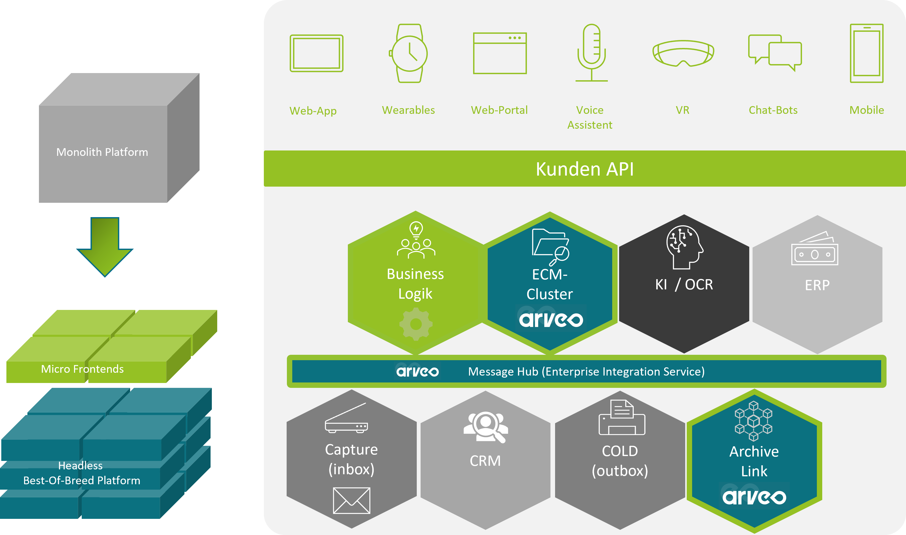
This often called Best-Of-Breed strategy benefits from the fact that the services available in the marketplaces have become increasingly standardized in recent years.
arveo consistently relies on a microservice architecture. The individual services are loosely connected to one another via lightweight stateless web service interfaces (http, REST) and each service can run and scale independently. All arveo functions are available via a uniform REST API gateway, which also takes care of the intelligent load distribution and the detection of defective services.
Scalability
Modern cloud-ready platforms rely on horizontal scaling and the load is distributed over many nodes, which can consist of inexpensive commodity hardware. Such a structure can also save costs through automated SCALE OUT and DOWN by switching nodes on or off as required. The arveo platform has a high tolerance for the failure of individual nodes. A high-performance availability is also required, since the end user nowadays only shows a limited understanding of long response times and can quickly switch to the competition in case of doubt.
All arveo services support containerized deployment and use stateless REST APIs so that they can be easily integrated into any cloud infrastructure. Through the use of containerized applications (Docker) and the service management of the open source Spring Framework, which well-known providers such as Netflix use and continuously improve, the services can be installed automatically as often as required and thus scale out and down if you use the cloud orchestration framework kubernetes. You can cluster together linux containers and build an auto-scaling and high available platform with high fail safety. A blue-green deployment for the risk-free, downtime-free rollout of new software versions is also possible.
Future-Proof
Our services use standards as far as possible, so that services from different providers can be delivered without great integration effort and the customer can react quickly to changes in the market. Due to the secure web service interfaces, all services including the database can be obtained from the cloud at any time.
With arveo services, you can build a sustained system architecture. By design arveo will you allow to separate your business logic from arveo ECM standard services and all other available cloud services like OCR, AI, document conversion (e.g. to PDF), identity management. arveo solutions are designed to be manufacturer-independent, so that the underlying REST ECM and other services can be exchanged at easily calculable costs.
This approach makes it possible to exchange individual services through to the content services of arveo with little and easily calculable effort. Even arveo ECM services can be replaced by comparable services and via an open source S3 connector supplied, third-party systems can access the content objects migration-free using the S3 standard API.
Hybrid operation
arveo is a native cloud platform and is based on Open Source libraries and services. Through the consistent microservice architecture and the use of open source cloud technology, you can keep arveo's operating costs low.
Advantages of arveo operation
-
All services are horizontally scalable separately and can therefore also be operated on simple hardware. arveo runs on all Linux and Windows operating systems.
-
No additional license costs due to the consistent use of open source technology such as Linux, PostgreSQL 18.1.
-
Container deployment: Simple integration into existing cloud platforms enables load-dependent, automated service provision up to blue-green deployment for seamless updates to new software versions.
-
Hybrid architecture: Flexible use of cloud services or on-premise services.
-
Low manufacturer dependency: By separating the user interface and business logic from the ECM / BPM services while using standards such as REST, S3 or BPMN2, there is less dependency on one manufacturer.
-
Web applications: We deliver templates for PWA (Progressive Web Apps) based on the state-of-the-art angular framework, which are completely open source. I.e. their surfaces belong to you and can be used independently of arveo.
-
Use of standards: Low training costs and high availability of know-how on the market through the use of standard frameworks (angular), standard interfaces (REST, S3, SAP Archive Link) and SDKs for Javascript, JAVA, C #.
Micro frontends
In addition, you can also use our ready-made, modern, clear, responsive and functional micro frontends, to make the arveo content services and thus their content easily available at the right time and in the right place in your business processes.
Mobile First: All surface components and interfaces are designed for mobile use.
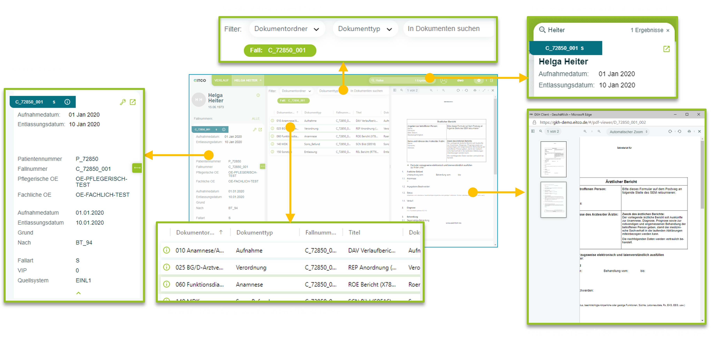
Getting Started
In this guide you will create a simple application that implements a basic project file scenario. It will consist of a document type, that represents documents used in a project.
Prerequisites
To complete the steps in this guide, you need the following tools installed on your machine:
-
JDK 21 (https://adoptium.net).
-
Apache Maven (https://maven.apache.org)
-
An IDE of your choice (we recommend IntelliJ)
Maven configuration
To be able to access the maven artifacts of arveo, you need access to the EITCO Nexus repository.
Internal
When you are inside the company network or the VPN, you can use the internal Nexus that does not require authentication. The following maven settings.xml file shows how to configure the required repositories. The settings.xml file can be found in the .m2 directory in your user home directory.
<settings xmlns="http://maven.apache.org/SETTINGS/1.0.0"
xmlns:xsi="http://www.w3.org/2001/XMLSchema-instance"
xsi:schemaLocation="http://maven.apache.org/SETTINGS/1.0.0 http://maven.apache.org/xsd/settings-1.0.0.xsd">
<pluginGroups>
</pluginGroups>
<proxies>
</proxies>
<servers>
</servers>
<mirrors>
</mirrors>
<profiles>
<profile>
<id>repos-default</id>
<activation>
<activeByDefault>true</activeByDefault>
</activation>
<properties>
</properties>
<repositories>
<repository> (1)
<id>nexus</id>
<url>https://nexus-intern.eitco.de/repository/maven-private/</url>
<releases>
<updatePolicy>never</updatePolicy>
</releases>
<snapshots>
<updatePolicy>never</updatePolicy>
</snapshots>
</repository>
</repositories>
<pluginRepositories>
<pluginRepository> (2)
<id>nexus</id>
<url>https://nexus-intern.eitco.de/repository/maven-private/</url>
<releases>
<updatePolicy>never</updatePolicy>
</releases>
<snapshots>
<updatePolicy>never</updatePolicy>
</snapshots>
</pluginRepository>
</pluginRepositories>
</profile>
</profiles>
</settings>| 1 | The maven repository that contains maven artifacts of arveo |
| 2 | The plugin repository that contains maven plugins used when building the demo project |
External
When you are outside the company network and the VPN, you need to use the public Nexus repository that requires authentication. To do so, maven requires credentials. For security reasons, the credentials should be encrypted. Follow the instructions in the Maven documentation to configure a master password and to create an encrypted password.
You should now have created a settings-security.xml file in the .m2 directory like the one shown below:
<settingsSecurity>
<master>{encryped-master-password}</master>
</settingsSecurity>Then you have to adapt your maven settings.xml as follows:
Depending on the access rights of your user for the Nexus server, you might not have access to the maven-private
repository used in the configuration below. In this case you must use the maven-ecr repository instead.
|
<settings xmlns="http://maven.apache.org/SETTINGS/1.0.0"
xmlns:xsi="http://www.w3.org/2001/XMLSchema-instance"
xsi:schemaLocation="http://maven.apache.org/SETTINGS/1.0.0 http://maven.apache.org/xsd/settings-1.0.0.xsd">
<pluginGroups>
</pluginGroups>
<proxies>
</proxies>
<servers>
<server>
<id>nexus</id> (1)
<username>username</username> (2)
<password>{your-encrypted-password}</password> (3)
</server>
</servers>
<mirrors>
</mirrors>
<profiles>
<profile>
<id>repos-default</id>
<activation>
<activeByDefault>true</activeByDefault>
</activation>
<repositories>
<repository>
<id>nexus</id> (4)
<url>https://nexus.eitco.de/repository/maven-private/</url>
<releases>
<updatePolicy>never</updatePolicy>
</releases>
<snapshots>
<updatePolicy>never</updatePolicy>
</snapshots>
</repository>
</repositories>
<pluginRepositories>
<pluginRepository>
<id>nexus</id>
<url>https://nexus.eitco.de/repository/maven-private/</url>
<releases>
<updatePolicy>never</updatePolicy>
</releases>
<snapshots>
<updatePolicy>never</updatePolicy>
</snapshots>
</pluginRepository>
</pluginRepositories>
</profile>
</profiles>
</settings>| 1 | The server id is used to tie credentials to repositories |
| 2 | The username you use to logon to nexus |
| 3 | The password encrypted by maven using the master password |
| 4 | Tells maven to use the credentials for the server with id 'nexus' |
Make sure to use only https repositories when using credentials. Current maven versions already block the usage of unencrypted repository connections.
Step 1 - Type definitions
In the first step you will define the data model of your application. In arveo, this is done by creating Java (or Kotlin) interfaces which contain getters and setters for the fields that will be available on each individual entity type. There is a maven archetype to create a project that will contain those type definition interfaces and integration tests to try out the created types. More information about the archetype can be found here.
First, create a directory that will contain the project files for the demo application. Open a command line in this directory and perform the following operation.
mvn archetype:generate -DarchetypeGroupId=de.eitco.ecr -DarchetypeArtifactId=ecr-types-archetype -DarchetypeVersion=28.1.0-SNAPSHOTThe archetype version is the arveo version that you are working with. The current version is 28.1.0-SNAPSHOT.
Maven will start by downloading a couple of required artifacts. After that, the archetype plugin will be started in interactive mode. It will query for several settings required for the generated project. Some of the settings have default values that can be used.
-
class-name-prefix: A prefix that will be used for the generated classes. Use Demo for this guide.
-
groupId: The group-id of the artifact that will contain the types. Use de.eitco.demo.
-
artifactId: The artifact-id of the artifact that will contain the type. Use demo-types.
-
version: The version of the artifact. You can use the default value.
-
package: The package that will contain the types. You can use the default value.
In the last step, the archetype plugin shows the selected property values and asks for confirmation. After the settings are confirmed, the project will be generated in a folder called demo-types.
The archetype documentation contains a description of the generated project. For this guide, the files in implementation/types are the most important ones:
-
Document.java: This file contains a type definition interface for the type definition document.
-
Record.java: This file contains a type definition interface for the type definition record.
-
DemoTypeRegistration.java: A spring component that automatically registers your type(s) in the arveo service. Only types that have been registered can be used in your application.
-
org.springframework.boot.autoconfigure.AutoConfiguration.imports: This file tells spring to autoconfigure the DemoRegistration component.
The generated model consists of a simple record structure, where a record can contain multiple documents that are linked to the record using a foreign key. The foreign key is defined in the document type definition.
The annotations used to define the type definitions are documented here.
The archetype has generated integration tests for the generated type definitions, too. You can find them in the directory test/system-test. The file RecordClientIT.java contains some tests that show how to perform basic CRUD operations on the generated types.
Running the tests
The tests are run automatically in a full maven build. The system-test module is configured to automatically start a
complete arveo system including all required services and a database. If you want to run the tests manually
from the IDE, you can still use maven to start the arveo system. Open a command line in the system-test
directory and run mvn -Denv. Maven will start the following processes:
-
A PostreSQL database server
-
An ActiveMQ message broker
-
A Keycloak server
-
A Vault server
-
The Service Registry
-
The Configuration Service
-
The arveo Service
The services will be kept alive until you press enter in the command line.
This will only work if a complete build has been performed at least once (which can be done through mvn install).
The system set up by maven in the system test module is already configured to contain the type definitions that were
defined in this project. To use those definitions in another system, you have to add the jar containing the definitions
to the classpath of the arveo service instances. This can be done by copying the ja to a lib directory and
adding the following command line option when starting the arveo service instances:
-Dloader.path=path/to/libs
|
Adapt the model
Now you can adapt the generated type definition so that it fits the requirements for our project scenario. In this scenario, documents are organized in a two-level folder structure. For example, the project could contain a folder called "invoices" which again contains two folders named "inbound" and "outbound". Each document is contained in exactly one folder and belongs to exactly one project. The document type will contain the following attributes:
-
projectName: The name of the project the documents belongs to
-
type: The type of document, e.g. whether it is an invoice, a contract or something else
-
structureLevel1: This field is used to represent the first level of the folder structure
-
structureLevel2: This field is used to represent the second level of the folder structure
-
status: Represents the current status of the document
-
customerName: The name of the customer associated to the project
-
contactPerson: The contact person for the document
-
assignedTo: The employee currently assigned to work on the document
-
fileSystemCreationDate: The timestamp at which the file was created in the file system (not the time it was imported to arveo - see system fields)
In addition to these custom fields, the document will contain some system fields like content metadata (filename, size, mimetype…) and versioning information like creation- and update-timestamps.
The two type definition interfaces generated by the archetype are not required and can be removed. Don’t forget to
remove the registrations from DemoTypeRegistration.java and the generated test class RecordClientIT.java.
Adding getters for system fields
Complete listings for the steps below can be found at the end of this chapter.
First, you have to create a new interface for the document type definition used in this project. The interface will be
called DemoModel. It will serve both as a type definition and as a model for the REST API, so it has to be annotated
with @Model (for the JSON serialization) and @Type(ObjectType.DOCUMENT) (for the type definition). To make the new
type definition available in arveo, it has to be registered by adding @Register(DemoModel.class) to
DemoTypeRegistration.java.
package de.eitco.demo.types;
import de.eitco.commons.asdl.annotation.Model;
import de.eitco.ecr.type.definition.annotations.ObjectType;
import de.eitco.ecr.type.definition.annotations.Type;
@Model
@Type(ObjectType.DOCUMENT)
public interface DemoModel {
}Let’s first add some getters for system fields to DemoModel. Those will provide access to system information that is
generated automatically when an entity is created or updated. Add the following lines to DemoModel.java:
@SystemProperty(SystemPropertyName.ID)
DocumentId getDocumentId();
@SystemProperty(SystemPropertyName.CONTENT)
Map<String, ContentInformation> getContentInformation();
@SystemProperty(SystemPropertyName.VERSION_INFO)
VersionInformation getVersionInformation();
@SystemProperty(SystemPropertyName.MODIFICATION_INFO)
ModificationInformation getModificationInformation();The JavaDoc for the SystemPropertyName enum constants contains information about each field. The data type for the
contentInformation field is a map because each document can contain multiple content elements. For example, a
document could contain a TIFF image and a PDF rendition of the TIFF.
Adding getters and setters for custom fields
Now we can add the getters and setters for the custom attributes:
@Mandatory
String getProjectName();
void setProjectName(String projectName);
@Mandatory
String getStructureLevel1();
void setStructureLevel1(String structureLevel1);
@Optional
String getStructureLevel2();
void setStructureLevel2(String structureLevel2);
@Optional
String getCustomerName();
void setCustomerName(String customerName);
@Optional
String getContactPerson();
void setContactPerson(String contactPerson);
@Mandatory
ZonedDateTime getFileSystemCreationDate();
void setFileSystemCreationDate(ZonedDateTime fileSystemCreationDate);
@Optional
Long getAssignedTo();
void setAssignedTo(Long assignedTo);The annotations @Mandatory and @Optional can be used to control which fields have to be set by the client and which
can be left empty.
| The annotations for the arveo type definitions always have to be added to the getters. You can find an overview of the supported data types here. |
For the type field we want to limit the possible values that can be set. This can be done by defining an enumeration.
Create the following enumeration type:
package de.eitco.demo.types;
import de.eitco.ecr.type.definition.annotations.Enumeration;
@Enumeration
public enum DemoModelType {
INVOICE,
CONTRACT,
OTHER
}This enum class will be mapped to an enumeration type on the database. It needs to be registered in the type registration just like the DemoModel type.
We will do the same for the status field. Add and register the following enum class:
@Enumeration
public enum DemoModelStatus {
IN_PROGRESS,
DONE
}The class DemoTypeRegistration should now look as follows:
package de.eitco.demo.types;
import de.eitco.ecr.type.definition.annotations.Register;
import de.eitco.ecr.type.definition.annotations.TypeDefinitionRegistration;
import org.springframework.boot.autoconfigure.AutoConfiguration;
@AutoConfiguration
@Register(DemoModel.class)
@Register(DemoModelType.class)
@Register(DemoModelStatus.class)
public class DemoTypeRegistration implements TypeDefinitionRegistration {
}Now you can add the getters and setters for the two fields in the DemoModel class:
@Mandatory
DemoModelType getType();
void setType(DemoModelType type);
@Optional
DemoModelStatus getStatus();
void setStatus(DemoModelStatus status);Your DemoModel class should now look like this:
package de.eitco.demo.types;
import de.eitco.commons.asdl.annotation.AsdlIgnore;
import de.eitco.commons.asdl.annotation.Model;
import de.eitco.commons.user.management.common.model.ModificationInformation;
import de.eitco.ecr.common.ContentInformation;
import de.eitco.ecr.common.VersionInformation;
import de.eitco.ecr.common.document.DocumentId;
import de.eitco.ecr.type.definition.annotations.ObjectType;
import de.eitco.ecr.type.definition.annotations.Type;
import de.eitco.ecr.type.definition.annotations.constraint.Mandatory;
import de.eitco.ecr.type.definition.annotations.constraint.Optional;
import de.eitco.ecr.type.definition.annotations.system.SystemProperty;
import de.eitco.ecr.type.definition.annotations.system.SystemPropertyName;
import java.time.ZonedDateTime;
import java.util.Map;
@Model
@Type(ObjectType.DOCUMENT)
public interface DemoModel {
@SystemProperty(SystemPropertyName.ID)
DocumentId getDocumentId();
@SystemProperty(SystemPropertyName.CONTENT)
Map<String, ContentInformation> getContentInformation();
@SystemProperty(SystemPropertyName.VERSION_INFO)
VersionInformation getVersionInformation();
@SystemProperty(SystemPropertyName.MODIFICATION_INFO)
ModificationInformation getModificationInformation();
@Mandatory
String getProjectName();
void setProjectName(String projectName);
@Mandatory
String getStructureLevel1();
void setStructureLevel1(String structureLevel1);
@Optional
String getStructureLevel2();
void setStructureLevel2(String structureLevel2);
@Optional
String getCustomerName();
void setCustomerName(String customerName);
@Optional
String getContactPerson();
void setContactPerson(String contactPerson);
@Mandatory
ZonedDateTime getFileSystemCreationDate();
void setFileSystemCreationDate(ZonedDateTime fileSystemCreationDate);
@Mandatory
DemoModelType getType();
void setType(DemoModelType type);
@Optional
DemoModelStatus getStatus();
void setStatus(DemoModelStatus status);
@Optional
Long getAssignedTo();
void setAssignedTo(Long assignedTo);
}Run mvn clean install to build the project.
Step 2 - Command line tool
In the second step you will implement a simple command line application that uses the model defined in step 1. We will use the Spring Initializer to generate a maven project with the required dependencies for a Spring command line application.
Generating the project
-
Go to https://start.spring.io/
-
Under "Project", select "Maven Project"
-
Under "Language", select "Java"
-
Select Spring Boot version 4.1.0. If your required version is not available, select the most compatible one in terms of major.minor.patch.
-
Define project metadata. For example, use Group = de.eitco.demo, Artifact = demo-tool, Name = demo-tool, Package name = de.eitco.demo.tool
-
Select "Jar" Packaging
-
Select Java version 21 or newer
-
Add a dependency to "Spring Shell"
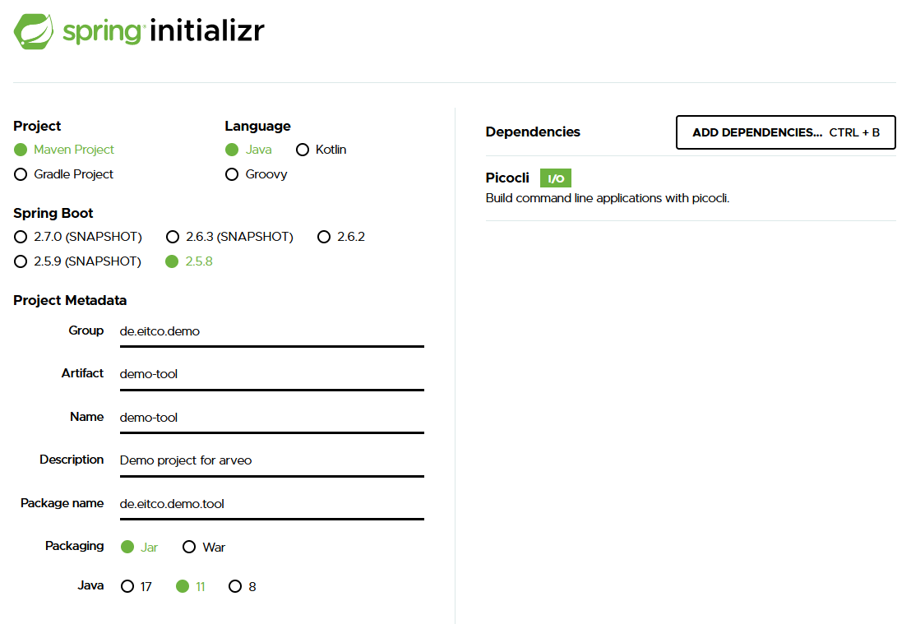
Click Generate and download the zip file containing the generated project. Unzip the file to a directory of your choice
and open the project in your IDE. Delete the src/test directory.
Adding arveo dependencies
Open the generated pom.xml file and add the following dependency to the dependency-management section:
<dependencyManagement>
<dependencies>
...
<dependency> (1)
<groupId>de.eitco.ecr</groupId>
<artifactId>ecr-bom</artifactId>
<version>28.1.0-SNAPSHOT</version>
<type>pom</type>
<scope>import</scope>
</dependency>
</dependencies>
</dependencyManagement>| 1 | Imports dependency versions for all dependencies required by arveo. |
| The order of the imported BOMs is important. The version of a dependency is defined by the first BOM that manages this dependency. |
Now you can add the required arveo dependencies to the dependencies section:
<dependency>
<groupId>de.eitco.ecr</groupId> (1)
<artifactId>ecr-sdk-http</artifactId>
<exclusions>
<exclusion> (2)
<groupId>de.eitco.commons</groupId>
<artifactId>cmn-spring-security5-oauth2-client</artifactId>
</exclusion>
</exclusions>
</dependency>
<dependency> (3)
<groupId>de.eitco.commons</groupId>
<artifactId>cmn-spring-security5-oauth2-client-non-web</artifactId>
</dependency>
<dependency>
<groupId>de.eitco.demo</groupId> (4)
<artifactId>demo-types-types</artifactId>
<version>1.0-SNAPSHOT</version>
</dependency>| 1 | This dependency contains a spring boot starter for the arveo SDK |
| 2 | We have to exclude the OAuth2 client for web applications because the tool will be a console application |
| 3 | This dependency contains the OAuth2 client for non-web applications |
| 4 | The data model that was defined in step 1 |
| The arveo version used in the demo-types project must be the same as the version used in the demo-tool project. |
Implementing the tool
The tool will use the Spring Shell library to make it easy to write a command line application with features like usage help and simple parameter binding.You can read more about Spring Shell here.
At first, you have to configure the Spring application and add a custom shutdown handler so that the application will shut down all background tasks on exit.Add the following class:
package de.eitco.demo.tool;
import com.netflix.discovery.DiscoveryManager;
import org.springframework.boot.context.event.ApplicationReadyEvent;
import org.springframework.context.event.EventListener;
import org.springframework.stereotype.Component;
@Component
public class ShutdownHandler {
@EventListener(ApplicationReadyEvent.class)
public void ready() { (1)
DiscoveryManager.getInstance().shutdownComponent(); (2)
System.exit(0); (3)
}
}| 1 | Register an event listener that will be called when the Spring application shuts down |
| 2 | Tell the discovery client used by the arveo SDK to shut down |
| 3 | Exit the application |
Go to the de.eitco.demo.tool package and create a new class called "ArveoCommand". This will contain the business
logic behind the commands available in the command line application.
package de.eitco.demo.tool;
import de.eitco.commons.lang.Logger;
import org.springframework.shell.standard.ShellComponent;
import org.springframework.shell.standard.ShellMethod;
import org.springframework.shell.standard.ShellOption;
@ShellComponent (1)
public class ArveoCommand {
private static final Logger LOGGER = Logger.getLogger(ArveoCommand.class); (2)
private final TypeDefinitionServiceClient typeDefinitionServiceClient; (3)
@Autowired
public ArveoCommand(TypeDefinitionServiceClient typeDefinitionServiceClient) {
this.typeDefinitionServiceClient = typeDefinitionServiceClient;
}
}| 1 | Defines ArveoCommand as a command for Spring Shell |
| 2 | We will use the de.eitco.commons.lang.Logger to log exception messages |
| 3 | The main entry point for the arveo SDK, injected by Spring in the constructor |
Now it is time to implement the import. Add the following methods to the ArveoCommand class:
@ShellMethod(key = "import", value = "import a project") (1)
public void importProjects(
@ShellOption(help = "username for logon") String username, (2)
@ShellOption(help = "password for logon") String password,
@ShellOption(help = "name of the customer") String customer,
@ShellOption(help = "base directory of the projects to import") String baseDirectory
) {
File base = new File(baseDirectory);
Arrays.stream(base.listFiles(File::isDirectory)).forEach(root -> {
String projectName = root.getName();
Arrays.stream(root.listFiles()).forEach(file -> {
if (file.isFile()) {
LOGGER.warn(() -> "Ignored file " + file);
} else {
importLevel1(username, password, projectName, customer, file);
}
});
});
}| 1 | Marks the method as a command for Spring Shell |
| 2 | Required parameters for the command with help text |
The importProject method will be used to import a project located in the provided root directory. The scenario does not support files located directly in the root of the project, so we will log a warning when we encounter such a file.
private void importLevel1(String username, String password, String projectName, String customer, File level1) {
String level1Value = level1.getName();
Arrays.stream(level1.listFiles()).forEach(file -> {
if (file.isDirectory()) {
importLevel2(username, password, projectName, customer, level1Value, file);
} else {
importFile(username, password, projectName, customer, level1Value, null, file);
}
});
}The importLevel1 method will collect all files and directories located in the first level of the project structure. Files will be imported directly, directories will be passed to the next importer method.
private void importLevel2(String username, String password, String projectName, String customer, String level1Value, File level2) {
String level2Value = level2.getName();
Arrays.stream(level2.listFiles()).forEach(file -> {
if (file.isDirectory()) {
LOGGER.warn(() -> "Ignoring directory " + file);
} else {
importFile(username, password, projectName, customer, level1Value, level2Value, file);
}
});
}This method collects all files located in the second level of the project structure. We do not support deeper structures, so we log a warning when we encounter a directory below level 2.
The method used to actually import data into arveo is shown below:
private void importFile(String username, String password, String projectName, String customer, String level1, String level2, File file) {
AuthenticationHelper.runAsUser(username, password, () -> { (1)
TypedDocumentServiceClient<DemoModel> serviceClient = (2)
typeDefinitionServiceClient.getDocumentServiceClient().byClass(DemoModel.class);
DemoModel model = serviceClient.createTypeInstance(); (3)
model.setProjectName(projectName);
model.setStructureLevel1(level1);
model.setStructureLevel2(level2);
model.setCustomerName(customer);
model.setFileSystemCreationDate(ZonedDateTime.ofInstant(
Instant.ofEpochMilli(file.lastModified()),
ZoneId.systemDefault())
);
DemoModelType type = DemoModelType.OTHER; (4)
String fileName = file.getName();
if (fileName.startsWith(DemoModelType.CONTRACT.name())) {
type = DemoModelType.CONTRACT;
} else if (fileName.startsWith(DemoModelType.INVOICE.name())) {
type = DemoModelType.INVOICE;
}
model.setType(type);
try (InputStream stream = Files.newInputStream(file.toPath())) {
ContentUpload contentUpload = new ContentUpload(fileName, stream);
Map<String, ContentUpload> contentElements = Map.of("content", contentUpload); (5)
serviceClient.create(new TypedDocumentInput<>(contentElements, model)); (6)
System.out.println("Imported file " + fileName + " belonging to project " + projectName);
} catch (IOException e) {
LOGGER.exception(e);
}
});
}| 1 | The AuthenticationHelper takes care of populating spring’s security context with the required credentials.
The OAuth2 client will use the provided username and password to retrieve an access token from the authentication
service to authenticate the requests to the arveo service. |
| 2 | We use the injected TypeDefinitionServiceClient to get a service client for the type definition of our model class. |
| 3 | The service client can provide an instance of the interface defining the model. This instance is then populated with the metadata. |
| 4 | We will use a simple file name prefix to determine the type of the document. |
| 5 | Here we define the content elements of the new document |
| 6 | Finally, we send the create request to the arveo service |
When you start the application again and type help in the CLI, you will see that our new import command is listed. Typing
help import will show information about the command’s parameters.
Now you have to add configuration parameters. The configuration parameters for the command line tool must be added to the
file src/main/resources/application.yaml. Create this file if it does not exist already. You can copy the entire spring.security section from the
file test/system-test/src/test/resource-templates/application-test.yaml in the demo-types project generated earlier in
this guide. Replace the ${keycloak.port} variable with the actual value defined in the pom.xml of the system-test
module of demo-types (by default 8180).
spring:
security:
oauth2:
client:
registration:
keycloak-password: (1)
provider: keycloak
client-id: "testclient"
client-secret: "yx7n6di3kXZ4p3Kj2oY1Js9NW7hbOCjh"
authorization-grant-type: "password"
scope: openid
provider:
keycloak:
issuer-uri: "http://localhost:8180/realms/TestRealm" (2)
shell:
interactive:
enabled: true (3)
logging: (4)
file:
name: "demo-tool.log"
level:
root: ERROR| 1 | Configures an OAuth2 client that uses the resource owner password grant type. Client-id and secret are configured in the test system provided by the system test module of the project created in step 1. |
| 2 | Tells the OAuth2 client where to find the Keycloak instance for autoconfiguration. |
| 3 | Enable interactive mode for the shell application |
| 4 | Log only errors to a file |
The Spring Initializer automatically adds a file called application.properties. Move the application name parameter
from this file to the application.yaml and delete application.properties.
|
In the last step, you have to edit the generated DemoToolApplication class and exclude a Spring autoconfiguration
that would cause a conflict with the Oauth2 configuration of the arveo SDK. It is also required to configure
the application as a non-web application:
package de.eitco.demo.tool;
import org.springframework.boot.WebApplicationType;
import org.springframework.boot.autoconfigure.SpringBootApplication;
import org.springframework.boot.autoconfigure.security.oauth2.client.reactive.ReactiveOAuth2ClientAutoConfiguration;
import org.springframework.boot.builder.SpringApplicationBuilder;
@SpringBootApplication(exclude = ReactiveOAuth2ClientAutoConfiguration.class) (1)
public class DemoToolApplication {
public static void main(String[] args) {
new SpringApplicationBuilder(DemoToolApplication.class)
.web(WebApplicationType.NONE) (2)
.run(args);
}
}| 1 | Exclude autoconfiguration for OAuth2 for reactive web applications |
| 2 | Tell Spring that this is not a web application |
Building and running the tool
Now we can build and run the command line tool. You can either use the IDE or run mvn clean install in a command
line for the project containing the demo tool. After the build has finished, you have to start the test system.
Open a command line in the system-test module of the demo-types project and execute the command mvn -Denv
(see Running the tests). Now we can use another command line in the target directory of the command line tool
project to run the tool. Running java -jar .\demo-tool-0.0.1-SNAPSHOT.jar will start the tool. Typing help in the
CLI will show all available commands. Typing help import will show help about the import command.
java -jar .\demo-tool-0.0.1-SNAPSHOT.jar
. ____ _ __ _ _
/\\ / ___'_ __ _ _(_)_ __ __ _ \ \ \ \
( ( )\___ | '_ | '_| | '_ \/ _` | \ \ \ \
\\/ ___)| |_)| | | | | || (_| | ) ) ) )
' |____| .__|_| |_|_| |_\__, | / / / /
=========|_|==============|___/=/_/_/_/
:: Spring Boot :: (v3.2.3)
shell:>help import
NAME
import - import a project
SYNOPSIS
import [--username String] [--password String] [--customer String] [--baseDirectory String] --help
OPTIONS
--username String
username for logon
[Mandatory]
--password String
password for logon
[Mandatory]
--customer String
name of the customer
[Mandatory]
--baseDirectory String
base directory of the project to import
[Mandatory]
--help or -h
help for import
[Optional]Finally, here is a complete listing of the ArveoCommand class for copy&paste:
package de.eitco.demo.tool;
import de.eitco.commons.lang.Logger;
import de.eitco.commons.spring.authentication.AuthenticationHelper;
import de.eitco.demo.types.DemoModel;
import de.eitco.demo.types.DemoModelType;
import de.eitco.ecr.common.ContentUpload;
import de.eitco.ecr.sdk.TypeDefinitionServiceClient;
import de.eitco.ecr.sdk.document.TypedDocumentInput;
import de.eitco.ecr.sdk.document.TypedDocumentServiceClient;
import org.springframework.beans.factory.annotation.Autowired;
import org.springframework.shell.standard.ShellComponent;
import org.springframework.shell.standard.ShellMethod;
import org.springframework.shell.standard.ShellOption;
import java.io.File;
import java.io.IOException;
import java.io.InputStream;
import java.nio.file.Files;
import java.time.Instant;
import java.time.ZoneId;
import java.time.ZonedDateTime;
import java.util.Arrays;
import java.util.Map;
@ShellComponent
public class ArveoCommand {
private static final Logger LOGGER = Logger.getLogger(ArveoCommand.class);
private final TypeDefinitionServiceClient typeDefinitionServiceClient;
@Autowired
public ArveoCommand(TypeDefinitionServiceClient typeDefinitionServiceClient) {
this.typeDefinitionServiceClient = typeDefinitionServiceClient;
}
@ShellMethod(key = "import", value = "import a project")
public void importProjects(
@ShellOption(help = "username for logon") String username,
@ShellOption(help = "password for logon") String password,
@ShellOption(help = "name of the customer") String customer,
@ShellOption(help = "base directory of the project to import") String baseDirectory
) {
File base = new File(baseDirectory);
Arrays.stream(base.listFiles(File::isDirectory)).forEach(root -> {
String projectName = root.getName();
Arrays.stream(root.listFiles()).forEach(file -> {
if (file.isFile()) {
LOGGER.warn(() -> "Ignored file " + file);
} else {
importLevel1(username, password, projectName, customer, file);
}
});
});
}
private void importLevel1(String username, String password, String projectName, String customer, File level1) {
String level1Value = level1.getName();
Arrays.stream(level1.listFiles()).forEach(file -> {
if (file.isDirectory()) {
importLevel2(username, password, projectName, customer, level1Value, file);
} else {
importFile(username, password, projectName, customer, level1Value, null, file);
}
});
}
private void importLevel2(String username, String password, String projectName, String customer, String level1Value, File level2) {
String level2Value = level2.getName();
Arrays.stream(level2.listFiles()).forEach(file -> {
if (file.isDirectory()) {
LOGGER.warn(() -> "Ignoring directory " + file);
} else {
importFile(username, password, projectName, customer, level1Value, level2Value, file);
}
});
}
private void importFile(String username, String password, String projectName, String customer, String level1, String level2, File file) {
AuthenticationHelper.runAsUser(username, password, () -> {
TypedDocumentServiceClient<DemoModel> serviceClient =
typeDefinitionServiceClient.getDocumentServiceClient().byClass(DemoModel.class);
DemoModel model = serviceClient.createTypeInstance();
model.setProjectName(projectName);
model.setStructureLevel1(level1);
model.setStructureLevel2(level2);
model.setCustomerName(customer);
model.setFileSystemCreationDate(ZonedDateTime.ofInstant(
Instant.ofEpochMilli(file.lastModified()),
ZoneId.systemDefault())
);
DemoModelType type = DemoModelType.OTHER;
String fileName = file.getName();
if (fileName.startsWith(DemoModelType.CONTRACT.name())) {
type = DemoModelType.CONTRACT;
} else if (fileName.startsWith(DemoModelType.INVOICE.name())) {
type = DemoModelType.INVOICE;
}
model.setType(type);
try (InputStream stream = Files.newInputStream(file.toPath())) {
ContentUpload contentUpload = new ContentUpload(fileName, stream);
Map<String, ContentUpload> contentElements = Map.of("content", contentUpload);
serviceClient.create(new TypedDocumentInput<>(contentElements, model));
System.out.println("Imported file " + fileName + " belonging to project " + projectName);
} catch (IOException e) {
LOGGER.exception(e);
}
});
}
}Step 3 - Use the tool to import projects
In the third step you will use the tool to import sample projects to arveo.
Creating a standardized project structure
Your project structure must have a certain layout to be successfully imported and archived in arveo.
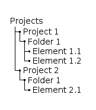
Here is an example of implementing this structure:
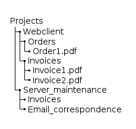
The test system already contains a user that can be used for testing. The user’s credentials are:
-
username: integration-test
-
password: password
To import all projects in the folder, type
import --username integration-test --password password --customer Mycustomer --baseDirectory C:/path/ProjectsThe import tool will print a message for each imported file.
Architecture Overview
Content Services
arveo is a content service platform and provides a set of lightweight, operating system-independent content microservices.
All services and clients exclusively use the secure, stateless, state-of-the-art HTTPS REST API. For the highest possible security on the web and to be suitable for mobile access, arveo uses token security based on the state-of-the-art Spring security framework.
A Java, C# und Javascript SDKs is available.
arveo has multi tenant support and separates content and meta values per tenant.
As arveo is built for cloud operating systems like Openstack, you can automatically deploy and scale the arveo containerized applications with the cloud orchestration framework Kubernetes. You can cluster together linux containers and build an auto-scaling and high available platform with high fail safety. Containerized applications scale horizontally and can run on commodity hardware.
arveo is available as containerized application or JAR file and allows a hybrid deployment: On-Premise or in Cloud.
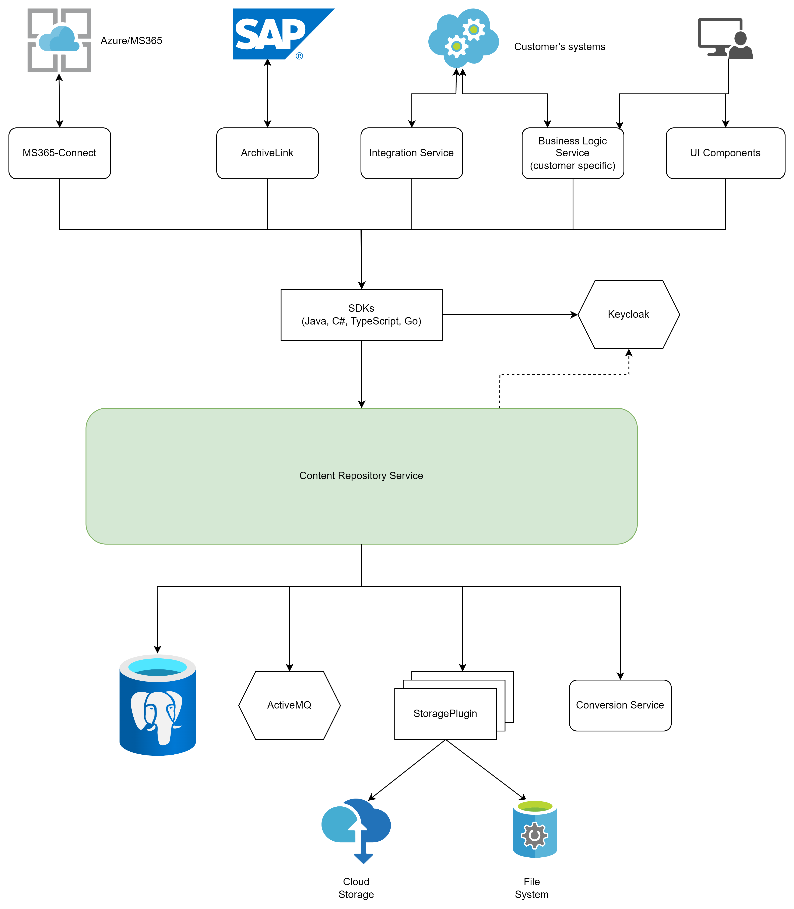
| Service | Description |
|---|---|
Content Repository Service |
Store, edit and version documents, records/folders and their metadata. Manage storage locations with retention periods (GoBD certificate & GDPR/DSGVO compliant) Search of metadata with relational database PostgreSQL 18.1. |
SAP Archive Link Service (optional) |
Web server that processes documents in accordance with the SAP Archive Link standard (certified) |
Document Conversion Service (optional) |
Conversion of document formats like docx, xlsx, etc. to image formats or PDF/A |
Integration Service (optional) |
The arveo enterprise integration service supports over 300 data formats
and interfaces like XML, REST, CSV, Mail, |
MS365-Connect (optional) |
Automatically imports documents from SharePoint or Mails from Outlook inboxes with a customizable mapping to arveo entities. |
A complete list of the arveo services can be found in the compatibility list.
3rd Party Services
To operate arveo successfully the operator of the platform must provide and manage the following services.
| Service | Description |
|---|---|
Active MQ 6.2.1 |
Message Queue Service to process JMS and AMQP message |
PostgreSQL 18.1 |
Relational database cluster for arveo system properties and customer metadata |
Content Storage |
Either a S3 API capable object store service or a redundant file system server |
Authentication Service (optional) |
Identity Management implementing OAUTH2 workflow for secure login. |
Monitoring (optional) |
Supports logging / monitoring via OpenTelemetry. Supports Spring Service Admin Monitor Supports Prometheus + Grafana Monitoring frontends Supports Loki logging database Supports tracing with Jaeger or Zipkin |
Industry standards
arveo relies on industry standards as much as possible to make integrations as easy as possible.
-
API: REST (JSON)
-
Storage: S3 (Cloud Object Storage API)
-
Authentication: OAUTH2, X.509 or API key (for some services).
-
Relational Database: JDBC access for PostgreSQL
-
SAP: Archive Link Service
-
Containerized application deployment
Opensource Technology Stack
The technology stack has been chosen to ensure creating high-performance, cloud- and client-capable and scalable state-of-the-art (micro) services with a modern web user interface. Our chosen tech stack enables the implementation of both small projects, which only consist of a single component in the backend, and large projects with various distributed components. The created components are deployable both locally on the customer’s hardware and in a cloud environment.
So the stack consists of the following components:
-
Spring Framework
The implementation of the backend components has been done in Java. The Spring Framework is used as the basis. Spring is an Open Source (Apache License) framework that has existed since 2004 with a large and very active developer community. The framework has a modular structure, which is why it is suitable for both simple and complex applications. It provides dependency injection, externalized configuration, and assistance with things like database access, transactions, messaging, etc.
-
Spring MVC, WebFlux
Spring MVC is a framework for creating web applications, especially for REST services. It is based on the servlet stack, in which a request is processed in a dedicated thread. WebFlux is also a framework for web applications, but is based on the reactive stack, in which the processing of a request is not restricted to one thread.
-
Spring Security
Spring Security is a component that provides authentication and authorization functionality. It can be used to secure web applications and also offers support for SSO technologies such as OAuth and SAML.
-
Archetypes
There are Maven archetypes that can be used to easily start a new project based on our technology stack. Different archetypes are available for different types of applications. The generated projects contain a Jenkins file with a preconfigured CI environment including static code analysis with sonar, dependency checks, a release mechanism at the push of a button and an optional teams hook. Also included are packaging modules with which the application can be packaged as a standalone application or as a Windows service.
-
Logging
In order not to depend on a specific logging implementation, logging has been implemented with a logging facade SLF4J or to be exact, with its specific implementation logback. In contrast to Log4J, Logback is actively maintained and is less complicated during initialization. It can be combined with SLF4J. Logback is one of the standard Spring dependencies.
-
Caching
Caching frameworks are available in many variants that cover very different use cases. Frameworks are listed here sorted according to their primary use case.
-
Local in-memory cache
Caffeine has proven itself as a fast local in-memory cache. It can be combined with Spring’s caching abstraction layer.
-
JDBC connection pool HikariCP has proven itself for JDBC connection pooling. This pool is also Spring’s standard dependency.
Security
Application security
arveo is a content service platform you can trust. We are continuously working to ensure that our services can be operated securely in the cloud.
All arveo content services and clients communicate via state-of-the-art secure REST interfaces via the secure HTTPS (SSL) protocol. All services require the web standard OAUTH2 with OpenID Connect authentication using tokens. A central authentication service (Keycloak) issues tokens with an expiry date. That ensures that only client authenticated against the central service can use the content service APIs.
Data security
arveo can encrypt the content with AES 256 and thus protect it against unauthorized access. The key is stored in such a way that maximum security is guaranteed. In order not to re-encrypt all data if the key is compromised, own keys are generated. Only the keys used are encrypted with the customer key and stored separately (Encryption). See also Data Integrity.
arveo allows you to organize documents into folders and records. arveo can control the access rights such as reading, writing or deleting to each document via attributes or access lists and thus grant or deny the corresponding access to the groups or users.
Access rights
-
None - no authorization (object not visible)
-
Browse - the user is allowed to see the metadata of the object, but not the content
-
Read - the user can read metadata and content
-
Relate - The user can add an annotation
-
Version - The user may change the content, but may not overwrite it
-
Write - The user can change metadata and content with the possibility to overwrite
-
Delete - The user can delete the object
Security patches
For us it is important to continuously ensure that all known vulnerabilities are fixed and that we deliver security patches and hotfixes as early as possible to our customers.
To achieve this goal we integrated all kind of state-of-the-art tools like OWASP dependency check in our build process that perform automated static code analysis. We also perform PEN Tests on a regular basis.
|
What is OWASP? The Open Web Application Security Project® (OWASP) is a nonprofit foundation that works to improve the security of software. Through community-led open-source software projects, hundreds of local chapters worldwide, tens of thousands of members, and leading educational and training conferences, the OWASP Foundation is the source for developers and technologists to secure the web. OWASP is dedicated to enabling organizations to conceive, develop, acquire, operate, and maintain applications that can be trusted. All of our projects, tools, documents, forums, and chapters are free and open to anyone interested in improving application security (https://owasp.org). |
Application protection by design
What does Eitco to develop, operate and maintain a secure content service platform?
-
we only use Opensource Software from secure and accepted projects like Apache or Spring.
-
we implemented an open source review and monitor process
-
Software architecture review by the Eitco software architects
-
security check using OWASP dependency check
-
legal licence check to ensure that it is a real open source project on the long term.
-
we continuously check our open source dependencies with reference to architecture, security leaks, maintainability.
-
-
to ensure that all known vulnerabilities of 3rd party open source projects are eliminated we integrated the OWASP dependency-check tool in our nightly build. Dependency check checks our dependencies against a database with all known vulnerabilities.
-
in case a severe vulnerability is found we take the appropriate countermeasures.
-
provide a security path for our customers with a new version of the 3rd party library
-
change the implementation or configuration using the 3rd party component
-
inform our customers to update or reconfigure components like database, message queue, application server, etc.
-
replace the 3rd party component. The typically requires a major update.
-
OWASP dependency-check tool
it is a Software Composition Analysis tool trying to find vulnerabilities made public within the project dependencies.
The tool checks if there is an issue tracked in the "Common Platform Enumeration (CPE)" for the dependency.
If a vulnerability is found it creates report with a link to the CVE entry.
It is command line interface that can be easily integrated in any nightly build process.
For further information, consult National Vulnerability Database (NVD)– (https://nvd.nist.gov).
The following source is worth having a look at: Jeff Williams und Arshan Dabirsiaghi “Unfortunate Reality of Insecure Libraries”
(https://owasp.org/www-pdf-archive/ASDC12-The_Unfortunate_Reality_of_Insecure_Libraries.pdf).
Compliance recommendations (GoBD)
All companies using electronic data processing for legally or tax relevant documents have to be compliant to the "Principles for the proper management and storage of books, records and documents in electronic form and for data access" (GoBD, BMF letter November 28, 2019).
In addition to the proper use of the arveo and 3rd party services, we recommend implementing these measures when using Eitco as compliant repository for legally compliant storage of records and documents.
Indexing and retrievel
To allow users and 3rd party applications to identify and find objects in arveo you should define a unique and immutable unique identifier property (Data Modelling). The property must be @Unique to ensure that a user or business application can clearly identify the item. The unique identifier should use the taxonomy of business processes and contain all information to clearly recognize the document. Make the property @Readonly to ensure that the identifier is always set and immutable.
The minimizes the risk of incorrect indexing and undetectability of documents because the index is immutable, duplicate identifiers are rejected and the compliant taxonomy ensures that every user can find documents easy and fast. We strongly recommend building a documented, simple but clear taxonomy.
Your business application or the user must set the value when the object is created (@Mandatory annotation), or you can let arveo create a unique value by adding counter annotations. Add the @Autoincrement annotation if a simple sequential Long id meets your requirements.
If you need a more sophisticated unique identifier you can use the annotation _@FormattedCounter which allows you to create e.g. String identifiers like <year>-<sequence> (Unique Identifier Example)
List data types allow you to store more than String or long value for a property. You can search for each value using the array search operation of the arveo query language (Data Types).
Enumeration data types allow you to set one or more values from a fixed set of values.
Retention periods
Enable that the statutory retention periods are assigned to the records, cases and document types (Retention Periods, Retention Rules) and ensure that the storage container are configured correctly (Retention Container) .
Check if the technically assigned retention periods also correspond to the statutory retention periods. Monitor the audit logs to ensure that the retention period is set and is correct. Monitoring could be automated or could be a random control by an employee.
The operating team must ensure that storage container contain only documents with the same retention period. Please do not use the same bucket in different storage profiles or assign a storage profile containing content with retention to different document types.
Grant the deletion right for your storage containers to arveo. If arveo cannot delete the containers, your operating team is in charge of this task, and you must set the option delete rows only.
Configuring storage containers in arveo-service.yaml and your content storage is an ongoing task for your operating team. Eitco will try to create the buckets or subdirectory on your storage system but can also use already existing ones.
It must be ensured that the system time cannot be manipulated (e.g. NTP server). Suitable map measures that a change in the system time is detected promptly.
Because the new legal data privacy / protection act makes it necessary to erase data even before the expected retention period has expired arveo please take care that the content storage has no default hardware retention activated.
Audit log
Enable the audit option for all types containing legally compliant content (Audit Log). If the platform is operated safely (Platform Security) users and applications can exclusively write content and metadata using the arveo REST API. arveo logs all user or application update operations of content and metadata to the audit table.
All changes of content or metadata are persisted as a traceable and immutable version (Versioning) on your storage system and an audit entry is written to the audit log table (Audit Log) containing the author and the timestamp of the change. If a document is updated the version is incremented and saved in the version number. Although all version are traceable and accessible by the API we recommend making the version number system property visible in the application to identify copies of the original easily.
Ensure that the @Overwrite option is not set for legally compliant document types. If overwrite is turned on it is possible to manipulate the originally saved content and compromise the document without creating a versioned copy.
The audit logs are subject to the retention period of commercial and tax law. Ensure that the audit logs are kept for the legal retention period (10 years). We recommend that the operator of the platform exports and clears the audit tables using database tools after 2 years. Save the dumps as an arveo document with a 10-year retention period. If you need access to older audit logs you easily download the dumps and upload them to the database.
The audit tables must be protected against unauthorized access by users. Do not allow write-access to the audit tables to anyone but the arveo services. Only data protection officers are allowed to have controlled read access to the audit data.
Check the audit logs regularly to find unauthorized user activities.
Download and migration
All documents in arveo that are subject to retention are available by the REST API and can be downloaded. The integrity and availability of the content is the responsibility of the provider and operator of the platform. The provider must ensure that failures of the storage systems for database and content are identified at an early stage and take appropriate countermeasures. See chapter Fail Safety for technical and organizational measures for high availability of the arveo platform.
In the event that data has to be migrated, arveo offers an extensive export API that enables content and metadata to be exported. arveo saves the hash value (https://en.wikipedia.org/wiki/Cryptographic_hash_function) in the database that was determined when the content was first uploaded (Upload Data). This hash value can be used as a checksum to detect accidental or intentionally corruption of data. If the hash value of the content after the migration is identical to the original hash the migration report proves the correctness of the migration process. To report the completeness of the migration process the arveo API allows you to export a list of all records, cases and documents in a document type.
Legally compliant migration
-
Prerequisite for the migration
-
use verify and best hash check possible in your solution when uploading content to arveo.
-
-
During the migration
-
download content and metadata (including the original hash and retention period)
-
upload metadata and content to the migrated platform and set the retention period to the exact same value.
-
calculate hash of the migrated platform by downloading the content
-
-
After the migration
-
Correctness: compare hash, metadata and retention period for each original and migrated record, case and document.
-
Completeness: check that each migrated document can be found using the unique identifier
-
Traceability: Create a report for each document type. Report the content hash evidence and the metadata for all migrated objects.
Upload the migration report to the migrated platform and set the retention period to the retention date of the document with the longest retention period within the report.
Depending on your retention policy you can create separate reports for a retention period range (e.g. by year).
-
Data integrity
arveo guarantees high availability, reliability and high performance at all times. The system has to be protected from manipulation attempts by proven and well-thought concepts. The data that is stored and managed in the system is protected via the API. The access and editing rights are managed via attribute based access control. User rights are based on the developed concepts for users, groups and security attributes. More detailed information on this is provided in the relevant chapters of this manual.
Access to all data (documents, metadata) takes place exclusively via the API, with the corresponding protection mechanisms so that the security of the data is guaranteed at all times.
Content storage
The operator must take appropriate technical or organizational measures to ensure that the data is stored in the storage in such a way that it cannot be changed within the legally prescribed retention period.
Enable the verify option for all clients and integrations. The upload API optionally can verify the uploaded content. The content service downloads the just uploaded stream from the content storage and compares the hash once again with the expected value (Upload content). arveo stores the hash value in a system property and persists the value in the document type metadata table.
In case of very sensible data you can enable transparent encryption to follow the data protection rules and prevent your administrators from access of document content.
Databases
For the supported databases PostgreSQL 18.1 you can select between different data replication strategies:
-
Asynchronous replication (backup or mirror): Enables an asynchronous disaster recovery. Your database is periodically mirrored.
-
Synchronous database cluster: Transactions are synchronously replicated on more than one master node. The provider of the PostgreSQL 18.1 cluster must guarantee that data is stored redundant and reduce potential data loss.
Fail safety
The system operator is responsible for data security and recovery. He must ensure that the backups of the data are checked regularly and that recovery is reliably possible in the event of a failure. The IT processes that ensure the secure, redundant and highly available storage of arveo data in databases and object or file system storage systems are particularly decisive for the proper operation of the platform. These are the responsibility of the operator of the platform, who must implement the availability and security of the systems in accordance with legal and organizational requirements.
We strongly recommend using a redundant file system or object storage system. If you do not at least backup your data periodically a data loss is likely. For high availability with almost zero data loss our storage system should replicate the written content and data synchronously. The operating team of the platform must ensure that an appropriate replication is set up and monitored.
Object storages with REST APIs are designed for the cloud. If you decide to use storage from the Cloud (public or private) we recommend to use object storage via S3 API. Object storages provide a high level of redundancy (even geo redundant) and fail safety. The REST S3 API is very tolerant against network and infrastructure failures.
| Ensure technically and organizationally that there is sufficient space for storing the data. |
For the best high availability the provider of your storage system must protect the stored data against accidental, malicious, or disaster-induced loss of data. The better your data replication the better is your availability in case of a failure.
To achieve high availability for arveo the provider must guarantee that all required (content services) run as a cluster.
Security
Operators
The provider of the arveo services should ensure that only authorized data protection officers & administrators have data write (INSERT,UPDATE, DELETE) permissions for the database and the content repository.
An administrator only can illegally manipulate content if he can access both database and content storage because the control hash value of the content is stored in the database. Take care that none of your administrators has exclusive and unattended access to the content storage and the database.
Distributed management roles of the storage systems and the arveo transparent encryption feature make your system more forgery-proof!
The activities of administrators with extensive rights must be logged by the operator. The logs are subject to the retention periods of tax law and must be checked regularly.
Platform
To prevent unauthorized access to the arveo platform the provider must:
-
ensure that HTTPS communication is enabled for all clients, applications, 3rd party components and services (Services).
-
enable OAuth2.0 or X.509 certificate authentication X.509 certificate authentication and authorization for all arveo service (OAuth2.0). All arveo services require authentication, ensuring that only arveo services or authenticated and authorized users can use the API. We recommend using a state-of-the-art authentication services like Keycloak with Single Sign-on and 2-factor authentication enabled.
-
take suitable technical or organizational actions against unauthorized changes to the data such as firewall, VPN, transparent encryption with arveo or at hardware level,
-
provide adequate protection of passwords by using a state-of-the-art IDP such as Keycloak or MS Active Directory and increasing the password complexity accordingly.
-
take actions against denial of service attacks.
arveo Content Services
The administrators of the arveo platform must:
-
make sure that only authorized persons receive an account that grants access to arveo documents;
-
ensure that objects are protected against unauthorized access using attribute based access control. We recommend defining access control either using type level restrictions or security attributes.
-
the activities of managers who can change security attributes are logged via arveo audit and versioning. Both may be checked at regular intervals.
-
organizationally ensure that the password the arveo administration users are changed regularly.
Data Store
Persistence architecture
arveo guarantees forgery-proof long term availability of your content and metadata.
All revisions of content or metadata are stored as a traceable and immutable version (Versioning) to the storage systems. The content service checks the integrity of uploaded content by computing SHA-256 hashes on client and server side. Additionally, an audit entry is written to the audit log table (Audit Log). arveo provides a role based access control on object level and allows you to prevent unauthorized access to content and metadata.
arveo protects content and metadata by software design. arveo only allows access to content and metadata via the arveo REST API. As only arveo and highly authorized administrators have data writer rights for the database and the storage it is impossible that content is deleted or manipulated by unauthorized persons.
Together with arveo's capabilities to manage the retention periods of documents and records (Retention Periods) arveo guarantees a GDPR and/or DSGVO compliant data protection and data privacy.
arveo meets the the requirements of a revision proof long term archive and is a corner stone for the legal compliance of your IT systems.
| Because the new legal data privacy / protection act makes it necessary to erase data even before the expected retention period has expired arveo does not use hardware retention features. |
| If needed you can add verifiable evidence records to the documents (signatures, timestamps) to proof the integrity and authenticity of content and author. The creation of the evidence is not a feature of arveo . It only stores the record together with the content. |
In this chapter you will find all information how to setup a secure and legally compliant content service platform with arveo.
Data types
arveo distinguishes three kinds of data and stores each to the most suitable storage system.
-
Content: arveo stores unstructured content like documents, audio, video and images to either a cloud object storage or a file system storage.
Most cloud providers like AWS S3, NetAPP ONTAP, EMC Elastic Cloud, etc. provide file system storage or object storage systems. Object storages are organized in buckets and allow you to store an almost unlimited numbers of objects in a bucket. arveo accesses the content via REST Standard S3. -
Structured system properties: containing all primary keys and technical information about documents, containers and folders. The data has a fix data model and requires highest performance, consistency and transaction support. arveo saves the data on a relational database.
-
Customer specific metadata: The data model is different for each document, container or folder type. This metadata is semi structured and new properties might be added during the life cycle of the application.
-
Consistent customer keys: The properties require highest performance, consistancy and transaction support. arveo saves the data on a relational database.
-
High availability
The high availability (HA) of arveo depends highly on the HA of the storage systems for all kind of data. Each of the storage systems and as a result the arveo services follow the CAP (Consistency, Availability and Partition Tolerance) theorem saying that the availability and fail safety of a system depend on:
-
Consistency: All clients see the same content and metadata.
-
Availability: All clients can read and write.
-
Partition Tolerance: the system is fail safe when one or more nodes fail.
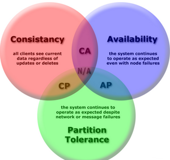
The CAP theorem in a nutshell predicts that you cannot have all three properties but only two of them.
As arveo is a ECM cloud platform consistency and availability (read/write) of content and metadata are most important. arveo tolerates that network or message failure of either the primary content storage or database node can cause exceptions on the client application. The arveo services do not store data within their containers and focus on scalability and partition tolerance.
| The arveo micro services should be deployed as containers in your cloud environment (e.g. kubernetes) and auto scaling should be implemented. |
Data integrity
arveo ensures the immutability and integrity of all your digital content and evidence records by an automated hash check each time content is up- or downloaded.
Upload
Hash-Check: When you use the upload content API, the client side and content service compute SHA-256 hash for the streamed data. Only if both values are identical the upload process is successful. The upload API allows you to pass the expected SHA-256 value and the API will only return OK if the server side hash matches the expected hash.
Verify: The upload API optionally can verify the uploaded content. The content service downloads the just uploaded stream from the content storage and compares the hash once again with the expected value (Upload Content). arveo stores the hash value in a system property and persists the value in the document type metadata table.
| The verify option of the Upload API may slow down your system when uploading a huge amount of data. |
Transactions
The arveo REST API is stateless and there is no session. That means that all REST API calls are atomic and all database commands are executed within one transaction. arveo guarantees the atomicity of the transactions and to avoid inconsistent states, all aborted transactions are removed and rolled back. Hanging transactions are removed and rolled back to avoid database locks.
| The database provider should configure the transaction deadlock timeout on your database to avoid locks on the database that can decrease the performance of your UPDATE and DELETE calls. |
Download
When you use the download API (Download Content) the client SDK computes the SHA-256 hash of the downloaded stream and compares it to the hash value in the system property of the document type. If the hash does not match the upload hash value in the database the download fails with a data integrity exception telling the caller that the data on the storage was most likely manipulated.
| An administrator only can illegally manipulate content if he can access both database and content storage because the control hash value of the content is stored in the database. Take care that none of your administrators has exclusive and unattended access to the content storage and the database. |
| Distributed management roles of the storage systems and the arveo transparent encryption feature can make your system forgery-proof! |
Content storage
arveo support evidence proof long term storage of your content and metadata by storing the content legally secure to either a S3 object storage or a file system. The storage must be redundant. Object storage systems like AWS, NetAPP or EMC Elastic Cloud Storage guarantee the long term availability and integrity of your content.
All changes of content or metadata are persisted as a traceable and immutable version (Versioning) on your storage system and an audit entry is written to the audit log table (Audit Log). arveo creates a version each time metadata including comments and annotations or content of a document is changed by the API arveo} creates a new entry containing the author and the timestamp pf the change in the version management table. The Update API allows you to add a comment to each version. The Version Management API provides access to all version information and metadata and content of previous versions.
|
To ensure that the content is immutable only arveo should have write access to the storage system. Only authorized data protection officers & administrators should have write-access to the storage system. In case of very sensible data you can enable encryption (Encryption) to follow the data protection rules and prevent your administrators from access of document content. |
For best high availability the provider of your storage system must protect the stored data against accidental, malicious, or disaster-induced loss of data. The better your data replication the better is your availability in case of a failure.
Data replication (redundancy)
For both supported storages (S3, file system) you can select between different data replication strategies:
-
Backup or Mirror enables an asynchronous disaster recovery. Your content data is periodically mirrored and the data;
-
Synchronous replication;
-
Asynchronous replication.
Fail Safety (Consistency, Availability)
As arveo stores each version of the content as an immutable object it is not possible that clients will get outdated data. If the replication is asynchronous it only can happen that clients get a read error.
In case the storage is offline arveo is not available and the system has an outage. In case the storage allows only read access arveo can download content but upload operations fail.
If the storage node has a long term outage the potential data loss is limited by the time that has passed since the last replication and the number of objects stored since that time.
|
We strongly recommend using a redundant file system or object storage system. If you do not at least backup your data periodically
a data loss is likely. For high availability with almost zero data loss your storage system should replicate the written content and data synchronously. The operating team of the platform must ensure that an appropriate replication is set up and monitored. |
|
You can configure different storage location (Cloud-Storage or on premise) for your content and document types (Storage Configuration). Reduce costs by storing non compliant and legally relevant data like PDF/A renditions of documents on storage systems with lower availability and performance SLAs. |
| Object storages with REST APIs are designed for the cloud. If you decide to use storage from the Cloud (public or private) we recommend to use object storage via S3 API. Object storages provide a high level of redundancy (even geo redundant) and fail safety. The REST S3 API is very tolerant against network and infrastructure failures. |
Consistent meta data storage (relational database)
The relational database PostgreSQL 18.1 is responsible for 100% consistent processing of the structured metadata and transactions.
Data replication (redundancy)
For the supported databases PostgreSQL 18.1 you can select between different data replication strategies:
-
Asynchronous replication (backup or mirror): Enables an asynchronous disaster recovery. Your database is periodically mirrored.
-
Synchronous database cluster: Transactions are synchronously replicated on more than one master node.
| The provider of the PostgreSQL 18.1 cluster must guarantee that data is stored redundant and reduce potential data loss. |
Fail safety (consistency, availability)
In case the database cluster is down or allows only read access arveo is not available (Deny Of Service/DOS). If the database has a long term outage and the data files are affected the potential data loss is limited by the time that has passed since the last replication and the number of objects stored since that time.
Fail safety (availability, partition tolerance)
In case the database cluster is down arveo is still available but free customer searches fail. In case one database node is down or the database is read only arveo is still available but searches may return outdated results. If the database has a long term outage and the data files are affected the potential data loss is limited by the time that has passed since the last replication and the number of objects stored since that time.
Clustering
Each arveo service can be configured as a service cluster to achieve HA. Depending on the deployment you can either set up an application server cluster (WAR deployment) or run our containerized applications on a cloud platform like open-stack with kubernetes.
Fail safety (consistency, availability)
| Service | Failure risks | Recommended |
|---|---|---|
Config Service |
Configuration not available to all nodes, system outage |
Cluster 2 |
Registry Service |
Service registry not available, system outage |
Cluster 2 |
Document Service |
Store, edit and version documents and metadata not available, system outage |
Cluster 2-n, automatic scale up/down by load |
SAP Archive Link Service |
SAP archive link not available, SAP outage |
Cluster 2-n, automatic scale up/down by load |
Document Conversion Service |
Conversion to PDF/A not available |
Cluster 2-n, automatic scale up/down by load |
Enterprise Integration Service |
Job execution paused and integration with external systems not available |
Cluster 2-n |
Federation Service |
Access to external repositories (Documentum, Saperion) not available |
Cluster 2-n, automatic scale up/down by load |
Required 3rd party services
To operate arveo successfully with high availability the operator of the platform must provide the following services as a cluster.
| Service | Failure risks | Recommended |
|---|---|---|
Active MQ |
Asynchronous operations are not triggered |
Cluster 2 |
PostgreSQL 18.1 |
Access to metadata not available, system outage |
Cluster 2-n depending on load and configuration of PostgreSQL 18.1 cluster |
Content Storage |
Content access not available, system outage |
Storage cluster depending on provider |
Authentication Service (optional) |
Login not available via OAUTH2, system outage |
Cluster 2 |
Monitoring (optional) |
ELK (Elasticsearch, Logstash, and Kibana) |
Cluster 2 |
| To achieve high availability for arveo the provider must guarantee that all required content services run as a cluster. |
Data deletion
By default all documents of a specific document type stored in arveo store the metadata to the configured database and their content to the object storage. When a version is created the content or metadata is stored as a traceable and immutable version (Versioning) to the database and storage system. That means that we have separate content objects and database entries for each version. Each document can have a retention period that ensures that the document cannot be deleted before the period expires.
You can delete or purge any object with the arveo Delete-API if you have the DELETE right for the document type and the entity and the retention period has not expired.
The delete method deletes all entities including all versions of the object in the database. The content is removed from the object storage asynchronously. The delete operation cannot be restored and the data is permanently deleted.
The purge method additionally erases the content objects or files from the content storage immediately.
Recycle bin
Any document, container or folder type can use the optional recycle bin feature. If it is enabled, entities in the type definition can be moved to and restored from the recycle bin.
The recycle bin is implemented as a boolean database system property DELETED. Entities in the recycle bin will be filtered from normal queries by default, but a client can compose search expressions that override this behavior (see Recycle Bin).
If you delete or purge an object in the recycle bin it is deleted like a document without recycle bin feature and cannot be restored.
| For compliance reasons the audit entries in the database are not deleted by the Delete-API and the delete operation written to the audit log. The operator of the platform must clean up the audit table after the legal retention period has expired. We recommend backing up the audit logs to meet the legal requirements of data protection and to ensure that the backups can be restored within the legal retention period. |
Automated recycle bin emptying
It is possible to empty your recycle bin by an automated job scheduled in the Enterprise Integration Service of arveo.You can activate the predefined empty recycle bin job, and you can change the age from the 6 months default value to the age you choose. The job deletes all entries permanently that have been in the recycle bin for longer than the set age.
Administration
Installation
Deployment options
arveo consists of several stateless services that allow arveo to automatically scale horizontally. Customers have the choice between an on-premise, cloud or hybrid installation.
The best installation method and the actual steps necessary to set up the system are determined individually for each project.
The deployment may be done as a:
-
Docker images (for the arveo services): A Docker image is a template that contains a set of instructions for creating a container. Several containers can be started from one image;
-
Spring Boot application: Deployed as a self running service using an embedded tomcat servlet container;
EITCO cloud stack
The arveo content services can be provided by EITCO in the Microsoft Azure Cloud in the tenant "eitco-cloud". An integration system and a production system are operated there for the customer. The solution is based on the EITCO cloud stack and is administered via an EITCO management cluster.
Architecture overview
The architecture for the administration and operation of customer solutions in Microsoft Azure was developed with the aim of
-
Guaranteed client separation of the respective customer environments
-
Customer-specific security and operational requirements can be implemented without impacting other customer environments.
The architecture in the Microsoft Azure cloud is therefore based on the following principles:
-
Customer environments are logically and technically separated from each other. The technical separation is achieved, among other things, by hosting the customer environments in customer-specific VNets.
-
The customer environments are located in one tenant. This tenant is not exclusively available to one customer, but contains environments of other customers as well as infrastructure components of the EITCO cloud stack. The customer environments are managed as separate subscriptions within this tenant. The infrastructure components contained in the tenant include in particular those that serve the management of customer environments.
-
An essential infrastructure component for the management of customer environments is the EITCO Management cluster, which is used to create and update the customer environments hosted in the tenant.
-
A customer environment is divided into multiple staging environments that are separate from each other. This separation is similar to the separation of customer environments by VNets.
Each staging environment contains a separate Kubernetes cluster with a loadbalancer, a Postgres database server, and other Azure components as needed. Thus, a staging environment has roughly the following structure:
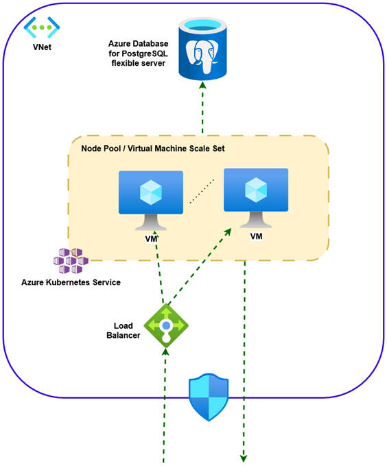
A staging environment is housed in a separate VNet. The Kubernetes cluster is usually implemented in the form of an "Azure Kubernetes Service (AKS)" cluster. Such a cluster includes a node pool consisting of a configurable number of similarly equipped Azure VMs. The number of VMs in the node pool and the configuration of these VMs is based on the requirements of the services to be provided. The VMs in the node pool are connected to a Kubernetes cluster with the help of the "Azure Kubernetes Service". In the following, the VMs in the node pool are also referred to as worker nodes. For the forwarding of requests to the services operated in the cluster, a load balancer is upstream of the cluster. The PostgreSQL database server is usually provided in the form of an "Azure Database for PostgreSQL flexible server". Inbound and outbound traffic can already be restricted at the VNet level, but is also restricted at other levels.
The services of the arveo archive system are operated on the Kubernetes cluster of each staging environment. In addition to the arveo services, however, a number of other services are operated there, which are either required by the arveo services or serve the monitoring and management of the cluster.
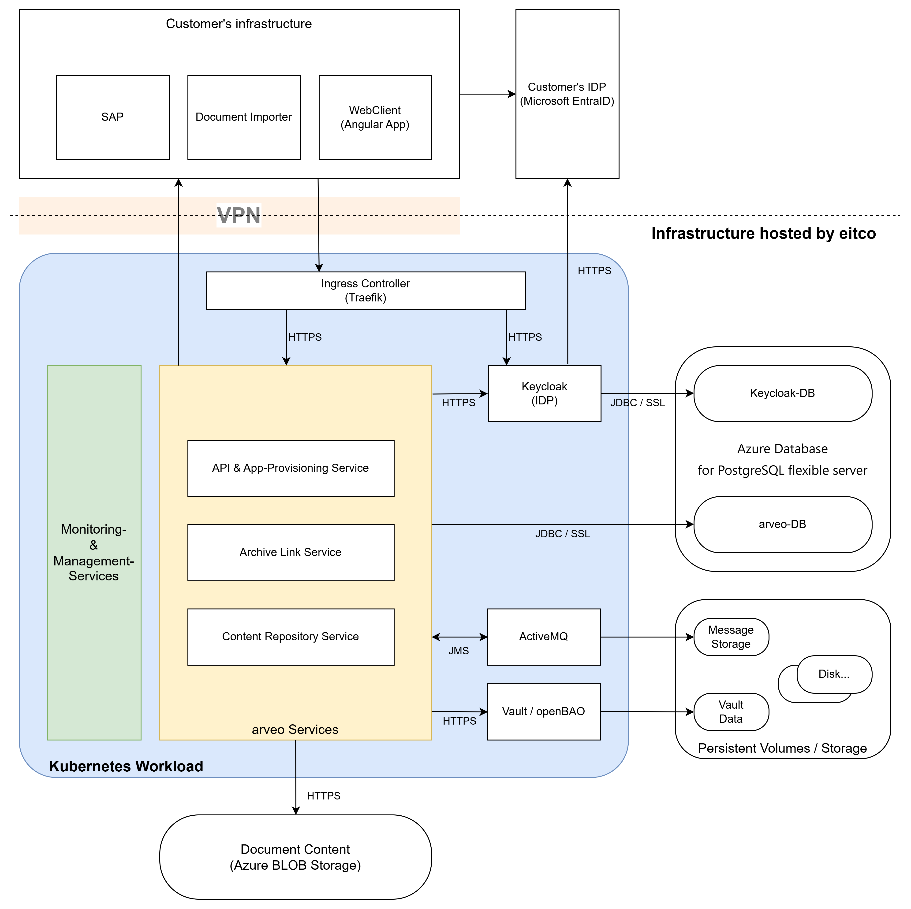
The diagram above is intended to provide a rough understanding of the services operated on the Kubernetes cluster. This entirety of these services is shown in the blue area labeled "Kubernetes Workload". The requests for the services in the cluster usually arrive via a VPN connection to the network of the customer’s infrastructure. However, the services operated in the cluster can also make requests to systems in the customer’s infrastructure via this VPN connection, if necessary.
All services relevant to operation are usually designed redundantly, i.e. there are either several active service instances or the active service instances are secured by passive service instances that become active in the event of a failure. The service instances are also distributed across the worker nodes of the Kubernetes cluster in such a way that even if a worker node fails, all services relevant to operation are still available.
Communication between the service instances within the cluster is encrypted. This is achieved through the use of a service mesh. Requests made to the services in the cluster are forwarded to the worker node via the load balancer that is upstream of the cluster. On each worker node, an instance of an ingress controller is operated, which receives the incoming requests and forwards them to the responsible services within the cluster. TLS encryption is usually terminated at the ingress controller, then the responsible service instance is determined before the requests are forwarded to the service instance and are again encrypted via the cluster’s internal service mesh.
Authentication to the arveo services is usually carried out using the OAuth 2.0 protocol. To manage access permissions and create OAuth 2.0 access tokens, Keycloak is used. The Keycloak service is also operated within the cluster and has a separate database within the PostgreSQL database system. Usually, the Keycloak service is connected to the customer’s identity provider to enable single sign-on for users. In the picture, Microsoft EntraID has been assumed as the customer’s identity provider as an example.
The core of the archive system is the Content Repository Service. It is responsible for storing the binary data and metadata of the documents. The metadata for the documents is stored in a separate database within the PostgreSQL database system, the document content itself is usually stored in form of encrypted blobs in an Azure Storage Account. For the encryption of document content and for the storage of secrets, a key vault is operated in the cluster, which stores the secrets it manages encrypted on Azure disks. Encryption and decryption is performed by the Content Repository Service. In addition, the Content Repository Service uses a Message Broker Service (ActiveMQ) to manage tasks to be processed asynchronously, which also stores its data on Azure Disks.
Depending on the requirements of the respective project, further arveo services are used, some of which are adapted to the specific project. The standard component shown in the figure is the Archive Link Service, which provides an HTTP Content Server interface with the help of which SAP systems can manage documents within the archive system. The archive data is often accessed by means of project-specific clients that are ultimately operated in the user’s browser. These clients usually do not access the Content Repository Service directly, but do so indirectly via an intermediary service, whose interface and range of functions are also project/client-specific. The project-specific service often also provides the client software components relevant for operation in the browser. The "API & App Provisioning Service" shown in the image is intended to represent such a service as an example.
The system identifier "system-id"
Each arveo system has a unique identifier that is part of each entity- and version-id. This concept makes it possible to merge two systems into one. Two systems using the same system identifier cannot be merged because of duplicate entity- and version-ids. The system identifier is a numeric value starting at 0 that must be specified in the configuration file for each installation:
ecr:
server:
system:
system-id: 0System requirements
This chapter describes the system requirements for an on premise installation.
Containerized Applications
For the installation of the product, certain requirements for the hardware, software and infrastructure to be provided must be met. In a typical cloud environment each arveo service is deployed as a containerized application and is hosted and scaled by a cloud operating system. However, a different setup can be used, depending on the customer infrastructure and the load of the system.
The following chapter describes the minimum CPU and RAM requirements of each arveo service in a production environment.
| Service | CPU | RAM |
|---|---|---|
Content Repository Service |
4 x> 2 GHz |
>= 32 GB |
Registry Service |
1x > 2 GHz |
>= 128 MB |
Config Service |
1x > 2 GHz |
>= 128 MB |
Audit Service (optional) |
1x > 2 GHz |
>= 512 MB |
SAP Archive Link Service (optional) |
1x > 2 GHz |
>= 1 GB |
Document Conversion Service (optional) |
1x > 2 GHz |
>= 2 GB |
| The number of started services for each service group and the assigned CPU and RAM depends very much on the load and the number of documents and objects in the database. You should always monitor the system and scale up or down on demand. Especially services like the Document Conversion Service can produce heavy load and require a lot of containers consuming RAM and CPU. |
| For a test or development system the requirements are lower and each service requires: < 1 CPU, 256 MB for all services. |
Typical Non-Containerized Installation
Assuming that the installation is performed as spring boot services we recommend to set up a minimum of 3 machines. The database and the Content Repository Service carry the highest load and should be deployed on separate machines. All other services and 3rd party services can run on one OS instance. Some services like Archive Link and the Document Conversion Service may consume high CPU and RAM and can make it necessary to outsource them to separate machines.
System machine 1 - Database. The PostgreSQL database is installed here.
| Component | Recommendation | Note |
|---|---|---|
CPU |
4x (> 2 GHz) |
|
RAM |
At least 16 GB |
Depending on the size of the database |
DB Storage |
Proportional to the number and the kind of the entities |
Recommendation: should be stored on separate storage |
Log files |
Depending on the volume of changes to the database |
Recommendation: Should be stored on separate storage |
OS |
Ubuntu |
The operating system recommendation is optional, hence any system satisfying the requirements of the PostgreSQL database may be installed |
System machine 2 - Content Repository Service is installed here.
| Component | Recommendation | Note |
|---|---|---|
CPU |
4x (> 2 GHz) |
|
RAM |
32 GB |
|
Storage |
Proportional to the size of the content objects |
These storages are supported: |
OS |
Ubuntu |
The tests are performed on a Debian machine, hence it is recommended to install a Debian based distribution, for example a current LTS version of Ubuntu |
| The storage is meant for storing the arveo content objects of type Document, meaning binary content. All metadata and system properties are stored in the database, see System machine 1 above. |
System machine 3 - Here all other services of arveo are installed: see Content Services, 3rd party services
| Component | Recommendation | Note |
|---|---|---|
CPU |
4x (> 2 GHz) |
|
RAM |
16 GB |
|
OS |
Ubuntu |
The operating system should be a Debian based |
| The importance of testing shouldn’t be underestimated, so there should always be a way to test specific cases without trying it out on a production system. For this reason, it is important to create a test system, which has the same specification and a similar data set as the original system. |
For the arveo services Java 21 is required. All the other recommendations listed above are non-binding, but they have proven to work well. In some cases, other recommendations can be made, according to your individual project setup as well as the requirements of the project.
OAuth2.0 authentication and authorization
All arveo services require authentication, ensuring that only another arveo service or an authenticated user can use the REST API. Authentication of a user is done by an authentication service like Keycloak using OAuth2.0 and OpenID Connect.
This chapter describes
-
how arveo's content services act as an OAuth2.0 resource server for applications using the arveo REST API
-
how the arveo services use OAuth2.0 to authenticate to other services as a technical user.
All content services use Spring Security for user authentication and authorization. The services support OAuth2.0 with OpenID Connect. An arveo service can take the role of an OAuth2.0 resource server and/or a client. Services acting as a client perform authenticated requests to other services, using the authentication service to retrieve an access token.
OAuth2.0 Flows (Grant types)
OAuth2.0 defines several different flows to get an access token. These flows are also called grant types. arveo supports the following flows for user authentication and service authentication.
-
Client Credentials Flow: used for machine-to-machine service communication.
-
Authorization Code Flow with Proof Key for Code Exchange (PKCE) technique: used by arveo Web Applications and also used by mobile apps.
-
Resource Owner Password Flow: can be used by highly-trusted apps.
-
Device Code Flow: Suitable for applications with limited input capabilities like command line apps.
In Spring Boot applications, the flow to use is configured in the client registration (see example below) in the property authorization-grant-type.
The values to set for the different flows are shown in the following table:
| Flow | authorization-grant-type |
|---|---|
Client Credentials Flow |
|
Authorization Code Flow |
|
Resource Owner Password Flow |
|
Device Code Flow |
|
|
Connecting arveo services to an authentication service using OAuth2.0
To connect the arveo services to an authentication service that supports OAuth2.0, the issuer URI of the authentication service must be configured. Required configuration properties like OAuth2.0 endpoints and public keys will be discovered automatically. If the authentication service does not support auto discovery of configuration options, the required settings can be set manually using the configuration options of Spring Security.
The following example shows a configuration for an arveo service acting as a resource-server using Keycloak.
spring:
security:
oauth2:
resourceserver:
jwt:
issuer-uri: "https://keyloak.example.com/realms/MyRealm"In case the authentication service uses opaque tokens instead of JSON web tokens, the configuration would look as shown in the next example. In this case, the URI of the token introspection endpoint of the authentication service must be configured.
spring:
security:
oauth2:
resourceserver:
opaquetoken:
introspection-uri: "https://authentication.example.com/oauth2/introspect"
client-id: "opaque-client"
client-secret: "secret"If the service will communicate with other services, it acts as a resource-server and a client. Therefore, an oauth client must be configured as well. The following example shows a client configuration using the client_credentials grant type for service to service communication:
spring:
security:
oauth2:
resourceserver:
jwt:
issuer-uri: "https://keyloak.example.com/realms/MyRealm"
client:
registration:
keycloak-client-credentials:
provider: keycloak
client-id: "myclient"
client-secret: "BatqOpzPlIksUsqeZjgxcbAgrA0PQuFM"
authorization-grant-type: "client_credentials"
provider:
keycloak:
issuer-uri: "https://keyloak.example.com/realms/MyRealm"Access tokens and OpenID Connect
The arveo services retrieve required information about the user from the access token. The authentication of the user is done by validating the signature of the JSON web token (JWT) or by introspecting the opaque token submitted in the request. Authorization- and additional information of the user like name, e-mail or custom attributes are retrieved from the access token’s claims.
Each arveo service checks the audience (aud) claim of a JWT to ensure that the user is authorized to access the service. The aud claim must contain the service’s name. The following table contains the names of the services.
| Service | Name |
|---|---|
Content Repository Service |
content-repository-service |
Audit Service |
audit-service |
Document Conversion Service |
document-conversion-service |
TUS Upload Service |
tus-upload-service |
User rights are read from the scope claim and from a custom claim called authorities. Some services require specific authorities for some features. The required authorities are listed in the service’s documentation.
It is possible to limit the access to a specific service by defining an additional mandatory user right. This can be enabled using the property security.general.role-for-secured-access.
The information read from the access token can be used in ABAC security methods to check a user’s access rights. Sometimes the information in the access tokens might not be sufficient. For example, information about a user’s group memberships might be too big to be stored in an access token. For situations like this, the OpenID Connect (OIDC) user information endpoint can be used to load additional information about a user. Information loaded using OIDC is added to the security context and is available in ABAC security methods, too. To activate this feature, the following configuration parameter must be set:
commons:
security:
oauth2:
external-user-management:
oidc:
fetch-user-info: trueBy default, the URI of the user info endpoint is determined automatically by using the configured issuer URL of the resource-server configuration. Alternatively, the issuer URI for the OIDC lookup can be configured as shown below:
commons:
security:
oauth2:
external-user-management:
oidc:
fetch-user-info: true
issuer-uri: "http://localhost:12345"The information loaded from the user info endpoint is cached to avoid frequent requests to the authentication service. By default, the cache entries are kept for 60 minutes. The configuration properties section for the group commons.security.oauth2 contains information about how to change the caching parameters.
User IDs
Services that require a unique ID of a user use the value of the subject (sub) claim of a JWT or the name attribute of the token introspection response in case opaque tokens are used. The content repository service requires a unique 64 bit integer ID for each user. There are different ways of how to assign these internal IDs to a user. By default, the content repository service assumes that the authentication service is not able to assign numerical IDs and assigns a unique numerical ID to each user when the user performs the first request to the service. The assigned IDs are stored in a database table called cmn_external_users.
The external ID used in the mapping is read from the subject claim of the token by default. If another claim contains the external ID, the name of this claim must be configured using the property commons.security.oauth2.external-user-management.database-id-resolver.external-id-claim.
|
The automatic assignment of internal IDs can be deactivated as shown below:
commons:
security:
oauth2:
external-user-management:
database:
enabled: falseThe service will then try to get a numeric ID for the user from the access token by checking for the claim configured in commons.security.oauth2.external-user-management.token-id-resolver.id-claim. By default, the claim user-id will be used. It must contain a value that can be parsed to java.lang.Long.
Additional identifiers
Neither the internal nor the external ID is suitable to be displayed in a client (for example, in a version history view). For this purpose arveo can add an external identifier to a user. These additional identifiers are stored in the same database table as the assigned internal IDs. By default, the external identifiers are read from the user’s token at the first login. For both JWTs and opaque tokens, the preferred_username claim (or principal attribute) is used. The claim or attribute to use can be configured using the properties commons.security.oauth2.additional-identifier-resolver.claim-name (for JWTs) or the property commons.security.oauth2.additional-identifier-resolver.principal-attribute-name (for opaque tokens).
A client can access the additional identifiers in the ModificationInformation returned for each entity:
AdditionalUserIdentifiers additionalUserIdentifiers = entity.getModificationInformation().getAdditionalUserIdentifiers();
String creationUserIdentifier = additionalUserIdentifiers.getCreationUserIdentifier();
String initialCreationUserIdentifier = additionalUserIdentifiers.getInitialCreationUserIdentifier();
String modificationUserIdentifier = additionalUserIdentifiers.getModificationUserIdentifier();Note that each of the returned strings might be null depending on the availability of additional identifiers.
Keycloak
Keycloak is the recommended authentication and authorization service to be used for arveo. Setup and configuration is covered by the Keycloak documentation. This section contains some best practices and recommendations.
Keycloak uses realms to separate environments. It is recommended to create a separate realm for arveo. The signature algorithm used for the tokens should be RS256, which currently is the default value in Keycloak.
Access to the services and client applications can be controlled by Keycloak clients. Each client should be used for one service or client application. For example, a separate client for service-to-service communication should be created. This must be a confidential client (requiring a client secret) that does only support the client_credentials flow. A client for application-to-service communication does not need to be confidential and should support the authorization_code and/or the resource_owner_password flow.
By default, Keycloak will add several attributes of a user to an issed token like the user’s unique ID in the sub claim. Additional required claims like aud (audience) can be set using token mappers.
Adding audience entries to access tokens
Each arveo service expects it’s application name to be present in the audience (aud) claim of an access token. If the application name is not present, the service will deny access to it’s endpoints. To add audiences, Keycloak offers several different methods. For example, you can add a dedicated token mapper to add a custom audience in the client configuration in Keycloak as shown in the Keycloak documentation.
Mapping user roles to authorities in access tokens
The actual privileges of a user are stored in the claim authorities (or scope) of the access tokens issued by Keycloak. Again, there are different ways to assign access rights to a user. A recommended way is using realm roles. Realm roles basically have a name, which must match the desired access right. For example, a user with administrative privileges in the Content Repository Service would have to be assigned to a realm role called ECR_ADMIN.
To add the user’s realm roles to the authorities claim, add a dedicated mapper to the client in Keycloak used to get access tokens. The mapper mus be of type User Realm Role. Enter the claim name authorities in the mapper’s "Token Claim Name" field. This mapper will map all realm roles assigned to the user to the value of the authorities claim.
Using Active Directory or Entra ID
Keycloak can act as an intermediate between Microsoft Active Directory (using user federation) and Azure Entra ID (using an identity provider). User data will be managed in Active Directory or Entra ID while Keycloak will issue tokens for the services and client applications.
LDAP
User federation with Active Directory can be achieved by setting up an LDAP synchronization as described in the Keycloak documentation. Single sign on using the Windows credentials is possible using Kerberos.
Mapping LDAP roles to realm roles
LDAP roles (or groups) can be mapped to Keycloak realm roles using an LDAP Role mapper as described in the Keycloak documentation. This can be used to assign access rights to specific parts or entities of the archive to a user by assigning the user to specific LDAP groups.
| When importing LDAP roles, make sure to configure a suitable filter. Otherwise, Keycloak will map all roles, which might take a long time. |
The LDAP roles that were mapped to realm roles can then be used in a token mapper of type realm role. For example, these roles can be mapped to the authorities claim of the access token and then used in ABAC functions. It is possible to map realm roles to authorities with a different name. That makes it possible to change the name of a required authority without having to change the name of the LDAP group or the realm role.
Entra ID
Azure Entra ID must be added as a generic OpenID Connect 1.0 provider as described in the Keycloak documentation. The predefined social login template for Microsoft Azure does not offer the required customization options. All that is required in Entra ID is an app registration for Keycloak with the redirect URI shown in the Keycloak admin UI. The client ID is shown in the overview page of the client registration in Entra ID. Client secrets can be managed in the certificates and secrets section of the client registration.
The client registration requires an API permission to be able to sign in and read a user’s profile. Add the following API permission to the app registration: Microsoft Graph / User.Read.
By default, Keycloak will use it’s internal UUID of an imported user for the sub claim in the issued tokens. It is recommended to use the object ID of the user in Azure instead. Add a mapper of type Attribute Importer to the OpenID Connect identity provider that maps the oid claim to a user attribute called oid.
To get access to the oid claim, the Scopes setting of the identity provider must be set to openid profile.
Then configure a token mapper to add this user attribute to a token claim called oid in the Keycloak client(s). Now Keycloak will add the user’s oid to a token claim named oid.
If you use the client_credentials flow or if you already have created users in Keycloak manually, these users and the service account user for the technical client must have the oid attribute, too. This can be done in the user settings. The user for the service account role can be found in the client properties under Service Account Roles.
|
The last step is to configure arveo to use the oid claim to get the user’s external id. Add the following setting to the configuration:
commons:
security:
oauth2:
external-user-management:
database-id-resolver:
external-id-claim: oidTroubleshooting
When requests from a client to a service or between services fail with a 401 or 403 error code. The request was denied access to the service by Spring Security. Note that the client will still receive a 401 or 403 error code when the actual problem was cause by a request further down the chain between services. It might be necessary to analyze access problems between all services that were involved in the handling of the request. For example, the client might have requested a rendition which had to be generated first. For this, the Content Repository Service will send a request to the Document Conversion Service. When this request was denied access, the client will see a 401 or 403 error code.
When a service denies access for a request, the first things to check are:
-
Is the audience of the service contained in the
audclaim of the access token? -
Are required authorities contained in the
authoritiesand/or thescopeclaim?
The Spring Security framework provides extensive logging capabilities to analyze access errors. To enable full logging, set the logger org.springframework.security to TRACE in all services involved in the request handling.
Authentication with X.509 Certificates
An X.509 certificate is a digital certificate that uses the widely accepted international X.509 public key infrastructure (PKI) standard to verify that a public key belongs to the user, computer or service identity contained within the certificate.
Securing arveo services with X.509
The X.509 authentication is based on encrypted communication between client and server using SSL or TLS. When establishing the encrypted connection, the server requests a certificate from the client and validates it. Only if this validation is successful, the connection is established. The client certificate data can then be used by the application to authenticate the user. Each client must therefore be issued its own certificate.
Since validation of the certificate is already performed by the server when the connection is established, a service cannot offer open endpoints that do not require authentication, unlike when using OAuth2, for example.
Furthermore, it should be noted that the client certificate cannot be forwarded to other services. Thus, if the service needs to send requests to other authenticated services, another certificate or an authentication mechanism such as OAuth2 must be used for authentication at the downstream services.
X.509 is therefore particularly suitable for internal services such as importers that access the arveo service directly, and for additional security in a service landscape for clients that already use another authentication mechanism.
The X.509 authentication mechanism can be activated as shown in the following example:
server:
ssl:
key-store-type: PKCS12
key-store: /path/keyStore.p12
key-store-password: changeit
trust-store-type: JKS
trust-store: /path/trustStore.jks
trust-store-password: changeit
client-auth: need
security:
x509:
enabled: trueIn the above example, a PKCS12 keystore is configured for the server certificate and a JKS trust-store for validating
the client certificates. With client-auth: need the server is instructed to request a certificate from the client
(Spring documentation).
The OAuth2 authentication mechanism must be deactivated by setting the following configuration properties:
spring:
security:
oauth2:
resourceserver:
enabled: false
It is possible to use the SSL client certificate validation as an additional security layer while still authenticating
the user using OAuth2 by setting security.x509.enabled=false and leaving OAuth2 enabled.
|
To extract the name of the user from the certificate, a regular expression is used to parse the subject of the certificate. By default, the value of the CN property is used for the username. This behavior can be influenced by defining your own regular expression. The regular expression must define exactly one group with the desired value.
| Property | Purpose | Default value |
|---|---|---|
security.x509.user-pattern |
Defines the regular expression to determine the user |
CN=(.*?)(?:,|$) |
Securing client (or service to service) communication
To be able to access the arveo services from a client application or to authenticate requests from one arveo service to another with X.509, an appropriately configured HTTP client must be used. Both the Java Client SDK and the services provide configuration properties to enable X.509 for the HTTP client:
http:
client:
ssl:
key-store: /path/service-user.p12
key-store-type: PKCS12
key-store-password: changeit
client-auth: true
protocol: TLSv1.2
security:
x509:
client:
enabled: trueHere the HTTP client is assigned a PKCS12 keystore with the client certificate and the X.509 authentication is enabled. The OAuth2 authentication mechanism used by the HTTP client by default must be disabled:
spring:
security:
oauth2:
client:
enabled: false
It is possible to use the SSL client certificate validation as an additional security layer while still authenticating the user using OAuth2 by setting security.x509.client.enabled=false and leaving the OAuth2 client enabled.
|
Creating self-signed certificates with OpenSSL
The following example shows how to use OpenSSL to generate a pair of self-signed certificates for client and service.
#Create folders to generate all files (separated for client and server)
mkdir ssl && cd ssl && mkdir client && mkdir server
## Server
# Generate server private key and self-signed certificate in one step
openssl req -x509 -newkey rsa:4096 -keyout server/serverPrivateKey.pem -out server/server.crt -days 3650 -nodes
# Create PKCS12 keystore containing private key and related self-sign certificate
openssl pkcs12 -export -out server/keyStore.p12 -inkey server/serverPrivateKey.pem -in server/server.crt
# Generate server trust store from server certificate
keytool -import -trustcacerts -alias root -file server/server.crt -keystore server/trustStore.jks
## Client
# Generate client's private key and a certificate signing request (CSR)
openssl req -new -newkey rsa:4096 -out client/request.csr -keyout client/myPrivateKey.pem -nodes
## Server
# Sign client's CSR with server private key and a related certificate
openssl x509 -req -days 360 -in client/request.csr -CA server/server.crt -CAkey server/serverPrivateKey.pem -CAcreateserial -out client/user.crt -sha256
## Client
# Verify client's certificate
openssl x509 -text -noout -in client/user.crt
# Create PKCS12 keystore containing client's private key and related self-sign certificate
openssl pkcs12 -export -out client/user.p12 -inkey client/myPrivateKey.pem -in client/user.crt -certfile server/server.crtHints for testing with self-signed certificates
Depending on the network configuration, it may be necessary to assign alternative names to the server’s certificate. With openssl you can do this e.g. with the following parameter:
-addext "subjectAltName = DNS:localhost,IP:127.0.0.1"In order for the server’s certificate to be accepted by the client, it must be made known to Java as a trusted certificate. For this you have to enter it into the default cacerts file. Alternatively, a custom cacerts file can be used by the Java VM by setting the following system property:
-Djavax.net.ssl.trustStore=path/cacertsOn-Behalf-Of Access via OAuth2 Token Exchange
This document describes how a service can call a downstream service in the name of the currently logged-in user using the OAuth2 token-exchange grant (RFC 8693), commonly referred to as the on-behalf-of (OBO) flow.It explains the mechanism in general terms and lists the settings required in Keycloak and in the participating Spring Boot services.
Motivation
A common architecture consists of a front service that exposes an API to human users and a back service (the Content Repository Service) that the front service calls to do part of the work.Both services are OAuth2 resource servers and validate the bearer token of the incoming request.
When the front service calls the back service, it has two options:
-
Technical-user call – the front service authenticates with its own service account (client-credentials grant). The back service then sees the technical user, not the original human user. Authorization decisions and audit entries in the back service lose the user identity.
-
On-behalf-of call – the front service exchanges the user’s token for a new token that still represents the human user but is accepted by the back service. The back service sees the original user, can apply the user’s permissions, and can additionally grant elevated permissions to the calling service for the duration of the call.
The OBO flow implements the second option. It replaces the older, non-standard impersonation feature with the standardized OAuth2 token exchange grant.
Participants
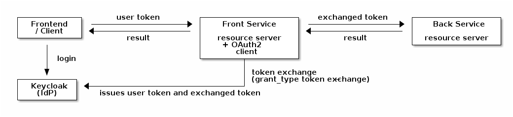
| Role | Description |
|---|---|
Identity Provider (IdP) |
Keycloak. Issues the user’s access token and performs the token exchange. Must support the Standard Token Exchange feature (Keycloak 26.2 or newer). |
Frontend / user-facing client |
The OAuth2 client through which the human user logs in (for example an OIDC login frontend or a UI client). The token it obtains is the one presented to the front service. |
Front service |
The service the user calls directly. It is both a resource server (it validates the incoming user token) and an OAuth2 client (it performs the token exchange and calls the back service). This is the service that acts on behalf of the user. |
Back service |
The downstream service that is called by the front service. It is a resource server and validates the exchanged token. |
The flow
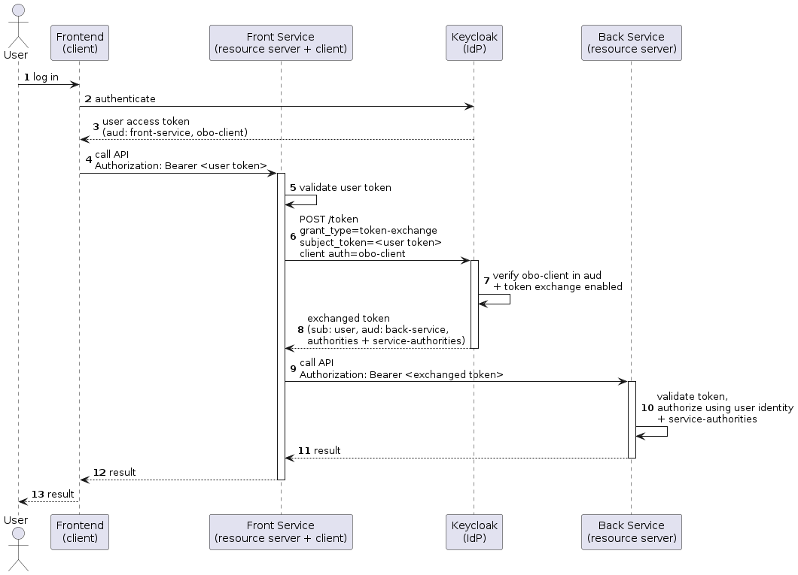
-
The user logs in through the frontend client and receives an access token from Keycloak. This token is audience-scoped for the front service and for the OBO client (see The user-facing client).
-
The user calls the front service, passing the access token in the
Authorizationheader. -
The front service validates the token as a resource server.
-
The front service sends a token-exchange request to Keycloak’s token endpoint. It authenticates with the credentials of the OBO client and passes the user’s token as the
subject_token. -
Keycloak verifies that the OBO client is allowed to exchange the token (token exchange enabled on the client, and the OBO client present in the
audof the subject token) and issues a new access token. The new token keeps the user as its subject (sub) but is audience-scoped for the back service and carries the user’s authorities plus any service-granted authorities. -
The front service calls the back service with the exchanged token.
-
The back service validates the exchanged token, authorizes the request using the user identity and the additional
service-authorities, performs the action, and returns the result, which is propagated back to the user.
|
The token-exchange request uses these parameters (sent to plus the OBO client’s credentials for client authentication. The Spring library performs this request automatically; the parameters are listed here for reference and for troubleshooting against the Keycloak server logs. |
Keycloak configuration
The OBO flow relies on Keycloak’s Standard Token Exchange (token exchange V2), which is available from Keycloak 26.2. It does not require the legacy fine-grained admin permissions of the older token-exchange implementation.
Two clients must be configured: the OBO client used by the front service to perform the exchange, and the user-facing client whose tokens are exchanged.
The OBO client
This is the confidential client whose credentials the front service uses to perform the exchange.
| Setting | Value / requirement |
|---|---|
Client authentication |
|
Standard Token Exchange |
Enabled. In the client’s Capability config turn on Standard token exchange. |
Service accounts / Standard flow / Direct access grants |
Not required for the exchange itself and can be disabled. |
Audience mapper for the back service |
A protocol mapper of type Audience that adds the back service’s resource id to the |
Authorities mapper |
A protocol mapper that writes the user’s realm roles into the |
Service-authorities mapper (optional) |
A Hardcoded claim mapper that writes additional, service-granted authorities into the |
The user-facing client
The client through which the user logs in must produce a token that is accepted by the front service and may be exchanged by the OBO client.
| Setting | Value / requirement |
|---|---|
Audience of the front service |
An Audience mapper that adds the front service’s resource id to the |
Audience of the OBO client |
An Audience mapper that adds the OBO client to the |
Authorities mapper |
A User Realm Role mapper writing the user’s realm roles into the |
Realm roles and authorities
-
The user’s realm roles model the permissions the user holds personally. They flow through both tokens via the
authoritiesmapper. -
The service-granted authorities (the
service-authoritiesclaim on the OBO client) model permissions the calling service is allowed to use on behalf of the user. Hard-coding them on the OBO client means they are granted for every OBO call, scoped to the back service via the audience mapper. As an alternative to a hardcoded claim, the same authorities can be modeled as realm roles assigned to the OBO client and mapped into theauthoritiesclaim together with the user’s roles.
Service configuration
Both services use the EITCO Spring Security OAuth2 starters
(de.eitco.commons:cmn-spring-security5-oauth2-*). See the library README for the full reference; the settings relevant
to the OBO flow are summarized here.
Front service (resource server + client)
Use the cmn-spring-security5-oauth2-client-server starter, which makes the application both a resource server and an
OAuth2 client.
-
Configure a client registration for the OBO client using the token-exchange grant type:
spring: security: oauth2: resourceserver: jwt: issuer-uri: "https://<keycloak>/realms/<realm>" client: registration: keycloak-token-exchange: provider: keycloak client-id: "obo-client" client-secret: "<obo-client-secret>" authorization-grant-type: "urn:ietf:params:oauth:grant-type:token-exchange" provider: keycloak: issuer-uri: "https://<keycloak>/realms/<realm>" -
Decide when the exchange is performed:
-
Set
commons.security.oauth2.client.auto-impersonate: trueto exchange the user’s token automatically for every downstream call made while a human user is in the security context. -
Or leave auto-impersonation off and wrap the relevant calls in
UserImpersonation.impersonateCurrentUser()(try-with-resources) to opt in per code block.commons: security: oauth2: client: auto-impersonate: true
-
The library only exchanges the token when a human user is in the security context. For a technical user (service account) it falls back to the normal client registration, so the same code path works for both call types.
Back service (resource server)
Use the cmn-spring-security5-oauth2-server starter and point it at the same realm:
spring:
security:
oauth2:
resourceserver:
jwt:
issuer-uri: "https://<keycloak>/realms/<realm>"The back service validates the exchanged token. Two points matter for the OBO flow:
-
Audience enforcement – with
commons.security.oauth2.enforce-audience=true(the default) the back service only accepts tokens whoseaudcontains its resource id (commons.security.oauth2.resource-id, falling back tospring.application.name). This is why the OBO client needs the audience mapper for the back service. -
Authorities – the granted authorities of the resulting authentication are built from the token’s
authoritiesclaim, thescopeclaim, external user management, and theservice-authoritiesclaim. The service-granted authorities therefore become effective in the back service’s authorization checks.
Troubleshooting
| Symptom | Likely cause and fix |
|---|---|
Token exchange returns |
The OBO client is not contained in the |
Token exchange is rejected as not allowed |
Standard token exchange is not enabled on the OBO client, or the OBO client is not confidential. Enable the capability and configure client authentication. |
Back service responds |
The exchanged token does not contain the back service’s resource id in |
Back service sees a technical user instead of the human user |
No human user was in the front service’s security context when the downstream call was made, so no exchange happened.
Ensure the call runs under the user’s authentication and that auto-impersonation is enabled or
|
Operation forbidden although the user is authenticated |
The required |
Configure Database access
arveo uses the default spring datasource configuration for the JDBC datasource. The datasource must be configured as shown in the following example:
spring:
datasource:
url: "jdbc:postgresql://localhost:5432/postgres?currentSchema=arveo&ApplicationName=${spring.application.name}"
driver-class-name: org.postgresql.Driver
username: username
password: passwordSpecifying the ApplicationName property is optional but can be helpful when analyzing database issues. The name of the
Spring application will then be visible in Postgres query analytics.
| The username and password should not be stored in the configuration files. Instead, they should be stored in Vault. |
Advanced configuration properties can be found in the
Spring boot documentation.
To configure the connection pool, use the spring.datasource.hikari properties.
Timeouts
To prevent overload of the database, timeouts for statements and transactions can be configured. By default, the system uses a timeout for statements of 15 minutes and a timeout for schema modification statements of 30 minutes.
jdbc:
data-source:
statement-timeout: 10s
long-running-operations:
statement-timeout: 60sThe example above sets a timeout of 10 seconds for generic statements (queries, inserts…) and 60 seconds for schema modification statements. The configuration properties can be found in the configuration properties overview.
Configure Storage Locations
Content and type definitions
Only Documents can contain content elements. A Document in the repository can contain several content elements. For example, a document could contain a content element with the original content (like a TIFF image or a Word document) and a PDF rendition. Each content element has a contentName and some more properties like the media type. The contentName is a label that uniquely identifies a single content element contained in a Document. For example, a Document might contain two content elements that are identified by the contentNames 'content' and 'rendition'.
The contentNames are not only relevant for uniquely identifying a content element contained in a document, but serve as reference for further customization of the repository. The repository does accept configuration options that are directly related to contentNames and the Document type definitions define restrictions regarding the allowed contentNames.
Type definitions define which contentNames can be contained in the entities stored in the definition.
Each content element is stored in a storage profile, which defines the place where the actual content will
be stored. The contentType parameter can be used to define what kind of content
a content element can contain. When the media type is set to application/octet-stream, any kind of content can be used.
The name of a content element must start with a letter and can consist only of letters (upper- and lower-case),
numbers and the _ character. More formally, the name must match the regular expression [a-zA-Z][a-zA-Z0-9_]*.
|
Types of content elements
It is specified in the type definition, which content elements this type definition may have.
The content elements of the entities are stored in a JSON field in the database which contains the storage-ID and additional metadata like size, media type and a hash. The actual content data is not stored in the JSON field.
The following example is an object of type Document, for which two content elements are defined: "content" and "LARGE_CONTENT".
@Type(ObjectType.DOCUMENT)
@ContentElement(name = "content")
@ContentElement(name = "LARGE_CONTENT")
public interface TwoContentsDocument {
@SystemProperty(SystemPropertyName.ID)
DocumentId getId();
@SystemProperty(SystemPropertyName.CONTENT)
Map<String, ContentInformation> getContentInformation();
String getName();
void setName(String name);
@SystemProperty(SystemPropertyName.MODIFICATION_INFO)
ModificationInformation getModificationInformation();
}Using the contentType attribute of the @ContentElement annotation one can define the required content type for a
content element. The content type application/octet-stream is used as a wildcard type for any type of content.
For example, if the value of the contentType attribute is set to application/pdf, only PDF files can be stored in the
content element.
It is possible to define the content type of a new content element when it is uploaded. The server will trust this information, so the client is responsible to send the correct content type. If the client does not define the content type, the server will automatically detect the content type of the uploaded binary data.
| Setting the size of the uploaded content is not required on the client-side, because the server will always determine the actual content size when the content is stored. |
The default content element
If a type definition of type DOCUMENT does not contain any @ContentElement annotations, the server will automatically
assign a content element with the name content to it. This content element accepts any kind of content type.
The ContentElement annotation
The following Table contains an Overview of the available attributes of the @ContentElement annotation.
| Attribute | Default value | Explanation |
|---|---|---|
name |
The name of the content element. This attribute is mandatory. |
|
profile |
The name of the storage profile used to store the content element. This attribute is optional. |
|
contentType |
application/octet-stream |
The type of content supported by the content element. |
fulltextExtraction |
false |
If true, the fulltext content of the content element will be extracted and stored in the database. |
Storage profiles
A StorageProfile defines on which storage the content elements are saved. Access to the storage backends (like filesystem or S3) is handled by storage plugins.
A StoragePlugin is defined in the StorageProfile, which is used to access the connected storage. The same plugin can be used in several StorageProfiles. Each StorageProfile can have a different set of parameters (access data, URls, …) for the plugin.
ecr:
server:
storage:
profiles:
fileSystemProfile: (1)
defaultProfile: true (4)
pluginClassName: de.eitco.ecr.storage.plugin.filesystem.FileSystemPlugin (2)
pluginSettings: (3)
storagePath: /storage
s3Profile: (1)
pluginClassName: de.eitco.ecr.storage.plugin.s3.S3Plugin (2)
pluginSettings: (3)
pathStyleAccessEnabled: true
serviceEndpoint: "http://localhost:49999"
region: us-west-2
accessKey: myaccesskey
secretAccessKey: mysecretaccesskey
bucket: testbucket| 1 | profile name |
| 2 | class name of the plugin |
| 3 | plugin specific configuration data like the path for the filesystem plugin or the bucket for the S3 plugin |
| 4 | defines this profile as the default profile (see Mapping content elements to storage profiles) |
Each profile is identified by name and defines the storage plugin to use. Plugin-specific settings can be configured
in the pluginSettings map. So the plugin class name determines the storage technology and the plugin settings.
| Do not rename a storage profile after data was stored in it. The name of the profile is part of the identifier of a content element. Renaming the profile would make it impossible to load the data stored in it. |
If a content element has been saved using the named StoragePlugin, the plugin defined in the profile will return a contentID, with which the stored data can be retrieved later. This id, which is usually of type String, is saved with the document. It is a task of the storage plugin to implement, which contents this id has. Usually it is a UUID, but it may also be a text string.
A plugin is assigned to each profile based on the fully qualified class name. Any name-value pairs can be specified for the configuration of the plug-in. The profiles are identified by their name.
Using aliases for storage profiles
It is possible to assign aliases to storage profile names. This might be required when storage profiles are mapped
to content elements by configuration as described below. Assigning aliases can be done in the configuration by defining
alias: profileName entries as shown below:
ecr:
server:
storage:
profile-aliases:
alias1: encryptedProfile
another_alias: encryptedProfileIt is possible to define more than one alias for a storage profile.
Aliases are resolved before a content element is saved. The resulting ContentId will contain the resolved profile, not
the alias name.
| The bucket selector plugin does not support aliases when selection rules are evaluated. |
Mapping content elements to storage profiles
There are two ways to map a specific content element to a storage profile.
Mapping by code
To define the mapping of the content elements to storage profiles in the application code, the storage profile name
can be set in the @ContentElement annotation using the profile attribute.
@Type(ObjectType.DOCUMENT)
@ContentElement(name = "content", profile = "fileSystemProfile")
public interface MyDocument {
}The example above shows a document type with a single named content element that will be stored in a storage profile called fileSystemProfile.
Mapping by configuration
If the mapping should be controlled by the configuration and not be defined in the code, storage profiles with auto-
matchable names must be used. The matching is based on the name of the type definition (in snake-case) and the name
of the content element separated by -.
The following type definition is used as an example in the following explanations. It uses one content element:
@Type(ObjectType.DOCUMENT)
@ContentElement(name = "rendition")
public interface MyDocument {
}A matching profile for the content element named rendition of the interface MyDocument would be selected using the following steps:
-
Check if there is a profile called
my_document-rendition. If so, use it. -
If not, check if there is a profile called
my_document. If so, use it. -
If not, check if there is a default storage profile. If so, use it.
-
If none of the steps above succeeded, an exception is thrown.
Examples
The following example shows the simplest possible configuration. The type definition does not contain any content element.
It implicitly uses the default content element named content. The content element will be stored in a storage profile
called my_document, or, if no such profile exists, in the default storage profile.
@Type(ContentType.DOCUMENT)
public interface MyDocument {
}The next example shows the same type definition, but with an annotation that defines which storage profile to use.
@Type(ContentType.DOCUMENT)
@ContentElement(name = ContentElement.CONTENT, profile="fileSystemProfile")
public interface MyDocument {
}The next example shows a type definition that contains two content elements. The "rendition" content element will support only PDF documents. The PDFs contained in the rendition content element will be stored in an S3 storage. The content in the other element will either be stored in a profile called my_document-content, in a profile called my_document or, if neither of those profiles exists, in the default profile.
@Type(ContentType.DOCUMENT)
@ContentElement(name="content")
@ContentElement(name="rendition", contentType="application/pdf", storageProfile="s3Profile")
public interface MyDocument {
}Chunking
Large content elements can be stored in several chunks to improve download performance and to avoid timeouts in storage plugins using remote storage systems like S3. It is recommended to use chunking for large content elements and when clients are expected to perform partial downloads. Clients use partial downloads or ranged requests to resume failed downloads or in scenarios like video streaming.
| Without chunking, encrypted content elements always have to be read from the beginning. The server will skip over the required number of bytes to deliver the requested content range to the client. With chunking, only a part of the first chunk will have to be skipped. Make sure chunking is used for large encrypted content elements to deliver optimal performance. |
Client requested chunking
A client can instruct the server to store a content element in chunks by defining a chunk size in the upload-request as shown below:
ContentUpload contentUpload = new ContentUpload(inputStream);
long chunkSize = DataSize.ofMegabytes(1).toBytes();
contentUpload.setChunkSize(chunkSize);A minimum allowed chunk size can be configured using the parameter ecr.server.storage.minimum-client-chunkSize to ensure
that clients do not flood a storage location with a huge number of small chunks. The default value is 1MB.
Configuring a default chunk size
A default chunk size can be configured for each storage profile. This setting will be overridden by the chunk size
requested from the client. By default, no default chunk size is configured. To define a default chunk size for a
storage profile, the following parameter can be used: ecr.server.storage.profiles.<profile-name>.chunkSize: 100KB
| When encryption is enabled, the actual size of the chunks will be slightly larger. Because each chunk will be encrypted independently, it will contain a crypto-header and possibly a validation tag and some padding bytes depending on the encryption algorithm. |
Plugin configuration
The service uses a plug-in interface for connection to the specific storage provider. The following plugins are currently available:
Global Settings
The following settings are supported by all storage plugins that extend AbstractChunkingStoragePlugin, which includes
the built-in File system, AWS, NetAPP or EMC Elastic Cloud Storage and Azure blob storage plugins. They control how many chunks may be
written to the storage backend concurrently. Because there is one plugin instance per storage profile, these settings
bound the number of in-flight uploads for the whole profile, not just for a single upload request. They can be configured
in the pluginSettings map of a storage profile like any other plugin-specific setting.
Limiting the write concurrency reduces the heap memory consumed during large batch uploads, because fewer chunks are held in memory at the same time.
| Parameter | Meaning | Default value |
|---|---|---|
maxWriteConcurrency |
The maximum number of chunks that may be written to the storage backend concurrently for this storage profile. A value
of |
32 |
writeAcquireWarnMillis |
The time in milliseconds a thread waits for a free write slot before a warning is logged. The warning indicates that
the configured |
250 |
File system
Class name: de.eitco.ecr.storage.plugin.filesystem.FileSystemPlugin.
The FileSystemPlugin offers storage of the data as files in the file system.
| parameter | meaning |
|---|---|
storagePath |
Path to the directory that is used to store the files |
AWS, NetAPP or EMC Elastic Cloud Storage
Class name: de.eitco.ecr.storage.plugin.s3.S3Plugin.
The S3 plug-in stores data in an Amazon S3 compatible storage.
| If arveo has no permissions to create buckets, then the administrator has to create the buckets manually. |
| Parameter | Meaning | Default value |
|---|---|---|
pathStyleAccessEnabled |
Configures the client to use path-style access for all requests. Amazon S3 supports virtual-hosted-style and path-style access in all regions. The path-style syntax, however, requires that you use the region-specific endpoint when attempting to access a bucket |
false |
serviceEndpoint |
The URL to the S3 endpoint to be used by the plugin |
|
region |
The region for access to AWS |
|
accessKey |
AWS Access Key |
|
secretAccessKey |
AWS Secret Access Key |
|
bucket |
The name of the S3 bucket to be created by the plugin. The name can only contain lowercase letters. |
|
signer |
Sets the name of the signature algorithm to use for signing requests made by this client. If not set, the default configuration of the Amazon S3 SDK will be used. |
|
proxyhost |
The optional proxy host used by the client when connecting to the S3 storage. |
|
proxyprotocol |
The protocol (HTTP or HTTPS) used to connect to the proxy. |
|
proxyport |
The port used by the client to connect to the proxy. |
|
streambuffersize |
Size of the send- and receive-buffers in bytes. |
32768 |
uploadpresignedurl |
If set to true, the client will use pre-signed URL requests to communicate with the S3 storage. |
false |
acceleratemode |
Configures the client to use S3 accelerate endpoint for all requests. |
false |
maxconnection |
The maximum number of allowed open HTTP connections. |
-1 (no limit) |
maxErrorRetries |
The maximum number of retries for failed requests. |
-1 (no retries) |
baseDelay |
The base delay in milliseconds for the retry policy. |
-1 (no delay) |
maxBackoffTime |
The maximum backoff time in milliseconds for the retry policy. |
-1 (no maximum backoff time) |
backoffStrategy |
The backoff strategy used by the retry policy. |
|
retentionEnabled |
Enables the use of S3 object locks for object retention. |
false |
retentionMode |
Specifies the protection level of retention object locks. Can be |
|
Configuring the retry policy of the S3 plugin
The Amazon S3 SDK used to connect to a S3 compatible storage supports different ways to retry failed requests. By default,
a retry policy using jitter and 3 retries is used. To configure a custom retry policy, all three parameters baseDelay,
maxBackoffTime and backoffStrategy have to be configured. The backoffStrategy parameter must be set to one of the following values:
-
FULL_JITTER -
EQUAL_JITTER -
EXPONENTIAL
The Amazon documentation contains an explanation of the different strategies.
Retention
The S3 plugin supports the usage of S3 object locks to set a retention time and litigation hold status on content
elements stored in the S3 compatible storage. To enable the feature, set the parameter retentionEnabled to true.
| When the retention support is enabled, the bucket used by the storage profile must be created manually. The S3 Object Locks option must be enabled for the bucket. |
The S3 plugin uses the governance retention mode by default, which means, that retention protected objects
can be deleted by or overwritten by any user of the AWS account with the required privileges. When the compliance
retention mode is used, no user (not even the root administrator of the S3 account) is able to delete or overwrite
retention protected objects. To configure this behavior, set the property retentionMode to GOVERNANCE or
COMPLIANCE. More information about object locks can be found in the
AWS documentation.
When the COMPLIANCE retention mode is used, it is impossible to delete objects from the S3 storage account before
the end of the retention interval is reached.
|
Azure blob storage
Class name: de.eitco.ecr.storage.plugin.azureblob.AzureBlobStoragePlugin
The Azure blob storage plugin can be used to connect to a storage account in Microsoft Azure.
| Parameter | Meaning | Default value |
|---|---|---|
connectionString |
The connection string used to connect to the storage account. The access string can be obtained from the azure portal. |
|
containerName |
The name of the container in the storage account that will contain the data of the storage profile. |
|
timeoutMillis |
The timeout in milliseconds for requests to Azure. |
5000 |
retentionSupport |
Enables usage of the immutability policy feature of Azure. |
false |
policyMode |
Sets the protection level of the immutability policies. Can be |
|
Additional parameters contained in the plugin configuration will be passed on to the Configuration used for the
Azure SDK.
Retention
The Azure blob storage plugin supports the immutability policy feature of Azure blob storage. Using this feature enables an additional security level for retention protected content elements. If a content element is retention protected or in a litigation hold, it will not be possible to delete it using the Azure management interface or the Azure SDK.
To enable the retention support, the parameter retentionSupport must be set to true.
| When the retention support is enabled, the container used by the storage profile must be created manually in Azure. The setting version-level immutability support must be enabled when the container is created. To be able to enable the version-level immutability support, the storage account must support versioning for blobs. More information can be found in the Azure documentation. |
The plugin creates unlocked immutability policies by default. Unlocked policies can be altered by Azure users with the
required privileges. Locked immutability policies can neither be deleted nor can the expiry time be shortened.
Prolonging the expiry time (and by this, the retention period), is still possible. Note that even the administrator
of the storage account is not able to delete objects with a locked immutability policy. To configure the policy mode,
set the parameter policyMode to LOCKED or UNLOCKED.
When the policyMode is set to LOCKED, it is not possible to delete retention protected objects from the storage
account before the end of the retention interval is reached.
|
BucketOrganizer
Class name: de.eitco.ecr.server.storage.plugins.BucketOrganizerPlugin.
The BucketOrganizer is not specific for a specific storage technology or storage interface but delegates storage requests to other storage plugins.The selection of the target plugin depends on the retention information of the document that contains the content element to be stored. The selection criteria that are used to select the target plugin can be configured in terms of a list of bucket selection rules.
The relevant retention information of the document is defined by the values of the system fields RETENTION_DATE and LITIGATION_HOLD. This value pair is matched against the bucket selection rules.The matching process starts with the first rule and continues to the next rule if the rule does not match the value pair.The matching process ends at the first rule that matches the value pair.The storage profile named in this rule will be used to store the content. Each bucket selection rule consists of three parts that are separated by the pipe (|) symbol.
1. retention date match expression
The retention date match expression is usually a time interval that begins at some calendar day and extends to some
later calendar day. The notation for the interval is inspired by ISO 8601 and may read like this
2021-01-01+01:00—2022-01-01+01:00. The general format is begin_date—end_date, that is both dates are separated
by "--". A retention date matches the expression if begin date ⇐ retention date < end date.
The begin and end dates are specified as YYYY-MM-DD followed by a time zone offset as +hh:mm or -hh:mm
It is possible to define open intervals by specifying one of the boundary dates as UNBOUNDED.
Retention dates may be NULL if the retention date has not (yet) been set on the document. A NULL retention date will
not match any interval specified in a match rule. For this reason the retention date match expression may be specified
to be NULL to match NULL retention dates.
A retention date match expression can also be specified to be * if the rule should always match.
2. litigation hold match expression
The litigation hold match expression can be one of these literals: true, false, *.
While the literal * will always match, the other literals will match the denoted value only.
3. target storage profile name
The name of the target storage profile to be used if both expressions match the corresponding system field values
Configuration parameters
| Parameter | Meaning |
|---|---|
bucketSelectionRules |
A list of bucket selection rules |
storage:
profiles:
bucketProfile: (1)
pluginClassName: de.eitco.ecr.server.storage.plugins.BucketOrganizerPlugin (2)
pluginSettings:
bucketSelectionRules: (3)
- "*|true|fsProfileLitigationHold" (4) (5)
- "NULL|false|fsProfileForever" (4)
- "2021-01-01+01:00--2022-01-01+01:00|false|fsProfile2021" (4)
- "2022-01-01+01:00--2023-01-01+01:00|false|fsProfile2022" (4)
- "2023-01-01+01:00--2024-01-01+01:00|false|fsProfile2023" (4)
- "2024-01-01+01:00--2025-01-01+01:00|false|fsProfile2024" (4)
- "2025-01-01+01:00--2026-01-01+01:00|false|fsProfile2025" (4)
- "2026-01-01+01:00--2027-01-01+01:00|false|fsProfile2026" (4)
- "2027-01-01+01:00--2028-01-01+01:00|false|fsProfile2027" (4)
- "2028-01-01+01:00--2029-01-01+01:00|false|fsProfile2028" (4)
- "2029-01-01+01:00--2030-01-01+01:00|false|fsProfile2029" (4)
- "2030-01-01+01:00--2031-01-01+01:00|false|fsProfile2030" (4)
- "*|*|fsProfileAnotherEra" (4)
fsProfileLitigationHold: (5)
pluginClassName: de.eitco.ecr.storage.plugin.filesystem.FileSystemPlugin
pluginSettings:
storagePath: ${project.build.directory}/storage/litigationHold
fsProfileForever:
pluginClassName: de.eitco.ecr.storage.plugin.filesystem.FileSystemPlugin
pluginSettings:
storagePath: ${project.build.directory}/storage/forever
fsProfile2021:
pluginClassName: de.eitco.ecr.storage.plugin.filesystem.FileSystemPlugin
pluginSettings:
storagePath: ${project.build.directory}/storage/2021
#...
fsProfile2030:
pluginClassName: de.eitco.ecr.storage.plugin.filesystem.FileSystemPlugin
pluginSettings:
storagePath: ${project.build.directory}/storage/2030
fsProfileAnotherEra:
pluginClassName: de.eitco.ecr.storage.plugin.filesystem.FileSystemPlugin
pluginSettings:
storagePath: ${project.build.directory}/storage/anotherEra| 1 | profile name; |
| 2 | type of plugin, so its class name; |
| 3 | rules list. |
| 4 | a bucket selection rule, consisting of retention date match expression, litigation hold match expression and target storage profile name. |
| 5 | the referenced profile name. |
Storage profile templates
To reduce the number of required entries in the list of bucket selection rules, storage profile templates can be used.
A storage profile template consists of a name template with placeholders, a specific time range and the regular
configuration parameters like the class name of the storage profile.The <year> placeholder can be used as a variable
for the current year.
Storage profile templates are configured in a separate section as shown below:
ecr:
server:
storage:
profiles:
bucketProfile:
pluginClassName: de.eitco.ecr.server.storage.plugins.BucketOrganizerPlugin
pluginSettings:
bucketSelectionRules:
- "*|true|fsProfileLitigationHold"
- "NULL|false|fsProfileForever"
- "<year>-01-01+01:00|false|fsProfile<year>|2021--2030" (1)
profile-templates:
- nameTemplate: "fsProfile<year>" (2)
genericTimeRange: "2021--2029" (3)
pluginClassName: de.eitco.ecr.storage.plugin.filesystem.FileSystemPlugin
pluginSettings:
storagePath: ${storage.base.directory}/storage/<year> (4)| 1 | A bucket selection rule using a profile template with the year placeholder for the years between 2021 and 2030. |
| 2 | A name template that will create profiles for the years 2021 to 2029. |
| 3 | Defines the time range used to create profiles based on the template |
| 4 | The year placeholder can be used in the configuration properties of the plugin. |
Writing a custom storage plugin
As mentioned above, arveo uses a plugin interface for the connection to the storage backends. This section describes how to write a new storage plugin.
All classes and interfaces required to implement a custom plugin are contained in the dependency
<dependency>
<groupId>de.eitco.ecr</groupId>
<artifactId>ecr-server</artifactId>
<version>28.1.0-SNAPSHOT</version>
<scope>provided</scope>
</dependency>A storage plugin must implement the interface de.eitco.ecr.server.storage.StoragePlugin. Custom plugins should extend
the class de.eitco.ecr.server.storage.AbstractChunkingStoragePlugin. This abstract implementation provides support
for chunking and encryption. Plugins that do not use a retention-aware storage-backend should extend the class
AbstractSimplifiedStoragePlugin.
In addition to the interface to implement, there are some guidelines to respect when writing a custom storage plugin:
-
The plugin must provide a default no argument constructor because it will be instantiated using reflection.
-
The plugin can use dependency injection, but because of the need for a default constructor, only field injection using
@Autowiredis possible. -
There will be one instance of the plugin for each storage profile configured to use the plugin, so the plugin must be thread-safe.
Configuration settings
The StoragePlugin interface contains a method called configure, which will be called once for each plugin instance.
It is used to process the generic parameter values that might be required to configure the plugin. For example, the
parameters might contain a path to a file system directory or credentials for a remote storage system. Because storage
plugins can be configured in profile templates, it might be necessary to replace
placeholders configured in the template. The class AbstractStoragePlugin already contains helper methods like
getMandatoryProperty that take care of these replacements. The configure method is expected to return the actual
configuration with all replacements that is used by this plugin instance. The returned configuration settings are used
by the health checks.
Using the custom storage plugin
To use the custom plugin, it is enough to add its classes to the classpath of the repository service. The plugin can then
be used for a storage profile by specifying it’s qualified class name in the pluginClassName parameter. To add the
plugin’s class to the classpath, use the -Dloader.path=<path> argument to start the service. The argument must point
to a directory containing the required jar files.
Renditions
Renditions of content elements, for example a PDF rendition of an image, can be created automatically. To create a
rendition, the @Rendition annotation can be used as shown in the following example.
@Type(ObjectType.DOCUMENT)
@ContentElement(name = "original") (1)
@Rendition(name = "rendition", sourceElement = "original", contentType = MediaType.APPLICATION_PDF_VALUE) (2)
@OverwriteAllowed
public interface DocumentWithRendition {
String getName();
void setName(String name);
@ContentType(contentElement = "original") (3)
String getContentType();
void setContentType(String contentType);
@SystemProperty(SystemPropertyName.RENDITION_STATUS) (4)
Map<String, RenditionStatusInformation> getRenditionStatus();
}| 1 | The content element containing the original content |
| 2 | The rendition content element to create automatically |
| 3 | The content type of the original content |
| 4 | A getter for the current status of the renditions of the document |
The above example shows a document type with one content element and one rendition.
The current status of the renditions can be retrieved as shown in the example above. The returned map contains a
RenditionStatusInformation instance for each rendition content element of the document. The status information contains
a status value and the number of times the system tried to create the rendition, if available. The status of a rendition can
be one of the following values:
| parameter | meaning |
|---|---|
AVAILABLE |
The rendition was created successfully (or was uploaded by a client) and is available. |
PENDING |
The rendition is not yet available but is expected to be available in the future. |
FAILED |
Creating the rendition has failed permanently. |
EMPTY |
The rendition is not available because the source content element does not exist. |
RESET |
Creating the rendition has failed and the status was manually reset (see error handling). |
The @Rendition annotation accepts the following parameters:
| parameter | meaning |
|---|---|
name |
The name of the rendition content element |
sourceElement |
The name of the content element to create a rendition of |
contentType |
The type of the rendition to create (a mime type string like "application/pdf") |
profile |
The name of the profile used to store the rendition content element (optional) |
Renditions are created asynchronously. When a document is created or updated, a message will be posted to a queue in ActiveMQ. The messages are processed by event listeners in the repository service. Depending on the current load it might take some time until the rendition is available.
| The system will not try to create a rendition when the rendition content element is written by the client. |
The actual rendering will be done by the Document Conversion Service. Which conversions are supported, depends on the plugins available on the classpath of the service.
Error handling
When the creation of a rendition fails, the system will re-try to create the rendition. The number of re-tries can be configured, the default is three (see configuration properties). When all retries have failed, the rendition message will be added to a dead letter queue and the status field of the rendition will be set to -1 (FAILED). For this to work, the message queue in ActiveMQ must be configured to use an individual dead letter queue as described in the ActiveMQ documentation.
<policyEntry queue="ecr-queue-create-renditions">
<deadLetterStrategy>
<individualDeadLetterStrategy queuePrefix="DLQ." useQueueForQueueMessages="true"/>
</deadLetterStrategy>
</policyEntry>Reset status of failed renditions
The status of failed renditions can be set to RESET (-2) either by using the API method
de.eitco.ecr.sdk.document.TypedDocumentServiceClient.resetFailedRenditionStatus, by using the
reset-rendition command of the ecr-shell, or simply by setting the value in the
database directly. A system job polls the database and will enqueue new rendition messages in ActiveMQ to re-try to
create the renditions. The interval in which the job polls the database can be configured using the parameter
retry-renditions.cron-expression (see configuration properties).
The system job that retries the creation of failed renditions is described in Retry renditions job.
Dynamically skipping renditions
There are cases where the decision, whether to create a rendition for a content element, can only be made at run-time. For cases like this a type can provide a method implementing that decision. This method is marked by the annotation @RenditionCreationCondition. Only one method of a type may have this annotation. The method
-
must have the return type
boolean,java.lang.Booleanorkotlin.Boolean-
In case it is
java.lang.Booleanit may not return null
-
-
must not be abstract
-
should the defining class be an interface this means that it is either a static or a default-method
-
note that - should the type be defined in kotlin and the method not be static - this means it has to be compiled with
-Xjvm-default=allor-Xjvm-default=all-compatibility
-
-
-
can have up to two parameters of type
RenditionInfo-
The first representing the source to render
-
And the second representing the target to render to
-
if only one parameter is given it is assumed to be the source
-
If such a method exists, arveo evaluates it before posting rendition messages. If the method returns false the message is not posted. Such a method may be present on types that are not Documents, but will not have any effect. This might be helpful in scenarios where there are complex inheritance structures.
Example 1
Let’s assume a scenario where we have a document with a content element "content" that can have an arbitrary type. It is supposed to be a multi-page document, so in most cases it is a pdf-file. However, there are cases where a document is created with the content element being an MS-word document and in some cases it is just a single page image. Even multi-page tiffs are possible and in some seldom cases the content is unclear and simply "application/octet-stream".
In this scenario there is a web viewer that is supposed to show the documents content. For the viewer, pdf files are no problem whatsoever. It is fully capable to view the images also, except multiple-page tiff files that pose a problem. It is unable to view ms-office files. And for "application/octet-stream" it can only provide a download link.
Thus is decided that the backend needs to create a pdf rendition for ms-office formats and tiff files. This could be implemented with the following class:
@Type(ObjectType.DOCUMENT)
@ContentElement(name = "content") (1)
@Rendition(name = "rendition", sourceElement = "content", contentType = MediaType.APPLICATION_PDF_VALUE) (2)
public interface DocumentWithDynamicRenditionDecision {
String getName();
void setName(String name);
@RenditionCreationCondition
default boolean decideRendition( (3)
RenditionInfo source,
RenditionInfo target (4)
) {
if (source.getMediaType().equals("application/msword")) { (5)
return true;
}
if (source.getMediaType().equals("application/vnd.openxmlformats-officedocument.wordprocessingml.document")) {
return true;
}
if (source.getMediaType().equals("image/tiff")) {
return true;
}
return false;
}
}| 1 | A content element with the name "content" is defined. |
| 2 | A pdf rendition of that element is defined with the name "rendition". |
| 3 | A default method "decideRendition" is created and marked with @RenditionCreationCondition.
|
| 4 | Note that the second parameter is unused. It could be omitted. |
| 5 | The implementation of the method is pretty simple. It checks whether the mime-type of the source element is one that we want to create a rendition for - ms-word files (old and new) or tif. If so, it returns true indicating that the arveo should create a rendition for the element. Otherwise, it returns false so that no rendition is created. |
Example 2
Assume the application described in example 1. Assume further that at one point it becomes necessary to migrate some older documents to this application. An importer is written, however most of the imports fail. This is due to the fact that many of the documents are in an older msword format that the current render engine is incapable of transforming into pdf. So it is decided to not create a rendition for those elements and simply provide a download link in the applications' client.
This poses a problem in the decideRendition() method: Ms word documents that are created from the old source still should have created a rendition for. Thus, it is not possible to decide whether to render from the source type alone. A simple solution for this could be to add a new property create_rendition to the type. This nullable boolean could be set when created to imply whether to create a rendition for the content element or not. A value of null would activate the behaviour already implemented:
@Type(ObjectType.DOCUMENT)
@ContentElement(name = "content")
@Rendition(name = "rendition", sourceElement = "content", contentType = MediaType.APPLICATION_PDF_VALUE)
public interface DynamicRenditionExample2 {
String getName();
void setName(String name);
(1)
Boolean getCreateRendition();
void setCreateRendition(Boolean value);
@RenditionCreationCondition
default boolean decideRendition(
RenditionInfo source (2)
) {
if (getCreateRendition() != null) { (3)
return getCreateRendition();
}
(4)
if (source.getMediaType().equals("application/msword")) {
return true;
}
if (source.getMediaType().equals("application/vnd.openxmlformats-officedocument.wordprocessingml.document")) {
return true;
}
if (source.getMediaType().equals("image/tiff")) {
return true;
}
return false;
}
}| 1 | The property create_rendition is defined. Note that with the type java.lang.Boolean it is nullable. |
| 2 | Note that in this case the unused parameter is omitted. This is the only change in the method signature. |
| 3 | At the start of the method, it is checked, whether the new property is set, simply by calling the getter. If so the value is returned. |
| 4 | Otherwise, the code from example 1 is executed. |
Text renditions
The rendition feature can be used to store extracted fulltext data as content elements of a document. To achieve this,
simply add a rendition content element with the content type text/plain.
| The content types of the source content element that can be used for text-extraction depend on the available extraction plugins of the Document Conversion Service. |
PDF/A renditions
PDF/A is an ISO-standardized version of PDF designed for the long-term preservation of electronic documents. arveo
can create a PDF/A rendition of a content element like any other rendition. Instead of the ordinary PDF content type, the
special content type application/vnd.eitco.pdf-a is used for the rendition:
@ContentElement(name = "original") (1)
@Rendition(name = "rendition", sourceElement = "original", contentType = "application/vnd.eitco.pdf-a") (2)| 1 | The content element containing the original content. |
| 2 | The PDF/A rendition content element. The content type application/vnd.eitco.pdf-a requests a PDF/A rendition instead
of a plain PDF rendition. |
Because a PDF/A document is also a valid PDF document, a PDF/A rendition is treated as compatible with the application/pdf
content type. It can therefore be read by requesting the source content element as an application/pdf document, for
example via TypedDocumentClient.readContentAs:
try (InputStream pdf = documentClient.readContentAs("original", MediaType.APPLICATION_PDF)) {
// use the PDF/A rendition, e.g. archive or stream it
}
To maintain compatibility with client applications, the content type reported in the metadata of a PDF/A rendition will always be the standard application/pdf type.
|
Conformance levels
The PDF/A standard defines several conformance levels. The desired conformance level can optionally be specified by adding
the conformance parameter to the content type of the rendition, for example
application/vnd.eitco.pdf-a;conformance=PDFA_2B. If the parameter is omitted, the rendition is created with conformance
level PDF/A-1b.
The value of the conformance parameter must be one of the following values (defined by the enum
de.eitco.commons.conversion.service.common.PDFAConformanceLevel):
| value | meaning |
|---|---|
NONE |
No PDF/A conformance. |
PDFA_1A |
PDF/A-1a - accessible compliance with the PDF/A-1 standard. |
PDFA_1B |
PDF/A-1b - basic compliance with the PDF/A-1 standard (the default when no conformance is specified). |
PDFA_2A |
PDF/A-2a - accessible compliance with the PDF/A-2 standard. |
PDFA_2B |
PDF/A-2b - basic compliance with the PDF/A-2 standard. |
PDFA_2U |
PDF/A-2u - Unicode compliance with the PDF/A-2 standard. |
PDFA_3A |
PDF/A-3a - accessible compliance with the PDF/A-3 standard. |
PDFA_3B |
PDF/A-3b - basic compliance with the PDF/A-3 standard. |
PDFA_3U |
PDF/A-3u - Unicode compliance with the PDF/A-3 standard. |
PDFA_4 |
PDF/A-4 - compliance with the PDF/A-4 standard for archival purposes. |
PDFA_4E |
PDF/A-4e - engineering documents compliance with the PDF/A-4 standard. |
PDFA_4F |
PDF/A-4f - compliance with the PDF/A-4 standard, including support for external references such as object streams or file attachments. |
| Whether a particular conformance level can be produced for a given source content type depends on the plugins available on the classpath of the Document Conversion Service. |
Thumbnails
A thumbnail is a special kind of rendition that contains a preview image of a single, selectable page of another content element. Thumbnails are typically used to show a preview of a document in a frontend. Like ordinary renditions, thumbnails are created automatically and asynchronously by the Document Conversion Service, and their availability can be tracked using the rendition status map described above.
A thumbnail is declared on a document type using the @Thumbnail annotation. The annotation defines a content element
that holds the thumbnail image of another content element:
@Type(ObjectType.DOCUMENT)
@ContentElement(name = "pdf", contentType = "application/pdf") (1)
@Thumbnail(name = "thumbnail", sourceElement = "pdf") (2)
public interface DocumentWithThumbnail {
// ...
}| 1 | The source content element a thumbnail should be generated for. |
| 2 | The thumbnail content element. It is created automatically from the first page of the pdf content element. |
A thumbnail behaves like a regular content element: it is identified by its name, it can be addressed by that name,
and its creation status is reported in the rendition status map of the document.
The @Thumbnail annotation is repeatable. The same source content element can therefore have several thumbnails in
different formats, each declared with its own name and contentType, for example a JPEG and a PNG thumbnail:
@Type(ObjectType.DOCUMENT)
@ContentElement(name = "pdf", contentType = "application/pdf")
@Thumbnail(name = "thumbnailJpeg", sourceElement = "pdf", contentType = "image/jpeg") (1)
@Thumbnail(name = "thumbnailPng", sourceElement = "pdf", contentType = "image/png") (2)
public interface DocumentWithThumbnails {
// ...
}| 1 | A JPEG thumbnail of the pdf content element. |
| 2 | A PNG thumbnail of the same content element, stored under a different name. |
The @Thumbnail annotation accepts the following parameters:
| parameter | meaning |
|---|---|
name |
The name of the thumbnail content element. The thumbnail is accessible under this name like a regular content element. |
sourceElement |
The name of the content element the thumbnail is generated from. |
page |
The zero-based page of the source content used to generate the thumbnail. Only applies to multi-page content types. Defaults to |
contentType |
The target content type (a mime type string) of the thumbnail image. Defaults to |
profile |
The name of the storage profile used to store the thumbnail content element (optional). If empty, the system tries to find a suitable profile by checking, in order, for a profile named |
Reading thumbnails in the client
The SDK provides readThumbnail methods to load the thumbnail image of a content element. They are available both on
the document client (for the latest version) and on the version client (for a specific version):
-
de.eitco.ecr.sdk.document.TypedDocumentClient.readThumbnail(String, MediaType) -
de.eitco.ecr.sdk.document.TypedDocumentVersionClient.readThumbnail(String, MediaType)
try (InputStream thumbnail = documentClient.readThumbnail("pdf", MediaType.IMAGE_JPEG)) {
// use the preview image, e.g. stream it to a frontend
}The first parameter is the name of the source content element (pdf in the example above), not the name of the
thumbnail content element. The second parameter selects the desired format: the system returns the thumbnail of that
source element whose configured contentType matches the requested MIME type. The match is a proper media-type
comparison (case-insensitive and independent of parameter order), not a plain string comparison. This is how the
different formats configured for one source element are addressed — for example MediaType.IMAGE_JPEG returns the JPEG
thumbnail and MediaType.IMAGE_PNG returns the PNG thumbnail. The method returns an InputStream with the thumbnail’s
image data.
If the requested MIME type is null, the first thumbnail configured for the source element is returned. A
ResourceNotFoundException is thrown if the source element has no thumbnail at all, and a RenditionUnavailableException
is thrown if no thumbnail with the requested content type is configured for it.
Configure retention storage container
Configure storage containers for yearly retention periods
Once you have deployed your new data type with enabled retention, all your data is stored in your default storage profile and has a default retention of 10 years. The following example will define separate buckets containing all your objects with a retention period within one year. Configure the buckets in the ecr-service.yaml of your config service in the section arveo:storage:profiles: You can configure a new storage profile with an unlimited number of data buckets for your content.
Mandatory properties of your new bucket profile:
| Property | Description |
|---|---|
pluginClassName: |
must always be "de.eitco.ecr.server.storage.plugins.BucketOrganizerPlugin" |
pluginSettings:bucketSelectionRules: |
array of rules containing filter (string)|litigationHold (boolean)|storageProfile (string) |
filter (string): Must be * to match all objects or a valid zoned date time range like 2031-01-01+01:00—2032-01-01+01:00, the bucket selection is based on the document type property RETENTION_DATE. |
|
litigationHold (boolean) true= is a litigationHold bucket, false for all other regular retention buckets |
|
storageProfile (string): a valid storage profile name (arveo:storage:profiles:). |
Find more details about selection rules in Retention Bucket Selection Rules
If the configuration is not correct you will find more information in the startup log and will most likely find a MissingConfigurationException
| Defining storage containers in arveo-service.yaml and your storage system is an ongoing task for your operating team. Eitco will try to create the buckets or subdirectory on your storage system but can also use already existing ones. |
ecr-service.yaml example snippet for content definitions and storages. Adapt your ecr-service.yaml and replace rules, profile names and cloud storage url, etc. with your values.
1
2
3
4
5
6
7
8
9
10
11
12
13
14
15
16
17
18
19
arveo:
server:
content:
default-definition:
mediaType: "application/octet-stream"
storageProfile: bucketProfile (1)
definitions:
content:
mediaType: "application/octet-stream"
storageProfile: bucketProfile (1)
rendition:
mediaType: "application/octet-stream"
storageProfile: bucketProfile (1)
documentTypeA: (2)
mediaType: "application/octet-stream"
storageProfile: storageProfileDocumentTypeA
documentTypeB: (2)
mediaType: "application/octet-stream"
storageProfile: storageProfileDocumentTypeB
| 1 | Assign your bucket storage profile to the content types with a retention period. |
| 2 | The example provides two more storage profiles for other document types (storageProfileDocumentTypeA, storageProfileDocumentTypeB). To write all content of a document type to a storage profile you must assign this content type to the document type. The upload API will only accept content of this type for the document type. |
1
2
3
4
5
6
7
8
9
10
11
12
13
14
15
16
17
18
19
20
21
22
23
24
25
26
27
28
29
30
31
32
33
34
35
36
37
38
39
40
41
42
43
44
45
46
47
48
49
50
51
52
53
54
55
56
57
58
59
60
61
62
63
64
65
66
67
68
69
70
71
72
73
74
75
76
77
78
79
80
81
82
83
84
storage:
profiles:
bucketProfile:
pluginClassName: de.eitco.ecr.server.storage.plugins.BucketOrganizerPlugin
pluginSettings:
bucketSelectionRules:
- "*|true|storageProfileRetentionLitigationHold"
- "NULL|false|storageProfileRetentionNone"
- "2031-01-01+01:00--2032-01-01+01:00|false|storageProfileRetention2031"
- "2032-01-01+01:00--2033-01-01+01:00|false|storageProfileRetention2032"
- "2033-01-01+01:00--2034-01-01+01:00|false|storageProfileRetention2033"
- "2034-01-01+01:00--2035-01-01+01:00|false|storageProfileRetention2034"
- "2035-01-01+01:00--2036-01-01+01:00|false|storageProfileRetention2035"
- "2036-01-01+01:00--2037-01-01+01:00|false|storageProfileRetention2036"
- "2037-01-01+01:00--2038-01-01+01:00|false|storageProfileRetention2037"
- "2038-01-01+01:00--2039-01-01+01:00|false|storageProfileRetention2038"
- "2039-01-01+01:00--2030-01-01+01:00|false|storageProfileRetention2039"
- "2030-01-01+01:00--2031-01-01+01:00|false|storageProfileRetention2030"
- "2031-01-01+01:00--2032-01-01+01:00|false|storageProfileRetention2041"
- "*|*|storageProfileRetention2042Plus"
storageProfileRetentionLitigationHold: (1)
pluginClassName: de.eitco.ecr.storage.plugin.s3.S3Plugin
pluginSettings:
pathStyleAccessEnabled: true
serviceEndpoint: "<cloudstorage url>"
region: eu
accessKey: <myaccesskey>
secretAccessKey: <mysecret>
bucket: LitigationHold
storageProfileRetentionNone: (2)
pluginClassName: de.eitco.ecr.storage.plugin.s3.S3Plugin
pluginSettings:
pathStyleAccessEnabled: true
serviceEndpoint: "<cloudstorage url>"
region: eu
accessKey: <myaccesskey>
secretAccessKey: <mysecret>
bucket: NoRetention
storageProfileRetention2032Plus: (3)
pluginClassName: de.eitco.ecr.storage.plugin.s3.S3Plugin
pluginSettings:
pathStyleAccessEnabled: true
serviceEndpoint: "<cloudstorage url>"
region: eu
accessKey: <myaccesskey>
secretAccessKey: <mysecret>
bucket: RetentionPeriod2032Plus
storageProfileRetention2031: (4)
pluginClassName: de.eitco.ecr.storage.plugin.s3.S3Plugin
pluginSettings:
pathStyleAccessEnabled: true
serviceEndpoint: "<cloudstorage url>"
region: eu
accessKey: <myaccesskey>
secretAccessKey: <mysecret>
bucket: RetentionPeriod2031
storageProfileRetention2032:
pluginClassName: de.eitco.ecr.storage.plugin.s3.S3Plugin
pluginSettings:
pathStyleAccessEnabled: true
serviceEndpoint: "<cloudstorage url>"
region: eu
accessKey: <myaccesskey>
secretAccessKey: <mysecret>
bucket: RetentionPeriod2032
... (5)
storageProfileDocumentTypeA: (6)
pluginClassName: de.eitco.ecr.storage.plugin.s3.S3Plugin
pluginSettings:
pathStyleAccessEnabled: true
serviceEndpoint: "<cloudstorage url>"
region: eu
accessKey: <myaccesskey>
secretAccessKey: <mysecret>
bucket: DocumentTypeA
storageProfileDocumentTypeB: (6)
pluginClassName: de.eitco.ecr.storage.plugin.s3.S3Plugin
pluginSettings:
pathStyleAccessEnabled: true
serviceEndpoint: "<cloudstorage url>" (7)
region: eu (7)
accessKey: <myaccesskey> (7)
secretAccessKey: <mysecret> (7)
bucket: DocumentTypeB
| 1 | always configure a litigation hold bucket |
| 2 | you should also configure a data that has no retention … just in case |
| 3 | fall back bucket for all content with retention period past 2041. You can leave this bucket and get an exception if you store content which cannot be assigned to a bucket |
| 4 | One buckets for each year |
| 5 | Configure as many buckets as needed for your content |
| 6 | Two more storage profiles for other document types without retention. See content types without retention above arveo:server:content:DocumentTypeA/B |
| 7 | replace the placeholders with your S3 url, region, access key and access secret. |
For more details on storage profiles and content types see Content types
| If you want to use directories instead of buckets you can configure file system storage profiles and assign a sub directory (File system storage profile configuration) |
1
2
3
4
5
6
7
8
9
10
11
12
storageProfileLitigationHold:
pluginClassName: de.eitco.ecr.storage.plugin.filesystem.FileSystemPlugin
pluginSettings:
storagePath: ${storage.base.directory}/storage/litigationHold
storageProfileRetentionNone:
pluginClassName: de.eitco.ecr.storage.plugin.filesystem.FileSystemPlugin
pluginSettings:
storagePath: ${storage.base.directory}/storage/retentionNone
storageProfile2031:
pluginClassName: de.eitco.ecr.storage.plugin.filesystem.FileSystemPlugin
pluginSettings:
storagePath: ${storage.base.directory}/storage/2031
Configure Encryption
arveo provides a transparent encryption for data stored in the profiles. The encryption can be configured individually for each storage profile.
Overview
Encrypting and decrypting is performed by configurable encryption providers. Each provider is identified by a unique name. The available providers are described below.
The following tables give an overview of encryption settings for a storage profile.
| Parameter | Description | Default value |
|---|---|---|
enabled |
enables or disables the encryption |
false |
providerName |
name of the encryption provider to use |
commons-aes |
| To make sure all content of a specific type definition is encrypted, make sure to limit the content types supported by the type definition to types that use an encrypting storage profile. |
| When the BucketOrganizerPlugin is used, the encryption settings must be configured for each plugin referenced by the bucket selection rules. Configuring the encryption for the BucketOrganizerPlugin itself is not supported. |
Commons AES provider
The commons-aes provider supports AES encryption with 256bit keys. When a new content element is created in an encrypted
profile, the provider generates a random cipher key for the element. The key is encrypted using a master password that is
configured in the profile’s encryption settings. It is then stored in the database, which creates an identifier for the key.
The keys are stored in individual tables for each profile called ecr_keys_<profileName>. After that, the content is encrypted
and stored using the profile’s storage plugin. The key-id is stored in a header together with the encrypted data. When
the data is read, the cipher key is loaded from the database using the key-id read from the header. The key is decrypted
using the master password and used to decrypt the data read by the profile’s storage plugin.
| When the database table containing the keys or the master password is lost, it is impossible to restore the data stored in the profile. When the master password for a profile is changed, it is required to re-encrypt all stored keys for the profile. |
| When chunking is enabled for the storage profile, each chunk will be encrypted separately. So there might be several keys required to decrypt the entire content element. |
In the future, there will be a way to re-encrypt keys. For now, this issue hasn’t been implemented yet.
There is a second database table for each profile called ecr_keys_assoc_<profileName>. This table contains mappings of key IDs to content element IDs and is intended for system administration purposes. The encryption feature is configured as shown in the following example:
storage:
profiles:
encryptedProfile:
pluginClassName: "de.eitco.ecr.storage.plugin.filesystem.FileSystemPlugin"
pluginSettings:
storagePath: "/storage/encrypted"
encryptionSettings:
enabled: true
providerName: "commons-aes"
providerSettings:
password: "changeme"The following tables give an overview of encryption settings for the commons-aes provider:
| Parameter | Description | Default value |
|---|---|---|
password |
the master password used to encrypt the cipher keys |
|
rngAlgorithm |
the algorithm used to generate secure random data |
Platform specific. See docs for SecureRandom.getInstanceStrong(). If not specified, the most secure algorithm available will be used |
Vault AES provider
The vault-aes encryption provider uses the transit secrets engine of
Hashicorp Vault to encrypt and decrypt a generated random cipher key.
The cipher key is generated using a configurable random data generation algorithm and then used to encrypt the content
with AES as described below. The cipher key is then encrypted by Vault and stored in a header together with the encrypted
content data. When the data is decrypted, the encrypted cipher key is read from the header, decrypted using Vault and
then used to decrypt the content. The advantage in comparison to the commons-aes provider is that no master key and
no stored encryption keys in the database are required. The keys required to decrypt the cipher keys (and though the
data, too) are securely stored in Vault and are never known to arveo.
| When the Vault instance containing the keyring used to encrypt the random cipher keys is lost, it is impossible to decrypt the content data! |
| When chunking is enabled for the storage profile, each chunk will be encrypted separately. So there might be several keys required to decrypt the entire content element. |
The following tables give an overview of encryption settings for the vault-aes provider:
| Parameter | Description | Default value |
|---|---|---|
keyring |
name of the key ring contained in Vault’s transit secrets engine used to encrypt the cipher keys |
|
transitEnginePath |
(optional) path of the transit engine. If null, the default path will be used. |
|
rngAlgorithm |
the algorithm used to generate secure random data |
Platform specific. See docs for SecureRandom.getInstanceStrong(). If not specified, the most secure algorithm available will be used |
The following example shows a storage profile configuration using the vault-aes encryption provider.
vaultEncryptedProfile:
pluginClassName: de.eitco.ecr.storage.plugin.filesystem.FileSystemPlugin
pluginSettings:
storagePath: /storage/vault-encrypted
encryptionSettings:
enabled: true
providerName: vault-aes
providerSettings:
keyring: arveoImplementation details of AES encryption
The following chapter contains information about the implementation details of the AES encryption used by arveo.
Header
The encryption library is designed to encrypt data in such a way that it can be stored permanently in encrypted form and possibly only decrypted after a long time. In order to guarantee decryption, all data required for this (except the key, of course) are stored in a header together with the encrypted data. Using the data from the header, the library can thus obtain, for example, the algorithm used and the data for key derivation, and only needs the password or the derived key for decryption.
AES
The library uses AES according to the recommendation of the Federal Office for Information Security of March 2020:
-
Operating mode: Galois/Counter-Mode
-
Hash function for key derivation: Argon2
The library allows the configuration of different parameters, but offers default values according to the recommendation of the BSI:
-
Key length: 256 bit
-
Length of GCM checksums: 128 bit
-
Length of the initialisation vector: 96 bit
-
Length of the salt for the key derivation: 32 bit
-
Parallelism for Argon2: 1
-
Memory cost for Argon2: 4096 KB
-
Iterations for Argon2: 3
The initialisation vector is randomly generated each time the encryption methods are called by using SecureRandom. The salt for the key derivation is generated in the same way each time the password derivation method is called. The fact that the initialisation vector is always regenerated ensures that the same combination of initialisation vector and key can never be used more than once. For both the AES algorithm and the Argon2 hash function, the implementations of the BouncyCastle library are used. For performance and compatibility reasons, the BouncyCastle implementations are used directly and not via the JCA:
GCMBlockCipher cipher = new GCMBlockCipher(new AESEngine());Argon2BytesGenerator generator = new Argon2BytesGenerator();Since the default implementation of the CipherInputStream from javax.crypto is not suitable for block ciphers with data authentication, the implementations for CipherInputStream and CipherOutputStream from the BouncyCastle library are used. To generate the random data for the initialisation vector and the salt, a SecureRandom instance created with SecureRandom.getInstanceStrong() is used by default. However, the library allows you to specify a different RNG algorithm (see Note on Linux below).
Header Format
The header begins with a string to identify data encrypted with the library followed by the length of the payload data in the header. The header is divided into blocks and can be read serially.
++>~ENC~<++|97|AES_GCM_ARGON2|1|256|128|10|4096|1|aWFtYW5pbml0aWFsaXphdGlvbnZlY3Rvcg==|aWFtYXNhbHQ=|bXlLZXlJZA== Marker|length|method|header version|key length|checksum length|iteration|storage cost|parallelism|initialisation vector|salt|key ID
Key
The keys used for encryption are either generated using random data or derived from any password using the Argon2 hash function. Since deriving keys can be very computationally intensive depending on the configuration, a key ID can be stored in the header. This makes it possible to store a key once it has been derived and to reuse it for decryption, which avoids having to derive the key from the password again. The library is not responsible for the secure storage of the key. Generating keys using random data is a much faster operation compared to key derivation. The disadvantage is, that it is not possible to derive the key from a master password in case it was lost. When generated keys are used, it is crucial to store those keys in a secure location. In this case, the header will not contain a salt but only the ID of the stored key. When an external system like Vault is used to encrypt generated keys, the encrypted generated key is stored in the header instead.
Usage
Instantiation of the AesEncryptorAndDecryptor:
AesEncryptorAndDecryptor encryptorAndDecryptor=new AesEncryptorAndDecryptor.Builder().build();AesEncryptorAndDecryptor encryptorAndDecryptor=new AesEncryptorAndDecryptor.Builder()
.with128BitKeys()
.withInitializationVectorLength(128)
.withTagLength(128)
.withIterations(5)
.withMemoryCost(1024)
.withParallelism(3)
.withSaltLength(64)
.withRngAlgorithm("SHA1PRNG")
.build();Examples of usage can be found in the test class de.eitco.commons.crypto.AesEncryptionTest.
Note on Linux
On Linux, Java uses the NativePRNG algorithm by default for generating random data with SecureRandom.getInstanceStrong(). This implementation uses /dev/random and may block if there is not enough data available there. This can lead to very long waiting times for key derivation and encryption. You can then either use a weaker RNG algorithm or make sure that /dev/random always contains enough data. This can be achieved with the haveged daemon, for example:
apt-get install haveged update-rc.d haveged defaults service haveged start
Configure Active MQ
arveo uses Apache ActiveMQ to queue asynchronous tasks. Access to the message broker is configured in the YAML file of the arveo service using the default configuration properties of the Spring ActiveMQ integration:
spring:
activemq:
broker-url: "tcp://127.0.0.1:61616"
user: "system"
password: "manager"ActiveMQ’s OpenWire protocol is used to connect to the broker. The names of the queues and topics used by arveo are prefixed with the system ID of the arveo system. arveo uses text messages containing JSON data to make it possible to consume messages in components not implemented in Java. The JSON data uses the same serialization mechanism as the REST API.
| Each arveo system uses dedicated queue names to separate messages between systems. Queue names are separated because they include the numeric system ID. |
arveo uses ActiveMQ’s scheduler support for features like automated deletion of entities in the recycle bin after a configurable time. Therefore it is required to enable the scheduler in ActiveMQ by setting schedulerSupport="true" in the broker tag in activemq.xml.
Some features like the automatic creation of renditions or the removal of stored data for data protection compliance require dead letter queues in ActiveMQ. See renditions for details. The queue-specific dead letter queues must be activated by adding the following policy entries to activemq.xml.
<policyEntry queue="*.ecr-queue-create-renditions">
<deadLetterStrategy>
<individualDeadLetterStrategy queuePrefix="" queueSuffix=".DLQ" useQueueForQueueMessages="true"/>
</deadLetterStrategy>
</policyEntry>
<policyEntry queue="*.ecr-queue-delete-audit-entries">
<deadLetterStrategy>
<individualDeadLetterStrategy queuePrefix="" queueSuffix=".DLQ" useQueueForQueueMessages="true"/>
</deadLetterStrategy>
</policyEntry>
<policyEntry queue="*.ecr-queue-rdb-fulltext-extraction">
<deadLetterStrategy>
<individualDeadLetterStrategy queuePrefix="" queueSuffix=".DLQ" useQueueForQueueMessages="true"/>
</deadLetterStrategy>
</policyEntry>Database schema creation
This chapter documents the automatic creation of the database schema.
The Content Repository Service will automatically create the database schema when started for the first time. The database schema includes system tables as well as tables for the customer-specific type definitions.
System tables are managed using Liquibase. Tables for the type definitions are managed by the Content Repository Service’s schema initializer.
It is possible to deactivate the automatic creation of the database schema. In this case, the Content Repository Service expects that the database schema has been initialized by some external application.
The automatic creation of system tables by Liquibase can be disabled by disabling the relevant LiquibaseExecutions. Each LiquibaseExecution has a label. The relevant labels for the Content Repository Service are:
-
ecr: The system tables for the Content Repository Service -
oauth2-external-user-management: The system table used to manage user-IDs. -
quartz-jobs: Tables used by the Quartz scheduler -
audit: Tables used for the audit functionality
The execution for each label can be disabled by setting commons.liquibase.execution-settings.<label>.initialize-schema
to false. There is also a global property to disable all executions: commons.liquibase.global.initialize-schema.
The creation of the schema for the type definitions will be performed when
-
the service is started in maintenance mode (see below) or
-
the database is not empty and the setting
ecr.server.system.update-schemais set totrue(default isfalse) or -
the database is empty and the setting
ecr.server.system.initialize-empty-databaseis set totrue(default istrue)
| When the database schema is created by an external system, the external system must ensure that the schema meets the requirements of the Content Repository Service. If not, the system’s behavior is undefined. Errors including data-loss are likely. |
A custom Liquibase changelog configured using ecr.server.liquibase.pre-initialization-change-log will always be
executed.
|
Maintenance mode for the database schema
The arveo can be started in a special mode that ensures, that this instance changes the schema and prevents other instances from being started or have already been started. If the database schema change fails, the instance terminates in a way that can be easily evaluated by the administrator to be able to react to this exception.
The service does not start if registry query returns other running instances. The service terminates after the liquibase script is executed. The following two parameters are set:
system:
maintenanceMode: trueThis is equivalent to setting the following properties:
system:
terminateAfterCreation: true
updateSchema: trueSo the maintenance mode can be used to update the database schema. When the maintenance mode is enabled, the arveo starts, performs necessary schema updates, and terminates once the schema was updated. Requests from clients are not processed while the system is in maintenance mode. Clients will receive a HTTP 503 response code. Schema updates must be performed by one single arveo instance to avoid race conditions. The recommended procedure for a schema update is as follows:
-
Shut down all arveo instances
-
If required: Update to a newer arveo version
-
Enable maintenance mode by setting system.maintenanceMode: true in the configuration
-
Start one single arveo instance and wait for it to shut down after the schema was updated
-
Disable maintenance mode in the configuration
-
Start all arveo instances.
The database schema of an existing system can be changed by adapting the type definition classes and restarting the
repository service with the setting arveo.server.system.maintenance-mode=true. The service will update the database
schema and shut down once the update is finished. It will not accept requests while the schema is updated.
Supported schema changes
The following list contains the supported schema changes. Note that some changes like removing an attribute or adding constraints might not be possible when the existing data or existing constraints might be violated by the change.
-
Adding a new attribute.
-
Removing an existing attribute. Note that the column will be dropped from the schema.
-
Adding and removing indexes as well as changing index properties.
-
Change the primary key (only for META types).
-
Adding and removing of foreign keys.
-
Add new content elements (only for DOCUMENT types).
-
Adding and removing unique constraints.
-
Adding and removing not-null constraints.
It is also possible to enable certain features on existing type definitions. Disabling the features is not supported.
-
Enabling document filing.
-
Enabling optimistic locking.
-
Enabling the recycle bin.
-
Enabling retention support.
Checking for schema changes
By setting the properties arveo.server.system.maintenanceMode and arveo.server.system.logSchemaChanges to true,
the system will start up, check for required schema changes, write them to a special log file, and shut down again.
The database schema will not be changed. This makes it possible to check for unsupported changes to the schema before
performing the actual schema update.
The directory used to store the schema update log can be specified using the property arveo.server.system.schemaChangeLogDirectory.
The default value is logs. The contents of the file will look like the following example:
Supported changes for attributes of type definition my_document:
- document_name: IS_UNIQUE
- container_id: FOREIGN_KEY, IS_UNIQUE
Unsupported changes for attributes of type definition my_document:
- document_name: none
- container_id: noneIn this example, there are three supported changes for the type definition named my_document. A unique constraint will be added to or removed from the attributes container_id and document_name and a foreign key will be added to or removed from the attribute container_id. There are no unsupported changes, so the actual schema update should succeed.
Please note that there are some advanced schema checks that can only be done correctly when the types are actually stored in the database. For example, the checks for the correctness of parent- and child- types of a relation type is not possible when the schema update itself is skipped.
Configure Audit
A @Type may define to be audited. This means, that any write access i.e. any create, update and delete operation to any entity of this type will be logged into another table. This is done with the annotation @Audit:
1
2
3
4
5
6
7
8
9
10
11
12
@Type(ObjectType.CONTAINER)
@Audit(AuditLocation.TYPE_SPECIFIC) (1)
public interface AuditedContainer {
@Optional
String getName();
void setName(String name);
@Optional
Integer getInteger();
void setInteger(Integer integer);
}
| 1 | The annotation @Audit activates auditing on a type |
The name of the table to be audited to is derived from the table name of the given type, following the form <table-name>_log. You can choose to specify one audit table per entity table, or alternatively to audit to one global table:
1
2
3
4
5
6
7
8
9
10
11
12
13
14
15
@Type(ObjectType.DOCUMENT)
@Audit(
value = AuditLocation.GLOBAL, (1)
indexOn = {AuditJsonField.CURRENT} (2)
)
public interface AuditedDocument {
@Optional
String getName();
void setName(String name);
@Optional
Integer getInteger();
void setInteger(Integer integer);
}
| 1 | Note a different AuditLocation |
| 2 | with indexOn it is possible to specify on which json fields of the audit table indices should be set |
In this case the table to be audited to will be the audit services default audit table default_audit_log.
Access audit
To access the audit, the audit service provides a REST API. Access will be restricted to users with the authority AUDITOR.
System jobs
The arveo system uses several background jobs to perform essential functions. These jobs are managed by a clustered Quartz scheduler running inside the repository service and/or in a dedicated job service. The scheduler instances are synchronized using the database. The repository service creates the jobs and initial trigger configurations when the system is started for the first time. Afterwards, it is possible to modify the scheduled jobs manually.
By default, the scheduler embedded in the repository service is used to create and to execute the jobs. Dedicated job service instances configured to use the same database as the repository service can be used to execute the jobs as well. It is also possible to start the scheduler embedded in the repository service in standby mode. In standby mode, the repository service will create the jobs (if required), but it will not execute them.
Each job can be enabled or disabled individually. No triggers will be created for disabled jobs. A disabled job will not execute even if a trigger for the job has already been created.
The available configuration parameters for the scheduler are listed here: Job service
The available configuration parameters for the jobs are listed here: Job configuration
Using external Job Service instances
It is possible to use one or more external Job Service instances to execute the scheduled system jobs. To be able to
execute the system jobs, the job implementations must be present in each of the Job Service’s class paths.
The jobs are available as a ZIP file (ecr-packaging-jobs-external-28.1.0-SNAPSHOT.zip) that contains all required libraries.
Simply extract the contents of the ZIP file to a directory (e.g. libs) and start the Job Service with the following parameter:
-Dloader.path=libs.
The jobs running in the external Job Service have to use the same system ID as the Content Repository Service to receive
messages from the correct queues. Use the property ecr.system.system-id (default=1) to set the correct ID in the
configuration file for the Job Service.
|
The triggers for the system jobs running in the external job scheduler will be created automatically. For this to work, the job services requires a running instance of the Content Repository Service to get information about the available type definitions.
The configuration parameters for the jobs are already configured in the database. No further configuration parameters for the jobs are required in the Job Service’s configuration. However, the service must be able to authenticate to the repository service. When the jobs use a username and password to obtain an access token, the service needs OAuth client registrations both for the client_credentials and for the password grant types. The following example shows how to configure two client registrations for the service:
spring:
security:
oauth2:
resourceserver:
jwt:
issuer-uri: "http://localhost:39004"
client:
registration:
autorization-service-client-credentials:
provider: authorization-service
client-id: "changeit"
client-secret: "changeit"
authorization-grant-type: "client_credentials"
authorization-service-password:
provider: authorization-service
client-id: "changeit"
client-secret: "changeit"
authorization-grant-type: "password"
provider:
authorization-service:
issuer-uri: "http://localhost:39004"The username and password to use for the jobs can be configured using the following parameters in the configuration file for the Job Service. If those parameters are not configured, the jobs will use a technical authentication using a client-credentials grant. In this case, only one client registration using the client_credentials grant type is required.
ecr:
server:
jobs:
username: "username"
password: "password"Enabling or disabling a job in either the Content Repository Service or the external Job Service decides where a job will run. The following example shows how to disable certain system jobs. The same configuration can be used for the Content Repository Service and the Job Service.
ecr:
server:
jobs:
retry-renditions:
enabled: false
retry-full-text-extraction:
enabled: falseArchive consistency check job
arveo provides a system job that can be used to scan a storage profile for content elements that are either missing or no longer referenced by an entity in the database (abandoned content). This job is intended to be triggered manually to check the consistency of an archive. Found missing and abandoned content IDs are written to database tables.
| Depending on the number of content elements in the storage and the number of entities in the database, the job might take a long time to run. |
The job requires several parameters:
-
profile: The name of the storage profile to scan. -
truncateTempTablesWhenFinished(default:true): Whether to truncate the temporary tables used during the process after the job has finished. -
doubleCheckAbandonedIds(default:false): If set totrue, the job will only double-check the IDs already present in theECR_ABANDONED_CONTENT_IDStable against the database. -
doubleCheckMissingIds(default:false): If set totrue, the job will only double-check the IDs already present in theECR_MISSING_CONTENT_IDStable against the storage. -
storageToDatabaseBatchSize(default: 1000): The size of the batches of storage object IDs written to the temporary database table. -
databaseToDatabaseBatchSize(default: 1000): The size of the batches of database content IDs copied from the content table(s) to the temporary database table.
The doubleCheckAbandonedIds and doubleCheckMissingIds parameters must not be set to true simultaneously.
|
| The storage profile must be a "real" profile. The bucket organizer plugin, which distributes content over several actual profiles, does not support listing all content IDs and cannot be used for the job. |
The job uses several database tables for its operations:
-
ECR_TEMP_DATABASE_CONTENT_IDS: Stores all content IDs found in the database for the given profile while the job is running. -
ECR_TEMP_STORAGE_CONTENT_IDS: Stores all content IDs found in the storage profile while the job is running. -
ECR_MISSING_CONTENT_IDS: Stores content IDs that are referenced in the database but are missing from the storage. -
ECR_ABANDONED_CONTENT_IDS: Stores content IDs that exist in the storage but are no longer referenced in the database.
All of these database tables are arveo type definitions that can be queried using the API or the ecr-shell.
Chunk content IDs
The consistency check job processes every individual chunk of a content element. For this purpose, the job uses the chunk content ID of each chunk.
If a content element is not chunked, the chunk content ID is identical to the content ID. If a content element is split into multiple chunks, the chunk content IDs are composed of the base content ID, followed by an underscore (_) and the chunk number (starting with 0).
-
First chunk (index 0): The ID is the same as the base content ID (e.g.,
my-content-id). -
Subsequent chunks: The ID includes the chunk number (e.g.,
my-content-id_1,my-content-id_2).
The job stores these chunk-level IDs in the database tables mentioned above. Consequently, the Delete abandoned content elements job also operates on these individual chunk IDs.
Double-checking
The double-checking mechanism allows for an additional verification of previously identified issues.
-
Double-checking abandoned IDs: This mode is useful when you have a list of abandoned content and want to ensure they are still abandoned before deletion. The job will copy all IDs from
ECR_ABANDONED_CONTENT_IDSto the temporary table, collect all IDs from the database, and then updateECR_ABANDONED_CONTENT_IDSwith only those that are still not referenced. -
Double-checking missing IDs: This mode is useful to verify if missing content has been restored or was perhaps only temporarily unavailable. The job will copy IDs from
ECR_MISSING_CONTENT_IDSto the temporary database table, scan the storage profile, and updateECR_MISSING_CONTENT_IDSwith only those that are still missing.
The ecr-shell can be used to trigger the job. The following example shows how to run the job for a profile:
trigger-job --jobName ecr-check-archive-consistency --options "{\"profile\":\"fsProfileHeap\"}"Delete abandoned content elements job
The ECR_ABANDONED_CONTENT_IDS table populated by the archive consistency check job is used as an input for the delete abandoned content elements job to actually delete the content from the storage. This job, too, is not triggered automatically but must be triggered manually. The ecr-shell can be used to trigger the job as shown below:
trigger-job --jobName ecr-delete-abandoned-content --options "{\"profile\":\"fsProfileHeap\"}"| It is strongly recommended to double-check the identified abandoned content IDs before deleting them permanently. |
The job requires two parameters:
-
profile: The name of the storage profile to delete the blobs from. -
batchSize(default: 1000): How many blobs will be deleted from the storage in one operation.
Retry renditions job
arveo automatically creates renditions for the content elements of a document. If the creation of a rendition fails, the affected document version is marked for a retry. The retry renditions job (ecr-retry-renditions) periodically searches for these document versions and re-enqueues the rendition creation for them.
The job runs per document type definition. A trigger is created automatically for every document type definition that has at least one content element with a configured source element (i.e. a rendition). The job is never executed concurrently for the same type definition.
The job only processes document versions whose rendition status has been set to RESET. It does not automatically pick up renditions that failed in the past. Before starting the job, the status of the failed renditions has to be reset manually, for example using the reset-rendition command of the ecr-shell. See Reset status of failed renditions for the available options.
|
The job requires the following parameters:
| Parameter | Required | Description |
|---|---|---|
|
yes |
The name of the document type definition to process. |
|
yes |
The number of document versions to process in one run of the job. If this parameter is not set, a batch size of |
The job is enabled and scheduled by default. Its behaviour is configured under ecr.server.jobs.retry-renditions:
ecr:
server:
jobs:
retry-renditions:
enabled: true # if false, the job is disabled and no trigger is created
schedule: true # if false, no trigger is created, but the job can still be triggered manually
cron-expression: "0 */5 * * * ?"
batch-size: 1000When the job is scheduled automatically, the parameters above are filled with the values from the configuration. See the configuration reference for details.
The job can also be triggered manually using the ecr-shell. Both parameters have to be provided:
trigger-job --jobName ecr-retry-renditions --options "{\"type-definition-name\":\"my_document\",\"retry-renditions-batch-size\":1000}"Retry full text extraction job
The retry full text extraction job (ecr-retry-full-text-extraction) is the counterpart of the retry renditions job for the full text extraction. If the full text extraction of a content element fails, the affected document version is marked for a retry. The job periodically searches the full text table of a type definition for these entries and re-enqueues the full text extraction for them.
The job runs per document type definition. A trigger is created automatically for every document type definition that has at least one content element with full text extraction enabled. The job is never executed concurrently for the same type definition.
The job only processes document versions whose full text extraction status has been set to RESET. It does not automatically pick up extractions that failed in the past. Before starting the job, the status of the failed extractions has to be reset manually, for example using the reset-full-text command of the ecr-shell.
|
The job requires the following parameters:
| Parameter | Required | Description |
|---|---|---|
|
yes |
The name of the document type definition to process. |
|
yes |
The number of document versions to process in one run of the job. If this parameter is not set, a batch size of |
The job is enabled and scheduled by default. Its behaviour is configured under ecr.server.jobs.retry-full-text-extraction:
ecr:
server:
jobs:
retry-full-text-extraction:
enabled: true # if false, the job is disabled and no trigger is created
schedule: true # if false, no trigger is created, but the job can still be triggered manually
cron-expression: "0 */5 * * * ?"
batch-size: 1000When the job is scheduled automatically, the parameters above are filled with the values from the configuration. See the configuration reference for details.
The job can also be triggered manually using the ecr-shell. Both parameters have to be provided:
trigger-job --jobName ecr-retry-full-text-extraction --options "{\"type-definition-name\":\"my_document\",\"retry-full-text-extraction-batch-size\":1000}"Purge content job
When document versions are deleted using the delete method, only their database entries are removed immediately. The actual content elements (blobs) in the storage are removed asynchronously by the purge content job (ecr-purge-content). For this purpose, the delete operation adds an entry containing the version ID and the content information to a system queue table. The purge content job then processes this table and removes the corresponding blobs from the storage.
The job processes two queue tables:
-
ECR_PURGE_CONTENT_ELEMENTS: Content elements of deleted document versions. -
ECR_PURGE_UNREFERENCED_CONTENT_ELEMENTS: Content elements that are no longer referenced (for example after a version has been overwritten).
If a content element of an entry could not be removed from the storage, the entry is marked as failed (FAILURE = true) and skipped in subsequent runs, so that the problem can be resolved manually.
The job does not require any parameters to be started. It always processes the queue tables described above. The number of entries processed in one run is taken from the configuration ecr.server.jobs.purge-content.batch-size (default: 500).
The job is enabled and scheduled by default. Its behaviour is configured under ecr.server.jobs.purge-content:
ecr:
server:
jobs:
purge-content:
enabled: true # if false, the job is disabled and no trigger is created
schedule: true # if false, no trigger is created, but the job can still be triggered manually
cron-expression: "0 */15 * ? * *"
batch-size: 500See the configuration reference for details.
The job can also be triggered manually using the ecr-shell. No options are required:
trigger-job --jobName ecr-purge-content
The delete method of the retention cleanup job is one of the operations that fill the ECR_PURGE_CONTENT_ELEMENTS queue table. The purge content job is therefore also responsible for removing the content of entities deleted by the retention cleanup job. The differences between the delete and the purge method are described in the retention cleanup job documentation.
|
Retention cleanup job
The retention cleanup job (ecr-retention-cleanup) removes entities whose retention period has expired and that are not currently in litigation hold status. Like the jobs above, it can run in the internal scheduler of the repository service or in a separate Job Service instance.
The job and its required parameters (in particular type-definition-name and retention-cleanup-retention-end-time) are documented in detail on a dedicated page: Retention cleanup job.
Using Hashicorp Vault / OpenBao
Hashicorp Vault or OpenBao can be used to store sensitive configuration parameters like database passwords or encryption master keys. Each arveo service tries to load configuration data from a Vault instance at startup. To configure the location and access method for Vault, the following application arguments can be used:
-
spring.cloud.vault.host: Defines the host name of the Vault host. -
spring.cloud.vault.port: Sets the port used to connect to Vault. -
spring.cloud.vault.scheme: Either https or http -
spring.cloud.vault.authentication: Sets the authentication mechanism to use.
These properties cannot be configured using the Configuration Service. Configuration data from the Configuration Service
is loaded after the connection to Vault has been established. Instead, these properties must be set as application
parameters. Example: java -jar service.jar --spring.cloud.vault.port=8200
|
It is possible to disable the Vault integration by setting spring.cloud.vault.enabled=false.
Additional information about the configuration parameters, especially the possible authentication mechanisms, can be found in the Documentation of the Spring Cloud Vault project.
Defining secrets
Vault features several ways to provide secrets to applications. Configuration properties for the arveo
services must be stored in the key value secrets engine. Each secret consists of a path and several key-value-pairs.
The path defines the scope of the property. It can either be set to application to store a secret for all services,
or to the name of the service just like the name of the configuration files in the Configuration Service. For example,
to configure the password of the JDBC datasource used by all services, a key-value-pair of spring.datasource.password=password
would be stored under the path application. A property for the repository service (ecr-service) would be stored
in a key-value-pair property=value under the path ecr-service. The following table contains the application names
of the different services.
| Service | Application name |
|---|---|
Repository Service |
content-repository-service |
Document Conversion Service |
document-conversion-service |
Administration Service |
administration-service |
Audit Service |
audit-service |
Integration Service |
integration-service |
arveo shell
The arveo shell is an interactive command line application enabling arveo administrators to execute simple commands and queries on an arveo server.
Running
A few basic configuration options have to be set for the arveo shell to be able to connect to the arveo
service. All configuration options can be stored in a configuration file called application.yaml placed in the same
directory as the shell’s executable jar file. Alternatively, configuration options can be passed as command line
arguments.
When the arveo shell is not running within a Kubernetes environment, the arveo service instance to connect to must be configured manually:
spring:
cloud:
discovery:
client:
simple:
instances:
content-repository-service:
- uri: "http://<server>:<port>" (1)
metadata:
api-version: {api-version}
security:
oauth2:
client:
registration:
keycloak-password: (2)
provider: keycloak
client-id: "testclient"
client-secret: "<secret>"
authorization-grant-type: "password"
scope: "openid"
keycloak-device-code: (3)
provider: keycloak
client-id: "testclient"
client-secret: "<secret>"
authorization-grant-type: "urn:ietf:params:oauth:grant-type:device_code"
scope: "openid"| 1 | HTTP (or HTTPS) URL of the Content Repository Service |
| 2 | Example client configuration for the password authentication method |
| 3 | Example client configuration for the device code (default) authentication method |
The arveo shell is delivered as an executable Java application named ecr-shell.jar. To run it simply call
java -jar ecr-shell-{arveo-version}.jar
java must be available in the PATH environment variable. Also, as for the arveo service,
java 21 is required for the shell.
|
This will start a shell which will look like this:
.---. .---. .---.
__________ _________ ___ ___ ____________ | |______ __________ | | | |
.´ .----. `. .´ .------' | .---' ´ .--------' | .----. `. .´ .----. `. | | | |
| |____| | | | | | .-----. | |_______ | | | | | |____| | | | | |
| .--------' | | | | `-----´ `--------. ` | | | | | .--------' | | | |
| |________ | |______ | | ________| | | | | | | |________ | |__ | |__
`-----------' `---------' '---' '------------´ `---´ `---´ `-----------' `------' `------'
version: 28.1.0-SNAPSHOT de.eitco.ecr:ecr-shell
ecr:>| This assumes the shell is able to connect to a running arveo system. Refer to the troubleshooting section if this is not the case. |
Executing Commands
In this shell you can enter commands and queries. Let’s start with a simple but very important command: help. This command
displays all commands available and is able to give more detailed information about them. When entering the command help
the shell should display information like this:
ecr:>help
AVAILABLE COMMANDS
Built-In Commands
clear: Clear the terminal screen
script: Execute commands from a script file
version: Show version info
help: Display help about available commands
quit, exit: Exit the shell
history: Display or save the history of previously run commands
authentication
login: authenticates to ecr system
logout: discards authentication to ecr system
deletion
purge: Purges all entities of a given type that meet a constraint.
delete: Deletes all entities of a given type that meet a constraint. If the type supports the recycle bin, the entities are moved to the recycle bin by default.
delete-all: Deletes all entities of a given type. If the type supports the recycle bin, the entities are moved to the recycle bin by default.
purge-all: Purges all entities of a given type.
download
list-version-content-element-names: Lists the names of the content elements of a version of a document
download: Downloads content of the current version of a document
list-content-element-names: Lists the names of the content elements of a document
download-version: Downloads content of a specific version of a document
import
import: imports ecr entities from json files
analyze-import: checks ecr import json files for errors and creates their import plan
jms-listeners
enable-listener: enables a JMS listener
disable-listener: disables a JMS listener
list-listeners: lists all JMS listeners in the system
query
select: Queries the entities from a given type that meet a given constraint.
reset
reset-rendition: Resets the rendition status for documents identified by the given selector.
reset-full-text: Resets the full-text extraction status for documents identified by the given selector.
scheduler
list-triggers: lists all job triggers in the system
list-jobs: lists all jobs in the system
trigger-job: triggers the job with the given name
types
type: inspects a type
list-types: lists all types in the system
update
update: Updates multiple entities.
update-entity: Updates a single entity.
ecr:>| Depending on the actual version of the shell it may display further commands available. |
Since arveo shell is built using spring shell,
the build-in commands are documented in the spring shell documentation.
Those commands focus on the shell functionality itself. Let us focus on arveo specific functionality instead.
In order to do anything in an arveo system you need to be authenticated. To do this, use the login command:
Authentication
To authenticate, use the login command.
login: authenticates to ecr system.
| Option | Required | Description |
|---|---|---|
--username, -u |
no |
The name of the user. |
--password, -p |
no |
The user’s password. |
logout: discards authentication to ecr system.
The username and password parameters are optional. Depending on the configured authentication method, the command
will prompt the user to enter credentials.
|
Typing
loginwill log you on the arveo system. It will print a message like:
ecr:>login
logged in as [user] with user id [numeric-user-id]Depending on the configured authorization method, you will have to enter username or password or authorize the shell application by entering a code in the device authorization page of the IDP.
| To be able to use the default device code authentication method, the configured OAuth2 client in the IDP must support the OAuth 2.0 Device Authorization Grant. |
Commands
Deletion
The commands delete, purge, delete-all and purge-all can be used to delete entities from the archive.
delete: Deletes all entities of a given type that meet a constraint. If the type supports the recycle bin, the entities are moved to the recycle bin by default.
| Option | Required | Description |
|---|---|---|
--type |
yes |
The name of the type from where to delete. |
--constraint |
yes |
A constraint that identifies the entities to delete. |
--noRecycling |
no |
If set to true the entities will be deleted even if the type supports the recycle bin. Default value is |
--batchLimit |
no |
limit for batch sizes. |
--outputFormat |
no |
How the result should be presented: |
--silent |
no |
Set to |
--targetFile |
no |
A file the result should be written to - if not given it will be written to the terminal. |
--append |
no |
If the result is written to a file, set to |
--withHeader |
no |
If the result should include the headers of the data or just the raw values. Default value is |
delete-all: Deletes all entities of a given type. If the type supports the recycle bin, the entities are moved to the recycle bin by default.
| Option | Required | Description |
|---|---|---|
--type |
yes |
The name of the type from where to delete. |
--noRecycling |
no |
If set to true the entities will be deleted even if the type supports the recycle bin. Default value is |
--batchLimit |
no |
limit for batch sizes. |
--outputFormat |
no |
How the result should be presented: |
--silent |
no |
Set to true to omit printing the result. Default value is |
--targetFile |
no |
A file the result should be written to - if not given it will be written to the terminal. |
--append |
no |
If the result is written to a file, set to |
--withHeader |
no |
If the result should include the headers of the data or just the raw values. Default value is |
purge: Purges all entities of a given type that meet a constraint.
| Option | Required | Description |
|---|---|---|
--type |
yes |
The name of the type from where to delete. |
--constraint |
yes |
A constraint that identifies the entities to delete. |
--batchLimit |
no |
limit for batch sizes. |
--outputFormat |
no |
How the result should be presented: |
--silent |
no |
Set to true to omit printing the result. Default value is |
--targetFile |
no |
A file the result should be written to - if not given it will be written to the terminal. |
--append |
no |
If the result is written to a file, set to |
--withHeader |
no |
If the result should include the headers of the data or just the raw values. Default value is |
purge-all: Purges all entities of a given type.
| Option | Required | Description |
|---|---|---|
--type |
yes |
The name of the type from where to delete. |
--batchLimit |
no |
limit for batch sizes. |
--outputFormat |
no |
How the result should be presented: |
--silent |
no |
Set to true to omit printing the result. Default value is |
--targetFile |
no |
A file the result should be written to - if not given it will be written to the terminal. |
--append |
no |
If the result is written to a file, set to |
--withHeader |
no |
If the result should include the headers of the data or just the raw values. Default value is |
ecr:>delete --type simple_invoice --constraint "invoice_number = '2025#001'"Download
The download command downloads binary content of a document.
download: Downloads content of the current version of a document.
| Option | Required | Description |
|---|---|---|
--id, -i |
yes |
The ID of the document. |
--contentElementName, -c |
yes |
The name of the content element to download. Default value is |
--folder, -f |
no |
The folder to save the downloaded file in. |
list-content-element-names: Lists the names of the content elements of a document.
| Option | Required | Description |
|---|---|---|
--id, -i |
yes |
The ID of the document. |
download-version: Downloads content of a specific version of a document.
| Option | Required | Description |
|---|---|---|
--id, -i |
yes |
The ID of the version. |
--contentElementName, -c |
yes |
The name of the content element to download. Default value is |
--folder, -f |
no |
The folder to save the downloaded file in. |
list-version-content-element-names: Lists the names of the content elements of a version of a document.
| Option | Required | Description |
|---|---|---|
--id, -i |
yes |
The ID of the version. |
Import
The import command scans a folder recursively for import descriptions and creates new arveo entities depending on this
description. By default, the current folder is scanned and only .json files are read. This behaviour can be changed using the
command line parameters directory, include and exclude.
import: imports ecr entities from json files.
| Option | Required | Description |
|---|---|---|
--directory, -d |
no |
the directory where import descriptions are located - the directory will be scanned recursively. |
--include, -i |
no |
an ant style matcher which files to include. |
--exclude, -e |
no |
an ant style matcher which files to exclude. |
analyze-import: checks ecr import json files for errors and creates their import plan.
| Option | Required | Description |
|---|---|---|
--directory, -d |
no |
the directory where import descriptions are located - the directory will be scanned recursively. |
--include, -i |
no |
an ant style matcher which files to include. |
--exclude, -e |
no |
an ant style matcher which files to exclude. |
Import description format
The import description is written in json - it is an object with one property imports which is a list:
{
"imports" : []
}Every element of the list specifies one arveo entity. Thus it is mandatory that every description specifies its type name:
{
"imports" : [
{
"type": "<type-name>"
}
]
}Attribute values can be specified using the properties element:
{
"imports" : [
{
"type": "<type-name>",
"properties": {
"stringProperty": "string value",
"intProperty": 8,
"booleanProperty": true
}
}
]
}Those properties need to be defined by the given type. Additionally, the values given must adhere to the type of the attribute as specified by the type. Depending on the type the value must be specified as follows:
data type |
json type |
string |
string |
binary |
base64 string |
boolean |
boolean |
uuid |
string containing uuid format |
date |
string in iso date format |
decimal |
number or string containing numerical |
time |
string containing iso time format |
real |
number |
datetime |
string containing iso zoned date time format |
id string |
string |
integer |
number |
array |
json list containing elements adhering to the elements type |
Documents with content
In arveo entities can be documents. This means that they have binary content attached. Content elements in
arveo have a name defined by the type of the entity. Content can be given two ways: First using the property
contentMap:
{
"imports": [
{
"type": "document_with_rendition",
"properties": {
"name": "shell-import",
"content_type": "text/plain"
},
"contentMap": {
"original": "file:../content/content.txt"
}
}
]
}In this case the content element with the name original is assigned the binary content given by the
file ../content/content.txt. The file name is resolved relative to the file containing the reference NOT the working
directory of the shell. Alternatively, the url could also be an http(s) or data url.
Should the type only contain one content element, the element could also be given using the content property:
{
"imports": [
{
"type": "document_with_one_content_element",
"properties": {
"name": "shell-import",
"content_type": "text/plain"
},
"content": "file:../content/content.txt"
}
]
}In this case the name of the content element is specified since only one content element exists.
Upsert
Sometimes it is required to create a new entity - but only if it does not exist yet. Should it exist it should only be
updated. In such a situation a unique attribute is required to identify the entity. If such an attribute exists it can
be specified using the collisionCheckAttribute property:
{
"imports": [
{
"type": "named_file",
"symbolicName": "the_file",
"properties": {
"mime_type": "application/octet-stream",
"name": "the_file"
},
"contentMap": {
"ce1": "data:text/plain;charset=UTF-8,this_is_data",
"content": "data:text/plain;charset=US-ASCII,this_is_data"
},
"collisionCheckAttribute": "name",
"variables": {
"link": "false"
}
},
{
"type": "file_link",
"properties": {
"mime_type": "application/octet-stream",
"name": "the_link",
"target": "the_file"
},
"collisionCheckAttribute": "name"
}
]
}Note that the property collisionCheckAttribute is set to name in line 14. Note further that in line 8 it is set to
"the_file". The attribute name is unique, so if this import is executed and an entity whose attribute name is set to
"the_file" already exists, no new entity is created, but the entity is updated with the given properties and content instead.
Related entities
In some cases it is required to import several entities that relate to each other using foreign keys. In this case it
is possible to refer to the id of other imported entities in integer attributes using the symbolicName property:
{
"imports": [
{
"type": "named_file",
"symbolicName": "the_file",
"properties": {
"mime_type": "application/octet-stream",
"name": "the_file"
},
"contentMap": {
"ce1": "data:text/plain;charset=UTF-8,this_is_data",
"content": "data:text/plain;charset=US-ASCII,this_is_data"
},
"collisionCheckAttribute": "name",
"variables": {
"link": "false"
}
},
{
"type": "file_link",
"properties": {
"mime_type": "application/octet-stream",
"name": "the_link",
"target": "the_file"
},
"collisionCheckAttribute": "name"
}
]
}Note that the first entity is named "the_file" using the property symbolicName in line 5. Note further that in line
24 the integer attribute target is assigned a string that is the symbolic name of the entity. The import command will
create both entities in one batch setting the target attribute of the second entity to the id of the first entity.
The import command will order the entities in a way so that referenced entities will be stored first. In this example
it will not change the order of the entities.
JMS Listeners
The JMS listeners commands can be used to list, enable or disable JMS listeners.
| These commands require administrator privileges. |
list-listeners: lists all JMS listeners in the system.
disable-listener: disables a JMS listener.
| Option | Required | Description |
|---|---|---|
--listener, -l |
yes |
The name of the listener to disable. |
enable-listener: enables a JMS listener.
| Option | Required | Description |
|---|---|---|
--listener, -l |
yes |
The name of the listener to enable. |
Query
The select command can be used to search for entities in the archive.
| Option | Required | Description |
|---|---|---|
--attributes |
no |
A list of attributes to query. For example: |
--from |
yes |
The name of the type to query. |
--where |
no |
The condition to meet. |
--pageSize |
no |
The number of result rows to query with one request. |
--orderBy |
no |
A list of attributes of the type - optionally followed by |
--outputFormat |
no |
How the result should be presented: |
--silent |
no |
Set to |
--targetFile |
no |
A file the result should be written to - if not given it will be written to the terminal. |
--append |
no |
If the result is written to a file, set to |
--withHeader |
no |
If the result should include the headers of the data or just the raw values. Default value is |
select --from simple_invoice --where "invoice_number = '2025#001'"Reset
The reset commands can be used to reset failed rendition or full-text extraction statuses for document versions identified by a selector. This allows the corresponding processing jobs to retry the failed operation.
reset-rendition: Resets the rendition status for documents identified by the given selector.
| Option | Required | Description |
|---|---|---|
--type |
yes |
The name of the document type. |
--selector |
yes |
An EQL selector that identifies the documents. |
--rendition |
yes |
The name of the rendition content element to reset. |
reset-full-text: Resets the full-text extraction status for documents identified by the given selector.
| Option | Required | Description |
|---|---|---|
--type |
yes |
The name of the document type. |
--selector |
yes |
An EQL selector that identifies the documents. |
--rendition |
yes |
The name of the content element whose full-text extraction status should be reset. |
reset-rendition --type document_with_rendition --selector "name = 'invoice-001'" --rendition rendition
reset-full-text --type document_with_rdb_full_text --selector "document_name = 'invoice-001.pdf'" --rendition content1Scheduler
The scheduler commands offer a means to manage the internal job scheduler of the Content Repository Service.
| These commands require administrator privileges. |
list-jobs: lists all jobs in the system.
list-triggers: lists all job triggers in the system.
trigger-job: triggers the job with the given name.
| Option | Required | Description |
|---|---|---|
--jobName, -j |
yes |
The name of the job to trigger. |
--options, -o |
no |
A JSON object representing a map with options for the job. |
trigger-job --jobName ecr-retention-cleanup --options "{"type-definition-name": "document_with_retention", "retention-cleanup-retention-end-time": {"@zoned-date-time": "2026-07-13T00:00:00.000Z"}, "retention-cleanup-protocol-file": "C:/logs/rc.log"}"Types
The types commands can be used to obtain information about the type definitions available in an arveo system.
list-types: lists all types in the system.
type: inspects a type.
| Option | Required | Description |
|---|---|---|
--name, -n |
yes |
The name of the type. |
We can get the names of the types registered by typing
ecr:>list-typesThis will list all available types in the system, for example:
ecr:>list-types
medical_record_patient_scenario_metadata
folder_with_default_retention
invoice
child_entity
named_meta_named_entity
customer
ecr:>Update command
The update command can be used to update one or multiple entities. The update command updates multiple entities
identified by a selector, whereas the update-entity command updates a single entity identified by its ID.
update: Updates multiple entities.
| Option | Required | Description |
|---|---|---|
--type |
yes |
The name of the type containing the entity. |
--selector |
yes |
The selector used to identify the entities to update. |
--attributes |
yes |
The attributes to update as key-value-pairs e.g. |
--outputFormat |
no |
How the result should be presented: |
--silent |
no |
Set to |
--targetFile |
no |
A file the result should be written to - if not given it will be written to the terminal. |
--append |
no |
If the result is written to a file, set to |
--withHeader |
no |
If the result should include the headers of the data or just the raw values. Default value is |
update-entity: Updates a single entity.
| Option | Required | Description |
|---|---|---|
--type |
yes |
The name of the type containing the entity. |
--id |
yes |
The ID of the entity. |
--attributes |
yes |
The attributes to update as key-value-pairs e.g. |
--outputFormat |
no |
How the result should be presented: |
--silent |
no |
Set to |
--targetFile |
no |
A file the result should be written to - if not given it will be written to the terminal. |
--append |
no |
If the result is written to a file, set to |
--withHeader |
no |
If the result should include the headers of the data or just the raw values. Default value is |
Attribute values are expected to be entered in the following format:
| Data type | Format | Example |
|---|---|---|
Boolean |
boolean string value |
true, false |
String |
string value |
Hello World! |
Date |
ISO local date |
2017-01-31 |
Time |
ISO local time |
18:02:03 |
DateTime |
ISO DateTime |
2017-01-01T11:33:55Z |
Double |
numeric with decimal separator |
2.11 |
Integer, Long, Short |
numeric |
17 |
Enum |
String representation of the enum constant |
MY_CONSTANT |
| Other data types like binary and array attributes are not yet supported. |
| Updating the binary content of documents is not yet supported. |
update-entity --type basic_document --id 4504424261091329 --attributes "customer_name=another customer,a_string=another string"Troubleshooting
arveo system not reachable / no authentication configured
If the login command fails with the following error message:
ecr:>login ecr-user password
Did not find a client registration for the required grant type password
Details of the error have been omitted. You can use the stacktrace command to print the full stacktrace.
ecr:>the shell has no configuration for authentication. This could mean two things: Either the arveo system is not running or not reachable and thus the configuration (provided by the config service) is not accessible, or the configuration is missing.
In the first case check whether the arveo system is up and running and reachable.
In the second case you need to configure an oauth2 client registry, since the shell can only execute commands and queries to a running arveo system to which it should authenticate. In order to do so add the following to your shell’s configuration:
spring:
security:
oauth2:
client:
registration:
keycloak-password:
provider: keycloak
client-id: <your client id>
client-secret: <your client secret>
authorization-grant-type: "password"
scope: "openid"This config is adapted to the most common scenario where keycloak is used as authentication service. You will need to get the correct client-id and client-secret from the arveo system configuration. In the most convenient way this is already configured in the eitco config service.
Configuration
Configuration Properties
ecr-shell
| Property | Type | Description | Default value |
|---|---|---|---|
authorization-method |
AuthorizationMethod |
The authorization method to use. Possible values are PASSWORD, DEVICE_CODE and CLIENT_CREDENTIALS. Requires a configured OAuth2 client registration with a matching grant type. |
|
imports.directory |
File |
Optional default directory that contains the json files to import. Will be ignored when the directory option of the import command is used. |
|
imports.exclude |
List |
Default list of ant style matchers for files to exclude in the import. Ignored when the exclude option of the import command is used. |
|
imports.include |
List |
Default list of ant style matchers for files to include in the import. Ignored when the include option of the import command is used. |
|
output.date-format |
String |
The date format to use when returning date fields from queries - defaults to ISO date. |
|
output.date-time-format |
String |
The date time format to use when returning date time fields from queries - defaults to ISO date time. |
|
output.time-format |
String |
The time format to use when returning time fields from queries - defaults to ISO time. |
|
query.batch-size-limit |
Integer |
The default limit for the number of entities in a batch operation. |
|
query.page-size |
Integer |
The default size of pages returned in a query. |
|
type-definitions.eager-loading |
Boolean |
If set to true, the cache used for the type definitions will be eagerly populated. |
|
Since arveo shell uses spring to be configured, you have several possibilities to configure properties of the shell. You can specify properties as java system properties:
java -Dmy.property=myValue -jar ecr-shell-{arveo-version}.jar
-Dmy.property=myValue must be placed before -jar
|
Properties may be specified as program arguments:
java -jar ecr-shell-{arveo-version}.jar --my.property=myValue
--my.property=myValue must be placed after -jar ecr-shell-28.1.0-SNAPSHOT.jar
|
Additionally, properties can be written to a property or yaml file named application.properties or application.yaml
respectively:
application.yaml
my:
property: myValuearveo shell does use spring cloud config, so it may also be configured using the eitco config service. Its
spring.application.name is ecr-shell so you can add the file above renamed to ecr-shell.yaml to your config
service. arveo shell will automatically get the config servers url using the eitco service registry.
Monitoring
arveo uses Spring Boot Actuator to expose a monitoring REST API that can be consumed by monitoring systems like Prometheus or the Administration Service. The Actuator documentation linked above contains information about the available monitoring data, how to enable or disable specific endpoints and how to configure security.
The overview of all actuator endpoints is available at /actuator. Health information is available at /actuator/health.
Custom health indicators
In addition to the default health indicators, arveo provides the following additional health indicators:
-
storagePlugins: Checks if at least one storage profile is configured and if all storage plugins configured in the storage profiles are able to store data.-
FileSystemPlugin: Checks if the configured storage directory exists and whether the database sequence used to generate storage IDs is available. -
S3Plugin: Checks if the configured bucket exists. When the last storage operation has failed, the endpoint checks if the S3 service is available. -
SwiftV2Plugin,SwiftV3Plugin: Checks if the configured container exists. When the last storage operation has failed, the endpoint checks if the Swift service is available.
-
-
typeDefinitions: Checks if there is at least one registered type definition.
The custom health indicators can be disabled like any other health indicator by setting the configuration property
management.health.key.enabled (where key is the name of the indicator) to false.
Custom endpoints
In addition to the default actuator endpoints, arveo provides the following custom actuator endpoints.
-
storageProfiles: Provides a list of all storage profiles and the storage plugin used by each profile. -
typeDefinitions: Provides a list of all type definitions. -
contentElementPurgeTable: Provides the number of entries (total and failed) in the purge content system table.
The custom endpoints can be disabled like any other actuator endpoint by setting the property
management.endpoint.key.enabled (where key is the name of the endpoint) to false.
Custom metrics
In addition to the default metrics, arveo provides additional metrics that can be used to monitor the performance of the system.
Storage
For each storage profile a metric is available that records the following statistics:
| Metric | Description |
|---|---|
|
Number of read operations |
|
Number of write operations |
|
Total amount of bytes read |
|
Total amount of bytes written |
|
Number of read errors |
|
Number of write errors |
|
Read times |
|
Write times |
Each metric contains a tag named profile with a value for each configured storage profile.
| These metrics are reset each time the repository service instance is restarted. |
Profiles that use the BucketOrganizerPlugin are not included in the metrics. Instead, a separate metric for each of
the referenced profiles used by the bucket organizer profile is available.
|
It is possible to disable the recording of these metrics by setting the following parameters to false. This does not only disable the availability of the metrics but the entire recording mechanism.
management:
metrics:
enable:
ecr:
storage: falseRelational database
The following metrics are collected for operations on the relational database:
| Metric | Description |
|---|---|
|
Maximum and total execution time as well as the number of executed database statements |
|
Number of database errors |
|
Number of statements that took longer than the configured threshold to execute |
Each of these metrics contains a tag for the type of statement that was executed. The threshold
time after which an execution time warning is logged and the counter is incremented can be configured using the setting
ecr.server.query.statementExecutionTimeWarningMillis (in milliseconds).
The recording of these metrics can be disabled using the following configuration parameter:
management:
metrics:
enable:
ecr:
rdb: falseType definitions
arveo provides metrics for several operations for each type definition. The following metrics are available:
| Metric | Description |
|---|---|
|
Counter and time measurements for read operations. |
|
Counter for read operation errors caused by the client. |
|
Counter for read operation errors caused by the server. |
|
Counter and time measurements for delete operations. |
|
Counter for delete operation errors caused by the client. |
|
Counter for delete operation errors caused by the server. |
|
Counter and time measurements for create operations. |
|
Counter for create operation errors caused by the client. |
|
Counter for create operation errors caused by the server. |
|
Counter and time measurements for update operations. |
|
Counter for update operation errors caused by the client. |
|
Counter for update operation errors caused by the server. |
|
Counter and time measurements for recycle operations. |
|
Counter for recycle operation errors caused by the client. |
|
Counter for recycle operation errors caused by the server. |
|
Counter and time measurements for restore operations. |
|
Counter for restore operation errors caused by the client. |
|
Counter for restore operation errors caused by the server. |
|
Counter and time measurements for find operations. |
|
Counter for find operation errors caused by the client. |
|
Counter for find operation errors caused by the server. |
|
Counter and time measurements for batchupdate operations. |
|
Counter for batch update operation errors caused by the client. |
|
Counter for batch update operation errors caused by the server. |
Each of these metrics has a tag called type-definition containing the name of the type definition the measurement
was taken for.
Prometheus
arveo provides an actuator endpoint that can be used to collect metrics data using Prometheus.
Prometheus collects data by periodically calling configured sources ("scrapes"). The following example shows an entry
in the prometheus.yml file for a scrape configuration that collects data from the prometheus actuator endpoint every
15 seconds:
global:
scrape_interval: 15s
evaluation_interval: 15s
scrape_configs:
- job_name: 'arveo'
metrics_path: '/actuator/prometheus'
static_configs:
- targets: ['localhost:39001']The metrics support of arveo is based on Micrometer. To support monitoring systems like Prometheus, micrometer remembers the last maximum value of time based metrics for a configurable amount of time. This time should be close to the scrape interval of Prometheus and can be configured in the configuration properties of arveo as shown in the example below:
management:
metrics:
export:
prometheus:
step: 15sThe data collected by Prometheus can be visualized using Grafana.
Other monitoring systems
Support for other monitoring system then Prometheus can be enabled by adding the required library to the classpath. The Spring Boot documentation contains a list of the supported monitoring systems and further information about how to configure them.
Attributes in MDC
arveo adds the following additional attributes to the mapped diagnostic context (MDC) of the logging framework to make it easier to analyze the system’s behavior:
-
ecr.user-id: The ID of the user performing the current request, if available -
ecr.trace-id: The ID of the current trace, if available. The trace-id is set by Open Telemetry (see below). -
ecr.span-id: The ID of the current span, if available. The span-id is set by Open Telemetry (see below).
These attributes are added using a HandlerInterceptor for the REST endpoints using Spring WebMVC. Note that these
attributes will not be added when arveo is used embedded. In this case, the application using the embedded
arveo instance is responsible for adding required information to the MDC.
Depending on the logger appender in use, it is possible to add these attributes to log messages. See the documentation of logback for details.
Open Telemetry
arveo supports using Open Telemetry to monitor the system’s behavior. Most notably
it is possible to view traces of requests across the different services using a tracing backend like
Jaeger or Zipkin as well as metrics and logs. The outermost span of
a trace that was started by a user’s request will contain the ecr.user-id attribute containing the user’s ID.
This is done by the same mechanism as described above for the MDC.
Because arveo is based on several widely used open source libraries, the automatic instrumentation mode of Open Telemetry can be used to record traces. This is done by the Open Telemetry java agent as described in the Open Telemetry documentation.
With Open Telemetry it is possible to collect logs, metrics and traces of each arveo service. It is recommended to use an Open Telemetry Collector on the same server, VM or Kubernetes node as the service to avoid network performance issues. The Collector is able to forward the collected data to suitable observability backends like Prometheus (metrics), Loki (logs) or Jaeger (traces). Open Telemetry uses the OTLP protocol to send data to the Collector.
The following example shows the required parameters to use Open Telemetry for the repository service assuming a Collector instance is running on the same machine:
-Dotel.logs.exporter=otlp
-Dotel.metrics.exporter=otlp
-Dotel.traces.exporter=otlp
-Dotel.service.name=repository-service
-javaagent:<path>/opentelemetry-javaagent.jarThe following diagram shows the basic setup:
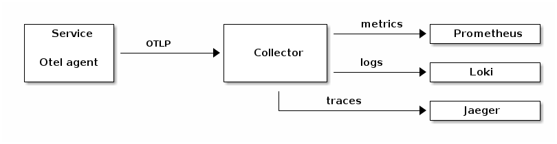
The required configuration properties for the Collector to forward collected data to observability backends is described in detail in the Open Telemetry documentation.
Configuration Properties
commons.liquibase
| Property | Type | Description | Default value |
|---|---|---|---|
execution-settings |
Map |
Contains settings for each LiquibaseExecution by name. |
|
global.initialize-schema |
Boolean |
If set to true, the LiquibaseExecution instances will initialize the database schema. |
|
commons.security.oauth2
| Property | Type | Description | Default value |
|---|---|---|---|
actuator-chain-enabled |
Boolean |
Enables or disables the bean registration for the security filter chain for the actuator endpoints. |
|
basic-auth.cache-max-age |
Duration |
Sets the time after which an entry in the cache is expired. |
|
basic-auth.cache-size |
Integer |
Sets the maximum number of entries in the cache. |
|
clock-skew |
Duration |
Configures the maximum acceptable clock skew used when checking the expiration time of an access- or refresh-token. |
|
default-client-credentials-client-registration-id |
String |
Defines the default client registration ID to use for the client_credentials grant. Only relevant if there is more than one client registration for this grant type. |
|
default-password-client-registration-id |
String |
Defines the default client registration ID to use for the password grant. Only relevant if there is more than one client registration for this grant type. |
|
enforce-audience |
Boolean |
If set to true, the server will only accept tokens which contain the service’s application name in the aud claim. |
|
external-user-management.database-id-resolver.external-id-claim |
String |
Defines the name of the claim in the access token that contains the external ID of the user. The value of this claim will be stored in the database together with the generated internal ID. It must be unique and non-null. If not configured, the subject claim will be used. |
|
external-user-management.oidc.authorities-claim |
String |
The name of the claim that contains the user’s authorities. Must be a JSON list of strings or a single string. |
|
external-user-management.oidc.email-claim |
String |
The name of the claim that contains the email address of the user. |
|
external-user-management.oidc.fetch-user-info |
Boolean |
If set to true, the OIDC user info endpoint will be used to fetch user attributes. |
|
external-user-management.oidc.issuer-uri |
String |
The issuer URI of the OIDC provider. If not set, the value from spring.security.oauth2.resourceserver.jwt.issuer-uri is used. |
|
external-user-management.oidc.user-name-claim |
String |
The name of the claim that contains the name of the user. |
|
external-user-management.oidc.uuid-claim |
String |
The name of the claim that contains the UUID of the user. See {@link java.util.UUID#fromString(String)}. |
|
external-user-management.token-id-resolver.id-claim |
String |
Defines the name of the claim used to get the internal ID from. The claim must contain either a long value or a string that can be parsed to long. The default is 'user-id'. |
|
external-user-management.user-ids.cache-max-age |
Duration |
Sets the time after which an entry in the cache is expired. |
|
external-user-management.user-ids.cache-size |
Integer |
Sets the maximum number of entries in the cache. |
|
external-user-management.user-properties.cache-max-age |
Duration |
Sets the time after which an entry in the cache is expired. |
|
external-user-management.user-properties.cache-size |
Integer |
Sets the maximum number of entries in the cache. |
|
forward-tokens |
Boolean |
If enabled, the OAuth2 client will forward the bearer token from the current request context for subsequent requests to other services. If no request context is available of if the request context does not contain a bearer token, the client will retrieve a new token using the configured client registration. |
|
jwt-converter.scope-authority-prefix |
String |
The prefix that will be added to authority names when the authority was defined using an OAuth2 scope. |
|
open-chain-enabled |
Boolean |
Enables or disables the bean registration for the security filter chain used for unsecured endpoints. |
|
refresh-tokens-enabled |
Boolean |
Enables or disables the usage of refresh tokens to renew an expired access token. |
|
resource-id |
String |
Sets the ID of the protected resource. The audience claim of a token must contain this ID. If not set, the name of the spring application is used instead. |
commons.security.oauth2.additional-identifier-resolver
| Property | Type | Description | Default value |
|---|---|---|---|
claim-name |
String |
Name of the claim in a JWT used to load the user’s additional identifier. |
|
principal-attribute-name |
String |
Name of the claim in a JWT used to load the user’s additional identifier. |
|
ecr.client.caching
| Property | Type | Description | Default value |
|---|---|---|---|
type-definitions.expire-seconds |
Long |
The time in seconds after which an entity in the cache will be expired. |
|
type-definitions.size |
Long |
The maximum number of entities in the cache. |
|
ecr.client.stream
| Property | Type | Description | Default value |
|---|---|---|---|
file.directory |
File |
The directory used to store the temporary files. |
|
file.prefix |
String |
The prefix to use for the names of the temporary files. |
|
file.suffix |
String |
The suffix to use for the names of the temporary files. |
|
file.threshold |
Integer |
The size of the file in bytes from which on a temporary file will be used for buffering. |
|
ecr.sdk
| Property | Type | Description | Default value |
|---|---|---|---|
type-definition-cache-enabled |
Boolean |
Enables or disables the cache for the type definitions in the SDK. |
|
ecr.server.caching
| Property | Type | Description | Default value |
|---|---|---|---|
additional-user-identifiers.expire-after |
Duration |
The time after which an entity in the cache will be expired. |
|
additional-user-identifiers.prefetch |
Boolean |
If set to true, the cache will prefetch its values at startup. |
|
additional-user-identifiers.size |
Long |
The maximum number of entities in the cache. |
|
content-access-tokens.expire-after |
Duration |
The time after which an entity in the cache will be expired. |
|
content-access-tokens.size |
Long |
The maximum number of entities in the cache. |
|
enums.expire-after |
Duration |
The time after which an entity in the cache will be expired. |
|
enums.size |
Long |
The maximum number of entities in the cache. |
|
rendition-use-cases.expire-after |
Duration |
The time after which an entity in the cache will be expired. |
|
rendition-use-cases.size |
Long |
The maximum number of entities in the cache. |
|
type-definition-access.expire-after |
Duration |
The time after which an entity in the cache will be expired. |
|
type-definition-access.size |
Long |
The maximum number of entities in the cache. |
|
type-definitions.expire-after |
Duration |
The time after which an entity in the cache will be expired. |
|
type-definitions.size |
Long |
The maximum number of entities in the cache. |
|
ecr.server.content-access-tokens
| Property | Type | Description | Default value |
|---|---|---|---|
alias |
String |
The alias of the certificate used to sign the tokens. |
|
key-password |
String |
The password for the alias. |
|
key-store-password |
String |
The password for the keystore. |
|
key-store-path |
String |
The absolute path to the keystore that contains the certificate used to sign the tokens. |
|
key-store-type |
String |
The type of the keystore (e.g. PKCS12, JKS…) |
|
max-token-lifetime |
Duration |
The maximum allowed lifetime of the generated tokens. |
|
ecr.server.http
| Property | Type | Description | Default value |
|---|---|---|---|
file.directory |
File |
The directory used to store the temporary files. |
|
file.prefix |
String |
The prefix to use for the names of the temporary files. |
|
file.suffix |
String |
The suffix to use for the names of the temporary files. |
|
file.threshold |
Integer |
The size of the file in bytes from which on a temporary file will be used for buffering. |
|
ecr.server.jobs
| Property | Type | Description | Default value |
|---|---|---|---|
password |
String |
Defines the password of the user used to run the jobs. |
|
purge-content.batch-size |
Integer |
Defines the number of entries in the table to select in one run of the job. |
|
purge-content.cron-expression |
String |
Defines the CRON expression used to schedule the job. |
|
purge-content.enabled |
Boolean |
If set to false, the job will be disabled. |
|
purge-content.schedule |
Boolean |
If set to false, the job will not be scheduled. |
|
retention-cleanup.global-settings.batch-size |
Integer |
Defines the size of a single batch of entities processed by the job. |
|
retention-cleanup.global-settings.enabled |
Boolean |
Enables or disables the job. |
|
retention-cleanup.global-settings.max-message-queue-size |
Integer |
The maximum acceptable size of the message queues used by the job. Checked when the job is started. If the size of one of the queues exceeds the limit, the job is cancelled. |
|
retention-cleanup.global-settings.max-runtime |
Duration |
Maximum acceptable runtime for the job. When the time is exceeded, the job is cancelled. |
|
retention-cleanup.global-settings.purge-content |
Boolean |
If true, all content elements of a document and all it’s versions will be deleted immediately. If false, the content elements will be removed asynchronously by another system job. |
|
retention-cleanup.global-settings.schedule |
Boolean |
If set to false, the job will not be scheduled. |
|
retry-full-text-extraction.batch-size |
Integer |
Defines the number of document versions to select in one run of the job. |
|
retry-full-text-extraction.cron-expression |
String |
Defines the CRON expression used to schedule the job. |
|
retry-full-text-extraction.enabled |
Boolean |
If set to false, the job will be disabled. |
|
retry-full-text-extraction.schedule |
Boolean |
If set to false, the job will not be scheduled. |
|
retry-renditions.batch-size |
Integer |
Defines the number of document versions to select in one run of the job. |
|
retry-renditions.cron-expression |
String |
Defines the CRON expression used to schedule the job. |
|
retry-renditions.enabled |
Boolean |
If set to false, the job will be disabled. |
|
retry-renditions.schedule |
Boolean |
If set to false, the job will not be scheduled. |
|
username |
String |
Defines the name of the user used to run the jobs. |
ecr.server.jobs.retention-cleanup
| Property | Type | Description | Default value |
|---|---|---|---|
global-settings.batch-size |
Integer |
Defines the size of a single batch of entities processed by the job. |
|
global-settings.enabled |
Boolean |
Enables or disables the job. |
|
global-settings.max-message-queue-size |
Integer |
The maximum acceptable size of the message queues used by the job. Checked when the job is started. If the size of one of the queues exceeds the limit, the job is cancelled. |
|
global-settings.max-runtime |
Duration |
Maximum acceptable runtime for the job. When the time is exceeded, the job is cancelled. |
|
global-settings.purge-content |
Boolean |
If true, all content elements of a document and all it’s versions will be deleted immediately. If false, the content elements will be removed asynchronously by another system job. |
|
global-settings.schedule |
Boolean |
If set to false, the job will not be scheduled. |
|
ecr.server.kubernetes
| Property | Type | Description | Default value |
|---|---|---|---|
check-version |
Boolean |
null |
|
ecr.server.liquibase
| Property | Type | Description | Default value |
|---|---|---|---|
auto-change-log |
String |
Defines the location used to store the auto generated changelog. |
|
changelog-directory |
String |
The directory used when generated changelogs are kept. This setting is only relevant when keepChangelogs is set to true. |
|
custom-change-log |
String |
Defines the location of a custom liquibase changelog to execute on startup after the database schema was initialized. Changelogs can be loaded from the classpath by adding the 'classpath:' prefix. Files must be identified by an absolute path using the prefix 'file:/'. |
|
keep-changelogs |
Boolean |
If set to true, generated changelogs will be kept in separate files in the configured directory. |
|
pre-initialization-change-log |
String |
Defines the location of a custom liquibase changelog to execute on startup before the database schema was initialized. Changelogs can be loaded from the classpath by adding the 'classpath:' prefix. Files must be identified by an absolute path using the prefix 'file:/'. |
ecr.server.listeners
| Property | Type | Description | Default value |
|---|---|---|---|
create-renditions-listener-enabled |
Boolean |
Whether the listener that is used to create renditions automatically is enabled or not. Ignored when ecr.server.system.event-listeners-enabled is set to false. |
|
delete-audit-entries-listener-enabled |
Boolean |
Whether the listener that deletes entries from the audit table is enabled or not. Ignored when ecr.server.system.event-listeners-enabled is set to false. |
|
delete-recycled-entities-listener-enabled |
Boolean |
Whether the listener that deletes entries from the recycle bin is enabled or not. Ignored when ecr.server.system.event-listeners-enabled is set to false. |
|
purge-content-listener-enabled |
Boolean |
Whether the listener that purges content from the storage is enabled or not. Ignored when ecr.server.system.event-listeners-enabled is set to false. |
|
rdb-fulltext-extraction-dlq-listener-enabled |
Boolean |
Whether the listener for the fulltext extraction dead letter queue is enabled or not. Ignored when ecr.server.system.event-listeners-enabled is set to false. |
|
rdb-fulltext-extraction-listener-enabled |
Boolean |
Whether the listener that performs fulltext extraction for fulltext stored in the relational database is enabled or not. Ignored when ecr.server.system.event-listeners-enabled is set to false. |
|
rendition-dlq-listener-enabled |
Boolean |
Whether the listener that sets the rendition status to failed is enabled or not. Ignored when ecr.server.system.event-listeners-enabled is set to false. |
|
ecr.server.memory
| Property | Type | Description | Default value |
|---|---|---|---|
buffer-size |
Integer |
Defines how many bytes of data to keep in memory when working with streams before switching to a temporary file. |
|
ecr.server.messaging
| Property | Type | Description | Default value |
|---|---|---|---|
concurrency-limit |
Integer |
The maximum number of concurrent message listeners. This limits the number of threads used for message processing. |
|
entities-per-message |
Integer |
The maximum number of entities contained in one message. Larger collections of entities will be split to multiple messages. This concerns the messages for purge-content and delete-recycled-entities. |
|
forwarding.after-batch-litigation-hold.container-queue-names |
List |
The names of the queues to send container events to. |
|
forwarding.after-batch-litigation-hold.document-queue-names |
List |
The names of the queues to send document events to. |
|
forwarding.after-batch-litigation-hold.folder-queue-names |
List |
The names of the queues to send folder events to. |
|
forwarding.after-batch-litigation-hold.meta-data-queue-names |
List |
The names of the queues to send meta-data events to. |
|
forwarding.after-batch-litigation-hold.relation-queue-names |
List |
The names of the queues to send relation events to. |
|
forwarding.after-batch-retention-prolongation.container-queue-names |
List |
The names of the queues to send container events to. |
|
forwarding.after-batch-retention-prolongation.document-queue-names |
List |
The names of the queues to send document events to. |
|
forwarding.after-batch-retention-prolongation.folder-queue-names |
List |
The names of the queues to send folder events to. |
|
forwarding.after-batch-retention-prolongation.meta-data-queue-names |
List |
The names of the queues to send meta-data events to. |
|
forwarding.after-batch-retention-prolongation.relation-queue-names |
List |
The names of the queues to send relation events to. |
|
forwarding.after-batch-update.container-queue-names |
List |
The names of the queues to send container events to. |
|
forwarding.after-batch-update.document-queue-names |
List |
The names of the queues to send document events to. |
|
forwarding.after-batch-update.folder-queue-names |
List |
The names of the queues to send folder events to. |
|
forwarding.after-batch-update.meta-data-queue-names |
List |
The names of the queues to send meta-data events to. |
|
forwarding.after-batch-update.relation-queue-names |
List |
The names of the queues to send relation events to. |
|
forwarding.after-create-content-queue-names |
List |
Queue names for after create content events. |
|
forwarding.after-create.container-queue-names |
List |
The names of the queues to send container events to. |
|
forwarding.after-create.document-queue-names |
List |
The names of the queues to send document events to. |
|
forwarding.after-create.folder-queue-names |
List |
The names of the queues to send folder events to. |
|
forwarding.after-create.meta-data-queue-names |
List |
The names of the queues to send meta-data events to. |
|
forwarding.after-create.relation-queue-names |
List |
The names of the queues to send relation events to. |
|
forwarding.after-delete-content-queue-names |
List |
Queue names for after delete content events. |
|
forwarding.after-delete.container-queue-names |
List |
The names of the queues to send container events to. |
|
forwarding.after-delete.document-queue-names |
List |
The names of the queues to send document events to. |
|
forwarding.after-delete.folder-queue-names |
List |
The names of the queues to send folder events to. |
|
forwarding.after-delete.meta-data-queue-names |
List |
The names of the queues to send meta-data events to. |
|
forwarding.after-delete.relation-queue-names |
List |
The names of the queues to send relation events to. |
|
forwarding.after-litigation-hold.container-queue-names |
List |
The names of the queues to send container events to. |
|
forwarding.after-litigation-hold.document-queue-names |
List |
The names of the queues to send document events to. |
|
forwarding.after-litigation-hold.folder-queue-names |
List |
The names of the queues to send folder events to. |
|
forwarding.after-litigation-hold.meta-data-queue-names |
List |
The names of the queues to send meta-data events to. |
|
forwarding.after-litigation-hold.relation-queue-names |
List |
The names of the queues to send relation events to. |
|
forwarding.after-read-content-queue-names |
List |
Queue names for after read content events. |
|
forwarding.after-retention-prolongation.container-queue-names |
List |
The names of the queues to send container events to. |
|
forwarding.after-retention-prolongation.document-queue-names |
List |
The names of the queues to send document events to. |
|
forwarding.after-retention-prolongation.folder-queue-names |
List |
The names of the queues to send folder events to. |
|
forwarding.after-retention-prolongation.meta-data-queue-names |
List |
The names of the queues to send meta-data events to. |
|
forwarding.after-retention-prolongation.relation-queue-names |
List |
The names of the queues to send relation events to. |
|
forwarding.after-update.container-queue-names |
List |
The names of the queues to send container events to. |
|
forwarding.after-update.document-queue-names |
List |
The names of the queues to send document events to. |
|
forwarding.after-update.folder-queue-names |
List |
The names of the queues to send folder events to. |
|
forwarding.after-update.meta-data-queue-names |
List |
The names of the queues to send meta-data events to. |
|
forwarding.after-update.relation-queue-names |
List |
The names of the queues to send relation events to. |
|
forwarding.forwarding-enabled |
Boolean |
Global flag to enable or disable forwarding. |
|
json-messages |
Boolean |
If enabled, the payload of JMS messages will be a JSON string. |
|
queue-listener-concurrency |
String |
Specify the number of threads used for listeners for queues (NOT topics!) via a "lower-upper" String, e.g. "5-10", or a simple upper limit String, e.g. "10" (the lower limit will be 1 in this case). |
|
redelivery.back-off-multiplier |
Integer |
The number to multiply the redelivery delay with for every redelivery attempt. |
|
redelivery.initial-redelivery-delay |
Long |
The time in milliseconds to wait until a failed message will be redelivered. |
|
redelivery.maximum-redeliveries |
Integer |
The maximum number of redelivery attempts for failed messages. |
|
redelivery.use-exponential-back-off |
Boolean |
If true, the time between redeliveries of a failed message will be multiplied with the backOffMultiplier for each redelivery. |
|
virtual-threads |
Boolean |
Enables or disables the usage of virtual threads for message listeners. |
|
ecr.server.query
| Property | Type | Description | Default value |
|---|---|---|---|
in-condition-optimization-limit |
Integer |
Sets the number of entries in an in clause from which in the optimized query is used. -1 disables that feature. |
|
max-page-size |
Integer |
Sets the maximum page size for pagination of query results. A value of -1 disables the limit. |
|
statement-execution-time-warning-millis |
Integer |
Sets the maximum duration in milliseconds for the execution time of a database statement after which a warning will be logged. |
|
ecr.server.security
| Property | Type | Description | Default value |
|---|---|---|---|
type-definition-access-checks-enabled |
Boolean |
Defines whether type definition specific access checks are enabled or not. |
|
ecr.server.storage
| Property | Type | Description | Default value |
|---|---|---|---|
minimum-client-chunk-size |
DataSize |
Defines the minimum chunk size a client can define when uploading content. Very small chunk sizes could allow a client to create a vast number of chunks with a single large upload. |
|
profile-aliases |
Map |
A mapping of alias names to storage profile names. |
|
profile-templates |
List |
A list of profile templates used by the bucket selector plugin. |
|
profile-templates.<entry>.generic-time-range |
String |
This genericTimeRange property is designed to support storage profiles that are used to provide storage for a retention date range of either a single month or a single year. <br> If a series of storage profiles for the range of years from 2020 until 2022 shall be created, the parameter genericTimeRange needs to be specified as "2020—2022". This will result in 3 storage profiles being created - one for each of the years: 2020, 2021, 2022. The actual year related to the specific instance of a resulting storage profile can be accessed from within the storage profile instance and will be used to replace occurrences of the character sequence "<year>" within parameters of the profile settings. Similarly, occurrences of the character sequence "<year>" in the nameTemplate of the template will be replaced with the year value related to the specific storage profile instance to derive the name of the storage profile. <br> If a series of storage profiles for the range of month from 2020-09 until 2021-02 shall be created, the parameter genericTimeRange needs to be specified as "2020-09—2021-02". This will result in 6 storage profiles being created - one for each of the month : 2020-09, 2020-10, 2020-11, 2020-12, 2021-01, 2021-02. The actual month and year related to the specific instance of a resulting storage profile can be accessed from within the storage profile instance and will be used to replace occurrences of the character sequences "<year>" and "<month>" within string parameters of the profile settings. Similarly, occurrences the character sequences "<year>" and "<month>" in the nameTemplate of the template will be replaced with the values related to the specific storage profile instance to derive the name of the storage profile. |
|
profile-templates.<entry>.name-template |
String |
The name of the storage template. Can use placeholders "<year>" and "<month>". |
|
profiles |
Map |
A map containing all configured storage profiles. |
|
profiles.<key>.chunk-size |
Nullable DataSize |
If configured, the content in this profile will be split in chunks of the configured size. This can be used to improve performance when using content ranges (especially when encryption is enabled). |
|
profiles.<key>.default-profile |
boolean |
Marks this storage profile as the default profile to use for content elements that do not define a specific profile. |
|
profiles.<key>.encryption-settings.enabled |
boolean |
Enables or disables the encryption. |
|
profiles.<key>.encryption-settings.provider-name |
String |
The name of the crypto provider to use. |
|
profiles.<key>.encryption-settings.provider-settings |
Map |
A generic map of provider specific settings. |
|
profiles.<key>.plugin-class-name |
String |
The class name of the storage plugin used by this profile. |
|
profiles.<key>.plugin-settings |
Map |
A generic map for plugin specific settings. |
ecr.server.system
| Property | Type | Description | Default value |
|---|---|---|---|
attribute-encryption.key-name |
String |
The name of the key to use for attribute encryption. |
|
attribute-encryption.provider |
String |
The name of the crypto provider to use for attribute encryption. |
|
attribute-encryption.provider-settings |
Map |
A generic map for provider-specific settings. |
|
attribute-encryption.rng-algorithm |
String |
The name of the random number generator algorithm to use. If not set, the most secure algorithm will be used. |
|
batch-operation-limit |
Integer |
The maximum number of entities allowed to be affected by one batch operation like update or delete. |
|
batch-update-statement-cache-enabled |
Boolean |
Enables or disables the cache for generated batch update SQL statements. |
|
event-listeners-enabled |
Boolean |
Enables or disables the JMS event listeners used to process system events like recycle bin cleanup and the creation of renditions. |
|
initialize-empty-database |
Boolean |
If set to true, the system will create the schema even if not in maintenance mode should the table ecr_types be empty. |
|
log-schema-changes |
Boolean |
If set to true together with maintenanceMode, the system will only log required changes to the database schema and shut down after the log was written. |
|
maintenance-mode |
Boolean |
If true, the server will update the database schema at startup and shut down after the update was finished. This is actually a combination of updateSchema = true and terminateAfterCreation = true. |
|
schema-change-log-directory |
String |
The location of the logfile used when checkForSchemaChanges is set to true. |
|
schema-update-lock-id |
Long |
The ID of the database backed lock used to synchronize schema updates. |
|
system-id |
Short |
This setting defines the ID of the system that is used in typed IDs and JMS queue names to separate different installations. |
|
terminate-after-creation |
Boolean |
If true, the server will terminate after the database schema was created. |
|
update-schema |
Boolean |
Whether to update the database schema at startup or not. |
|
ecr.system
| Property | Type | Description | Default value |
|---|---|---|---|
system-id |
Short |
The ID of the system the client will connect to. This is only relevant for JMS message queue naming. |
|
http.client.apache
| Property | Type | Description | Default value |
|---|---|---|---|
connection-timeout-seconds |
Integer |
Sets the timeout after which a connection attempt will fail. |
|
idle-connection-timeout-seconds |
Integer |
Sets the time after which an idle connection is removed from the pool. |
|
keep-alive-time-seconds |
Integer |
Sets the time a connection will be kept alive. |
|
max-route-connections |
Integer |
Sets the maximum number of pooled connections per route. |
|
max-total-connections |
Integer |
Sets the maximum number of pooled connections. |
|
request-timeout-seconds |
Integer |
Sets the maximum time to wait for a response. |
|
socket-timeout-seconds |
Integer |
Sets the time to wait for a socket connection. |
|
socket.backlog-size |
Integer |
Socket server backlog size - maximum queue length for incoming connection requests. The default value of 0 uses system default. |
|
socket.rcv-buf-size |
Integer |
Socket receive buffer size (SO_RCVBUF) - the size of the socket receive buffer in bytes. The default value of 0 uses system default. |
|
socket.snd-buf-size |
Integer |
Socket send buffer size (SO_SNDBUF) - size of the socket send buffer in bytes. The default value of 0 uses system default. |
|
socket.so-keep-alive |
Boolean |
Socket keep-alive (SO_KEEPALIVE) - enables periodic transmission of keep-alive messages on connection-oriented sockets. The default value is false. |
|
socket.so-linger |
Duration |
Socket linger (SO_LINGER) - controls the behavior when a socket is closed. Negative values disable linger, positive values indicate linger time in seconds. The default value is -1 (disabled). |
|
socket.so-reuse-address |
Boolean |
Socket address reuse (SO_REUSEADDR) - allows other sockets to bind to this address/port, even when this socket is still in TIME_WAIT state. The default value is false. |
|
socket.so-timeout |
Duration |
Socket timeout (SO_TIMEOUT) - the maximum period of inactivity between two consecutive data packets. The default value is 3 minutes. |
|
socket.socks-proxy-address |
SocketAddress |
SOCKS proxy address - the address of the SOCKS proxy server to use for this socket. Null value indicates no SOCKS proxy. |
|
socket.tcp-keep-count |
Integer |
TCP keep-alive probe count - maximum number of TCP keepalive probes to send before dropping the connection. The default value of -1 uses system default. |
|
socket.tcp-keep-idle |
Integer |
TCP keep-idle time - time (in seconds) the connection needs to remain idle before TCP starts sending keepalive probes. The default value of -1 uses system default. |
|
socket.tcp-keep-interval |
Integer |
TCP keep-alive interval - time (in seconds) between individual keepalive probes. The default value of -1 uses system default. |
|
socket.tcp-no-delay |
Boolean |
TCP no delay (TCP_NODELAY) - disables Nagle’s algorithm for this connection. Setting to true improves latency at the cost of network efficiency. The default value is true. |
|
http.client.ssl
| Property | Type | Description | Default value |
|---|---|---|---|
client-auth |
Boolean |
If enabled, the client will authenticate with a client certificate. |
|
key-store |
String |
Sets path to the keystore file. |
|
key-store-alias |
String |
Sets the alias of the certificate in the keystore. |
|
key-store-password |
String |
Sets the keystore password. |
|
key-store-type |
String |
Sets the type of the keystore. |
|
protocol |
String |
Sets the protocol to use for encrypted connections. |
|
supported-protocols |
List |
null |
|
trust-all |
Boolean |
If enabled, the client will trust all certificates. Warning: Do not set this property to true in production environments! |
|
jdbc.data-source
| Property | Type | Description | Default value |
|---|---|---|---|
isolation-level |
Integer |
The default isolation level of the database. See {@link TransactionDefinition}. |
|
long-running-operations.isolation-level |
Integer |
The default isolation level of the database. See {@link TransactionDefinition}. |
|
long-running-operations.statement-timeout |
Duration |
The default timeout for all SQL statements. 0 means no timeout. |
|
long-running-operations.transaction-timeout |
Duration |
The default timeout for all transactions. 0 means no timeout. |
|
statement-timeout |
Duration |
The default timeout for all SQL statements. 0 means no timeout. |
|
transaction-timeout |
Duration |
The default timeout for all transactions. 0 means no timeout. |
|
job-service
| Property | Type | Description | Default value |
|---|---|---|---|
standby-only-scheduler |
Boolean |
If true, the scheduler used by the job service will be in standby mode. It will not process any jobs. |
|
wait-for-event |
Boolean |
If true, the scheduler will not start to process events until the {@link StartSchedulerEvent} is sent. |
|
Developer
Type definitions
Type definitions describe the domain model of your content repository. They define the structure of object types and provide a stable contract for working with content in code.
In arveo, type definitions are represented by Java or Kotlin interfaces. Each interface corresponds to one type and is used by the framework to map repository properties to strongly typed methods.
A type definition contains custom attributes. These attributes are defined by Java Bean methods in the interface:
-
A getter method (
getXyz()orisXyz()for boolean values) -
A setter method (
setXyz(…))
By adding these bean-style getter and setter methods, you declare which custom attributes exist for the type.
The system will create the corresponding database schema automatically.
| The JavaDoc comments from the type definition interfaces will be used as descriptions for the type definition and its attributes. This is especially important when arveo is connected to an AI application using the MCP service. Meaningful comments for each type definition and attribute will provide crucial context information for the AI application. |
Attribute data types
The return type of a getter defines the data type of the corresponding attribute.
Supported types include primitives and wrappers (for example int/Integer, long/Long, boolean/Boolean), String, BigDecimal, UUID, byte[], date/time types, enums, and selected list types.
For the full list of supported Java types and their database mapping, see Data Types.
Optional features via annotations
Type definitions can enable additional behavior through annotations on the interface and on attribute methods. Examples include:
-
access checks and security (
@AccessChecks,@Security,@SecurityProperty) -
auditing and lifecycle behavior (
@Audit,@OptimisticLocking,@RecycleBin,@RetentionProtected,@OverwriteAllowed) -
schema and naming customization (
@TableName,@Name,@TypeId,@SkipAutomaticSchemaCreation) -
constraints and defaults (
@Mandatory,@Optional,@Unique,@ReadOnly,@DefaultValue) -
indexing and performance options (
@Indexed,@Index,@IndexedForTextMatching)
For all available annotations and their exact semantics, see Annotations.
Example
The example below shows a simple type definition that defines attributes for invoices.
/**
* This type definition contains invoices.
*/
@Type(ObjectType.DOCUMENT)
public interface SimpleInvoice {
@SystemProperty(SystemPropertyName.ID)
DocumentId getId();
/**
* This attribute contains the invoice number.
*/
@ReadOnly
String getInvoiceNumber();
void setInvoiceNumber(String invoiceNumber);
/**
* This attribute contains the total amount of the invoice.
*/
@Mandatory
double getAmount();
void setAmount(double amount);
}The getting started guide contains detailed information about how to create type definitions.
Registration
Type definitions are activated by registering them in a TypeDefinitionRegistration.
A TypeDefinitionRegistration provides the classes that should be processed as type definitions (for example via getRegisteredClasses() or @Register annotations on the registration class).
@Register(SimpleInvoice.class)
public class MyTypeRegistration implements TypeDefinitionRegistration {
}To make the registration effective at runtime, register your TypeDefinitionRegistration as a Spring bean.
In Spring Boot applications, MyTypeConfiguration can be registered automatically via auto-configuration metadata.
For this, annotate the configuration class with @AutoConfiguration and add it to the AutoConfiguration.imports file.
@AutoConfiguration
public class MyTypeConfiguration {
@Bean
public TypeDefinitionRegistration typeDefinitions() {
return new MyTypeRegistration();
}
}META-INF/spring/org.springframework.boot.autoconfigure.AutoConfiguration.importscom.example.types.MyTypeConfigurationThe final step is to package your type definition project in a jar file and add it to the classpath of the Content
Repository Service. To do so, add the jar to the directory that is configured as the location for classpath
extensions using -Dloader.path=<path>.
Data Modeling
Entity types
The following chapter defines entity types and type definitions, used in arveo.
To be able to store objects in the database we define a class for entity definitions.So an entity represents a type of data structure used in the arveo.There are five supported entity types.
-
Document: an entity that can contain metadata and content. Documents are the only objects that can have content, the content may be binary. Documents can be contained in folders (Document).
-
Container: simple folder-like object not organized in a tree structure but with relations to other objects. A Container contains only metadata and cannot be contained in a folder (Container).
-
Relation: an entity that represents a relation between two other entities. A relation can contain metadata (Relation).
-
Folder: an entity that contains metadata and is organized in a tree structure like in a file system (Folder)
-
Meta: an entity that contains only metadata. Unlike containers, metadata entities do not support system attributes like ID and creation date (Metadata)
Each type definition is represented by one (or more) tables in the database.
Each entity is referred by its system-wide unique id, which consists of a system id and its type definition id, followed by the sequential database id of this entity:
[12bit System id][14bit Type Definition id][38bit Entity id].
Versioned entities
All above listed entities (except for meta) are versioned by default. It means that they store version information, modification information. The class VersionInformation combines information about a version, including version id, version number and version comment. The version modification object stores a modification stamp, consisting of a user id and a ZonedDateTime object, both for the events of creation and last modification of the entity. The version information is stored in a separate table for each typed entity.
When specifying a type definition, you can decide which attributes of this type definition are versioned.
| If none of the attributes are versioned, the entire object is not versioned. For the type Document the content changes are always versioned. |
Custom types
You can make your class a type and add features by annotating your classes. You can define the custom metadata schema with simple getter and setter methods.
| When you start a project you have to create your own types. Simply annotate the class with the TYPE annotation and define your schema with type safe getter/setter methods (Example). |
You can find the arveo-specific annotations in the module type-definition-annotations. The goal is to create a type, and specify its properties. So annotations precisely define the behavior of the type definitions. When defining a type, a database table is created. To achieve this, you annotate the type definition with @Type. There is an exception to that: when annotating with @View or @Partial_View, no database table is created.
There are 2 types of annotations:
-
annotations on types (interfaces): @Target({ElementType.TYPE, ElementType.ANNOTATION_TYPE})
-
annotations on properties (getter-methods): @Target({ElementType.METHOD, ElementType.ANNOTATION_TYPE})
Some annotations can be used both on interfaces and on getter-methods. The annotation ElementType.ANNOTATION_TYPE is used for inherited annotations. The following annotation groups are used in arveo:
-
constraint: contains annotations that define specific properties or behaviour of attributes;
-
defaults: contains annotations that define default values of attributes;
-
index: contains annotations that define indexes on type definitions;
-
naming: contains annotations that specify names for tables, attribute definitions, type definitions, enumeration types and enumeration values;
-
reference: contains annotations that specify references between types or attributes;
-
system: contains annotations that concern system properties;
-
view: contains annotations that mark an interfaces as view;
-
other: contains annotations like @Type, @EcrIgnore and others, which stand out and cannot be classified into a group.
You can use the 5 entity classes to create custom entity types to serve the needs of your system.The customized entity types reflect the structure of your project or organization and can be created in a flexible way by extending the five entity types of the arveo system. You can make your class a type and add features by annotating your classes.You can define the custom metadata schema with simple getter and setter methods.
To create your first project using arveo you may want to review the following examples and follow the pattern.
Variables
There are two different ways custom metadata can be stored for an entity: As an attribute, which is defined by a getter and setter method in the type definition class and gets stored in a separate column in the database, and as a variable, which are stored in a JSON structure in a system field in the database.Attributes must be defined in the type definition. Changes to the available attributes require an update of the database schema.Variables can be added and removed without changing the database schema.
It is possible to use variables when searching for an entity, but the available query operations are limited.It is also not possible to use variables for references like foreign keys.
Variables are an optional feature of a type definition that can be enabled by adding the @Variables annotation to the
type interface. To access variables, a getter for the respective system field can be used as shown in the following example:
@SystemProperty(SystemPropertyName.VARIABLES)
Map<String, Object> getVariables();
The names of variables must comply to the same rules as attribute names as defined by the regular expression
[a-zA-Z][a-zA-Z0-9_]*. Variables do not support null values.
|
The following Java data types are supported for variable values:
-
Integer
-
Long
-
String
-
Boolean
-
Double
-
LocalDate
-
LocalTime
-
ZonedDateTime
-
UUID
-
Enums
Storing variables
Variables can be stored by providing a Map<String, Object> to the respective input type:
Map<String, Object> variables = Map.of("myVariable", "some value", "myIntVariable", 1);
client = serviceClient.create(
new TypedContainerInput<>(null, typeInstance, null, variables));Updating variables
To update variables, simply provide a map with the updated values. Other variables that might already be present in the entity will not be changed.
Map<String, Object> variables = Map.of("myIntVariable", 2, "newVariable", true);
client = client.update(
new TypedContainerInput<>(
null,
serviceClient.createTypeInstance(),
null,
variables
)
);Removing variables
To remove a variable, set it’s value to new AttributeNullValue() in an update operation.
Map<String, Object> variables = Map.of("newVariable", new AttributeNullValue());
client = client.update(
new TypedContainerInput<>(
null,
serviceClient.createTypeInstance(),
null,
variables
)
);Searching
The following examples show how variables can be used when searching for entities.
List<TypedContainerClient<RegisteredContainer>> list = serviceClient.where()
.variable("uuid").withEntityAlias().equalTo().value(uuid).holds().unpaged();@NotNull List<TypedContainerClient<RegisteredContainer>> list = serviceClient.where()
.variable("uuid").withEntityAlias().isDefined().holds().unpaged();@NotNull List<TypedContainerClient<RegisteredContainer>> list = serviceClient.where()
.variable("nosuchvariable").withEntityAlias().isUndefined().holds().unpaged();Inherited annotations
Certain properties of annotations have a wide usage throughout the code, so it is therefore more convenient to define a certain annotation once for frequent usage.
The following is a listing of the interface definition @CustomAnnotation, which defines itself as a system property version id.If you mark a getter-method with this annotation, there is no need to list the system property name.
@Target({ElementType.METHOD, ElementType.ANNOTATION_TYPE})
@SystemProperty(SystemPropertyName.VERSION_ID)
public @interface CustomAnnotation {
}To take advantage of this interface, we annotate getter-methods with it as shown in the listing below:
public interface InterfaceInheritanceExample {
@SystemProperty(SystemPropertyName.ID)
DocumentId getId();
@CustomAnnotation
VersionId getVersionId();
}Examples
Enumeration example
Define a enum class and use it in a another object type (Example).
@Enumeration(typeName = "my_enum")
public enum MyEnum {
ENUM1, ENUM2, ENUM3, ENUM4
}Document type example
1
2
3
4
5
6
7
8
9
10
11
12
13
14
15
16
17
18
19
20
21
22
23
24
25
26
27
28
29
30
31
@Type(ObjectType.DOCUMENT) (1)
@RetentionProtected
@OverwriteAllowed
@RecycleBin
@Audit
public interface Resume {
// Immutable identifier documentid of the resume document: unique and readonly
@Unique
@ReadOnly
// alternatively: use autoincrement instead of unique and readonly to let the service create a unique sequence
//@Autoincrement
long getDocumentId(); (2)
void setDocumentId(long value);
// title of the resume document
String getTitle(); (2)
void setTitle(String value);
// relation to Person by person.id()
@ForeignKey (target = Person.class, targetProperty = "id") (3)
String getPersonId();
void setPersonId(String value);
// Multi value with former employers
List<String> getEmployers();
void setEmployers(List<String> employers);
MyEnum getEnum();
void setEnum(MyEnum myEnum);
}
| 1 | Definition of the object type to allow Document to upload content |
| 2 | A database column is created for this property with a default name DocumentId. The column is readonly, mandatory, autoincrement and unique. The database creates a sequence of integer values. The value is readonly and so immutable. This allows users and 3rd party applications to identify and find the object. If you leave the @Autoincrement annotation the id must be set on creation and is readonly and immutable from that moment on. |
| 3 | This annotation specifies a foreign key to class Person |
Container type example
The following example class is marked as type Container. To use an entity type, we annotate the class using the @Type annotation.
@Type(ObjectType.CONTAINER) (1)
public interface Person {
String getFirstName(); (2)
void setFirstName(String value);
@Name("last_name") (3)
String getSurname();
void setSurname(String value);
@Unique (4)
String getVatNumber();
void setVatNumber(String value);
}| 1 | Definition of the object type to be Container |
| 2 | A database column is created for this property with a default name first_name |
| 3 | This annotation specifies the name of the database column, which is different from the default |
| 4 | This annotation specifies a unique column, in this case vat_number. |
Referencing attributes by name
The system creates a column for each attribute of a type definition in the type definition’s database table. The name
of the column will be a snake case representation of the camel case name of the getter method of the attribute. For
example, the getter getInvoiceNumber will be mapped to an attribute (and a column) named invoice_number. To make it
easy to reference these names in a compile-safe manner, classes with string constants for all type definitions will be
generated automatically. For example, for a type definition class called SimpleInvoice a class named
SimpleInvoiceNames will be generated in the same package as SimpleInvoice.
| The classes containing the constants are generated using an annotation processor that is contained in the library containing the type annotations. The processor is picked up by the compiler automatically. |
The following example shows how these constants can be used to perform a search referencing two different attributes.
EcrSearchService<SimpleInvoice> searchService = serviceClient.asEntitySearchService(); (1)
List<SimpleInvoice> list = searchService.where() (2)
.entity().field(SimpleInvoiceNames.INVOICE_NUMBER).like().value("2021-08-*")
.and()
.entity().field(SimpleInvoiceNames.AMOUNT).greaterThan().value(90D)
.holds()
.unpaged();| 1 | serviceClient is a TypedDocumentServiceClient obtained using the TypeDefinitionServiceClient |
| 2 | A query is formulated using the fluent API of the EQL using the attributes invoice_number and amount |
Annotations
General annotations
| Annotation | Description |
|---|---|
@AccessChecks |
This annotation specifies whether type-based access-checking will be enabled on a type. Default = false. See permissions on type definitions for details. |
@AttributeType |
This annotation sets the type of an attribute. When given, this overrides the return type of the annotated getter. In such a case a corresponding |
@ContentElement |
This annotation defines a content element for a type definition. A content element is named and contains one binary content. Note that this annotation can only be used for type definitions of type DOCUMENT. See content elements for details. |
@EcrIgnore |
This annotation marks a method to be ignored as property or a class to be ignored as a type. |
@Enumeration |
This annotation can be used to configure a registered enumeration type. An example can be found here. |
@FilingEnabled |
This annotation is used to enable or disable the filing feature of document type definitions. If it is enabled, documents can be associated to folders. |
@FormattedCounter |
This annotation marks an attribute of type String as a formatted counter. |
@OptimisticLocking |
This annotation enables the optimistic locking feature for a type definition. When optimistic locking is enabled, an entity can be updated only if the entity has not been updated since it was loaded by the updating client. |
@OverwriteAllowed |
This annotation enables the possibility to overwrite an existing version of an entity. |
@RelationCounter |
This annotation marks a field of type Int as a counter for a specific relation type. More details can be found here. |
@Rendition |
This annotation defines a special kind of |
@RenditionCreationCondition |
This annotation marks a default method as a callback used to decide whether a rendition should be created. The methods' return type must be boolean. It may have up to two parameters of type RenditionInfo: The first one being the source type and the second one being the target type. If only one parameter is given it is assumed to be the source type. |
@Type |
This annotation marks a class to be a TypeDefinition used in a |
Constraint annotations
Annotation |
Description |
@AutoIncrement |
This annotation indicates that the value of an attribute will be auto-incremented by the database. Currently only attributes of type short, int and long support auto-incrementing. |
@Length |
This annotation specifies the length of a string or binary attribute. |
@Mandatory |
This annotation marks an attribute as mandatory. |
@Optional |
This annotation marks an attribute as optional as opposed to |
@Precision |
This annotation specifies the precision of a decimal data type. |
@PrimaryKey |
This annotation marks a custom property as part of the elements primary key. The primary key will be combined of every custom property annotated with this annotation and the system property id. The property will be mandatory. |
@ReadOnly |
This annotation marks an attribute as a read-only attribute. Read-only attributes have to be set to a non-null value when an entity is created and cannot be changed when the entity is updated. |
@SecondaryKey |
This annotation marks a property as secondary key i.e. it is mandatory and unique. |
@TimePrecision |
This annotation specifies the precision (seconds or milliseconds) of a time field. |
@Unique |
This annotation marks an attribute as unique. |
Default value annotations
Annotation |
Description |
@DefaultSystemPropertyValue |
This annotation marks a default method as default value supplier for a system property. |
@DefaultValue |
This annotation marks a default method as default value supplier for a property (either a property-like system property or a custom property). |
Index annotations
Annotation |
Description |
@Index |
This annotation is used to configure properties of an index. The indexed columns have to be annotated with |
@Indexed |
This annotation defines that an index will be created for an attribute. When several attributes are annotated to use an index with the same name, a multi-column-index will be created for these columns. Use |
@IndexedForTextMatching |
This annotation tells the system to create a special index for an attribute to speed up text matching operations. More specifically, a GIN index using trigram operators will be created. Such an index should be used to speed up text matching operations like 'LIKE', especially when the expressions use a leading wildcard. These indexes can only be used on String fields. More information can be found here. |
Naming annotations
Annotation |
Description |
@EnumerationTypeName |
This annotation specifies the name of the enumeration-type of an attribute. Only used when the attribute is an enum type. If not set, the name of the enum type (in snake-case) will be used. |
@EnumerationValue |
This annotation con be used to configure an enumeration value. |
@Name |
This annotation specifies the name of an attribute, type definition, foreign key, index or partial view. |
@TableName |
This annotation specifies the table name of a type definition. |
Reference annotations
Annotation |
Description |
@CascadeDelete |
This annotation enables cascading deletes on a property acting as a foreign key. This could be a system attribute or any custom attribute annotated with |
@ForeignKey |
This annotation marks a custom property as a foreign key to the type definition the given class defines. The property must have the same type and name as the referenced type definition’s primary key (or one part of it should it be combined). If the referenced type definition’s primary key is combined the custom property’s type definition needs to define custom properties for every part of the referenced type definition’s primary key which need to have the same name. More information can be found here. |
@InheritedProperty |
This annotation marks a property as an inherited property. More information can be found here. |
@SourceType |
This annotation specifies the class being the source of a relation. |
@TargetType |
This annotation specifies the class being the target of a relation. |
Validation annotations
For more information see Validation.
Annotation |
Description |
@Validated |
Allows to define SpEL validation expressions. |
@ValidatedBy |
References a validation method. |
@ValidationMethod |
Marks a method as a validation method. |
System annotations
Annotation |
Description |
@Audit |
This annotation enables auditing of create-, update- and delete-operations on the type definition. |
@CaseSensitive |
This annotation marks a field of type String as case-sensitive. This effects how searches on this field will be performed. The value itself will always be stored preserving the case. |
@Id |
This annotation is used to define a getter for the ID system property. |
@InputProperty |
This annotation marks a setter method to be setting a property that is part of an update or create call and not a member of the entity itself. Examples are revision commentary or the update counter. |
@PostSchemaInitialization |
This annotation defines a liquibase changelog that will be executed after the database schema for this type definition is created or updated. The value must be a valid URI pointing to a classpath resource or a file. Examples: |
@PreSchemaInitialization |
This annotation defines a liquibase changelog that will be executed before the database schema for this type definition is created or updated. The value must be a valid URI pointing to a classpath resource or a file. |
@RecycleBin |
This annotation enables the recycle bin feature on a type definition. |
@RetentionProtected |
This annotation marks a type to have retention protection applied. That means it will be equipped with additional system properties |
@Security |
This annotation marks a static method as an evaluator for attribute based access control. |
@SecurityProperty |
Values of attributes annotated with this annotation can only be changed by users with the |
@SkipAutomaticSchemaCreation |
This annotation declares that no automatic creation of the database schema should be done for the annotated type. This means that the application programmers themselves are responsible to create the database tables, constraints, etc. needed. |
@SystemProperty |
This annotation is used to define a getter for a system property. |
@TypeId |
This annotation manually specifies the id of the type annotated. Will be ignored on internal views since they potentially specify several types. |
@Variables |
This annotation enables variables for a type definition. Unlike attributes, variables are not stored in individual database columns, but in a JSONB column, making it possible to add variables without changing the database schema or the type interface. More information can be found here. |
@Versioned |
This annotation defines if an attribute of a type is versioned or not (when placed on a getter) or if all attributes of a type are versioned or not (when placed on a type). When the annotation is present on a type and on a getter in the type, the annotation on the getter wins. |
@Encrypted |
Attributes of type |
View annotations
Annotation |
Description |
@PartialView |
This annotation marks a class to be a partial view of the type definition created by another class via the |
@View |
This annotation specifies whether the defined type is a view i.e. whether the system should create the tables for it. |
Please note the following tips regarding Unique identifiers:
To allow users and 3rd party applications to identify and find objects in arveo you should define a unique and immutable property. The property must be @Unique to ensure that an application can identify the item. Make the property @ReadOnly to ensure that the identifier is always set and immutable.
Your business application or the user must set the value when the object is created. Use the @AutoIncrement annotation instead of @Unique and @Readonly if a simple sequential Long id meets your requirements. If you need a more sophisticated unique identifier you can use the annotation @FormattedCounter which allows you to create e.g. String identifiers like <year>-<sequence> (Example).
| If overwrite is turned on it is possible to manipulate the originally saved content and compromise the document without creating a versioned copy. Ensure that the @OverwriteAllowed annotation is not present on legally compliant document types. |
Examples
Default values
1
2
3
4
5
6
7
8
9
10
11
12
13
14
15
16
17
18
19
20
@Type(ObjectType.CONTAINER)
public interface ContainerWithSimpleDefaultProperty {
String DEFAULT_STRING = "default string"; (2)
@Mandatory
String getMyStringField();
void setMyStringField(String myStringField);
@DefaultValue("my_string_field") (1)
default String defaultStringField() {
return DEFAULT_STRING;
}
// ...
// your custom attribute definitions
// ...
}
| 1 | With @DefaultValue("my_string_field") the method defaultStringField is defined to return the default value of my_string_field.Note that the reference in the annotation is in snake-case while the actual property getMyStringField is camel-case. |
| 2 | In a simple case like this it is considered good practice to declare a constant default value as a public constant.However, the default method does not need to return a constant.For example, date-time fields could use ZonedDateTime.now() to specify the timestamp of the creation as default value. |
Index example
As an example of annotations usage let us define an interface BookIndex with two properties, page and chapter.These properties have to be indexed.
Meta@Type(ObjectType.META)
@Index("book-chapter-page-index")
public interface BookIndex {
@PrimaryKey
@AutoIncrement
int getId();
@Indexed("book-chapter-page-index")
int getChapter();
void setChapter(int chapter);
@Indexed("book-chapter-page-index")
int getPage();
void setPage(int page);
}The above-mentioned properties are thus marked with the annotation @Indexed, which ensures, that an index will be created for these attributes.Here, the annotation @Index on the type is an example of an annotation on a type, described above.
Text matching operations, especially when using leading wildcards, usually cannot use regular database indexes which causes poor query performance.
PostgreSQL provides a special kind of index using trigrams. Using a trigram bases index, a query using an expression like where column like '%value' will show a much better performance.
To use trigram based indexes, the pg_trgm extension must be available in the installed PostgreSQL database.
|
arveo can automatically create a trigram index (or, more specifically, a GIN index using trigram operators) on a string attribute when it is annotated with @IndexedForTextMatching. The EQL provides an endswith and a like expression. Both will be able to use the index.
Formatted counters example
Using the @FormattedCounter annotation it is possible to define counters with prefix and suffix that are backed by a sequence on the database.There are several properties that can be defined in the annotation:
| Property | Description |
|---|---|
prefix |
The prefix used for the counter values. Can contain placeholders. |
suffix |
The suffix used by the counter values. Can contain placeholders. |
digits |
The number of digits for the counter. Shorter numbers will be padded with zero. |
sequenceName |
The name of the sequence to use. Can contain placeholders. |
autoGenerateSequences |
The number of sequences to auto-generate when the system is started in maintenance mode. |
startValue |
The start value of the generated sequence(s). |
The parameters prefix, suffix and sequenceName support placeholders.Currently, the system supports a placeholder for
dates in the form $date(<format>) where format is a java date format string supported by
java.time.format.DateTimeFormatter#ofPattern(String)
|
The autoGenerateSequences property can only be used when the sequenceName contains the placeholder
$date(uuuu).It must not contain any other placeholders.
|
The following example shows a formatted counter attribute used as an invoice number that will produce counter values in
the form 2021#0103.It will be backed by a sequence called inv_no_seq_2021.The system will create the next 10
sequences automatically (inv_no_seq_2021 to inv_no_seq_2030).The start value of each sequence will be 100. The
sequence to use will be determined automatically because of the date placeholder in the sequenceName property.So on
January 1st 2022, the generated counter values will use another prefix and the counter will start over at 100
(2022#0100).Each time the system is started in maintenance mode, it will make sure that sequences for the next 10
years will be present.
@FormattedCounter(prefix = "$date(uuuu)#", digits = 4, sequenceName = "inv_no_seq_$date(uuuu)", autoGenerateNextSequences = 10, startValue = 100)
String getInvoiceNumber();Foreign keys with ON DELETE CASCADE example
Add the @CascadeDelete annotation to the getter for the foreign key attribute. For relation types it is possible to add the cascade delete option to the foreign keys to the parent and child of the relation.To do that, add a system property for the parent- and/or child-id and annotate it with @CascadeDelete.
// simple foreign key
@CascadeDelete
@Mandatory(false)
@ForeignKey(target = BookIndex.class, targetProperty = "id")
Integer getReferencedIndex();
// parent- and child-id of a relation
@CascadeDelete
@SystemProperty(SystemPropertyName.PARENT_ID)
short getParentId();
@CascadeDelete
@SystemProperty(SystemPropertyName.CHILD_ID)
short getChildId();| The cascade delete option is supported only for entities that are not versioned (hence it cannot be used on Document types) and do not support retention or inheritance.It is also not possible to inherit attribute values from a type definition that has a foreign key with the cascade delete option. |
Property-like system fields
If a getter for a system field is defined, then it is possible to define a setter, if the system field is property like. The following fields are property-like:
-
retention_date.
To define your type as a view or a partial view, you have to annotate your type with @View or @PartialView.The @View annotation specifies whether the defined type is a view i.e. whether it should create the tables for it.The @PartialView annotation marks a class to be a partial view of the type definition created by another class via the @Type annotation.Partial views can be used for updates and selects with limited select clauses.No tables will be created for classes annotated this way.The interfaces that are to be defined as views of an object type, have to be registered on the interface, representing this object type.For instance, if an interface NamedFile inherits from the interface NamedEntity, and NamedEntity is a partial view of NamedFile, it has to be registered on the object from which it inherits:
@PartialView(NamedFile.class)
public interface NamedEntity {
//...
}Note: An interface may also be a partial view of more than one type definitions.
It is possible to expose tables that are under control of other applications to arveo and include them in its type system.This assumes that the given tables are in the same database schema as the tables of arveo.Also, one needs to know the name of these tables as well as their types.In this case one can define a meta-type annotated with @View.
| External views will only be read from ecr.It will never write to an external view. |
To access system properties you can use the annotation @SystemProperty and pass one of the names defined in the SystemPropertyName enumeration.
general system fields:
-
ID: The unique identifier of the entity. Use on EcrId properties (or subclasses as applicable). Can be used on any entity
-
CREATION_DATE: The date and time the relation was created. Use on ZonedDateTime properties. Can only be used on relations.
-
CREATOR_USER_ID: The id of the user that created this relation. Use on UserId properties. Can only be used on relations.
-
RETENTION_INFO: Information about the retention properties of the entity. It contains the RETENTION_DATE and the LITIGATION_HOLD flag described below. Can only be used on potentially versioned entities i.e. Folders, Documents, Relations and Containers that declared to be retention protected.
-
RETENTION_DATE: The retention date defines the minimum storage date i.e. the related object can not be deleted until after this date passed. The the storage period may be extended but never shortened. Can only be used on potentially versioned entities i.e. Folders, Documents, Relations and Containers that declared to be retention protected.
-
LITIGATION_HOLD:A flag that indicates whether a document is related to a litigation. If the flag is set the document must never be deleted - even if the retention date has passed by. Can only be used on potentially versioned entities i.e. Folders, Documents, Relations and Containers that declared to be retention protected.
versioned system fields:
-
VERSION_NUMBER: The number of the version of the versioned entity. Use on int/Integer properties. Can only be used on versioned entities.
-
VERSION_ID: The unique identifier of the version of the entity. Use on VersionId properties. Can only be used on versioned entities
-
UPDATE_COUNTER: A counter that is incremented each time an entity is updated. It is used for the optimistic locking feature and therefore is only available on type definitions that use optimistic locking.
-
IS_CURRENT_VERSION: A boolean that indicates whether the entity was the current version at the time it was loaded from the backend. Can only be used on versioned entities.
-
MODIFICATION_INFO: Information about the date and time as well as the user of the first and last modification of the entity. Use on ModificationInformation properties. Can only be used on potentially versioned entities i.e. Folders, Documents, Relations.
document system fields:
-
CONTENT: Information about the content of the document. Use on Map<String, ContentInformation> properties. Can only be used on documents.
-
CONTAINING_FOLDER: The id of the folder containing the document (if any). Use on FolderId properties. Can only be used on documents.
folder system fields:
-
FOLDER_NAME: The name of the folder. Use on String properties. Can only be used on folders.
-
PARENT_FOLDER: The id of this folders parent. Use on FolderId properties. Can only be used on folders.
relation system fields:
-
PARENT_ID: The id of the parent of this relation. Use on TypedId properties (or applicable subclasses). Can only be used on relations.
-
PARENT_VERSION_ID: The version-id of the parent of this relation. Use on VersionId properties. Can only be used on relation types that support relations to or from versions.
-
CHILD_ID: The id of the child of this relation. Use on TypedId properties (or applicable subclasses). Can only be used on relations.
-
CHILD_VERSION_ID: The version-id of the child of this relation. Use on VersionId properties. Can only be used on relation types that support relations to or from versions.
Attribute encryption
Attributes of type String and byte[] can be encrypted using the same encryption method as is used for the binary content. Details about the encryption method can be found here. This feature is intended for attribute values containing sensitive data that must not be visible for anyone with direct access to the database. For a client using the API, the encryption is transparent.
| It is not possible to search for values of encrypted attributes. |
| Encryption and decryption is a CPU-intensive operation. Encrypted attributes should not be used in scenarios where many entities are retrieved from the database on a regular basis. Partial views can be used to select only the plaintext attributes of an entity to avoid performance issues. |
In cases where it is not possible to separate encrypted from plaintext attributes, the automatic decryption of attribute values can be disabled:
@Encrypted(autoDecrypt = false)
String getManuallyDecryptedString();When automatic decryption is disabled, the server will return the encrypted form of the attribute values. String-attributes will be Base64 encoded before they are returned. Clients can use the DecryptionClient API class to decrypt the encrypted values on-demand.
Data Types
| Java Type | Database Type | Description |
|---|---|---|
String |
text |
Unlimited unicode text. More information can be found here. |
Integer or int |
int |
32 bit integer value, Integer = null is allowed |
Long or long |
bigint |
64 bit long value, Long = null is allowed |
Double or double |
double |
double value, Double = null is allowed |
Boolean or boolean |
boolean |
Boolean value, Boolean = 3 state boolean |
BigDecimal |
decimal( precision) |
Decimal value, Decimal = null is allowed, add @Precision annotation |
UUID |
uuid |
uuid type |
byte[ length ] |
bytea |
Binary data with a length, specified by a java int (max. 4 gb). |
String |
text |
String based ID with a non-null length. |
enum |
enumeration type |
arveo creates an enumeration object on PostgreSQL 18.1. |
ZonedDateTime |
timestamp |
arveo stores a GMT based date time value in PostgreSQL 18.1 |
LocalDate |
date |
arveo stores a date time value in PostgreSQL 18.1, but only the date is relevant |
LocalTime |
time |
arveo stores a date time value in PostgreSQL 18.1, but only the time is relevant |
List<String> |
array(text) |
_arveo stores multiple text values in an array column of PostgreSQL 18.1. |
List<Long> |
array(bigint) |
_arveo stores multiple bigint values in an array column of PostgreSQL 18.1. |
| List data types allow you to store more than String or long value for a property. You can search for each value using the array search operation of the arveo query language. |
| Enumeration data types allow you to set one or more values from a fixed set of values. |
String data type
By default, PostgreSQL 18.1 does not limit the length of String values. Typically, it is not necessary to define a length using the @Length annotation because PostgreSQL 18.1 does handle Strings of all length very well.
Your strings should have a length up to 4 kByte. Even larger strings are allowed, but you should take care that you do not inadvertently consume too much data space if you store very large strings.
By default, searches on String attributes are performed in a case-insensitive manner. Note that the actual values are stored case sensitively in the database, which means that a unique constraint will treat "example" as a different value then "Example". The case-insensitive searches are performed by converting the value stored in the database and the value to search for to lower-case in the SQL-query. This is done automatically by arveo. If searches are to be performed in a case-sensitive manner, add the @CaseSensitive annotation to the attribute.
| Because the way a query is performed is defined by the setting on the attribute, it is not possible to perform case-insensitive and case-sensitive queries on the same attribute except for like, ends-with and starts-with queries. |
| A unique-constraint on a case-insensitive String attribute will not create an index that can be used to speed up queries. Add an additional index on this column if the attribute is used to search for entities. |
Indexes
Adding indexes to the database column has a huge impact on search performance, especially for large tables. This table gives an overview of the available indexes. An example of an index on multiple columns can be found here.
| Query | Annotations | Notes | Operations still causing a table-scan |
|---|---|---|---|
Equality (case-sensitive) |
|
arveo will create a regular b-tree index on the column |
Ends-with (like with leading wildcard), all case-insensitive comparisons |
Equality (case-insensitive) |
|
arveo will create a functional index on the column for the lower-function |
Ends-with (like with leading wildcard), all case-sensitive comparisons |
Like, ends-with, starts-with |
|
arveo will create a trigram index for text matching, which will be used for both case-sensitive and case-insensitive operations. |
Equality |
It is possible to use both @Indexed and @IndexedForTextMatching on one attribute.
|
| Text matching indexes are not supported on array attributes. Also, it is not supported to add an index on a case-insensitive array attribute. |
System Properties
The following chapter describes types of system properties in arveo.
There are different types of system properties:
-
General system properties: system properties that are available on all types of entity (except for meta data entities).
-
General system properties: system properties that are available on all types of entity (except for meta data entities).
-
Versioned entity system properties: system properties that are only available on entities that can be versioned (Containers, Documents, Folders, Relations). Those properties are contained in the main table of a type definition.
-
Document system properties: system properties that are only available on documents.
-
Folder system properties: system properties that are only available on folders.
-
Relation system properties: system properties that are only available on relations.
-
Version system properties: system properties that are only available on versions of entities. Those properties are contained in the version table of a type definition.
System Property Names
| All system columns in the database are snake case but not camel case. e.g. the Java RetentionDate variable is persisted as "retention_date". |
| Name | Database Type | Description |
|---|---|---|
id |
bigint |
The unique identifier of the entity. Use EcrId properties (or subclasses as applicable). Can be used on any entity and is applied by arveo for all types but metadata. |
creation_date |
datetime |
GMT timestamp when the entity or version was created, precision (1/1000 second) |
creator_user_id |
bigint |
The ID of the user who created the entity or version |
deleted |
boolean |
Optional flag that indicates that an entity is currently contained in the recycle bin. |
last_delete_restore_date |
datetime |
Optional GMT timestamp of when the entity was last moved in or out of the recycle bin. |
retention_date |
datetime |
The GMT based retention timestamp defines the minimum storage date i.e. the related object can not be deleted until after this date passed. Cannot be used on meta data entities and is only available on entity types that declared to be retention protected (Retention) |
litigation_hold |
boolean |
The boolean indicates whether a document is related to a litigation. If the flag is set the document must never be deleted - even if the retention date has passed by. Cannot be used on meta data entites and is only available on entity types that declared to be retention protected (Retention) |
update_counter |
int |
Optional counter for the number of updates on an entity used for optimistic locking. |
| Name | Database Type | Description |
|---|---|---|
version_number |
bigint |
The sequential number of the latest version of the versioned entity. |
latest_version_id |
bigint |
The unique identifier of the latest version of the entity. |
version_comment |
string |
A comment set by the client when a new version is created. |
modification_date |
datetime |
GMT timestamp when the version was created or changed, precision (1/1000 second) |
modification_user_id |
bigint |
The ID of the user who created or changed the version |
initial_creation_date |
datetime |
GMT timestamp of when the first version of an entity was created. |
initial_creation_user_id |
bigint |
The ID of the user who created the first version of the entity. |
| Name | Database Type | Description |
|---|---|---|
content |
json |
JSON containing content properties: |
parent_id |
bigint |
Optional field that contains the ID of the folder the document is contained in. |
| Name | Database Type | Description |
|---|---|---|
folder_name |
String |
The name of the folder. |
parent_id |
bigint |
The ID of the parent of the folder in the folder tree. |
| Name | Database Type | Description |
|---|---|---|
parent_id |
bigint |
The id of the parent of this relation. |
parent_version_id |
bigint |
The version-id of the parent of this relation. Can only be used on relation types that support relations to or from versions. |
child_id |
bigint |
The id of the child of this relation. |
child_version_id |
bigint |
The version-id of the child of this relation. Can only be used on relation types that support relations to or from versions. |
| Name | Database Type | Description |
|---|---|---|
version_number |
bigint |
The sequential number of the version. |
version_id |
bigint |
The unique identifier of the version. |
version_comment |
string |
A comment set by the client when a new version is created. |
entity_id |
bigint |
The ID of the entity the version belongs to. |
Timestamps
All timestamp system properties (creation_date, initial_creation_date, modification_date) are stored in the database using the GMT timezone and a precision of 1 millisecond. When using the Java API, the values will be returned as ZonedDateTime instances.
The initial_creation_date field will contain the timestamp of when the very first version of an entity was created. This field is never updated. The creation_date field on the other hand will contain the time a specific version of an entity was created. Thus, the creation_date field in the main table will be updated when a new version is created because the main table will always contain the latest version of an entity. The modification timestamp field (modification_date) will contain the timestamp of when a version was created or overwritten. This field, too, will be updated in the main table each time a new version is created. It will be updated in the main table and in the version table when a version gets overwritten.
Document type
The following chapter provides a more detailed overview of the type Document.
A Document is one of five entity types supported by the arveo system. Unlike the other entity types, documents are always versioned too keep track of changes of the binary content.
A Document consists of the following components:
-
Technical metadata, which is filled by arveo and cannot be changed, see System properties
-
Typed metadata as defined in the annotated interface (the type definition)
-
0-n content objects: A content object has a content type that is freely configured in the system.A maximum of one element can be inserted per content type.Examples of content types are: original object, rendition, full text, text notes, XML properties, etc.
-
content metadata like content size, mime-type and hash
-
0-n annotations per content object: Only for image objects (TIFF, JPEG, PNG, BMP, PDF/A) annotations can be created in a layer independent of the document.
Any number of versions can be created for a Document. All the versions are traceable in the repository and can be referenced via independent system-wide unique IDs.
Container type
The following chapter provides a more detailed overview of the type Container.
A Container is an object without content. It supports all system managed metadata attributes and custom attributes
defined by the type definition. It is called 'Container' because it’s primary use case is to serve as an entity that
contains custom metadata and that is related to other entities like a document via foreign keys or relations.
| Use container objects to build records and cases that contain documents.You can map the relationship between file, case and documents either as a foreign key (@ForeignKey annotation) or using the relation type objects (Relation Type). |
| If you use Foreign keys to create the relationship between objects you can inherit values from the parent to its children (Inheritance) |
Containers can be versioned. A Container consists of the following components:
-
Technical meta information, which is filled by arveo and cannot be changed, see System properties
-
Typed container type metadata according to the type definition of the container type.
Any number of versions can be created for a Container. All the versions are traceable in the repository and can be
referenced via independent IDs.
Relation type
The following chapter provides a more detailed overview of the type Relation.
A Relation represents a connection between two entities (document, container, folder or meta). It is directed, having
a parent and a child and it can contain custom metadata attributes. A Relation type must specify the type of the parent
and child entities. Any number of versions can be created for a Relation. All the versions are traceable in the repository and can be referenced via independent IDs.
| Changes of the child-id or parent-id are not tracked in the version table. |
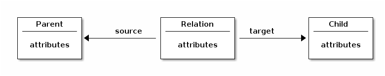
RelationRelation type definition@Type(ObjectType.RELATION) (1)
@SourceType(Customer.class) (2)
@TargetType(Invoice.class) (3)
public interface CustomerInvoiceRelation {
@SystemProperty(SystemPropertyName.CHILD_ID) (4)
@InputProperty(InputPropertyName.RELATION_CHILD) (5)
DocumentId getChildId();
void setChildId(DocumentId childId);
@SystemProperty(SystemPropertyName.PARENT_ID) (6)
@InputProperty(InputPropertyName.RELATION_PARENT) (7)
ContainerId getParentId();
void setParentId(ContainerId parentId);
String getStatus();
void setStatus(String status);
}| 1 | Specifies that the type definition is used for relations |
| 2 | Defines the type of the source or parent of the relation |
| 3 | Defines the type of the target or child of the relation |
| 4 | Marks an attribute to return the value of the childId property of the relation |
| 5 | Marks an attribute to set the value of the childId property of the relation |
| 6 | Marks an attribute to return the value of the parentId property of the relation |
| 7 | Marks an attribute to set the value of the parentId property of the relation |
Relations vs. foreign keys
Instead of using relations, it is possible to model a dependency between two entities using foreign keys. The key difference between the two approaches is that a relation can carry its own metadata attributes, which a foreign key can not. This possibility requires an additional database table (or two, in case of versioned relations) for a relation, which might have a negative impact on the performance. If the dependency between the two entities does not require its own metadata attributes (and is not a many-to-many relation), it is recommended to use foreign keys instead of relations.
Foreign keys can be defined by
adding the @ForeignKey annotation to an attribute in a type definition. The targetProperty attribute of the
annotation must point to the ID or to a custom metadata attribute with a unique constraint of the target type.
The type of the annotated attribute must match the type of the target property of the foreign key. The chapter
Foreign Keys contains a more detailed overview of the foreign key feature.
@ForeignKey(name = "fk_invoice_customer", target = Customer.class, targetProperty = "id")
long getCustomerNumber();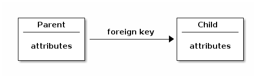
Relations to versions
By default, a relation can point to the current version or to a specific version of its parent or child, when the
parent- or child-type supports versions. This behavior can be controlled by the supportedNodeVersion property of
the @Source and @Target annotations used for relation type definitions. The attribute supports three different
values (defined in de.eitco.ecr.type.definition.annotations.reference.SupportedNodeVersion):
| Value | Meaning |
|---|---|
CURRENT_VERSION |
The relation must point to the current version of the node identified by the node’s ID (NOT the VersionId of the current version) |
SPECIFIC_VERSION |
The relation must point to a specific version of the node identified by it’s VersionId. |
CURRENT_OR_SPECIFIC_VERSION |
The relation can point to either the current version or a specific version of the node. This is the default. |
Unique relations
A single relation always has exactly one parent and one child.However, by default a single entity can be the parent or
child of multiple relations (many-to-many).By adding unique constraints to the parentId and/or childId system
properties of the relation type, it is possible to define one-to-many, many-to-one or one-to-one relations.
@SystemProperty(SystemPropertyName.CHILD_ID)
@Unique(constraintName = "uccr_parent_child_uc")
ContainerId getChildId();Relation counters
By using the @RelationCounter annotation it is possible to create counters on the parent- and child-entities for both
incoming and outgoing relations.The counters are persisted in the database and are updated automatically when relations
are added or removed.
The @RelationCounter annotation contains two attributes: The relationType attribute
defines the type of relation to count and the direction attribute defines whether to count incoming (the entity is
the child or target of the relation) or outgoing (the entity is the parent or source of the relation).By annotating
the relation counter attribute with @Versioned it is possible to control whether the counter attribute is stored
in the version table for each version or in the main table for all versions.When the counter is stored in the version
table it will contain the count for a single version of the entity.If it is stored in the main table it will contain
the count for all versions of the entity.The following example shows how to define relation counter attributes.The
@Name annotation is used because the attribute name is too long for a database column name.
@RelationCounter(relationType = TypedContainerContainerRelation.class, direction = RelationCounterDirection.INCOMING)
@Versioned(false)
int getIncomingRelationCounter();
@RelationCounter(relationType = TypedContainerContainerRelation.class, direction = RelationCounterDirection.INCOMING)
@Versioned
@Name("v_in_relation_counter")
int getVersionedIncomingRelationCounter();Working with relations
The $arveo API provides several methods that can be used to create, modify and resolve relations. Relations
itself are treated just like any other entity type. Entities, that can be the parent or child of a relation (containers,
folders, documents and meta data entities), provide additional relation-specific methods in the client API. The available
methods are defined in the interface de.eitco.ecr.sdk.TypedBaseRelationNodeEntityClient, which is a super interface
of the clients used in the API for documents, folders, containers and meta data entities. The injectable
de.eitco.ecr.sdk.SearchClient offers additional methods to search for relations using filters on the relation, the
parent or the child.
Folder type
The following chapter provides a more detailed overview of the type Folder.
A Folder is an entity that is organized in a file system like tree structure. A Folder can contain custom metadata
attributes. Documents can be filed in a Folder.
A Folder consists of the following components:
-
Technical meta information, which is filled by arveo and cannot be changed, see System properties.
-
Typed folder type metadata according to a schema defined for the document type.
Any number of versions can be created for a Folder. All the versions are traceable in the repository and can be referenced via independent IDs.
Only documents can be filed in a Folder. To enable the filing feature, add the @FilingEnabled annotation to your
document type.
|
Metadata type
Metadata types are used for example to connect external tables. They do not contain any specific system fields and no typed ID as a primary key. The database table can be created by the arveo or an existing table can be used.
| Use the @View annotation to mark a metadata type as a view for which the system should not create a table and use the @TableName annotation to define the name of the table of the external system. |
Metadata types do not support versioning and retention protection.
You can use the @PrimaryKey annotation to define one or more properties of a Metadata type to be the primary key.
|
Foreign keys
The following chapter provides a detailed overview about the foreign key feature using a simple example scenario that implements an employee file.
Example scenario
The following diagram shows the data model of the example scenario:
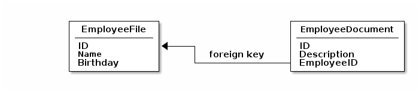
The scenario contains two type definitions. The EmployeeFile definition is a container type holding the metadata of the employee. The EmployeeDocument is a document type that contains documents related to the employee, like a curriculum vitae. The following code snippets show the two type definitions:
@Type(ObjectType.CONTAINER)
@RecycleBin (1)
public interface EmployeeFile {
@SystemProperty(SystemPropertyName.ID)
ContainerId getEmployeeId();
@Mandatory
@Unique
String getName();
void setName(String name);
LocalDate getBirthday();
void setBirthday(LocalDate date);
}@Type(ObjectType.DOCUMENT)
@RecycleBin (1)
public interface EmployeeDocument {
@ForeignKey(target = EmployeeFile.class, targetProperty = "id")
@ReadOnly
@CascadeDelete (2)
ContainerId getEmployeeId(); (3)
void setEmployeeId(ContainerId employeeFileId);
@Optional
String getDescription();
void setDescription(String description);
@SystemProperty(SystemPropertyName.ID)
DocumentId getDocumentId();
@SystemProperty(SystemPropertyName.CONTENT)
Map<String, ContentInformation> getContentInformation();
}| 1 | Enables the recycle bin feature |
| 2 | Enables cascading delete and recycle operations |
| 3 | The attribute defining the foreign key relation |
The foreign key relation between the two type definitions is defined by adding an attribute called employee_id to the EmployeeDocument type. The attribute is annotated with @ForeignKey, defining the target type and the target attribute of the foreign key that will be created on the database. The target type is defined by the class name of the referenced type definition. The target attribute has to be defined by name. As a foreign key target attribute must be a unique key, the system attribute id of the EmployeeFile type is the obvious choice. The data type of the attribute must be compatible to the refrenced attribute. For the ID system property, both the typed ID classes like ContainerId or
the raw type of the ID value (long) can be used.
The foreign key attribute employee_id is annotated with @CascadeDelete, which will cause all documents referenced by one employee file to be deleted automatically when the employee file is deleted.
The employee_id attribute is annotated with @ReadOnly, too. This means that the employee ID must be set when a new EmployeeDocument is created and that it cannot be changed by subsequent update calls on the entity.
Foreign keys with cascade delete
Using the @CascadeDelete annotation it is possible to enable cascading deletes for entities referenced by foreign
keys. A cascading delete will delete the entity with the foreign key, when the referenced entity is deleted.
Foreign keys with cascading delete cannot be used in type definitions that support retention. Also, no delete event will be fired when an entity is deleted by a cascading delete operation.
When the recycle bin feature is used, the entity moved to the recycle bin is not actually deleted. Therefore, no cascading deletes will be performed in this case until the entity is actually deleted. However, entities referencing an entity that is moved to the recycle bin will be moved to the recycle bin, too. This of course will only happen when the type definition containing the referencing entities supports the recycle bin feature.
Creating a new Employee file
The following code snipped shows how to create a new employee file entity.
| The TypeDefinitionServiceClient and BatchOperationServiceClient instances used in the examples can be obtained using dependency injection. |
TypedContainerServiceClient<EmployeeFile> employeeFileServiceClient =
typeDefinitionServiceClient.getContainerServiceClient().byClass(EmployeeFile.class); (1)
EmployeeFile employeeFile = employeeFileServiceClient.createTypeInstance(); (2)
employeeFile.setName("Carl Carlson");
employeeFile.setBirthday(LocalDate.of(1985, 10, 7));
TypedContainerClient<EmployeeFile> employeeClient = employeeFileServiceClient.createEntity(employeeFile); (3)
TypedDocumentServiceClient<EmployeeDocument> documentServiceClient =
typeDefinitionServiceClient.getDocumentServiceClient().byClass(EmployeeDocument.class); (4)
EmployeeDocument document = documentServiceClient.createTypeInstance(); (5)
document.setEmployeeId(employeeClient.getIdentifier()); (6)
document.setDescription("Curriculum Vitae");
ContentUpload upload = new ContentUpload("curriculum_vitae.docx", null, null, inputStream); (7)
TypedDocumentInput<EmployeeDocument> input = new TypedDocumentInput<>(Map.of("content", upload), document);
documentServiceClient.create(input); (8)| 1 | Obtain a service client for the EmployeeFile type definition |
| 2 | Create the entity and add metadata |
| 3 | Save the EmployeeFile and get a client for the new entity |
| 4 | Obtain a service client for the EmployeeDocument type definition |
| 5 | Create the document entity and add metadata |
| 6 | Set the value of the foreign key attribute to link the document to the employee file |
| 7 | Create a ContentUpload for the actual document content |
| 8 | Save the document |
Loading an employee file and all related documents
The following code snippet shows how to load an employee file by searching for the employee’s name and how to list all documents related to the file.
TypedContainerServiceClient<EmployeeFile> employeeFileServiceClient =
typeDefinitionServiceClient.getContainerServiceClient().byClass(EmployeeFile.class); (1)
Optional<TypedContainerClient<EmployeeFile>> clients =
employeeFileServiceClient.where().entity().field(EmployeeFileNames.NAME).equalTo().value("Carl Carlson")
.holds().uniqueResult(); (2)
EmployeeFile employeeFile = clients.get().getEntity();
TypedDocumentServiceClient<EmployeeDocument> documentServiceClient =
typeDefinitionServiceClient.getDocumentServiceClient().byClass(EmployeeDocument.class); (3)
List<TypedDocumentClient<EmployeeDocument>> documentClients =
documentServiceClient.where().entity().field(EmployeeDocumentNames.EMPLOYEE_ID)
.equalTo().value(employeeFile.getEmployeeId()).holds().unpaged(); (4)| 1 | Obtain a service client for the EmployeeFile type definition |
| 2 | Search for the file using the employee’s name |
| 3 | Obtain a service client for the EmployeeDocument type definition |
| 4 | List all documents that are related to the employee file |
Note that the query for the documents in the above example is using the EMPLOYEE_ID constant from the class
EmployeeDocumentNames. This class is automatically created when the type definition classes are compiled.
Creating a file with a document in one transaction
Using the batch API it is possible to create an EmployeeFile and a related EmployeeDocument in one transaction. The following code snippet shows how the batch API can be used to do that.
TypedContainerServiceClient<EmployeeFile> employeeFileServiceClient =
typeDefinitionServiceClient.getContainerServiceClient().byClass(EmployeeFile.class); (1)
EmployeeFile employeeFile = employeeFileServiceClient.createTypeInstance(); (2)
employeeFile.setName("Waylon Smithers");
employeeFile.setBirthday(LocalDate.of(1985, 10, 7));
TypedContainerBatchCreateInput<EmployeeFile> fileInput =
new TypedContainerBatchCreateInput<>(new TypedContainerInput<>(employeeFile), List.of()); (3)
TypedDocumentServiceClient<EmployeeDocument> documentServiceClient =
typeDefinitionServiceClient.getDocumentServiceClient().byClass(EmployeeDocument.class); (4)
EmployeeDocument document = documentServiceClient.createTypeInstance(); (5)
document.setDescription("Curriculum Vitae");
ContentUpload upload = new ContentUpload("curriculum_vitae.docx", null, null, inputStream); (6)
final TypedDocumentBatchCreateInput<EmployeeDocument> documentInput = new TypedDocumentBatchCreateInput<>( (7)
new TypedDocumentInput<>(Map.of("content", upload), document), (8)
List.of(
new BatchAttributeReference( (9)
EmployeeDocumentNames.EMPLOYEE_ID,
SystemFieldList.GeneralSystemField.Id.INSTANCE.getName(),
fileInput.getVirtualIdentifier().getUuid() (10)
)
)
);
batchOperationServiceClient.createTypedEntities(fileInput, documentInput); (11)| 1 | Obtain a service client for the EmployeeFile type definition |
| 2 | Create the entity and add metadata |
| 3 | Create the batch input object that will create the EmployeeFile entity |
| 4 | Obtain a service client for the EmployeeFile type definition |
| 5 | Create the document entity and add metadata |
| 6 | Create a ContentUpload for the actual document content |
| 7 | Create the batch input that will create the EmployeeDocument entity |
| 8 | Create the regular typed document input holding the metadata and the content |
| 9 | Use a BatchAttributeReference to set the EMPLOYEE_ID attribute to the value of the system attribute ID of the EmployeeFile entity |
| 10 | The virtual identifier of the batch create input created in step 3 is used to reference the created entity |
| 11 | Perform the batch operation.Note that the order of the entities is important here. |
Creating or updating a file with a document in one transaction
The batch API also offers a way to perform "upsert" operations.When the file for the employee already exists, it is updated, if not, it will be created.In the same transaction a new document can be added to the new (or existing) file.
TypedContainerServiceClient<EmployeeFile> employeeFileServiceClient =
typeDefinitionServiceClient.getContainerServiceClient().byClass(EmployeeFile.class); (1)
EmployeeFile employeeFile = employeeFileServiceClient.createTypeInstance(); (2)
employeeFile.setName("Lenny Leonard");
employeeFile.setBirthday(LocalDate.of(1985, 10, 7));
TypedContainerBatchCreateInput<EmployeeFile> fileInput =
new TypedContainerBatchCreateInput<>(new TypedContainerInput<>(employeeFile), List.of()); (3)
TypedDocumentServiceClient<EmployeeDocument> documentServiceClient =
typeDefinitionServiceClient.getDocumentServiceClient().byClass(EmployeeDocument.class); (4)
EmployeeDocument document = documentServiceClient.createTypeInstance(); (5)
document.setDescription("Curriculum Vitae");
ContentUpload upload = new ContentUpload("curriculum_vitae.docx", null, null, inputStream); (6)
final TypedDocumentBatchCreateInput<EmployeeDocument> documentInput = new TypedDocumentBatchCreateInput<>( (7)
new TypedDocumentInput<>(Map.of("content", upload), document), (8)
List.of(
new BatchAttributeReference( (9)
EmployeeDocumentNames.EMPLOYEE_ID,
SystemFieldList.GeneralSystemField.Id.INSTANCE.getName(),
fileInput.getVirtualIdentifier().getUuid() (10)
)
)
);
TypedContainerBatchCreateOrUpdateOperation<EmployeeFile> createOrUpdateOperation = (11)
new TypedContainerBatchCreateOrUpdateOperation<>(
EcrQueryLanguage.condition().entity().field(EmployeeFileNames.NAME).equalTo().value("Lenny Leonard").holds(),
fileInput
);
TypedDocumentBatchCreateOperation<EmployeeDocument> createOperation = (12)
new TypedDocumentBatchCreateOperation<>(documentInput);
batchOperationServiceClient.performTypedBatchOperations(createOperation, createOrUpdateOperation); (13)| 1 | Obtain a service client for the EmployeeFile type definition |
| 2 | Create the entity and add metadata |
| 3 | Create the batch input object that will create the EmployeeFile entity |
| 4 | Obtain a service client for the EmployeeFile type definition |
| 5 | Create the document entity and add metadata |
| 6 | Create a ContentUpload for the actual document content |
| 7 | Create the batch input that will create the EmployeeDocument entity |
| 8 | Create the regular typed document input holding the metadata and the content |
| 9 | Use a BatchAttributeReference to set the EMPLOYEE_ID attribute to the value of the system attribute ID of the EmployeeFile entity |
| 10 | The virtual identifier of the batch create input created in step 3 is used to reference the created entity |
| 11 | This operation performs the "upsert" for the file. The EQL condition identifies an already existing file by name. |
| 12 | This operation will create a new document linked to the file. |
| 13 | Performs the operations. Note that the order of the operations is important here. |
Validation
arveo offers several ways to make sure data stored in the repository is valid. Type definitions are
described as Java interfaces, which ensures strong typing of attributes. Furthermore, constraints like @Mandatory can
be added to attributes to ensure consistency on the database level.
Advanced validation can be implemented using the @Validated and @ValidatedBy annotations as shown in the following
chapters.
| The validation is performed on the server side before the entity is persisted in the database. Validation expressions and validation methods have access to the attributes present in the input sent to the server. Inherited attributes or attribute values of the previous version already persisted in the database are not available in this stage. |
Using @Validated
The @Validated annotation allows to define validation expressions using the
Spring Expression Language (SpEL). This is
the recommended way to perform simple validations like checking the range of a numeric attribute or if a string matches
a regular expression. Null- or length-checks should be implemented using database constraints. For very complex validations,
that might require debugging, the @ValidatedBy annotation described below should be used.
The @Validated annotation is placed on an attribute getter and requires an expression parameter. An optional error
message can be defined, which will be presented to the client in case the validation has failed and a ValidationException
is thrown.
Writing validation SpEL expressions
The entered SpEL expressions are evaluated on the server side. In each evaluation, the expression has access to two variables:
-
#value: The actual value of the attribute. Might be null if no value was entered. -
#attributes: AMap<String,Object>containing all attribute values.
SpEL supports calling methods on java objects, so all available methods of the value’s class can be used for validation.
Static methods of other classes can be called using a type expression like T(<class>).method().
Examples
In the following example, a regular expression is used to check if the entered value is a valid german license plate:
@Mandatory (1)
@Validated(
expression = "#value.matches('[A-Z]{1,3}\\s[A-Z]{1,2}\\s\\d{1,4}[E,H]*')", (2)
errorMessage = "$attributeName$ $attributeValue$ is not a valid license plate" (3)
)
String getLicensePlate();| 1 | A database constraint is used to ensure a value is entered |
| 2 | The entered value is matched using a regular expression |
| 3 | The error message used in case the validation has failed |
The next example shows how to use the static now() method of the ZonedDateTime class to perform a date comparison:
@Mandatory
@Validated(
expression = "#value.isBefore(T(java.time.ZonedDateTime).now())", (1)
errorMessage = "Date of purchase must be in the past."
)
ZonedDateTime getDateOfPurchase();| 1 | A type expression is used to get access to the ZonedDateTime class and the instance method isBefore is used for
the comparison. |
It is also possible to write validation expressions that depend on the values of other attributes. In the following example, a value must be entered when the value of another attribute is false:
@Optional (1)
@Validated(
expression = "#attributes.get('available') && #value == null || !#attributes.get('available') && #value != null", (2)
errorMessage = "$attributeName$ must be set when car is not available"
)
ZonedDateTime getLeaseStartDate();| 1 | The value is optional, so no database constraint enforces a non-null value |
| 2 | If the value for available is false, the entered value must not be null |
Using @ValidatedBy
Complex validations can get difficult to handle when written as a SpEL expression. For such use cases, the @ValidatedBy
annotation can be used to define that a static method of the type definition interface will be used for the validation.
Writing validation methods
Validation methods must be static, return a nullable String and accept three parameters in the following declaration order:
-
Object value: The value of the attribute to validate -
String attributeName: The name of the attribute to validate -
Map<String, Object> attributes: The values of all attributes
Each validation method must be annotated using @ValidationMethod. The returned string is used as error message for the
client when the validation has failed. Returning null means that the validation was successful.
The following example shows the same scenario as in the last example for the @Validated annotation: When the value of
the available attribute is false, a non-null value for the attribute must be entered.
@ValidationMethod
static String validateLeaseEndDate(
Object value,
String attributeName,
Map<String, Object> attributes
) {
if (Objects.equals(Boolean.TRUE, attributes.get("available"))) {
if (value != null) {
return "lease_end_date must not be set when car is available";
}
}
if (Objects.equals(Boolean.FALSE, attributes.get("available"))) {
if (value == null) {
return "lease_end_date must be set when car is not available";
}
}
return null;
}The validation method is referenced on the attribute getter using the @ValidatedBy annotation:
@ValidatedBy("validateLeaseEndDate")
@Optional
ZonedDateTime getLeaseEndDate();Inheritance
Simple direct inheritance
The following chapter describes the inheritance scheme, used in arveo. The object to be inherited and its initial state is shown in the following table.
| Create | Initial state | |
|---|---|---|
Company |
||
ID (Company) |
- |
888 |
Name |
CTuX |
CTuX |
CountryCode |
DE |
DE |
PhoneNumber |
- |
[NULL] |
The following table describes direct inheritance (hence with no intermediate objects). Here, Invoice is an object that inherited from Company. The following table describes its initial state, and the update status after 3 different updates.
| Create | Initial state | Update 1 | After Update 1 | Update 2 | After Update 2 | Update 3 | After Update 3 | Update 4 | After Update 4 | |
|---|---|---|---|---|---|---|---|---|---|---|
Invoice |
||||||||||
ID (Invoice) |
- |
931 |
- |
931 |
- |
931 |
- |
931 |
- |
931 |
InvoiceNumber |
EIT-53 |
EIT-53 |
- |
EIT-53 |
- |
EIT-53 |
- |
- |
- |
EIT-53 |
companyID |
- |
[NULL] |
888 |
888 |
[NULL] |
[NULL] |
[NULL] |
[NULL] |
- |
[NULL] |
companyName |
- |
[NULL] |
SAP |
CTuX |
Eitco |
Eitco |
- |
[NULL] |
- |
[NULL] |
companyCountryCode |
- |
[NULL] |
- |
DE |
- |
[NULL] |
- |
[NULL] |
- |
[NULL] |
companyPhone |
- |
[NULL] |
+49 (30) 408191-425 |
[NULL] |
+49 (30) 408191-425 |
+49 (30) 408191-425 |
- |
[NULL] |
+41 123456 |
+41 123456 |
Error: no change! |
Not possible: faulty update parameters! |
Note the following principles:
| After update2: All inherited fields are NULLs if inheritance key is set to NULL, unless values are explicitly specified. After update3: All inherited fields are NULLs if inheritance key is set to NULL, unless values are explicitly specified. - Even if the inheritance key was already NULL before. |
Multilevel inheritance
This inheritance form has an object to be inherited from, just like the direct inheritance. An objects inherits from it, after that another object inherits from the second object. The initial object is still the same, its initial state is described in the table above.
In the following table, the second object Creditor, which inherits from the first object, is described.
| Create | Initial state | |
|---|---|---|
Creditor |
||
ID (Creditor) |
- |
999 |
CreditorNumber |
471147114711 |
471147114711 |
CompanyID |
888 |
888 |
companyName |
- |
CTuX |
companyCountryCode |
- |
DE |
companyPhone |
- |
[NULL] |
| In the table above, the object Creditor inherited the following properites through the companyID: companyName, companyCountryCode, companyPhone. |
The results of multilevel inheritance through an intermediate object are shown in the table below:
| Create | Initial state | Update 1 | After Update 1 | Update 2 | After Update 2 | |
|---|---|---|---|---|---|---|
Invoice |
||||||
ID (Invoice) |
- |
931 |
- |
931 |
- |
931 |
InvoiceNumber |
EIT-11 |
EIT-11 |
- |
EIT-11 |
- |
EIT-11 |
creditorID |
- |
[NULL] |
999 |
999 |
[NULL] |
[NULL] |
companyName |
- |
[NULL] |
SAP |
CTuX |
Eitco |
EITCO |
companyCountryCode |
- |
[NULL] |
- |
DE |
- |
[NULL] |
companyPhone |
- |
[NULL] |
+49 (30) 408191-425 |
[NULL] |
+49 (30) 408191-425 |
+49 (30) 408191-425 |
Indirect inheritance
The third form of inheritance is indirect inheritance. It is much like the second form, only the inheriting object inherits the IDs of both objects it inherits from. In the example above, the object Invoice inherits both the creditorID and the companyID.
In the following table, the object Creditor is described.
| Create | Initial state | |
|---|---|---|
Creditor |
||
ID (Creditor) |
- |
999 |
CreditorNumber |
471147114711 |
471147114711 |
CompanyID |
888 |
888 |
The table below describes the mechanism of indirect inheritance.
| Create | Initial state | Update 1 | After Update 1 | Update 2 | After Update 2 | Update 2a | After Update 2a | |
|---|---|---|---|---|---|---|---|---|
Invoice |
||||||||
ID (Invoice) |
- |
931 |
- |
931 |
- |
931 |
- |
931 |
InvoiceNumber |
EIT-11 |
EIT-11 |
- |
EIT-11 |
- |
EIT-11 |
- |
EIT-11 |
creditorID |
- |
[NULL] |
999 |
999 |
[NULL] |
[NULL] |
[NULL] |
[NULL] |
companyID |
- |
[NULL] |
- |
888 |
- |
888 |
[NULL] |
[NULL] |
companyName |
- |
[NULL] |
SAP |
CTuX |
Eitco |
CTuX |
Eitco |
EITCO |
companyCountryCode |
- |
[NULL] |
- |
DE |
- |
DE |
- |
DE |
companyPhone |
- |
[NULL] |
+49 (30) 408191-425 |
[NULL] |
+49 (30) 408191-425 |
[NULL] |
+49 (30) 408191-425 |
+49 (30) 408191-425 |
| This form of inheritance is currently not needed and therefore not supported by arveo. |
Retention
Annotations @RetentionProtected
An object may be annotated as @RetentionProtected. This will enable all further retention annotations listed below.Every retention enabled object extends the data model by
-
Datetime Retention_Date: contains the fixed retention period as ZonedDateTime format
-
Boolean LitigationHold: stores the litigation hold property
| The convenience class 'Retention_Info' contains both values and can be used to read the retention information with one call. |
Annotations @DefaultSystemPropertyValue(RETENTION_DATE)
It is possible to define a default value for the RETENTION_DATE system column (Default Values]).
If a retention date is not explicitly set, a default value for the retention period is calculated using the default value function implemented by the document type.
1
2
3
4
@DefaultSystemPropertyValue(SystemPropertyName.RETENTION_DATE)
default ZonedDateTime defaultDatum() {
return ZonedDateTime.Now().plusYears(10);
}
| @RetentionProtected annotations is required if you want to set a default for retention_date. |
| If you have defined foreign keys, you can inherit the retention date from container or folder objects.This is very helpful if you have records in your data model (Defaults and Inheritance). |
Examples
Document Type: 10 year retention period
The following example shows how to set the default retention to creation date + 10 years. It also shows how to set a default value for the property warrantyEnd based on the ReceiptDate + 3 years.
| It is still possible to set the Retention_date and warrantyEnd when you upload the document and overwrite the default value. |
/*
* Copyright (c) 2020 EITCO GmbH
* All rights reserved.
*
* Created on 02.10.2020
*
*/
package de.eitco.ecr.system.test.types.defaultvalues;
import de.eitco.ecr.common.RetentionInformation;
import de.eitco.ecr.type.definition.annotations.ContentElement;
import de.eitco.ecr.type.definition.annotations.ObjectType;
import de.eitco.ecr.type.definition.annotations.OverwriteAllowed;
import de.eitco.ecr.type.definition.annotations.Type;
import de.eitco.ecr.type.definition.annotations.constraint.Mandatory;
import de.eitco.ecr.type.definition.annotations.constraint.SecondaryKey;
import de.eitco.ecr.type.definition.annotations.defaults.DefaultSystemPropertyValue;
import de.eitco.ecr.type.definition.annotations.defaults.DefaultValue;
import de.eitco.ecr.type.definition.annotations.system.Id;
import de.eitco.ecr.type.definition.annotations.system.RetentionProtected;
import de.eitco.ecr.type.definition.annotations.system.SystemProperty;
import de.eitco.ecr.type.definition.annotations.system.SystemPropertyName;
import org.springframework.http.MediaType;
import java.time.ZoneId;
import java.time.ZonedDateTime;
@Type(ObjectType.DOCUMENT)
@RetentionProtected
@ContentElement(name = "content")
@OverwriteAllowed
public interface DocumentWithDefaultRetention {
@Id
Object identifier();
@SystemProperty(value = SystemPropertyName.RETENTION_INFO)
RetentionInformation getRetentionInformation();
@SystemProperty(value = SystemPropertyName.RETENTION_DATE)
ZonedDateTime getRetentionDate();
void setRetentionDate(ZonedDateTime retentionDate);
@SystemProperty(value = SystemPropertyName.LITIGATION_HOLD)
Boolean getLitigationHold();
@SecondaryKey
String getName();
void setName(String name);
@Mandatory
ZonedDateTime getReceiptDate();
void setReceiptDate(ZonedDateTime receiptDate);
@Mandatory
ZonedDateTime getWarrantyEnd();
void setWarrantyEnd(ZonedDateTime warrantyEnd);
@Mandatory
String getMimeType();
void setMimeType(String value);
// helper for snake case db column names based on camel case getter/setter names
// attenttion you MUST use snake db column names in default value annotations! if the name is wrong you will get a model exception during start up
String DB_COL_WARRANTYEND = "warranty_end"; (1)
String DB_COL_MIMETYPE = "mime_type";
String DB_COL_RECEIPTDATE = "receipt_date";
String DB_COL_NAME = "name";
String DB_COL_RETENTIONDATE = "retention_date";
ZoneId ZoneIdEuropeBerlin = ZoneId.of("Europe/Berlin");
// set default values
@DefaultValue(DB_COL_WARRANTYEND)
default ZonedDateTime defaultWarrantyEnd() {
return getReceiptDate().withZoneSameInstant(ZoneIdEuropeBerlin).plusYears(3);
}
@DefaultSystemPropertyValue(SystemPropertyName.RETENTION_DATE)
default ZonedDateTime defaultRetentionDate() {
return ZonedDateTime.now(ZoneIdEuropeBerlin).plusYears(10);
}
@DefaultValue(DB_COL_MIMETYPE)
default String defaultMimeType() {
return MediaType.APPLICATION_OCTET_STREAM_VALUE;
}
}| (1) The annotation @DefaultValue() only accepts the database column name as static string parameter.As the document type properties are CAMEL case and the database column names are SNAKE case you must convert your properties e.g. MyCamelCaseProperty = my_camel_case_property.In the below example constants are defined in the type. |
| The retention annotations also work for the document types: container, folder and relation. |
Tenant separation
A tenant separation can be implemented using several different mechanisms. Using attribute based access control, a claim or an authority of the access token of the current user can be matched against an attribute of the entities to limit a user’s access (including visibility of entities). For example, the access token might contain a claim containing the name of the division of the company the user is assigned to. By storing the division names in an attribute of the entities, a simple separation by division can be achieved.
Another way to separate entities by client is to use one type definition for each tenant. Using inheritance, the type definitions can still share a common set of attributes. To decide which type definition(s) a user is allowed to use can either be made by the integrated type level security mechanism or by a custom service hosting the business logic that is used as a gateway to the arveo services.
The third option is to use a different set of service instances for each tenant. Each set of services can use a different database (or database schema) to store each tenant’s data separately.
Advanced db schema changes
Simple changes of the database schema like adding a new attribute are performed automatically by the system in maintenance mode. In some cases it might be required to perform more complex schema changes, which cannot be handled by the system automatically. The following changes cannot be performed automatically on tables that already contains data:
-
setting NOT NULL for an existing column;
-
type changes especially to non-string columns;
-
foreign keys;
-
making a column UNIQUE.
For example, changing the data type of an attribute is not supported because it usually requires project specific migration steps. Advanced changes like this can be performed by custom liquibase scripts.
To perform custom database schema migrations, arveo offers several ways to define custom liquibase migration scripts:
-
A global script that will be executed before the first type definition will be created or updated. This script can be configured using the property
ecr.server.liquibase.preInitializationChangeLog. -
A global script that will be executed after the last type definition was created or updated. This script can be configured using the property
ecr.server.liquibase.customChangeLog. -
A script for a specific type definition that will be executed before the type definition is created or updated. This script can be configured using the annotation
@PreSchemaInitializationon the class representing the type definition. -
A script for a specific type definition that will be executed after the type definition was created or updated. This script can be configured using the annotation
@PostSchemaInitializationon the class representing the type definition.
The values of the configuration properties for the global scripts and the annotations must be valid URIs pointing to
a liquibase changelog script. The URIs can point to a filesystem resource (using file:/) or a classpath resource
(using classpath:).
Schema initialization steps
For a better understanding of how the schema initialization works, the following list shows the steps performed by the system at startup:
-
Create or update the system tables
-
Execute custom pre initialization changelog if configured
-
For each registered type definition class:
-
Execute custom class-specific pre schema initialization script if configured
-
Create or update the type definition table(s)
-
Execute custom class-specific post schema initialization script if configured
-
-
Execute custom liquibase changelog if configured
Note that the actions performed by the automatic schema initialization in step 3.b. can be influenced by the changes that were already performed by the custom scripts executed before. For example, the system will not try to create a new attribute if the custom script has already performed the required schema changes.
Example
The following example shows a type definition class that defines a custom script that will be executed before the type definition is updated. The script expects that the type definition table already exists on the database and is used to change the data type of the attribute postal_code from Long to String. Note that for the sake of simplicity, the script does not perform an actual data migration but simply drops and re-creates the database column for the attribute.
1
2
3
4
5
@Type(ObjectType.CONTAINER)
@Index(value = "${tableName}_name_index", onVersionTable = true)
@PreSchemaInitialization("classpath:liquibase/my-container-changelog.xml")
@Variables
public interface MyContainer {
1
2
3
4
5
6
7
8
9
10
11
12
13
14
15
16
17
18
19
20
<?xml version="1.1" encoding="UTF-8"?>
<databaseChangeLog
xmlns="http://www.liquibase.org/xml/ns/dbchangelog"
xmlns:xsi="http://www.w3.org/2001/XMLSchema-instance"
xsi:schemaLocation="http://www.liquibase.org/xml/ns/dbchangelog
http://www.liquibase.org/xml/ns/dbchangelog/dbchangelog-3.1.xsd"
logicalFilePath="my-container-changelog.xml">
<changeSet id="update-my-container-1" author="root">
<dropColumn tableName="my_container" columnName="postal_code"/>
<addColumn tableName="my_container">
<column name="postal_code" type="text"/>
</addColumn>
<dropColumn tableName="my_container_ver" columnName="postal_code"/>
<addColumn tableName="my_container_ver">
<column name="postal_code" type="text"/>
</addColumn>
</changeSet>
</databaseChangeLog>
Note that the script in the above example first updates the content of the type definition system tables to reflect the changed data type of the attribute postal_code of the type my_container. Doing this causes the automatic migration performed afterwards to ignore the change. Other changes in the type class would still be performed automatically, if possible. The script then simple drops and re-creates the column for the attribute. In a real-life scenario, this is the place where the actual data migration would happen.
Changes not checked during startup
The following changes in the type system will not be checked for:
-
Inheritance: Changing the source key or the source property of an inherited property is allowed. The system will accept it (and not even check it). This can have subtle consequences. The data of an entity created before such a change will still be as before. However, the next time it is updated the inheritance will be computed anew and thus the data will change according the new inheritance rule.
-
formatted counter sequence names: Changing the name of the sequence of a formatted counter will take effect. This can have an impact on your application. It will result in the creation of a new sequence and effectively reset the counters value. This might be desired effect - it could also be the result of an oversight in the type changes. To protect oneself from accidental changes it is deemed could practice to mark formatted counter fields with
@Unique. -
indexes prefixed with
ecr_mnl_: Indexes defined on tables belonging to ecr types will be created and deleted according to changes in the types. However, indexes whose names start with the prefixecr_mnl_will be excluded from that. This enables admins to quickly react on slow systems without a system update inferring with such a patch. This has two consequences-
Admins, that manually add an index, should pick a name for the index that starts with
ecr_mnl_ -
Developers, that add an index to an arveo type should pick a name that does not start with
ecr_mnl_
-
In a case where an index prefixed with ecr_mnl_ is used it will be beneficially in the long-run, to add the index to the type. In this case the prefix ecr_mnl_ in the name must be omitted when defining the index on the type.
|
Access Control
Access rights
arveo uses several mechanisms to restrict access to API endpoints and entities. Access to certain API methods for administrative tasks is limited to uses with administrator privileges. Access to entire type definitions can be limited using type level access checks. And access to individual entities can be controlled using attribute based access control.
Authorities for API endpoints
The REST API has the following user-rights (authorities) for different endpoints:
-
ECR_ADMIN: Allows access to administrative operations.
-
ECR_DSGVO_ADMIN: Allows a user to change the litigation hold and retention settings of entities contained in type definitions using the retention feature.
-
ECR_DSGVO_PRIVILEGED_DELETE: An addition to ECR_DSGVO_ADMIN that allows a user to delete an entity which is still within it’s retention period. Organisational precautions must be put in place to ensure DSGVO compliance when making use of this authority. ECR_DSGVO_PRIVILEGED_DELETE privilege does NOT require ECR_DSGVO_ADMIN privilege.
-
ECR_ALL_TYPES_READ: Allows read access to all type definitions that use type level access restrictions.
-
ECR_ALL_TYPES_WRITE: Allows write access to all type definitions that use type level access restrictions.
-
ECR_USER_ID_RESOLVE: This authority grants the right to resolve the internal id of other users.
Type level access checks
Type level access checks can be used to control access of individual users to entire type definitions. These rights are enforced on operations for all entities of the respective type definition. The details are described in a separate chapter.
Attribute based access control
The attribute based access control is used to control access on individual entities. It can be combined with type level access checks. The concept and usage of attribute based access control is described here.
Attribute Based Access Control (ABAC)
arveo allows entity access based on attributes of that entity.
This can be specified per entity by a static method annotated with @Security.
The method must return an eql expression that resolves to a boolean i.e. a condition.
It will be called by arveo when entities of the given type are accessed to retrieve an additional filter for the access.
Operations will only affect entities where the condition evaluates to true.
Access rights
The attribute based access control uses a different set of access rights than the type level access checks. This is
because the type level access checks are enforced for operations, whereas the attribute based access control enforces
access rights on entities. The access
rights used for the attribute based access control form a hierarchy. That means, that rights have a defined order and
that a right includes all lower valued rights. For example, the READ right includes the lower valued rights
READ_ENTITY and BROWSE. The following table lists the available access rights ordered from lowest to highest valued
access right.
| Access Right | Description |
|---|---|
|
The user is allowed to see the object’s meta data but not the content. |
|
The user is allowed to see the meta data and content of the object. |
|
The user is allowed to see the meta data, annotations and content of the object. |
|
The user is allowed to add annotations to the object. |
|
The user is allowed to change meta data and content of the object. |
|
The user is allowed to overwrite an existing version of the object. |
|
The user is allowed to delete the object. |
|
The user is allowed to change the access rights of the object. |
Every operation on entities of the type will execute the method and add the resulting expression to the filter of the operation:
-
Searches will add the expression to the filter of the search request.
-
Batch operations will add the expression to their filter
-
Calls that operate on a specific id will fail if the expression yields
false.
The simplest case would look like this:
1
2
3
4
5
6
7
8
9
10
@Type(ObjectType.DOCUMENT)
public interface UnsecuredDocuments {
@Security
static Expression<Boolean> calculateAccess() {
return Eql.alwaysTrue();
}
}
This would add the filter 'true' to every operation on the entity, which would allow anyone to access entities.
In most cases, one would want to compare attributes of the entity with properties of the user requesting the current operation. The first can be accomplished with the eql:
1
2
3
4
5
6
7
8
9
10
11
12
13
14
15
16
@Type(ObjectType.CONTAINER)
public interface ThresholdContainer {
int getThreshold();
void setThreshold(int threshold);
@Security
static Expression<Boolean> calculateAccess(Alias alias) {
return EcrQueryLanguage.condition().
alias(alias).field("threshold").
greaterThan().value(300);
}
}
Users may only access entities of the type above where the field 'threshold' is greater than 300.
In order to check the user requesting an operation, one can define a parameter to the method of the type de.eitco.ecr.common.search.AuthenticationContext.
Other information may be accessed this way, too.
The method can have up to four parameters of the following types:
-
de.eitco.ecr.common.search.AuthenticationContext: this class holds information about the user requesting the operation. -
de.eitco.ecr.common.AccessRight: the right needed to perform the operation. -
de.eitco.ecr.common.search.Alias: identifies the part of the query that holds the entity -
org.jooq.DSLContext: an entrypoint to the jooq api bound to the database and schema the table containing the entities is located in.
Parameters
AuthenticationContext: who requests the operation?
The AuthenticationContext holds information about the user requesting the operation.
This parameter will most likely be used in every such method, except for the most basic cases.
Take a case where access to a document is specified by a field named access_token.
It holds the name of a user-management authority every user with access to it must have.
If it is null, every user has access to the document:
1
2
3
4
5
6
7
8
9
10
11
12
13
14
15
16
17
18
19
20
21
22
23
@Type(ObjectType.DOCUMENT)
@OverwriteAllowed
public interface DocumentWithAccessToken {
@Mandatory(false)
String getAccessToken(); (1)
void setAccessToken(String accessToken);
@Security
static Expression<Boolean> calculateAccess(Alias alias, AuthenticationContext authenticationContext, DSLContext dslContext) { (4)
return EcrQueryLanguage.condition()
.alias(alias).field("access_token").isNull() (2)
.or()
.value(authenticationContext.getAuthoritiesAsStrings())
.contains().alias(alias).field("access_token")
.holds();
}
// ...
// more attributes (3)
}
| 1 | the type defines the attribute that specifies access |
| 2 | the query generated uses this attribute. |
| 3 | other elements of the type are omitted for the sake of readability |
| 4 | note that the third parameter is unused. In such a case it could be omitted. |
The AuthenticationContext provides access to the CommonAuthentication and the ExternalCommonUserDetails stored in the
security context of the current user. The CommonAuthentication contains the user’s IDs (internal and external). The
ExternalCommonUserDetails contain common and generic attributes that were read from the user’s access token and/or from
the OpenID Connect user info endpoint. All of this information can be used to decide whether the user is allowed to
perform a specific action or not. In the next example the email of a user is used in an ABAC security method.
@Mandatory
String getEmail();
void setEmail(String email);
@Security
static Expression<Boolean> checkAccess(Alias alias, AuthenticationContext authenticationContext) {
ExternalCommonUserDetails details = authenticationContext.getCommonUserDetails();
return EcrQueryLanguage.condition()
.alias(alias).field("email")
.equalTo().value(details.getEmail())
.holds();
}AccessRight: what will the operation do?
The AccessRight parameter holds the right necessary to perform the operation requested.
This is a hint for the method about what should actually be done in the operation.
It allows differentiating between read and write access:
1
2
3
4
5
6
7
8
9
10
11
12
13
14
15
16
17
18
19
20
21
22
23
24
25
26
27
28
29
30
31
@Type(ObjectType.CONTAINER)
@OverwriteAllowed
public interface ContainerAccessedByUserId {
long getOwner(); (1)
void setOwner(long owner);
List<Long> getAudience(); (2)
void setAudience(List<Long> audience);
@Security
static Expression<Boolean> checkAccess(Alias alias, AuthenticationContext authenticationContext, AccessRight right) {
long userId = authenticationContext.getAuthentication().getInternalIdOrFail();
if (AccessRight.READ.getValue() < right.getValue()) { (3)
return EcrQueryLanguage.condition().alias(alias).field("owner").equalTo().value(userId).holds();
}
return EcrQueryLanguage.condition() (4)
.alias(alias).field("audience").contains().value(userId)
.or().alias(alias).field("owner").equalTo().value(userId)
.holds();
}
// ...
// more attributes
}
| 1 | This type defines an attribute owner holding the user id of the user, responsible.
The owner of an entity will be the only user to modify the entities. |
| 2 | The type also defines a list of user ids audience, holding the ids of users that may read the entity.
Users that are neither owner nor audience have no access on the entity. |
| 3 | Thus, in cases where a right greater than READ is requested, the method returns an expression, that checks whether the current user is the owner of the document. |
| 4 | In every other case .i.e. the requested access right is READ or below, an expression is returned, that checks whether the current user is the owner or part of the audience. |
Alias
The alias identifies the part of the query executed that contains the entity and should be used to reference its members.
| Always use the alias as given in the examples. Other ways to reference the entity might work in most cases but only using the alias assures that referencing entity attributes works in every case. |
The full class name is de.eitco.ecr.common.search.Alias.
Avoid confusion with another Alias class.
|
DSLContext
In some cases, using expressions on the entity itself may become cumbersome or slow. For that, one can use the DSLContext parameter. This allows access by jooq to any table in the same schema the table of the requested entity is located in. It can be used to obtain specific data directly.
Since the access is directly to the database, there are no further access checks on queries using DSLContext.
Depending on the operation requested, the method may be able to execute INSERT or UPDATE statements.
It is the responsibility of the security methods author to make sure changes do not create an inconsistent or otherwise corrupted state of the database.
The simplest way to assure this, is to use the DSLContext only to read data.
|
Security properties
Sometimes it might be required to distinguish between a user changing the value of an attribute used for the attribute based access control and a user changing some other attribute of an entity. For example, the security requirements might make it necessary that only one specific user is allowed to change security-relevant attributes, but other users are allowed to change other attributes.
To meet such requirements, attributes used in ABAC can be annotated with @SecurityProperty. Changing the value of such a property requires the highest access right CHANGE_ACCESS_RIGHTS. If such an operation occurs, the ABAC method will be called with the value CHANGE_ACCESS_RIGHTS for the AccessRight parameter.
Security properties can be defined as exclusive or basic. Exclusive security properties cannot be changed in an operation that would change any other property of the entity. This can be used to ensure that a user, who is designated to manage entity security cannot perform any other kind of change on the entities.
The following example shows a type definition that uses a list of user IDs to decide whether a user is allowed to access an entity or not. To keep the example simple, no distinction is made betweed read- and write-access. Changing the value of the security attribute however is only allowed if the user was given an authority called CHANGE_ACCESS_RIGHTS.
1
2
3
4
5
6
7
8
9
10
11
12
13
14
15
16
17
18
19
20
21
@SecurityProperty(exclusive = true)
@Optional
List<Long> getAuthorizedUsers(); (1)
void setAuthorizedUsers(List<Long> authorizedUsers);
@Security
static Expression<Boolean> checkAccess(Alias alias, AuthenticationContext authenticationContext, AccessRight right) {
if (right == AccessRight.CHANGE_ACCESS_RIGHTS) {
Set<String> authorities = authenticationContext.getAuthoritiesAsStrings();
return EcrQueryLanguage.condition().value(right.name()).in().values(authorities).holds(); (2)
}
long userId = authenticationContext.getAuthentication().getInternalIdOrFail();
return EcrQueryLanguage.condition()
.alias(alias).field("authorized_users").isNull().or()
.alias(alias).field("authorized_users").contains().value(userId).holds(); (3)
}
| 1 | Changing this attribute requires the CHANGE_ACCESS_RIGHTS right |
| 2 | Only a user with an authority called CHANGED_ACCESS_RIGHTS is allowed to perform this operation |
| 3 | Everything else is allowed, when the user’s ID is contained in the list of authorized users |
Security attributes and inheritance
It is possible to annotate an inherited attribute with @SecurityProperty, but there is one important difference compared to non-inherited attributes. The inheritance is triggered as an update one the foreign key attribute that is used to reference the entity the value is inherited from. This means that such an operation requires the WRITE access right, not the CHANGE_ACCESS_RIGHTS right. The actual update of the value is performed on the database level, where the check for the CHANGE_ACCESS_RIGHTS right will occur. For the inheritance to work, the user performing the operation needs both WRITE and CHANGE_ACCESS_RIGHTS privileges on the entity. Of course, it is possible to annotate the foreign key attribute with @SecurityProperty, too. This would impose a stricter access requirement, making it impossible to change any inherited attribute for users without the CHANGE_ACCESS_RIGHTS right.
1
2
3
4
5
6
7
8
9
10
11
12
13
14
15
16
17
18
19
20
21
22
23
24
25
26
27
@ForeignKey(target = LabeledContainer.class, targetProperty = "id")
Long getContainerId(); (1)
void setContainerId(Long value);
@SecurityProperty(exclusive = true)
@InheritedProperty(foreignKeyPropertyName = "container_id", sourcePropertyName = "label")
String getSecurityLabel(); (2)
@Security
static Expression<Boolean> checkAccess(Alias alias, AuthenticationContext authenticationContext, AccessRight right) {
if (right == AccessRight.CHANGE_ACCESS_RIGHTS) { (3)
Set<String> authorities = authenticationContext.getAuthoritiesAsStrings();
return EcrQueryLanguage.condition().value(right.name()).in().values(authorities).holds();
}
Set<String> authorities = authenticationContext.getAuthoritiesAsStrings();
return EcrQueryLanguage.condition() (4)
.alias(alias).field("security_label").equalTo().value("admins")
.and().value(authorities).contains().value("ECR_ADMIN") (5)
.or()
.alias(alias).field("security_label").equalTo().value("auditors")
.and().value(authorities).contains().value("AUDITOR").holds(); (6)
}
| 1 | The foreign key that references the entity to inherit the value for the security_label attribute from |
| 2 | The inherited security attribute |
| 3 | The condition for operations requiring CHANGE_ACCESS_RIGHTS |
| 4 | The condition for operations requiring all other rights including WRITE, which is required for inheritance |
| 5 | In this case, the user would require the ECR_ADMIN and the CHANGE_ACCESS_RIGHTS authority to successfully change the inherited security property |
| 6 | In this case, the user would require the AUDITOR and the CHANGE_ACCESS_RIGHTS authority to successfully change the inherited security property |
Examples
Subselect
There might be cases where the attribute defining access is not part of the entity itself, but part of another entity referred to by a foreign key or a relation.
In such cases a subselect comes handy.
Assume two entity types: documents, to which access is restricted by an attribute named owner_group which is part of the second entity a container.
An owner group must be given Documents are linked to their container with a foreign key named contained_in:
1
2
3
4
5
6
7
8
9
10
11
12
13
@Type(ObjectType.CONTAINER)
public interface OwnedContainer {
String getOwnerGroup(); (1)
void setOwnerGroup(String ownerGroup);
// ...
// more attributes
}
1
2
3
4
5
6
7
8
9
10
11
12
13
14
15
16
17
18
19
20
21
22
@Type(ObjectType.DOCUMENT)
public interface OwnedDocument {
@ForeignKey(target = OwnedContainer.class, targetProperty = "id")
ContainerId getContainedIn(); (2)
void setContainedIn(ContainerId container);
@Security
static Expression<Boolean> calculateAccess(Alias alias, AuthenticationContext authenticationContext) {
Collection<String> groupIds = authenticationContext.getCommonUserDetails().getCollectionAttribute("group-memberships", String.class, List.of()); (3)
return EcrQueryLanguage.condition().alias(alias).field("contained_in").in() (4)
.select("id").from("owned_container").as("container").where().
contextReference("container", "owner_group").in().values(groupIds).holds().holds();
}
// ...
// more attributes
}
| 1 | The entity OwnedContainer holds the attribute that specifies access. |
| 2 | The entity OwnedDocument is linked with a container by its attribute contained_in. |
| 3 | The AuthenticationContext is used to obtain the names of every group the current user is a member of.
The group-memberships attribute was added to the user info response by the authentication service and loaded by the repository service using OpenId Connect. |
| 4 | The group ids are used to create a check whether the entity is contained in a container whose owner_group is one of the users groups. |
Interface inheritance
Since attribute based security - by definition - is based on attributes, it must be able to be specified by type. However, in some cases a more general solution is desired. In these cases, java interface inheritance comes handy.
Assume the class DocumentWithAccessToken from above.
Assume further that there are other types (ContainerWithAccessToken and FolderWithAccessToken) that should be secured by their access-token as well.
In this case it is a good practice to combine the access method and field in a common superinterface:
1
2
3
4
5
6
7
8
9
10
11
12
13
14
15
16
17
18
19
20
21
(2)
public interface WithAccessToken {
@SecurityProperty
@Mandatory(false)
String getAccessToken();
void setAccessToken(String accessToken);
@Security
static Expression<Boolean> calculateAccess(Alias alias, AuthenticationContext authenticationContext) {
return EcrQueryLanguage.condition() (1)
.alias(alias).field("access_token").isNull()
.or()
.alias(alias).field("access_token").in()
.values(authenticationContext.getAuthoritiesAsStrings())
.holds();
}
}
| 1 | The check for the access token is defined here. |
| 2 | note that this interface does not specify an entity by itself, since it lacks a @Type annotation. |
Then the types itself can simply inherit this feature:
1
2
3
4
@Type(ObjectType.CONTAINER)
@OverwriteAllowed
public interface ContainerWithAccessToken extends WithAccessToken {
}
1
2
3
4
@Type(ObjectType.FOLDER)
@OverwriteAllowed
public interface FolderWithAccessToken extends WithAccessToken {
}
Complex scenario: a Hospital
Here we take a look at a more complex example: a Hospital. The hospital manages documents concerning cases. A case belongs to a patient. Users of the system are hospital employees and may access data about documents, cases and patients. These users are part of one or several wards. For every ward there is a group in the system containing the users that are part of this ward. Cases have a list of wards - that may change over time - where the patient was treated for that case. Access is specified as follows;
-
A user may only access cases whose wards contain at least one ward, the user is a member of.
-
A user may only access patients whose cases he may access.
-
A user may only access document whose cases he may access.
Cases could be modeled as follows:
1
2
3
4
5
6
7
8
9
10
11
12
13
14
15
16
17
18
19
20
21
22
23
24
25
26
27
28
29
30
31
32
33
34
35
36
37
38
39
40
41
42
43
44
45
46
47
48
49
@Type(ObjectType.CONTAINER)
public interface MedicalRecordCase {
@Mandatory
@ForeignKey(target = MedicalRecordPatient.class, targetProperty = "id")
ContainerId getPatient(); (1)
void setPatient(ContainerId containerId);
@Mandatory
List<String> getWards(); (2)
void setWards(List<String> wards);
@Security
static Expression<Boolean> access(Alias alias, AuthenticationContext authenticationContext) {
Collection<String> groupNames = authenticationContext.getCommonUserDetails()
.getCollectionAttribute("group-memberships", String.class, List.of()); (3)
Expression<Boolean> result = null;
for (String groupName : groupNames) { (4)
Expression<Boolean> wardCondition = EcrQueryLanguage.condition() (5)
.alias(alias).field("wards").contains().value(groupName)
.holds();
if (result == null) {
result = wardCondition;
} else {
result = Eql.or(result, wardCondition); (6)
}
}
if (result == null) {
return Eql.alwaysFalse(); (7)
}
return result;
}
// case attributes ... (8)
}
| 1 | A case holds a foreign key to a patient. Since a case must have a patient, this attribute is mandatory. |
| 2 | A case has a list of wards, where it was treated. This attribute is also mandatory. |
| 3 | When computing access, the groups - and thus the wards - of the current user are obtained from the AuthenticationContext.
The group-memberships attribute was added to the user info response by the authentication service and loaded by the repository service using OpenId Connect. |
| 4 | Since it is necessary to check whether the intersection between the wards of the case and the groups of the user is not empty, it is iterated over all the groups of the user. |
| 5 | A condition is created that checks whether the entities wards contain the current group. |
| 6 | Access is granted when one of the conditions created yields true. |
| 7 | If the user is in no group whatsoever he may access no case at all. |
| 8 | Further attributes are omitted for the sake of readability. |
Now Patients specify their security as follows:
1
2
3
4
5
6
7
8
9
10
11
12
13
14
15
16
17
18
19
@Type(ObjectType.CONTAINER)
public interface MedicalRecordPatient {
@Security
static Expression<Boolean> access(Alias alias, AuthenticationContext authenticationContext) {
Alias caseAlias = Alias.byName("case"); (2)
Expression<Boolean> caseAccessCondition = MedicalRecordCase.access(caseAlias, authenticationContext); (1)
return EcrQueryLanguage.condition().exists()
.select("id").from(MedicalRecordCase.class).as(caseAlias.getValue()) (3)
.where()
.alias(caseAlias).field("patient").equalTo().alias(alias).id() (4)
.and(caseAccessCondition).holds().holds(); (5)
}
// patient attributes ...
}
| 1 | Access to a patient depends on access to cases.
So, the MedicalRecordCase.access() is called (see above). |
| 2 | In order to do that a custom alias is specified, that is used for the method call and in the query below. |
| 3 | Using a subselect its is checked whether there is a case … |
| 4 | … that is assigned to the patient the access is checked for and … |
| 5 | … and to which the current user may access. |
Documents may specify their security method very similar, only the document-to-case link is specified the other way around:
1
2
3
4
5
6
7
8
9
10
11
12
13
14
15
16
17
18
19
20
21
22
23
24
25
@Type(ObjectType.DOCUMENT)
public interface MedicalRecordDocument {
@ForeignKey(target = MedicalRecordCase.class, targetProperty = "id")
@Mandatory
ContainerId getCase(); (1)
void setCase(ContainerId containerId);
@Security
static Expression<Boolean> access(Alias alias, AuthenticationContext authenticationContext) {
Alias caseAlias = Alias.byName("case");
Expression<Boolean> caseAccessCondition = MedicalRecordCase.access(caseAlias, authenticationContext); (2)
return EcrQueryLanguage.condition()
.exists().select("id").from(MedicalRecordCase.class).as(caseAlias.getValue())
.where()
.alias(caseAlias).id().equalTo().alias(alias).field("case") (3)
.and(caseAccessCondition).holds().holds();
}
// patient attributes ...
}
| 1 | A document is assigned to a case. This is mandatory. |
| 2 | As for patients, the access check for documents depends on the access check for cases. |
| 3 | A similar subselect to the one above is created, however here the outer select holds the link to the inner one. |
Revision history and ABAC
In the example above access to the entities is defined by one attribute: the wards of a case. It is assumed that a case may be treated in several wards - one after another - and every employee belonging to those wards needs access to the case, its patients data and its documents. Visiting the wards one after another will result in several updates on the case - each adding another ward - and thus in a revision history where the list of wards will build up over time.
This has an interesting consequence in the scenario above : The access to older versions of the case will be granted to users who were allowed to access it at the time the version was created.
For instance, if a case started in the pulmonology it would have the following revision list:
| revision | ward(s) |
|---|---|
1 |
pulmonology |
If it was moved to intensive care after that, it would result in the following revision list:
| revision | ward(s) |
|---|---|
1 |
pulmonology |
2 |
pulmonology, intensive care |
Employees working in intensive care would be unable to access data of revision 1 of this case. Depending on the scenario this might or might not be desired.
If this is not desired, it can be fixed with a simple annotation on the case interface:
1
2
3
4
@Mandatory
@Versioned(value = false)
List<String> getWards();
By simply specifying the wards attribute as not versioned, changes on the attribute will affect every revision of the case.
If a case started in the pulmonology it would at first have the same revision history as above:
| revision | ward(s) |
|---|---|
1 |
pulmonology |
However, if it was moved to intensive care now, the revision list would look like this:
| revision | ward(s) |
|---|---|
1 |
pulmonology, intensive care |
2 |
pulmonology, intensive care |
Now all employees in pulmonology and intensive care have access to every revision of this case.
This solution can be used generally. When access control to entities depends on attributes, deciding whether those attributes are versioned or not is an important detail.
Accessing external tables
Assume that in the hospital from the example above, the information which employee belongs to which ward is kept in a separate table named 'employee_to_ward'. This table is managed by an external application.
Using direct database access
As stated earlier, it is possible to add a parameter of the type org.jooq.DSLContext to a security method in order to gain direct access to the database.
This could be used to access the 'employee_to_ward' table:
1
2
3
4
5
6
7
8
9
10
11
12
13
14
15
16
17
18
@Security
static Expression<Boolean> access(
Alias alias,
AuthenticationContext authenticationContext,
DSLContext context (1)
) {
long userId = authenticationContext.getAuthentication().getInternalIdOrFail(); (2)
final List<String> wards = context.selectFrom("test_employee_to_ward")
.where(DSL.field(DSL.name("employee")).eq(DSL.value(userId))) (3)
.fetch(DSL.field("ward", String.class));
Expression<Boolean> result = null;
for (String ward : wards) {
// ... (as above) (4)
| 1 | The DSLContext is defined as another parameter. |
| 2 | The AuthenticationContext is only used to get the current users id. |
| 3 | The wards of the user are obtained using the jooq-api to directly access the database. Depending on the scenario, it might improve performance to cache the result of this query. |
| 4 | After that, the same code as above is executed. |
Using a Metadata type
Alternatively, an arveo custom @Type could be used to access the external table:
1
2
3
4
5
6
7
8
9
10
11
12
13
@View (1)
@Name("employee_to_ward") (2)
@Type(ObjectType.META)
public interface UserToWard {
long getEmployee();
void setEmployee(long employee);
String getWard();
void setWard(String ward);
}
| 1 | The @View annotation marks the type as external.
This means arveo will not create the corresponding table. |
| 2 | The @Name annotation specifies the name of the table the types entities are stored in. |
Now, in the security method this type can be accessed with a subselect:
1
2
3
4
5
6
7
8
9
10
11
12
13
14
15
@Security
static Expression<Boolean> access(Alias alias, AuthenticationContext authenticationContext) {
final Alias userWard = Alias.byName("user_ward"); (1)
return EcrQueryLanguage.condition()
.exists().select("ward").from(UserToWard.class).as(userWard.getValue())(2)
.where()
.alias(userWard).field("employee").equalTo()
.value(authenticationContext.getAuthentication().getInternalIdOrFail()) (3)
.and()
.alias(alias).field("wards").contains() (4)
.alias(userWard).field("ward").holds()
.holds();
}
| 1 | First, an alias is declared for the subselect. |
| 2 | Then, a query is created that checks whether there is a ward, that … |
| 3 | … the current user is assigned to and … |
| 4 | … that is contained in the current entities wards attribute. |
Permissions on Type definitions
It is possible to restrict the access of users to certain type definitions. This is an optional feature of a type
definition that can be enabled using the @AccessChecks(true) annotation. The following type level access rights exist:
-
READ: Allows a user to read entities and to perform search operations. -
INSERT: Allows a user to create new entities. -
READ-COMMENTS: Allows a user to read annotations. -
COMMENT: Allows a user to add and modify annotations. -
UPDATE: Allows a user to update existing entities. -
DELETE: Allows a user to delete existing entities or to recycle and restore entities. -
ASSIGN-ACCESS-RIGHTS: Allows a user to assign access rights to an entity. -
WRITE: Combines the rightsINSERT,UPDATE,COMMENT,DELETEandASSIGN-ACCESS-RIGHTS.
These access rights can be combined freely.
To assign type level access rights to a user, the user must be granted the required authorities. The authorities consist
of the prefix ECR-TYPE_ followed by the ID or the name of the type definition followed by the granted access right. For instance,
to grant a user the UPDATE right on the type definition with ID 12345, the authority ECR-TYPE_12345_UPDATE is
required. To grant the READ right on a type definition named invoice, the authority ECR-TYPE_invoice_READ is
required.
Additionally, there are two additional authorities ECR_ALL_TYPES_READ and ECR_ALL_TYPES_WRITE, which give a user
read or write access to all type definitions. The check of the permissions on the type definitions can also be disabled
completely using the switch ecr.server.security.type-definition-access-checks-enabled (true/false).
Within a folder structure, child elements of a parent folder can belong to different type definitions. To filter the result, the user’s permissions on the type definitions are used. This means that a user will only see folders and documents from type definitions for which he or she has read permission.
Permissions of folders are inherited to the documents. For example, if a document of a type definition to which the user has read permission is located in a folder on whose type definition the user does not have read permission, the user is not allowed to access the document either. The folder permissions are currently only checked for the direct parent folder. There is no inheritance within the folder hierarchy.
The SystemManagementClient provides a method that generates the possible access right authorities for a specific
type definition. This functionality is provided by the REST endpoint located at /api/system/accessRightValues/{typeDefinitionName}.
Repository Service
The Repository Service service is responsible for handling various repository entities such as documents and folders. The following entity types are supported: document, folder, container, relation and metadata.
The service saves the binary data belonging to the documents and delivers them again. Various plugins are available for connecting storage devices and services. A plug-in is assigned to a profile and configured. When saving data, the client has to specify the profile to be used and thereby decides where the data will be saved.
Uploading data
Content, annotations (see below) and metadata can be uploaded as a coherent document. 0-n content elements of different content types are possible. Each content element is named. As a result, you get a globally unique ID (DocumentID), which can be used to reference content, annotations and / or just metadata of the latest version of the document. It is possible to clone content elements from one document to another, creating a copy of the content on the storage. For that, a ContentReference can be supplied when the document is created.
TypedDocumentServiceClient<SingleContentDocument> serviceClient =
typeDefinitionServiceClient.getDocumentServiceClient().byClass(SingleContentDocument.class); (1)
SingleContentDocument document = serviceClient.createTypeInstance();
document.setName("name");
ByteArrayInputStream data = new ByteArrayInputStream("abcde".getBytes()); (2)
Map<String, ContentUpload> content = Map.of("content", new ContentUpload(data)); (3)
TypedDocumentClient<SingleContentDocument> client =
serviceClient.create(new TypedDocumentInput<>(content, document));| 1 | The typeDefinitionServiceClient is an instance of TypeDefinitionServiceClient, that can be injected. |
| 2 | The actual content is passed as an InputStream. |
| 3 | The type definition SingleContentDocument uses only the default content definition, hence the default name is used. |
TypedDocumentServiceClient<TypedTargetDocument> serviceClient =
typeDefinitionServiceClient.getDocumentServiceClient().byClass(TypedTargetDocument.class); (1)
TypedTargetDocument document = serviceClient.createTypeInstance();
DocumentContentReference reference = new DocumentContentReference(documentId, "s3stuff"); (2)
TypedDocumentClient<TypedTargetDocument> client =
serviceClient.create(new TypedDocumentInput<>(document, Map.of("content", reference)));| 1 | The typeDefinitionServiceClient is an instance of TypeDefinitionServiceClient, that can be injected. |
| 2 | Here the documentId is the ID of an already existing document that uses the default content definition. |
Base64EncodedData data = new Base64EncodedData(base64Data);(1)
Map<String, ContentUpload> contentElements = Map.of("content", new ContentUpload(data));(2)
serviceClient.create(new TypedDocumentInput<>(contentElements, document));(3)| 1 | Wrap the Base64 encoded data in a new Base64EncodedData instance |
| 2 | Create a content upload with the created Base64EncodedData |
| 3 | Upload the document |
Validating uploaded content
There are several different ways to validate the content of an uploaded document. The method to use depends on the requirements of the client application. Some applications might already have computed a hash of the content while others might offload this to the server.
Validating content on the client side
When content is uploaded to a type definition that supports content metadata, the server computes an SHA-256 hash for the received data and returns it in the result of the upload request. The client can use this hash value to compare the data received by the server with the original data. The following example shows how to compare the hash values:
ContentTest entity = client.create(input).getEntity(); (1)
Hash hash = entity.getContent().get("content").getHash(); (2)
Hash expectedHash = Hash.sha256Hash(inputStream, 1000000, tempFile); (3)
Assert.assertEquals(expectedHash, hash);| 1 | The document is uploaded using a type definition service client |
| 2 | Get the hash returned from the server. getContent is a getter for the system property SystemPropertyName.CONTENT. |
| 3 | Use de.eitco.ecr.common.Hash to compute the expected hash |
The TypedDocumentServiceClient offers an additional method to validate uploaded content. The createAndValidate method automatically computes a hash of the uploaded data and compares it with the hash value returned from the server. If the two hashes do not match, a HashValidationException is thrown and the created document will be purged.
TypedDocumentServiceClient<ContentTest> client = typeDefinitionServiceClient
.getDocumentServiceClient().byClass(ContentTest.class);
ContentUpload contentUpload = new ContentUpload(data);
Map<String, ContentUpload> content = Map.of("content", contentUpload);
ContentTest instance = client.createTypeInstance();
TypedDocumentInput<ContentTest> input = new TypedDocumentInput<>(content, instance);
client.createAndValidate(input);Validating content on the server side
It is also possible to pass a hex representation of an SHA-256 hash code of the uploaded content to the server. If such a hash is present, the server will compare the computed hash value with the one specified by the client. If the values do not match, the upload fails and the uploaded file will not be stored.
Hash hash = Hash.sha256Hash(inputStream, 1000000, tempFile); (1)
ContentUpload contentUpload = new ContentUpload(
"lorem_ipsum.txt", (2)
null, (3)
null, (4)
data,
hash
);
Map<String, ContentUpload> content = Map.of("content", contentUpload);
ContentTest document = client.createTypeInstance();
TypedDocumentInput<ContentTest> input = new TypedDocumentInput<>(content, document);
client.create(input);| 1 | Use de.eitco.ecr.common.Hash to compute the hash |
| 2 | The filename |
| 3 | null for the length, will be computed by the server |
| 4 | null for the content type, will be computed by the server |
Validating the content of an existing document
The TypedDocumentServiceClient provides a method called hashMatches that can be used to check if the content of an existing document is valid. The client has to provide the expected hash, the document’s ID and the name of the content element to check. An additional parameter called loadContent defines if the server should use the hash value stored in the database or if it should load the content from the storage and compute a new hash value to compare. It is possible to check the content of a specific version of a document, too.
Hash hash = Hash.sha256Hash(inputStream, 1000000, tempFile);
boolean hashMatches = documentServiceClient.hashMatches(documentId, "content", hash, false);Resumable uploads
In some situations uploading large files might fail because of timeouts or an unstable network connection. For these situations, arveo supports resumable uploads using the tus protocol. On the server side, an additional service is used that provides the tus API and stores uploaded files in the filesystem. The Content Repository Service retrieves uploaded files from the upload service and stores them just as any regular content. When the content was stored successfully, the uploaded file is deleted from the upload service’s storage automatically. In case storing the content in the Content Repository Service has failed, the uploaded file is not removed, giving the client the opportunity to re-try storing the content without having to upload the entire file again.
The following example shows how to use the tus client in combination with the arveo SDK to use resumable uploads. The tus client can be obtained using the following dependency:
<dependency>
<groupId>de.eitco.commons</groupId>
<artifactId>tus-upload-service-client-spring</artifactId>
<version>${tus-upload-service.version}</version>
</dependency>File file = new File(baseDirectory + "/src/test/resources/documents/lorem_ipsum.txt");
String uploadId;
try (TusClient tusClient = tusClientFactory.newClient()) { (1)
TusUpload upload = new TusUpload(new FileInputStream(file), "lorem-ipsum.txt", file.length());
uploadId = tusClient.resumeOrCreateUpload(upload, 100 * 1024); (2)
}
TypedDocumentServiceClient<Files> serviceClient =
typeDefinitionServiceClient.getDocumentServiceClient().byClass(Files.class);
Files document = serviceClient.createTypeInstance();
document.setFilename("lorem_ipsum.txt");
AsyncUploadReference uploadReference = new AsyncUploadReference(uploadId, "lorem_ipsum.txt"); (3)
Map<String, ContentReference> contentReferences = Map.of("content", uploadReference);
TypedDocumentClient<Files> typedDocumentClient =
serviceClient.create(new TypedDocumentInput<>(document, contentReferences));| 1 | Create a new TusClient using the injectable TusClientFactory. |
| 2 | Remember the unique ID of the upload. |
| 3 | Reference the uploaded file using its ID for the document creation call for the Content Repository Service. |
Downloading data
Content, annotations and metadata of a document can be downloaded via API. It is possible to load the entire document as a multipart or a structure of the document that includes all metadata, annotations and a list of content elements with their IDs, types and identifiers. Each content element can then be loaded using the document ID / content ID or the document ID / content type. Access to individual content elements without a document ID is not possible for reasons of access control. Access control based on the document ID is ensured with every access.
Update metadata without a version
The meta information of a document can be changed. The changes can be persisted in the database without creating a version. It is possible, to maintain frequently changing information on the document quickly without creating the overhead of a version. However, in the event of an audit, the changes are not traceable.
Delete an object
Documents contain one or more content elements which are not stored in the database but in the storage system. When a document is deleted using one of the delete-calls, the database entries for the deleted documents (including those of older versions) are removed. A system job will delete the content elements of the deleted documents from the storage system asynchronously. To delete both the database entries and all content elements (including those referenced from older versions) immediately, a client can use the purge methods provided by the document client API. The purge methods will first remove the content elements from the storage and then remove the database entries. In case some content elements could not be removed from the storage, the system job mentioned above will try to remove those content elements asynchronously.
The IDs of the content elements that need to be removed from the storage in the asynchronous mode are kept in a system table (ecr_purge_content_elements) until they have been deleted successfully. When a content element could not be deleted, the entry in the system table is marked as failed. The number of entries in the system table can be monitored using the actuator endpoint contentElementPurgeTable. The entries marked as failed in the system table can then be used to resolve the problem manually.
| The system job that deletes the content from the storage must run in the internal job scheduler of the Repository Service. |
A type definition can use the optional recycle bin feature. If it is enabled, entities in the type definition can be moved to and restored from the recycle bin.
The Delete-API allows you to execute the methods:
-
MoveToRecycleBin(): to move an object to the recycle bin. The DELETE-property of the latest version is set to 1 and content and older versions are not affected.
-
Delete() all the versions of the object are deleted from the database. Content is removed asynchronously.
-
Purge(): all the versions of the objects are deleted from the database and the content objects or files are erased immediately.
-
RestoreFormRecycleBin(): restore an object from the recycle bin, the DELETE-property is set to 0
| If an object has relations to other objects the delete or purge method will fail with a foreign key exception. The Relation API provides methods to delete the relations (Remove Relations) |
Filtering the recycle bin
Entities in the recycle bin will be filtered from normal queries by default, but a client can compose search expressions that override this behavior. To do that it is sufficient to include a reference to the deleted system field in the expression. The following example shows a part of a query that will show only deleted entities:
....and().systemField(SystemFieldList.GeneralSystemField.Deleted.INSTANCE).equalTo().value(true)Note that the deleted system field can contain null values, which have the same meaning as false. When a client uses one of the delete calls to delete one or more entities, all database entries for those entities will be deleted (including all versions).
| There is no option to restore entities once they have been deleted. |
If there are relations between entities that are to be deleted, the relations are not deleted. Instead, a ForeignKeyException is thrown - and has to be handled by the caller.
Removing all relations of an entity
To delete all relations that originate from a certain entity, the method removeAllRelations() has to be used. The method returns the deleted relations:
List<Relation> removed = sourceContainerClient.removeAllRelations();You can also delete all relations that point to a specific entity. For this, there is the method removeAllIncomingRelations(). This also returns the deleted relations:
List<Relation> removed = targetContainerClient.removeAllIncomingRelations();Once all relations have been removed, the entity can also be deleted.
Locking
If your applications want to update objects from different processes at the same time you must decide if you want to use no locking or optimistic locking.
No locking means that the latest update wins and overwrites the concurrent update. Depending on the database configuration it might happen that one update becomes a deadlock victim and an exception is thrown.
If optimistic locking is enabled for the document type the API ensures that updates do not overwrite changes made by other clients by accident. The feature is disabled by default and can be enabled by annotating a type class with @OptimisticLocking. e.g. two processes A and B load the same object including content and versions at the same time and get the same version of the document. Now both processes process the document and some metadata and add additional content. A is faster than B. With No Locking B overwrites the changes made by A. With optimistic locking B cannot save the changes and receives a Locking exception. Process B has to load the changes made by A and retry the operation.
Downloading links for external users
You can create download links for content elements that can be used by external users. Such a link has an expiration date and can be used to download a single content element. The links are digitally signed using a configurable certificate, so that the receiver cannot alter the referenced content element or the expiration date of the link. The arveo service provides a special HTTP endpoint to process download links. This endpoint does not require authentication. Instead, the download link contains credentials that allow the user to access the referenced content element.
| This feature must be activated by configuring a keystore containing an RSA keypair that will be used to sign the links. |
The configuration options are listed here.
Download links (or content access tokens), can be created using the Java SDK as shown in the following exaple:
@Autowired
private ContentAccessTokenResourceClient contentAccessTokenResourceClient;ContentAccessTokenInput input = new ContentAccessTokenInput(
documentId,(1)
"content",(2)
ZonedDateTime.now().plusHours(3)(3)
);
String token = contentAccessTokenResourceClient.createToken(input);| 1 | The ID of the document containing the content element to download |
| 2 | The name of the content element |
| 3 | The expiration date of the link (can be omitted) |
The returned token can then be used to download the content by performing a GET request to the following endpoint:
GET http://my-arveo-instance/streaming/<token>Download links can only be created for content elements that are accessible to the user creating the link. When the client does not define an expiration date when the content access token is created, the configured maximum lifetime is used.
| The creation of new tokens will fail when the client specifies an expiration date that would exceed the configured maximum lifetime. |
Versioning
The goal of using the concept of versioning is to create and work with version-safe archives and track the history of each change in the system.
Versioning basics
All entity types in arveo may have a version, which itself is an optional attribute. The attributes of the entity types specify in their definition whether they are versioned. If an entity type has at least one versioned attribute, a version table is created. The version number of an existing entity is automatically created and can be retrieved via the system property version_number.
In the version table, the version changes to the metadata are listed, as well as the changes to one or more content elements. Optionally you can specify a Unicode version comment. Each version gets a version ID, which is unique for this bundle of version tables. The version id allows a developer to retrieve content and metadata of exactly this version of the entity. Using the API a developer can query all versions including their metadata and content elements for each entity ID or version ID. It is ensured that the existing content of a version is not changed or deleted by a new version, but there is an exception to this rule, which does allow to overwrite a version change.
| There is a function that allows you to make a change without having to note it in the version table. And there is a way to forbid this for a certain entity type. |
Implementation of versioning
The concept of versioning is implemented using the annotation @Versioned, which is defined by the interface Versioned. This annotation defines if an attribute of a type is versioned or not (when placed on a getter) or if all attributes of a type are versioned or not (when placed on a type). When the annotation is present on a type and on a getter in the type, the annotation on the getter wins.
The following example of an object of type Container contains an attribute "name", which is a versioned attribute. The other attribute "counter" in this example is marked as not versioned.
Example:
@Type(ObjectType.CONTAINER)
@OverwriteAllowed
public interface TypedSourceContainer {
@Name("counter")
@Versioned(false)
int getCounter();
@Name("name")
@Versioned
String getName();
}Data model for versioning
The actual search table only contains the current status of metadata and system fields. In the version table, however, all entities and their versions including the metadata are listed. Only versioned attributes are included in the version table. A current internal version counter (1.,2…n) is maintained in the system column version_number.
During versioning the service counts up the internal version counter by incrementing the value of the system column version_number by 1. The value is stored in the version table.
Changes to non-versioned fields cannot be tracked because they are not written to the version table. To prevent accidental overwriting of such fields, optimistic locking can be activated. In this case, a certain property is defined to let the system know, a certain version of an entity is outdated.
Optimistic locking
Activating the optimistic locking prevents overwriting for versioned fields. When simultaneously editing an entity and trying to overwrite saved changes of another user, an error message is thrown. Overwriting is not thus possible. Hence, through activating the optimistic locking on an entity type definition (using the annotation @OptimisticLocking), you prevent data corruption.
Optimistic locking is used only for single updates, not for batch updates.
Structure of the version system table
The version system table consists of the following columns (this is not a complete excerpt):
| column | db data type | java data type | nullable? |
|---|---|---|---|
version_id |
bigserial |
long |
no |
entity_id |
int8 |
long |
yes |
modification_date |
timestamp |
ZonedDateTime |
no |
modification_user_id |
int8 |
long |
no |
version_comment |
text |
String |
yes |
version_number |
int4 |
int |
no |
In this table, version_id is the primary key. The foreign key entity_id references the corresponding entity table.
Version ID
The version ID has the following structure:
[12bit System id][14bit Type Definition id][38bit Version id]
The system ID is an internal requirement. It is followed by a type definition ID. The third part is the version id in the database. The composed version id is unique in arveo system.
Search language
Concept
Any client application, that needs a search function, can implement the Search Service with a suitable parameter. An example of such an implementation is the class DocumentServiceClient in the Client API. The search queries are formulated similarly, what is different is the search result, which is always typed. In arveo the type is Entity.
Technical implementation
Search Service is part of the module 'commons'. It was created to enable more convenient searching. The Search Service works on the basis of EQL (Eitco Query Language). This query language is also used for some other services. The main interface is SearchService. It is a functional interface, providing just one method to be implemented: search(). However, this functional interface has a variety of convenience methods, enabling faster and more convenient search, like firstResult(), uniqueResult(), count(), stream() and others.
Page<EntityType> search(@NotNull SearchRequest searchRequest);As the only parameter, a search request is accepted, returning a Page of results. A Page has a page definition, a completeCount and a parameterized list of results. The Search Service also provides a method where() with a condition builder, filtering results based on a specific condition.
SearchServiceFactory is a server class, which builds search queries. It has methods for creating an instance of search service for Documents (searchServiceForDocument()), but also for all the other entities, including Metadata. The result of the search is transformed into a Document (or respectively another entity) by the DocumentMapper.
The class SearchResourceImplementation provides an API for searches that are not bound to one and only one type definition.
The interface SearchService is implemented by the class EcrSearchService.
The search client creates different search services, which can be used to search for corresponding entities, for instance a folder search service, a document search service and so on. And there is also a GenericUnionSearchService, that can be used to create any joins on search statements.
Usage
The following examples demonstrates the usage of the Search Service to retrieve an object page.
Page<Object> objectPage = searchService.where()
.contextReference("field").equalTo().value(7).or()
.contextReference("other_field").greaterEqual().contextReference("another_field")
.holds()
.order().descendingBy("field").from(5).pageSize(7);It is possible to check the type of object searched for:
1
2
3
4
5
6
7
8
9
10
11
searchService.where() (1)
.entity().typeId() (2)
.equalTo()
.typeId(NamedFile.class) (3)
.or()
.entity().typeName() (4)
.in().expressions(x -> x
.typeName(NamedTextFile.class) (5)
.typeName(NamedFolder.class)
).and()
.entity().typeId().notEqual().typeId("named_relation") (6)
| 1 | The variable searchService is an EcrSearchService. |
| 2 | The id of the type of given entity is referenced by the method typeId(). |
| 3 | The type id is checked to be the id of the type defined by the class NamedFile (which is obtained by the method typeId()). |
| 4 | Here the type name is referenced instead of the type id. |
| 5 | As with the type id, the name of the type defined by the class NamedTextFile is obtained. |
| 6 | The type id can also be obtained if only the type name is given. |
Search endpoints
Using the ecr sdk you will be able to obtain a SearchClient by spring injection.
@Autowired
private SearchClient searchClient;A search client has several methods to search in different ways or different contexts.
Union Search and Reference Evaluation
A powerful search end-point is the union search. It searches entities that are part of unions of different joins.
For example, consider the following types:
@Type(ObjectType.DOCUMENT)
public interface DocumentA {
@ForeignKey(target = ContainerA.class, targetProperty = "id")
Long getContainer(); (1)
String getProperty1(); (2)
String getProperty3(); (4)
String getProperty4(); (5)
String getProperty7(); (7)
}
@Type(ObjectType.CONTAINER)
public interface ContainerA {
String getProperty1(); (2)
String getProperty2(); (3)
String getProperty4(); (5)
}
@Type(ObjectType.DOCUMENT)
public interface DocumentB {
@ForeignKey(target = ContainerB.class, targetProperty = "id")
Long getContainer(); (1)
Integer getProperty1(); (2)
String getProperty3(); (4)
String getProperty4(); (5)
String getProperty5(); (6)
}
@Type(ObjectType.CONTAINER)
public interface ContainerB {
String getProperty1(); (2)
String getProperty2(); (3)
String getProperty4(); (5)
String getProperty7(); (7)
}note that:
| 1 | These are two pairs of types that are each related to each other by a foreign key in the Document type both using the property container. |
| 2 | Every type has a property named property1, however in DocumentB its type is Integer while in the other types it is String. |
| 3 | Only the container types have a property named property2, in both cases of type String |
| 4 | Only the document types have a property named property3, also both of type String |
| 5 | All types have a property named property4 in all cases it is of type String |
| 6 | Only the type DocumentB has a property property5 |
| 7 | Only the types ContainerB and DocumentA contain the property property7 |
Now, using the SearchClient.genericUnionSearch() method, it is possible to search on a union like the following:
document_a as document
left join container_a as container
on document.container = container.id
union all
document_b as document
left join container_b as container
on document.container = container.id| the sql query arveo will actually generate will be more complex. We stick to a simpler variant here for ease of understanding. |
This is done as follows:
Alias DOCUMENT = Alias.byName("document");
Alias CONTAINER = Alias.byName("container");
EcrSearchService<JoinedEntities<Object>> unionSearchService = searchClient. (1)
genericUnionSearch() (2)
.type(DocumentA.class).as(DOCUMENT).leftJoin().type(ContainerA.class).as(CONTAINER) (3)
.on().alias(DOCUMENT).field("container").equalTo().alias(CONTAINER).id().holds() (4)
.unionAll() (5)
.type(DocumentB.class).as(DOCUMENT).leftJoin().type(ContainerB.class).as(CONTAINER) (6)
.on().alias(DOCUMENT).field("container").equalTo().alias(CONTAINER).id().holds()
.build();| 1 | assume we have a search client already injected (see above) |
| 2 | using the method genericUnionSearch … |
| 3 | … we can define a left join between DocumentA and ContainerA … |
| 4 | … using the foreign key of the field container as join condition. |
| 5 | This join can now be unified with another join. |
| 6 | The other join being a left join between DocumentB and ContainerB with basically the same join condition. Note that both joins use the same aliases for the document type and the container type respectively. |
Now the unionSearchService can be used to search elements of the defined union:
Stream<JoinedEntities<Object>> stream =
unionSearchService. (1)
all().order(). (2)
stream(200); (3)| 1 | Using the union search service … |
| 2 | … we can now obtain every element of this union in no specified order … |
| 3 | … as stream that will page with a size of 200 elements. |
the resulting stream will contain up to 200 elements. If the search resulted in more elements, the stream will invoke a search call transparently each 200 elements. The size of these pages can - of course - be specified by the parameter to the stream() method seen above.
|
Since we used analogous aliases in the different elements of the union we can filter on the common elements of the types:
unionSearchService.where()
.alias(DOCUMENT).field("property4").equalTo().value("target")
.or()
.alias(CONTAINER).field("property4").equalTo().value("target")
.holds().order().stream(200).findFirst();This call would result in a stream containing all joined elements of the union where the document types or the container types property property4 has the value target
We do not need to filter on properties of both types of a join. Consider the following query:
unionSearchService.where()
.alias(CONTAINER).field("property2").equalTo().value("target")
.holds().order().stream(200).findFirst();This query will return a stream containing all the joined elements of the union where the container types property property2 has the value target.
| Keep in mind that these filters are working since we used the same aliases in both elements of the union. |
If we want to filter on properties however that are not part of every union element, there arise some difficulties. In that case, references to these properties will not be valid for every join. arveo solves these issues by preprocessing the search filter in the context of every element of the union being able to simplify some references.
For example, the following query will not work:
// will throw exception
unionSearchService.where()
.alias(DOCUMENT).field("property5")
.equalTo().value("target")
.holds().order().stream(200).findFirst();As seen earlier the property property5 is only defined on the type DocumentB. Because of that, the query above will throw an exception, since
the filter cannot be applied to the first element of the join (where the DOCUMENT alias refers to DocumentA where this property is not defined).
The query can be fixed in several ways. One can be to check the validity of the property inside the query using an is-null check and thus guarding the reference to the property:
unionSearchService.where()
.not().alias(DOCUMENT).field("property5").isNull() (1)
.and().alias(DOCUMENT).field("property5")
.equalTo().value("target") (2)
.holds().order().stream(200).findFirst();| 1 | Adding the further condition to the property to not be null (note the not() at the start of the line) … |
| 2 | … the reference to the field is explicitly guarded and will not throw an exception. |
How does that work? arveo will not simply add the given filter to the union query:
select * from (
document_a as document
left join container_a as container
on document.container = container.id
union all
document_b as document
left join container_b as container
on document.container = container.id
) where <filter-condition>instead it will preprocess the filter in the context of every element of the union and add the resulting condition to their corresponding element of the union:
select * from (
document_a as document
left join container_a as container
on document.container = container.id
where <filter-condition preprocessed in the
context of document_a join container_a>
union all
document_b as document
left join container_b as container
on document.container = container.id
where <filter-condition preprocessed in the
context of document_b join container_b>
)Specifically in the given example arveo can simplify the condition in the context of the first element as follows:
not document.property5 is null and document.property5 = 'target'Since in the context of DocumentA the property does not exist, arveo can reduce this query to
false and document.property5 = 'target'Since false and <any condition> always results in false this can be further simplified to
falseNote that this simple condition does not contain a reference to property5 and may thus be evaluated.
In the context of the second element the condition cannot be simplified anymore. Since property5 does exist
on DocumentB the property may not be null so the first part of the condition cannot be simplified. However
the condition can be evaluated on this part of the union. Thus, it will result in a query like the following:
select * from (
document_a as document
left join container_a as container
on document.container = container.id
where false
union all
document_b as document
left join container_b as container
on document.container = container.id
where
not document.property5 is null
and document.property5 = 'target'
)Since the condition simplified to false in the first case arveo will actually drop the first part of the union resulting in a query like that:
select * from (
document_b as document
left join container_b as container
on document.container = container.id
where
not document.property5 is null
and document.property5 = 'target'
)Now we can obviously see that the resulting query will never yield any result from the first part of the union. That may
be the desired effect. However, should you want to have results from the first element of the union you can guard the
context reference with an or operator, also:
unionSearchService.where()
.alias(DOCUMENT).field("property5").isNull() (1)
.or().alias(DOCUMENT).field("property5")
.equalTo().value("target") (2)
.holds().order().stream(200).findFirst();In this case arveo will simplify the query to
select * from (
document_a as document
left join container_a as container
on document.container = container.id
where true
union all
document_b as document
left join container_b as container
on document.container = container.id
where
document.property5 is null
or document.property5 = 'target'
)Thus returning all entities of the first union element and the entities of the second union element where the property property5 is null or target.
Another option is to refer to the type containing the property not by its alias but by its type name, thus guarding the property implicitly:
unionSearchService.where()
.alias("document_b").field("property5")
.equalTo().value("target")
.holds().order().stream(200).findFirst();Here arveo will preprocess making the assumption that any relational operator where at least one of the
operands is a reference to a type that is not part of the current union element (but of another union element) will
simply yield false. Since the join
document_a as document
left join container_a as container
on document.container = container.iddoes not contain the type document_b the condition document_b.property5 = 'target' will be simplified to false in the context of this union element.
This will result in the same query as above, where the reference to the property was explicitly guarded with an and operator.
Be aware that searches will still fail if a property is referenced that does not exist at all:
// will throw exception
unionSearchService.where()
.alias(DOCUMENT).field("property6")
.equalTo().value("target")
.holds().order().stream(200).findFirst();Since none of the document types contain a property property6 this query will fail. Additionally, this property can not be guarded not even explicitly:
unionSearchService.where()
.not().alias(DOCUMENT).field("property6").isNull()
.and().alias(DOCUMENT).field("property6")
.equalTo().value("target").holds().order().stream(200).findFirst();This query will also fail. Only properties that are valid in at least one element of a union may be guarded.
Aggregation searches
In some situations one needs to accumulate some values that are listed in a database. In SQL this is done using aggregate functions and the group by clause. For example in an invoice archive one might be interested in the number of invoices per customer, or the sum of their totals (per customer).
Queries like this can be executed using the aggregated search. As opposed to the other search methods the result entity type of this search method is Map<String, Object>, since aggregating properties will potentially result in a different type - one that might not be specified. Thus, a more general return type is used.
To start an aggregated search query, you will need to build a search service for your aggregated search first. We will build a service for the example above: querying the number and total sum of invoices per user.
Assume that we have a type customer defined by the class Customer and a type invoice defined by the class Invoice:
@Type(ObjectType.DOCUMENT)
@FilingEnabled
public interface Customer {
@SystemProperty(SystemPropertyName.ID)
DocumentId id();
@Unique
String getName();
void setName(String name);
}
@Type(ObjectType.DOCUMENT)
@FilingEnabled
public interface Invoice {
@ForeignKey(name = "fk_invoice_customer", target = Customer.class, targetProperty = "id")
long getCustomerNumber();
void setCustomerNumber(long number);
@Optional
String getCustomerName();
void setCustomerName(String customerName);
@Optional
String getName();
void setName(String name);
@Optional
Integer getTotal();
void setTotal(Integer total);
@Optional
Boolean getOpen();
void setOpen(Boolean open);
}As you can see, the invoice references the customer with the property customer_number defined by the method getCustomerNumber(). Now we can build a search service as follows:
final EcrSearchService<Map<String, Object>> aggregationSearchService = searchClient.aggregate() (1)
.count("i", "id").as("invoice_count") (2)
.sum("i", "total").as("invoice_total")
.groupedBy("c", "name").as("customer")
.from().type(ProtectedInvoice.class).as("i").join().type(ProtectedCustomer.class).as("c") (3)
.on().alias("i").field("customer_number").equalTo().alias("c").id() (4)
.holds().build();| 1 | Calling SearchClient.aggregate() is the entry point to the fluent api to build a search service for aggregation search requests. |
| 2 | At first, we need to specify what to aggregate and what to group by: In our case we want to get the count (of the invoice ids) and the sum of the invoice totals grouped by customer name (which is unique). Every field that is grouped by will also be part of the result. |
| 3 | Now we need to specify from where the data to aggregate comes from. We join the type Invoice with the type Customer. Note that we specify aliases for the types "i" and "c", which we used in the step before to reference the types fields. |
| 4 | Now we specify the condition for the join. The condition is that the invoices customer_number must equal the customers' id - as the foreign key fk_invoice_customer above specifies. |
Now we can query for the aggregated data:
final List<Map<String, Object>> all = aggregationSearchService.where().alwaysTrue().holds().unpaged();This will result in a list of maps - one map per customer - where every map contains the keys "customer", "invoice_count" and "invoice_total". Holding the customers name, the number of their invoices and their total sum, respectively´.
Additionally, we can query specific customers and invoices using the same search service. In this scenario for example we could query every customers "invoice_count" and "invoice_total" of invoices that are open i.e. that they haven’t paid, yet:
final List<Map<String, Object>> open = aggregationSearchService.where()
.alias("i").field("open").equalTo().value(true)
.holds().unpaged();This will also result in a list of maps - one map per customer - where every map contains the keys "customer", "invoice_count" and "invoice_total". Holding the customers name, the number of their invoices and their total sum, respectively´ - only counting open invoices.
Note that we can reference the invoices field open by using the alias i we provided earlier, even though it is not part of the result.
Using full text features of the relational database
arveo can make use of the full text support of the PostgreSQL database. Extracted full text data can be stored in the database and used in queries in combination with all entity attributes and system properties.
The PostgreSQL documentation contains an in-depth explanation of the database’s text search capabilities.
| The extraction of the full text data is done by the Document Conversion Service. A fulltext extraction plugin that supports the document types in use must be configured. |
Store extracted full text data in the relational database
Full text extraction and storage is configured in the type definition using annotations. The following example shows how to define a content element for which full text data will be extracted automatically and stored in PostgreSQL.
@Type(ObjectType.DOCUMENT)
@ContentElement(
name = "content1", (1)
fulltextExtraction = @FullTextExtraction( (2)
fullTextLanguage = FullTextLanguage.ENGLISH, (3)
reversedFullTextIndex = true (4)
)
)
@ContentElement(
name = "content2",
fulltextExtraction = @FullTextExtraction(
fullTextStorage = FullTextStorage.RDB_WITH_VECTOR_COLUMN, (5)
fullTextLanguage = FullTextLanguage.ENGLISH,
reversedFullTextIndex = true
)
)
public interface DocumentWithRdbFullText {
@Optional
String getDocumentName();
void setDocumentName(String documentName);
@SystemProperty(SystemPropertyName.QUERY_ATTRIBUTES)
QueryAttributes getQueryAttributes(); (6)
@SystemProperty(SystemPropertyName.FULL_TEXT_EXTRACTION_STATUS)
Map<String, FullTextStatusInformation> getFullTextStatusInformation(); (7)
}| 1 | Defines the name of the content element |
| 2 | Activates automatic full text extraction |
| 3 | The language (or configuration) used for the full text index on the database |
| 4 | If this property is set to true, an additional index is created that contains full text data of the reversed original content. This is a requirement for suffix-searches. If suffix searches are not required, this setting should not be enabled. |
| 5 | Activates an additional column on the database that will contain the parsed full text vector data. See below for details. |
| 6 | Provides access to additional query result attributes like rank and highlighting |
| 7 | Provides access to status information about extracted full text data |
Indexes and configuration
The system will create a full text index for each content element for that full text data is stored in the database.
Because full text operations are language specific, the language for the index must be defined in the content element
of the type definition. PostgreSQL provides a number of predefined language configurations, which are
contained in the FullTextLanguage class as constants. It is possible to create custom configurations. More information
can be found in the Postgres documentation.
Using vector columns
The parsed full text data can be kept in indexes and optionally in a separate database column (vector column). To store
full text data in a vector column, set the fullTextStorage attribute to RDB_WITH_VECTOR_COLUMN. If storing the full
text data in an index is sufficient, set this attribute to RDB.
Whether to use a vector column depends on the usage of the archived data. Storing the data in a vector column provides faster search performance but slower write performance. Keeping the data in an index provides slower search performance but faster write performance. Another thing to consider is the possibility to change the language used to parse the full text data. If it is changed, both the index and the vector column must be re-created.
Suffix (ends-with) searches
To allow suffix or "ends-with" searches, an additional index or vector column that stores reversed full text data can
be activated using the property reversedFullTextIndex. Such an index (or vector column) is required to perform suffix
searches. Prefix and web searches are always possible. Keep in mind that enabling the storage of reversed full text data
will double the amount of storage required for full text data, so this should only be enabled when suffix searches are
required.
Searching
The EQL provides support for full text searching. Search expressions are formulated like a query in a web search engine:
-
Unquoted text: Text without quotes will be treated as individual terms combined by an AND operator.
-
Quoted text: Text within quotes will be treated as a phrase (individual terms combined by a FOLLOWED-BY operator).
-
OR: The word "or" will be treated like the logical OR operator.
-
Dash: A dash ("-") will be treated like a NOT operator.
| Whether the full text data is stored in an index or a vector column does not matter when formulating queries. The system will automatically reference the correct database entity. Providing the name of the content element is sufficient. |
Examples:
-
'the green ball': Will find documents that contain the words "green" and "ball". The word "the" will be ignored because it is a stop-word. -
'"the green ball"': Will find documents that contain the word "green" followed by the word "ball". Again, the word "the" will be ignored. -
'blue -red': Will find documents containing the word "blue" but not the word "red". -
'blue or red': Will find documents containing the word "blue" or the word "red".
The fluent API can be used to formulate queries as shown in the following example:
List<TypedDocumentClient<DocumentWithRdbFullText>> list = serviceClient.where()
.contextReference("content1") (1)
.fullTextMatches() (2)
.webSearch("the cake is a lie") (3)
.holds().unpaged();| 1 | Defines the content element from which the full text data was extracted |
| 2 | Perform full text query |
| 3 | Define the web search expression as described above |
In queries using more than one type definition it is necessary to qualify the context reference to the content element by the name of the type definition:
List<TypedDocumentClient<DocumentWithRdbFullText>> list = serviceClient.where()
.contextReference(DocumentWithRdbFullTextNames.getTypeDefinitionName(), "content1") (1)
.fullTextMatches()
.webSearch("the cake is a lie")
.holds().unpaged();| 1 | Qualify the reference to the content element by using the name of the type definition |
In addition to web searches, arveo supports prefix and suffix searches (or starts-with and ends-with) queries.
List<TypedDocumentClient<DocumentWithRdbFullText>> list = serviceClient.where()
.contextReference("content2")
.fullTextMatches()
.prefix("search")
.holds().unpaged();| The extracted full text data is stored in a separate table (with the postfix "_ft"). This table is automatically joined when a full text query is performed. Queries without full text will not contain a join for this table. |
Ranking search results
In full text queries ranking is used to measure the relevance of each query result in regard of the full text matching expression. arveo can return a rank value for each element in a query result. The value is of type float in the range 0-1. The rank value might be null if ranking was not applicable for the specific element.
| The rank is calculated for one specific content element, which means that the query must contain exactly one full text match expression for this content element. It is not possible to calculate more than one rank in a query. |
The calculated value can be used to order the returned result.
The concrete rank of each returned element can be accessed using the QueryAttributes property of an entity.
| Ranking is an expensive operation on the database and should be used with care. |
Ranking is enabled in the SearchOptions given to the SearchRequest as shown in the following example.
List<TypedDocumentClient<DocumentWithRdbFullText>> list = serviceClient.where()
.contextReference("content1")
.fullTextMatches()
.webSearch("the cake is a lie")
.holds()
.withOptions()
.withRankingByReference("content1") (1)
.asOptions()
.order().descendingByRank() (2)
.unpaged();| 1 | Calculate the rank for the full text match expression on the content element named "content" |
| 2 | Use the calculated rank to order the result on the database |
The rank value can be accessed as shown below:
QueryAttributes queryAttributes = documentClient.getEntity().getQueryAttributes();
Float rank = queryAttributes.getRank();Highlighting
arveo offers the possibility to generate a headline that can be used to highlight words that matched a full text query in a document. A client might use this feature to show a short preview of the document in a query result list so that the user can see why the document was considered relevant.
| The headline is generated for one specific content element, which means that the query must contain exactly one full text match expression for this content element. It is not possible to generate more than one headline in a query. |
The generation of the headline is done by the database and must therefore be enabled in the SearchOptions as shown
in the following example.
| Generating headlines is an expensive operation on the database and should be used with care. |
List<TypedDocumentClient<DocumentWithRdbFullText>> list = serviceClient.where()
.contextReference("content1")
.fullTextMatches()
.webSearch("the cake is a lie")
.holds()
.withOptions()
.withHeadlineForReference("content1") (1)
.asOptions()
.unpaged();| 1 | Generate a headline for the extracted full text data of the content element called "content". |
The headline value can be accessed as shown below:
QueryAttributes queryAttributes = documentClient.getEntity().getQueryAttributes();
@Nullable String headline = queryAttributes.getHeadline();| It is not possible to retrieve a headline when a suffix search is performed. |
Error handling
arveo keeps track of the status of the extracted full text data for each document and content element. The current status can be retrieved from a document entity using a system property getter for full text information as shown in the type definition above:
RenditionStatus status = client.getEntity().getFullTextStatusInformation().get("content1").getStatus();Fulltext extraction is retried automatically for each document. The number of retries can be configured using the
property ecr.server.messaging.redelivery.maximum-redeliveries. When all attempts have failed, the status is set to
FAILED. It is possible to reset the status using the API as shown below. A system job will detect these document and
the system will try to extract the full text data again. Triggers for this job are created automatically by the system
at startup for each type definition containing content elements with full text extraction. By default, the job is
triggered every three minutes.
SearchRequest searchRequest = SearchRequest
.first(100)
.ascendingBy(SystemFieldList.GeneralSystemField.Id.INSTANCE.getName())
.matching(EcrQueryLanguage.condition().entity().id().equalTo().value(client.getIdentifier()).holds()); (1)
serviceClient.resetFailedFullTextExtractionStatus(searchRequest, "content1"); (2)| 1 | The selector used to identify the documents to reset the status |
| 2 | Resets the status for all documents matching the condition for the content element "content1" |
Annotations
arveo supports annotations on content elements of document entities. Annotations are stored using a generic data model that can be converted to the format used by the viewer implementation. It is possible to store annotations on every kind of content type.
The following annotation types are supported:
-
Arrow
-
Ellipse
-
Free text
-
Line
-
Link
-
Markup (highlight, underline, strikethrough, squiggly)
-
Polygon
-
Rectangle
-
Stamp (standard, text, image)
-
Sticky note
Data model
Each annotation type is represented by a specific model class. Annotations are identified by an ID, which must be unique for one content element and is assigned by the viewer. For each annotation, the user ID and timestamp of the initial creation and the last modification is stored.
| Annotations are stored for each individual version of a document, but changing annotations does not create a new version of the document. |
Size and position
Size and position of an annotation are stored in pixels (1px = 1/72nd of 1in). The x- and y-coordinates are measured from the top-left corner of the document. Each annotation has a position that consists of a rectangle enclosing the entire annotation. Some annotations can have additional position parameters like the points of a line or quads (four points) of a highlight annotation. The position contains the page of the document where the annotation is added, too.
Color
Colors are stored in RGBA format (red, green, blue and alpha channel). Each value is an integer between 0 and 255.
Fonts
Fonts are stored with a font-family (as in CSS) and a size in pixels.
Stamps
Stamps can contain text or images. Image data is stored as a URL, which can be a data URL. Additionally, standard stamps known to the viewer implementation are supported. Standard stamps use a label defining their content. The actual content and rendering of the stamp is handled by the viewer.
Retrieving annotations
Annotations are not part of the document model returned in query results. Instead, a client can request the annotations
of a specific content element using the getAnnotations method of the document client (DocumentClient or TypedDocumentClient).
The document model returned in query results contains a set of flags including the annotated flag, which will be true
when at least one content element of the document has annotations.
Map<String, Annotation> annotations = client.getAnnotations("content"); (1)| 1 | Returns the annotations for the content element named "content" |
Adding and updating annotations
Annotations on a content element can be added and updated using the updateAnnotations method. The annotations will be
merged with those already present on the content element. Existing annotations (identified by ID) will be replaced and new
ones added. Existing annotations not contained in the input will remain unchanged.
Position position1 = new Position(10, 10, 100, 100, 1);
Text text1 = new Text("Hello world!", "Sans Serif", Color.BLACK, 10, Alignment.LEFT);
client.updateAnnotations(
Set.of( (1)
new StickyNoteInput(
"annotation1",
position1,
text1,
Color.YELLOW,
new Border(1, Color.BLACK),
null
),
new StickyNoteInput(
"annotation2",
position2,
text2,
Color.BLUE,
new Border(1, Color.BLACK),
null
)
),
Set.of(), (2)
"content" (3)
);| 1 | Set of annotations to add or update |
| 2 | Set of annotation IDs to delete |
| 3 | The name of the content element |
Deleting annotations
Annotations can be deleted by ID.
client.updateAnnotations(Set.of(), Set.of("annotation1"), "content"); (1)| 1 | Deletes the annotation with the ID "annotation1" in the content element "content". |
Supplying annotations in create and update operations
Besides the dedicated updateAnnotations method, annotations can be supplied directly as part of a
DocumentInput (or TypedDocumentInput) when creating, updating, overwriting or batch-processing documents.
The input carries an annotations field that maps a content element name to an AnnotationsInput. An
AnnotationsInput bundles the annotations to add or update (identified by ID, existing ones are replaced) with
the IDs of annotations to delete, using the same merge semantics as updateAnnotations.
private Map<String, AnnotationsInput> annotations(String annotationId, Position position) {
StickyNoteInput note = new StickyNoteInput(
annotationId,
position,
new Text("Note " + annotationId, "Arial", Color.BLACK, 10, Alignment.LEFT),
Color.YELLOW,
new Border(1, Color.BLACK),
null
);
return Map.of(CONTENT, new AnnotationsInput(Set.of(note), Set.of()));
}private TypedDocumentInput<EcrDocuments> input(
Map<String, ContentUpload> content,
Map<String, AnnotationsInput> annotations
) {
return new TypedDocumentInput<>(content, annotations, ecrDocumentServiceClient.createTypeInstance());
}| Annotations are not versioned. A change that touches only annotations updates the current revision in place and does not create a new revision. When the content of the document changes as well, a new revision is created and the supplied annotations are stored on that new revision. |
The annotations are applied when the document is created:
TypedDocumentClient<EcrDocuments> client = ecrDocumentServiceClient.create(List.of(
input(attributes(), content("abc"), annotations("createNote"))
)).getFirst();An annotation-only update updates the current revision without creating a new one:
List<TypedDocumentClient<EcrDocuments>> updated = ecrDocumentServiceClient.updateAndReturn(
byId(id), 1, input(Map.of(), annotations("updateOnly")));When content is changed together with the annotations, a new revision is created and carries the annotations:
List<TypedDocumentClient<EcrDocuments>> updated = ecrDocumentServiceClient.updateAndReturn(
byId(id), 1, input(content("def"), annotations("updateWithContent")));Annotations can also be supplied per document in a batch update - each document receives exactly its own annotations:
List<TypedDocumentClient<EcrDocuments>> updated = ecrDocumentServiceClient.updateAndReturn(LinkedOrderedMap.of(
id1, input(Map.of(), annotations("note1")),
id2, input(Map.of(), annotations("note2")),
id3, input(Map.of(), annotations("note3"))
));Deleting annotations works the same way by supplying the IDs to delete in the AnnotationsInput:
private Map<String, AnnotationsInput> deleteAnnotations(String... annotationIds) {
return Map.of(CONTENT, new AnnotationsInput(Set.of(), Set.of(annotationIds)));
}List<TypedDocumentClient<EcrDocuments>> updated = ecrDocumentServiceClient.updateAndReturn(
LinkedOrderedMap.of(id, input(Map.of(), deleteAnnotations("toDelete"))));Retention
arveo supports a range of retention management features:
-
Full support of document life cycle;
-
Supports prolongation and litigation hold for data retention managers;
-
Privileged delete before retention expires;
-
Privileges for data protection officers (delete) and data protection managers (litigation);
-
Flexible storage container definition (e.g. months, years) for documents with identical retention period (S3 buckets or file system folders);
-
Fast erasure of storage container by asynchronous delete jobs.
Retention periods
Concept
arveo is able to store content with a fixed retention date to ensure that the legal or tax relevant retention period of a document is taken into account and the content is protected from deletion. You can configure retention rules for arveo document types and automatically apply the appropriate retention period to uploaded documents.
If some of your documents could be required in a legal proceeding but the retention period expires before the end of dispute you can set a litigation hold or prolong the retention period to protect the data until the dispute has finished.
Let us describe why the storage container concept is used by arveo. Most storage systems can create objects much faster than they can delete them. Once the retention has expired it is much faster to remove a bucket (cloud storage) or partition/directory (file system). You can setup retention rules to define which documents are stored to the containers. All documents within a certain retention range (e.g. 1 year or 3 months) will be stored to one storage container (S3 bucket or directory). arveo allows you to delete millions of content objects in a very short time by simply removing the entire storage container.
If a document needs to be deleted e.g. for data privacy reasons, arveo also provides an API call to erase single objects by their ID. If you want to delete an object before its retention period has expired the user needs along with delete_right also the dataprivacy_admin privilege.
Because the new legal data privacy / protection act makes it necessary to erase data even before the expected retention period has expired arveo does not use hardware retention features, which protect data from erasure on the hardware level. arveo protects the content by software design. arveo stores the retention information in the database and only allows access to the content and metadata by the arveo REST API. The REST API prevents any delete operation before the retention period has expired. As only arveo and highly authorized administrators have data writer rights for the database and the storage it is impossible that content be deleted or manipulated before the retention expires.
|
The operator must take appropriate technical or organizational measures to ensure that the data is stored in the storage in such a way that it cannot be changed within the legally prescribed retention period. The provider of the arveo services should ensure that only authorized data protection officers & administrators have data write (INSERT,UPDTAE; DELETE) permissions for the database and the content repository. |
Storage container and document life cycle
Since deleting large amounts of documents is a performance critical task, the arveo repository service provides special support for mass deletion of documents whose retention period has expired.
The basic idea is to define separate storage locations, which are exclusively used to store documents with similar retention requirements. The deletion of documents with specific retention requirements is then a matter of deleting all contents of a specific storage location in one step. Storage locations containing documents with the same retention period will be called storage container for the rest of this section.
arveo allows you to store data with the same retention in one storage container and is able to create storage containers automatically.
The storage containers are either folders (file system storage) or buckets (S3 object storage). The actual selection of the storage container for a document with specific retention requirements can be configured by rules, that select the storage container based on the retention period and litigation hold status of the uploaded document.
When the litigation hold is set, the object is moved to the litigation hold directory or bucket and will not be deleted when the initial retention period expires. When the litigation hold ends, the document is deleted the next time a delete job runs. The number of objects under litigation hold is typically small and does not affect the overall erasure performance.
When a litigation hold is removed, the objects are moved to other storage container which do not have a litigationHold on them.
The following diagram shows the life cycle of a document with a fixed retention period set on upload, a legal dispute and automatic erasure at the end of the document’s life cycle:
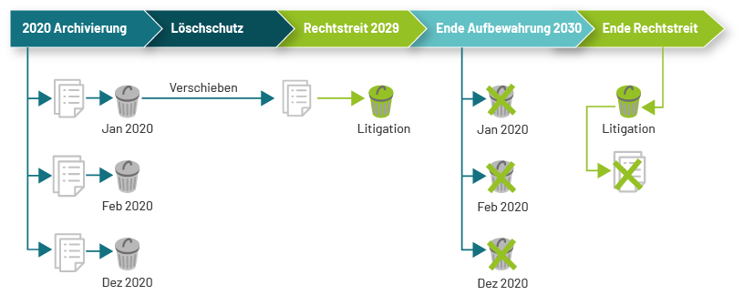
Each storage container in fact corresponds to a separate storage profile that is used to store the contents of that storage container. The rules that are used to map the retention requirements of documents to storage container are defined as rules for the Bucket Organizer Plugin, see Bucketorganizer.
Litigation hold
arveo provides a system property LITIGATION_HOLD that allows you to prolong the retention until you remove the litigation hold property.
| This function requires the ECR_DSGVO_ADMIN privilege. |
Prolongation
You can prolong the retention period but not shorten it. You can use the API call to set the initial retention period if the retention is null. When the retention is prolonged, arveo moves the object to the appropriate storage container.
| This function requires the ECR_DSGVO_ADMIN privilege. |
Erase a document
The arveo delete API will as for all other objects without a retention period delete the respective objects. See also Deletion of objects and Recovery table.
| After the retention period has expired, the function requires the DELETE privilege, but before the retention period has expired, ECR_DSGVO_PRIVILEGED_DELETE privilege is required. |
| This API should not be used for operations like deleting the objects of a certain year. This should be done using the erasure storage container API. |
Erase storage container
If you have used the storage container feature to speed up the deletion of documents at the end of their life cycle, you can delete all documents within a retention period range with one API REST call 'EraseStorageContainer'.
You can either erase the storage container (buckets, folders) controlled by your operating team or with an automated arveo job. You can set up a scheduled job in the arveo integration service. Use the erasure storage container template job and adopt it to your needs. The erasure job will delete all entities of a document type within the given retention period range where litigation hold is not set. The job will write an entry for each erased object in the corresponding audit log table. For more detailed explanation, see the erasure job template example.
| Mass deletion of documents under retention requires the SUPER_USER privilege. |
| Enable the audit log feature for all document types and dependent document types if you need a report of the erased objects. Audit Log |
| Grant the deletion right for your storage containers to arveo. If arveo cannot delete the containers, your operating team is in charge of this task and you must set the option delete rows only. |
Privileges & roles
| Privilege | ECR_DSGVO_ADMIN (Data Protection Manager) | ECR_DSGVO_PRIVILEGED_DELETE (Data Protection Officer) | SUPER_USER (Data Protection Administrator) |
|---|---|---|---|
Prolongation |
yes |
no |
no |
Litigation Hold |
yes |
no |
no |
Delete before retention |
no |
yes |
no |
Mass Delete |
no |
no |
yes |
Examples
Create document with retention and set litigation hold
public void createDocumentWithRetention() throws IOException {
final String TEST_IDENTIFIER = "SetLitigationHold test timestamp in ms=";
final String TEST_DATA = "abcde";
final String TEST_DATA_MIMETYPE = MediaType.APPLICATION_OCTET_STREAM_VALUE;
TypedDocumentServiceClient<DocumentWithRetention> serviceClient =
typeDefinitionServiceClient.getDocumentServiceClient().byClass(DocumentWithRetention.class);
ZonedDateTime now = ZonedDateTime.now(ZoneOffset.UTC);
DocumentWithRetention newDocument = serviceClient.createTypeInstance();
newDocument.setName(TEST_IDENTIFIER + System.currentTimeMillis());
newDocument.setReceiptDate(now);
newDocument.setMimeType(TEST_DATA_MIMETYPE);
newDocument.setRetentionDate(now);
ByteArrayInputStream data = new ByteArrayInputStream(TEST_DATA.getBytes());
Map<String, ContentUpload> content = Map.of("content", new ContentUpload(data));
TypedDocumentClient<DocumentWithRetention> newClient = serviceClient.create(new TypedDocumentInput<>(content, newDocument));
Assert.assertEquals(IOUtils.toByteArray(newClient.readContent("content")), TEST_DATA.getBytes());
DocumentWithRetention loadedDocument = newClient.getEntity();
Assert.assertNotNull(loadedDocument);
Assert.assertTrue(loadedDocument.getName().startsWith(TEST_IDENTIFIER));
Assert.assertEquals(loadedDocument.getMimeType(), TEST_DATA_MIMETYPE);
assertDateEquals(loadedDocument.getReceiptDate(), now);
assertDateEquals(loadedDocument.getRetentionInformation().getRetentionDate(), now);
Assert.assertFalse(loadedDocument.getRetentionInformation().isLitigationHold());
// set LitigationHold = true
newClient.updateLitigationHold(true);
newClient = newClient.reload();
DocumentWithRetention litigationOnDocument = newClient.getEntity();
Assert.assertTrue(litigationOnDocument.getRetentionInformation().isLitigationHold());
// set LitigationHold = false)
newClient.updateLitigationHold(false);
newClient = newClient.reload();
DocumentWithRetention litigationOffDocument = newClient.getEntity();
Assert.assertFalse(litigationOffDocument.getRetentionInformation().isLitigationHold());
}Set retention / prolong retention
public void createDocumentWithoutRetention() throws IOException {
final String TEST_IDENTIFIER = "SetRetention test timestamp in ms=";
final String TEST_DATA = "abcde";
final String TEST_DATA_MIMETYPE = MediaType.APPLICATION_OCTET_STREAM_VALUE;
TypedDocumentServiceClient<DocumentWithRetention> serviceClient =
typeDefinitionServiceClient.getDocumentServiceClient().byClass(DocumentWithRetention.class);
// store document without retention
DocumentWithRetention newDocument = serviceClient.createTypeInstance();
newDocument.setName(TEST_IDENTIFIER + System.currentTimeMillis());
newDocument.setReceiptDate(ZonedDateTime.now());
newDocument.setMimeType(TEST_DATA_MIMETYPE);
ByteArrayInputStream data = new ByteArrayInputStream(TEST_DATA.getBytes());
Map<String, ContentUpload> content = Map.of("content", new ContentUpload(data));
TypedDocumentClient<DocumentWithRetention> newClient = serviceClient.create(new TypedDocumentInput<>(content, newDocument));
Assert.assertEquals(IOUtils.toByteArray(newClient.readContent("content")), TEST_DATA.getBytes());
DocumentWithRetention emptyRetentionDocument = newClient.getEntity();
RetentionInformation retentionInformation = emptyRetentionDocument.getRetentionInformation();
Assert.assertNotNull(retentionInformation);
Assert.assertNull(retentionInformation.getRetentionDate());
Assert.assertFalse(retentionInformation.isLitigationHold());
// set initial retention
ZonedDateTime initialRetentionDate = ZonedDateTime.now();
emptyRetentionDocument.setRetentionDate(initialRetentionDate);
TypedDocumentClient<DocumentWithRetention> initialRetentionClient = newClient.updateAttributes(emptyRetentionDocument);
DocumentWithRetention initialRetentionDocument = initialRetentionClient.getEntity();
assertDateEquals(initialRetentionDocument.getRetentionInformation().getRetentionDate(), initialRetentionDate);
// prolong retention
ZonedDateTime prolongedRetentionDate = ZonedDateTime.of(2050, 1, 1, 0, 0, 0, 0, ZoneId.of("Europe/Berlin"));
initialRetentionDocument.setRetentionDate(prolongedRetentionDate);
TypedDocumentClient<DocumentWithRetention> prolongedRetentionClient = initialRetentionClient.updateAttributes(initialRetentionDocument);
DocumentWithRetention prolongedRetentionDocument = prolongedRetentionClient.getEntity();
assertDateEquals(prolongedRetentionDocument.getRetentionInformation().getRetentionDate(), prolongedRetentionDate);
}Retention cleanup job
The retention cleanup job can be used to remove entities with an expired retention period that are not currently in litigation hold status. The job can be triggered to run in the internal job scheduler of the repository service or in a separate instance of the Job Service. It expects two configuration parameters to be present in the job context of the triggered execution:
-
type-definition-name: The name of the type definition that contains the entities to remove. -
retention-cleanup-retention-end-time: The time at which the rentention period has expired. All entities with a retention period that has expired before the specified time will be removed. The specified time must be in the past.
The following optional properties can be set in the context of the triggered execution:
-
retention-cleanup-purge-content: If true, the job will use the purge method instead of the delete method. The difference is described below. -
retention-cleanup-batch-size: The size of a single batch of entities to process. The default is 1000 and the maximum is 10000. -
retention-cleanup-filter: An optional filter in form of an EQLExpression<Boolean>to apply to the query used to find entities with expired retention period. -
retention-cleanup-duration: An optional maximum duration of the job’s runtime. If the duration is exceeded, the job will stop. The default is null (no limit). The value must be ajava.time.Duration. -
retention-cleanup-max-entity-count: The maximum number of entities to process. If this number is reached, the job will stop. The default is -1 (no limit). -
retention-cleanup-protocol-file: Optional property that can contain a fully qualified path to a file that will contain a list of all deleted entity IDs.
All properties except the type definition name, the retention end time and the protocol file can be configured in the configuration file of the service either globally or for each type definition. See configuration reference for details.
Differences between the purge- and delete-method
The delete method (default) will remove all database entries for the documents. For each removed document-version, an entry is added in a system table containing the version’s ID and the content information of the version. A separate system job will then remove the content elements from the storage. If removing of at least one content element of a version had failed, the entry in the system table will be marked as failed. When all content elements were removed successfully, the entry will be removed.
The purge method on the other hand will first try to remove all content elements of the document versions from the storage, then it will delete the database entries. In case a content element could not be removed from the storage, it is added to the above-mentioned system table. When it could not be removed by the system job, too, it will be marked as failed.
The failed entries in the system table (ecr_purge_content_elements) can then be used to resolve the problem manually.
Triggering the job
Both the Repository Service and the Job Service offer an API that provides methods to create triggers for the job or to trigger a job execution immediately. The following example shows how to use this API to trigger the job and to create a cron trigger that will fire every sunday. The API requires administrator privileges.
EcrSchedulerResourceClient schedulerClient = systemManagementClient.getSchedulerClient();
JobKeyModel jobKey = new JobKeyModel(SystemJobIdentities.ECR_JOBS_GROUP, SystemJobIdentities.RETENTION_CLEANUP);
JobDetailModel jobDetail = new JobDetailModel();
jobDetail.setKey(jobKey);
jobDetail.setJobDataMap(Map.of(
SystemJobDataKeys.TYPE_DEFINITION_NAME, SimpleInvoiceNames.getTypeDefinitionName(),
SystemJobDataKeys.RETENTION_CLEANUP_RETENTION_END_TIME, ZonedDateTime.now(),
SystemJobDataKeys.RETENTION_CLEANUP_PROTOCOL_FILE, getTargetDir() + File.separator + "retention-cleanup-job.log"
));
schedulerClient.triggerJob(jobDetail);EcrSchedulerResourceClient schedulerClient = systemManagementClient.getSchedulerClient();
JobKeyModel jobKey = new JobKeyModel(SystemJobIdentities.ECR_JOBS_GROUP, SystemJobIdentities.RETENTION_CLEANUP);
TriggerKeyModel triggerKey = new TriggerKeyModel(SystemJobIdentities.ECR_JOBS_GROUP, "test-trigger-retention-cleanup");
CronTriggerModel trigger = new CronTriggerModel(triggerKey, jobKey);
trigger.setCronExpression("0 0 0 ? * SUN *"); // every sunday
trigger.setJobDataMap(Map.of(
SystemJobDataKeys.TYPE_DEFINITION_NAME, SimpleInvoiceNames.getTypeDefinitionName(),
SystemJobDataKeys.RETENTION_CLEANUP_RETENTION_END_TIME, ZonedDateTime.now(),
SystemJobDataKeys.RETENTION_CLEANUP_PROTOCOL_FILE, getTargetDir() + File.separator + "retention-cleanup-job.log"
));
schedulerClient.scheduleCronTrigger(trigger);The API provides additional methods to create simple triggers and to unschedule a job.
Another way to trigger the job is using the arveo-shell.
Client SDKs
The client SDKs provide APIs for applications using arveo. SDKs exist for both Java and TypeScript. Client applications should not use the REST API of arveo directly but instead use one of the provided SDKs.
Currently, three different SDKs are available:
-
Java SDK for Spring applications
-
Provides a typed API using the same interfaces as used for the type definitions
-
Spring autoconfiguration for dependency injection
-
-
Java SDK for non-spring applications
-
Provides a generic API
-
-
TypeScript SDK for web applications
-
Provides typed, reactive resource clients plus a higher-level data provider layer
-
-
-
Provides typed resource clients plus a fluent batch builder API
-
-
Go SDK
Java SDK for Spring applications
This guide provides practical examples for the most common tasks when working with the arveo Java SDK for Spring applications. All examples are taken from the integration test suite to ensure they stay up to date.
<dependency>
<groupId>de.eitco.ecr</groupId>
<artifactId>ecr-sdk-http</artifactId>
<version>28.1.0-SNAPSHOT</version>
</dependency>Obtaining SDK clients
The SDK provides several client classes that can be injected using Spring Dependency Injection. The clients are organized roughly in three layers. The first layer is the TypeDefinitionServiceClient, which is the main entry point of the API and operates on the level of all type definitions. The second layer provides service clients for a specific type definition. A ServiceClient operates on the entities contained in the type definition and provides methods like create, get, search, update, and delete. Clients on the third layer are bound to a single entity. EntityClients provide methods to read, update or delete.
TypeDefinitionServiceClient
The TypeDefinitionServiceClient is the main entry point for the API. It can be injected as follows:
@Autowired
protected TypeDefinitionServiceClient typeDefinitionServiceClient;From this client, you can obtain typed service clients for all entity types:
-
getDocumentServiceClient()– for document types -
getContainerServiceClient()– for container types -
getFolderServiceClient()– for folder types -
getRelationServiceClient()– for relation types -
getMetaDataServiceClient()– for metadata types
SearchClient
The SearchClient provides various search endpoints. It can be injected as follows:
@Autowired
private SearchClient searchClient;BatchOperationServiceClient
The BatchOperationServiceClient provides methods for batch create, update, and delete operations. It can be injected as follows:
@Autowired
protected BatchOperationServiceClient batchOperationServiceClient;It’s usage is described in the Batch operations chapter.
Creating typed service clients
Typed service clients are bound to a specific type definition. They can be obtained either by the Java class representing the type or by the type name.
By Java class
The recommended way to obtain a typed service client is by using the Java class that represents the type definition:
TypedDocumentServiceClient<ThirdInterface> serviceClient = typeDefinitionServiceClient
.getDocumentServiceClient().byClass(ThirdInterface.class);By type name
Alternatively, a service client can be obtained by the name of the type definition. This is useful when working with the generic API:
DocumentServiceClient namedFile = typeDefinitionServiceClient.getDocumentServiceClient().byName("named_file");Creating entities
Creating a container
Containers are created using the TypedContainerServiceClient. First, create a type instance, populate its attributes, and then call createEntity():
TypedContainerServiceClient<Person> serviceClient =
typeDefinitionServiceClient.getContainerServiceClient().byClass(Person.class);
String firstName = UUID.randomUUID().toString();
Person person = serviceClient.createTypeInstance();
person.setSurname("Simpson");
person.setProcedureDate(ZonedDateTime.now());
person.setFirstName(firstName);
person.setBreakTime(LocalTime.MIDNIGHT);
person.setBirthday(LocalDate.EPOCH);
serviceClient.createEntity(person);Creating a document
Documents are created using the TypedDocumentServiceClient in the same pattern:
TypedDocumentServiceClient<SingleContentDocument> serviceClient =
typeDefinitionServiceClient.getDocumentServiceClient().byClass(SingleContentDocument.class); (1)
SingleContentDocument document = serviceClient.createTypeInstance();
document.setName("name");
ByteArrayInputStream data = new ByteArrayInputStream("abcde".getBytes()); (2)
Map<String, ContentUpload> content = Map.of("content", new ContentUpload(data)); (3)
TypedDocumentClient<SingleContentDocument> client =
serviceClient.create(new TypedDocumentInput<>(content, document));| 1 | Get the typed service client |
| 2 | Load binary content |
| 3 | Assign binary content to a content element |
For larger files, it is recommended to use the TUS Upload Service, which provides an API for resumable uploads.
Creating a folder
Folders are created using the TypedFolderServiceClient. Note that folders require additional parameters like a name and a parent:
final TypedFolderServiceClient<TypedTargetFolder> serviceClient =
typeDefinitionServiceClient.getFolderServiceClient().byClass(TypedTargetFolder.class);
final TypedTargetFolder typeInstance = serviceClient.createTypeInstance();
typeInstance.setCertificates("certificates");
typeInstance.setIssuer("issuer");
final TypedFolderClient<TypedTargetFolder> client = serviceClient.create(new TypedFolderInput<>(UUID.randomUUID().toString(), null, typeInstance));Creating a relation
Relations connect two entities (parent and child). They are created using the TypedRelationServiceClient:
final TypedRelationServiceClient<TypedContainerContainerRelation> relationServiceClient =
typeDefinitionServiceClient.getRelationServiceClient().byClass(TypedContainerContainerRelation.class);
final TypedContainerContainerRelation relation = relationServiceClient.createTypeInstance();
relation.setNumber(99L);
final TypedRelationClient<TypedContainerContainerRelation> client = relationServiceClient.create(
new TypedRelationInput<>(sourceClient.getIdentifier(), targetClient.getIdentifier(), relation));Creating multiple entities
Multiple entities of the same type can be created in one call using createEntities():
TypedContainerServiceClient<TypedTargetContainer> serviceClient =
typeDefinitionServiceClient.getContainerServiceClient().byClass(TypedTargetContainer.class);
TypedTargetContainer container1 = serviceClient.createTypeInstance();
container1.setCertificates("Certificates1");
container1.setPropertySameNameDifferentType("SameNameDifferentType1");
container1.setIssuer("Issuer1");
TypedTargetContainer container2 = serviceClient.createTypeInstance();
container1.setCertificates("Certificates2");
container1.setPropertySameNameDifferentType("SameNameDifferentType2");
container1.setIssuer("Issuer2");
List<TypedContainerClient<TypedTargetContainer>> clients = serviceClient.createEntities(container1, container2);Read entities
Use the entity identifier with the type-specific service client to load an entity client. The entity client gives access to the typed entity and to the generic representation.
DocumentId identifier = documentClient.getGenericClient().getEntity()
.getIdentifier();
TypedDocumentServiceClient<ThirdInterface> serviceClient = typeDefinitionServiceClient
.getDocumentServiceClient().byClass(ThirdInterface.class);
TypedDocumentClient<ThirdInterface> otherDocumentClient = serviceClient.get(identifier);Searching for entities
The SDK provides a fluent API for building search queries.
Simple field search
The most common search pattern filters entities by a field value. The result can be retrieved as an unpaged list:
List<TypedContainerClient<Person>> list = serviceClient.where()
.entity().field("first_name").equalTo().value(firstName).holds().unpaged();Search for date and time values
Date, time, and date-time attributes can be used as typed values in fluent search queries.
TypedContainerServiceClient<Person> personServiceClient = typeDefinitionServiceClient
.getContainerServiceClient().byClass(Person.class);
Optional<TypedContainerClient<Person>> result = personServiceClient.where()
.entity().field("birthday")
.equalTo().value(LocalDate.of(1959, Month.FEBRUARY, 3))
.and().entity().field("first_name").equalTo().value(name1)
.holds().firstResult();TypedContainerServiceClient<Person> personServiceClient = typeDefinitionServiceClient
.getContainerServiceClient().byClass(Person.class);
Optional<TypedContainerClient<Person>> result = personServiceClient.where()
.entity().field("break_time").equalTo().value(LocalTime.of(12, 0))
.and().entity().field("first_name").equalTo().value(name2)
.holds().firstResult();TypedContainerServiceClient<Person> personServiceClient = typeDefinitionServiceClient
.getContainerServiceClient().byClass(Person.class);
ZonedDateTime zonedDateTime = ZonedDateTime.of(
1997,
Month.AUGUST.getValue(),
29,
12,
0,
0,
0,
ZoneOffset.UTC
);
Optional<TypedContainerClient<Person>> result = personServiceClient.where()
.entity().field("procedure_date").equalTo().value(zonedDateTime)
.and().entity().field("first_name").equalTo().value(name3)
.holds().firstResult();Unique result
When exactly one result is expected, use uniqueResult() which returns an Optional:
Optional<TypedDocumentClient<TypedSourceDocument>> searchedOptional = serviceClient.where().entity()
.field("session_id").equalTo().value(sessionID).holds().uniqueResult();For more details on search operations, see Search language.
Updating entities
Updating a typed entity works through the entity client returned by create, get, or search. The update input contains the new attribute values:
DocumentWithRdbFullText document = serviceClient.createTypeInstance();
document.setDocumentName("some name");
client = client.updateAttributes(document);Updating multiple entities
Multiple entities of the same type can be updated at once using updateAttributesAndReturn(). The entities to update are identified by their IDs:
container1 = serviceClient.createTypeInstance();
container1.setCertificates("Certificates1-updated");
container1.setPropertySameNameDifferentType("SameNameDifferentType1-updated");
container1.setIssuer("Issuer1-updated");
container2 = serviceClient.createTypeInstance();
container2.setCertificates("Certificates2-updated");
container2.setPropertySameNameDifferentType("SameNameDifferentType2-updated");
container2.setIssuer("Issuer2-updated");
ContainerId id1 = clients.get(0).getIdentifier();
ContainerId id2 = clients.get(1).getIdentifier();
clients = serviceClient.updateAttributesAndReturn(LinkedOrderedMap.of(id1, container1, id2, container2));Another way to update multiple entities is using the update method of the service client and a selector that identifies the entities to update:
TypedTargetDocument typeInstance = serviceClient.createTypeInstance();
typeInstance.setCertificates("other certificates");
typeInstance.setIssuer("other issuer");
Expression<Boolean> expression = EcrQueryLanguage.condition()
.entity().field("issuer").equalTo().value(this.issuer).holds();
List<TypedDocumentClient<TypedTargetDocument>> clients =
serviceClient.updateAttributesAndReturn(expression, typeInstance);Create or update (upsert)
The SDK provides methods to perform create-or-update (upsert) operations. The entity to update is identified by an EQL selector. If a matching entity is found, it is updated. If no matching entity is found, a new entity is created:
TypedContainerServiceClient<Person> serviceClient =
typeDefinitionServiceClient.getContainerServiceClient().byClass(Person.class);
LocalDate birthday = LocalDate.of(1995, Month.SEPTEMBER, 16);
Person person = serviceClient.createTypeInstance();
person.setBirthday(birthday);
person.setSurname("Smith");
person.setFirstName("John");
person.setBreakTime(LocalTime.NOON);
person.setProcedureDate(ZonedDateTime.now());
TypedContainerClient<Person> client = serviceClient.createOrUpdate(
EcrQueryLanguage.condition().entity().field(PersonNames.FIRST_NAME).equalTo().value("John").holds(), (1)
person,
Set.of(PersonNames.PROCEDURE_DATE) (2)
);| 1 | The selector that uniquely identifies the entity to update |
| 2 | (Optional) names of attributes that will not be updated in case the entity already exists. All other attributes (excluding read only attributes) will be updated. |
Deleting entities
Entities can be deleted using the deleteAndReturn() method on the service client. This method returns the deleted entities:
final List<TypedTargetContainer> deleted = serviceClient.deleteAndReturn(client.getIdentifier());Service discovery and authentication
Service discovery
The SDK uses service discovery to find an instance of the content repository service. In Kubernetes environments, the Kubernetes service discovery mechanism is used. Alternatively, it is possible to configure the available service instances manually:
spring:
cloud:
discovery:
client:
simple:
instances:
content-repository-service:
- uri: "http://server1:12345"
metadata:
api-version: {api-version}
- uri: "http://server2:12345"
metadata:
api-version: {api-version}
In Kubernetes installations only one instance of the Content Repository Service using the Kubernetes service name must
be configured. Failover and load balancing is performed by Kubernetes. Alternatively, the Kubernetes Discovery Client
can be enabled using spring.cloud.kubernetes.enabled=true. Note that additional RBAC privileges are required to use the
Kubernetes Discovery Client.
|
Authentication
The service uses OAuth2 to authenticate requests. A client application must retrieve a token from the IDP and send it as a bearer token in the Authentication header of each request. The client SDK automatically retrieves tokens from the IDP. It also automatically refreshes expired tokens. To be able to retrieve tokens from the IDP, the SDK must either authenticate using a username and password or using a client secret. Both ways are configured as shown below:
spring:
security:
oauth2:
client:
registration:
keycloak-password:
provider: keycloak
client-id: "your-client-id"
client-secret: "your-client-secret"
authorization-grant-type: "password"
scope: openid
provider:
keycloak:
issuer-uri: "http://localhost:${keycloak.port}/realms/TestRealm"| The client secret can be omitted for public clients. The actual username and password are set in the application code as shown in the getting started guide. |
spring:
security:
oauth2:
client:
registration:
keycloak-secret:
provider: keycloak
client-id: "your-client-id"
client-secret: "your-client-secret"
authorization-grant-type: "client_credentials"
provider:
keycloak:
issuer-uri: "http://localhost:${keycloak.port}/realms/TestRealm"Switching the authentication context
In some cases, an application needs to perform operations with different credentials at runtime. For example, a service
might need to switch from a regular user context to a technical client context to perform administrative operations.
The SDK provides the AuthenticationContextSwitch class for this purpose. It implements AutoCloseable, so it can
be used in a try-with-resources block. When the block is exited, the previous authentication context is automatically
restored.
To use AuthenticationContextSwitch, you first need to define credential beans in your Spring configuration.
For username/password authentication, use RegistrationAwareUsernamePasswordAuthenticationToken:
@Bean
@Qualifier("ecr-user")
public RegistrationAwareUsernamePasswordAuthenticationToken ecrUser() {
return new RegistrationAwareUsernamePasswordAuthenticationToken("ecr-user", "password");
}For client credentials (service-to-service) authentication, use ClientRegistrationAwareClientCredentialsAuthentication:
@Bean
@Qualifier("techclient")
public ClientRegistrationAwareClientCredentialsAuthentication techClientCredentials() {
return new ClientRegistrationAwareClientCredentialsAuthentication("techclient", "keycloak-client-credentials");
}The credential beans can then be injected into your components using @Autowired and @Qualifier:
@Autowired
@Qualifier("ecr-user")
protected RegistrationAwareUsernamePasswordAuthenticationToken ecrUserCredentials;@Autowired
@Qualifier("techclient")
protected ClientRegistrationAwareClientCredentialsAuthentication techClientCredentials;Use AuthenticationContextSwitch in a try-with-resources block. All SDK calls within the block will be executed
with the specified credentials. When the block is exited, the original authentication context is restored:
try (AuthenticationContextSwitch ignored = new AuthenticationContextSwitch(techClientCredentials)) {
UserId myId = userIdServiceClient.getMyId();Using the SDK in a non-web application
The SDK can be used both in applications that provide web functionality like REST endpoints and in applications that do not contain any web functionality. For non-web applications, some differences need to be considered.
Dependencies
By default, the SDK contains an OAuth2 client implementation that relies on some web-related spring beans. For non-web applications, a different OAuth2 client implementation is available. The default implementation needs to be excluded from the SDK dependency and replaced by the non-web implementation as shown in the following example:
<dependency>
<groupId>de.eitco.ecr</groupId>
<artifactId>ecr-sdk-http</artifactId>
<version>${ecr.version}</version>
<exclusions>
<exclusion>
<groupId>de.eitco.commons</groupId>
<artifactId>cmn-spring-security5-oauth2-client</artifactId>
</exclusion>
</exclusions>
</dependency>
<dependency>
<groupId>de.eitco.commons</groupId>
<artifactId>cmn-spring-security5-oauth2-client-non-web</artifactId>
<version>${commons-oauth2-version}</version>
</dependency>The current version of the OAuth2 client can be found in the Nexus.
Application initialization
The SDK contains some dependencies that cause Spring to initialize some web functionality automatically. This can cause
problems like missing spring security configuration errors. Non-web applications can simply turn off all of Springs
web functionality by using the SpringApplicationBuilder class as shown in the following example:
@SpringBootApplication
public class MyApplication {
public static void main(String[] args) {
new SpringApplicationBuilder(MyApplication.class)
.web(WebApplicationType.NONE)
.run(args);
}
}Batch Operations
The SDK provides various methods for batch operations. For example, several objects can be created or updated at once.
Create, update or delete multiple objects of the same type
All service clients provide methods for creating, updating and deleting multiple objects. Since a service client is bound to a specific type definition, only objects of the same type can be created, updated or deleted in this way. The objects to be updated or deleted are identified by any selector. When updating, methods are available that return the updated objects and methods that return only the number of updated objects. Especially if a large number of objects are updated at once, only the latter methods should be used. With these methods, the objects can only be updated in the same way. If the objects are to be customised, the methods from the BatchOperationServiceClient (see below) must be used.
Create or update several objects of different types
The BatchOperationServiceClient class provides methods to create or update multiple objects of different types.
Create several interdependent objects
To create multiple objects of different types, special BatchCreateInput input objects are used that bundle the type of the object and its properties. The order in which the objects are created corresponds to the order in which the input objects are passed. Each of these input objects contains a virtual ID that identifies it within the batch operation. In this way, for example, a relation as well as its source and target can be created in a batch operation. The relation only has to be created with the virtual IDs of source and target.
If the relation between the objects consists not only of the ID, but also of a foreign key to any attribute, a reference to the corresponding attribute of the referenced object must be given to the dependent object. For this purpose, the class BatchAttributeReference is available, which bundles the name of the foreign key attribute, the referenced attribute and the virtual ID of the other object in the batch operation. Code examples can be found in the class de.eitco.ecr.system.test.batch.BatchCreationIT.
Update multiple objects of different types
The BatchOperationServiceClient also provides methods to update several different objects of different types in a batch operation. A separate input object is passed for each object to be updated, which contains the ID of the object and the properties to be updated. This means that individual changes can also be made to each object with these methods. The BatchUpdateUtility class provides auxiliary methods with which the respective input objects can be created. Code examples can be found in the class de.eitco.ecr.system.test.batch.BatchUpdateIT.
Automatic update in case of collision
The BatchCreateInput objects used to create various types make it possible to automatically update the existing object in the event of a collision. To do this, the BatchCreateInput only has to be made aware of the field on which the collision could occur:
TypedContainerBatchCreateInput<Person> containerBatchCreateInput =
new TypedContainerBatchCreateInput<>(new TypedContainerInput<>(person), List.of());
containerBatchCreateInput.setCollisionCheckAttribute("first_name");In the above example, a container is to be created in a batch where a collision could possibly occur on the attribute
first_name.
The attribute that is to be used to detect the collisions must be provided with a unique constraint.
Create or update (upsert) operations
The SDK provides methods to perform create or update (upsert) operations on entities.The entity to update, if it should exist, is identified by an EQL selector. If a matching entity is found, it is updated using the provided data. If no matching entity is found, the provided data is used to create a new entity. The selector must match exactly one or zero existing entities. If it matches more than one entity, an exception is thrown. The following example shows how to perform an upsert operation.
TypedContainerServiceClient<Person> serviceClient =
typeDefinitionServiceClient.getContainerServiceClient().byClass(Person.class);
LocalDate birthday = LocalDate.of(1995, Month.SEPTEMBER, 16);
Person person = serviceClient.createTypeInstance();
person.setBirthday(birthday);
person.setSurname("Smith");
person.setFirstName("John");
person.setBreakTime(LocalTime.NOON);
person.setProcedureDate(ZonedDateTime.now());
TypedContainerClient<Person> client = serviceClient.createOrUpdate(
EcrQueryLanguage.condition().entity().field(PersonNames.FIRST_NAME).equalTo().value("John").holds(), (1)
person,
Set.of(PersonNames.PROCEDURE_DATE) (2)
);| 1 | The selector that uniquely identifies the entity to update |
| 2 | (Optional) names of attributes that will not be updated in case the entity already exists. All other attributes (excluding read only attributes) will be updated. |
The documentation for foreign keys contains an example for how to use the batch operations to perform an upsert and a create operation in one transaction.
Generic batch operations
The generic batch operation API can be used to perform different operations like create, update or delete in one transaction. The batch operations use the same input types as the other batch functions described above, which makes it possible to use the result of one operation in another following operation. The following operation types are available:
Read operations
-
TypedContainerBatchReadOperation -
TypedDocumentBatchReadOperation -
TypedFolderBatchReadOperation -
TypedMetaDataBatchReadOperation -
TypedRelationDataBatchReadOperation
The purpose of read operations is to provide input data for other operations. For example, a read operation could be used to read an entity of which only the ID is known, and then use the entity’s attribute values as input for a create operation. When the entity cannot be read, the entire batch of operations fails and the transaction is rolled back.
Delete operations
-
TypedContainerBatchDeleteOperation -
TypedDocumentBatchDeleteOperation -
TypedFolderBatchDeleteOperation -
TypedMetaDataBatchDeleteOperation -
TypedRelationBatchDeleteOperation
Delete operations are used to delete a single entity. Unlike the other operations, it is not possible to reference a delete operation. When the entity cannot be deleted, the entire batch of operations fails and the transaction is rolled back.
Update operations
-
TypedContainerBatchUpdateOperation -
TypedDocumentBatchUpdateOperation -
TypedFolderBatchUpdateOperation -
TypedMetaDataBatchUpdateOperation -
TypedRelationBatchUpdateOperation
Update operations are used to update a single entity. When the entity cannot be updated, the entire batch of operations fails and the transaction is rolled back.
Create or update operations
-
TypedContainerBatchCreateOrUpdateOperation -
TypedDocumentBatchCreateOrUpdateOperation -
TypedFolderBatchCreateOrUpdateOperation -
TypedMetaDataBatchCreateOrUpdateOperation -
TypedRelationBatchCreateOrUpdateOperation
Create or update operations perform an upsert as described in Create or update (upsert) operations. When the operation cannot update or create the entity, the entire batch of operations fails and the transaction is rolled back.
Create operations
-
TypedContainerBatchCreateOperation -
TypedDocumentBatchCreateOperation -
TypedFolderBatchCreateOperation -
TypedMetaDataBatchCreateOperation -
TypedRelationBatchCreateOperation
Create operations are used to create a new entity. When the entity cannot be created, the entire batch of operations fails and the transaction is rolled back.
Examples
Batch with attribute references
The first example implements a solution for the following problem: An invoice was archived with a relation to an invalid customer. The customer must be replaced with a new customer and the reference in the invoice must be updated.
Customer customer = customerServiceClient.createTypeInstance();
customer.setName(UUID.randomUUID().toString());
TypedDocumentBatchCreateOperation<Customer> createCustomerOperation = (1)
new TypedDocumentBatchCreateOperation<>(customer);
Invoice invoice = invoiceServiceClient.createTypeInstance();
BatchAttributeReference reference = new BatchAttributeReference( (2)
InvoiceNames.CUSTOMER_NUMBER,
SystemFieldList.GeneralSystemField.Id.INSTANCE.getName(),
createCustomerOperation.getVirtualId().getUuid()
);
TypedDocumentBatchUpdateInput<Invoice> invoiceInput =
new TypedDocumentBatchUpdateInput<>(invoiceId, new TypedDocumentInput<>(invoice), List.of(reference));
TypedDocumentBatchUpdateOperation<Invoice> updateInvoiceOperation = (3)
new TypedDocumentBatchUpdateOperation<>(invoiceInput);
TypedDocumentBatchDeleteOperation deleteCustomerOperation = new TypedDocumentBatchDeleteOperation(customerId); (4)
List<EcrId> ids = batchOperationServiceClient.performTypedBatchOperations( (5)
createCustomerOperation, updateInvoiceOperation, deleteCustomerOperation);| 1 | The operation to create the new customer |
| 2 | A reference to the ID of the new customer to be used for the customer_number field of the updated invoice |
| 3 | The operation to update the existing invoice |
| 4 | The operation to delete the invalid customer |
| 5 | An injected instance of de.eitco.ecr.sdk.BatchOperationServiceClient |
The second example shows how to use a read operation.
TypedDocumentBatchReadOperation readCustomerOperation = new TypedDocumentBatchReadOperation(customerId);
Invoice invoice = invoiceServiceClient.createTypeInstance();
invoice.setCustomerNumber(customerId.getIdentifier());
BatchAttributeReference attributeReference = new BatchAttributeReference( (1)
InvoiceNames.CUSTOMER_NAME,
CustomerNames.NAME,
readCustomerOperation.getVirtualId().getUuid()
);
TypedDocumentBatchCreateInput<Invoice> invoiceInput =
new TypedDocumentBatchCreateInput<>(new TypedDocumentInput<>(invoice), List.of(attributeReference));
TypedDocumentBatchCreateOperation<Invoice> createInvoiceOperation =
new TypedDocumentBatchCreateOperation<>(invoiceInput);
List<EcrId> ids = batchOperationServiceClient.performTypedBatchOperations(readCustomerOperation, createInvoiceOperation); (2)| 1 | A reference to the name attribute of the customer read by the read operation used for the customer_name attribute of the invoice |
| 2 | An injected instance of de.eitco.ecr.sdk.BatchOperationServiceClient |
Batch with virtual IDs
When referencing IDs of other entities created, read or updated in a batch, virtual IDs can be used. Virtual IDs represent identifiers that are created or retrieved within a batch.
-
VirtualContainerId: References the ID of a container -
VirtualDocumentId: References the ID of a document -
VirtualFolderId: References the ID of a folder -
VirtualRelationId: References the ID of a relation
To reference a specific version ID in a batch, a VersionIdReference can be used. VersionIdReferences use the UUID of
the respective batch operation and the version number to reference a specific entity version.
In the following example, a simple file consisting of a container holding the file’s attributes and a document linked to the file by a virtual ID is created.
TypedContainerServiceClient<EmployeeFile> containerServiceClient =
typeDefinitionServiceClient.getContainerServiceClient().byClass(EmployeeFile.class);
TypedDocumentServiceClient<EmployeeDocument> documentServiceClient =
typeDefinitionServiceClient.getDocumentServiceClient().byClass(EmployeeDocument.class);
EmployeeFile employeeFile = containerServiceClient.createTypeInstance(); (1)
employeeFile.setBirthday(LocalDate.of(1980, 1, 1));
employeeFile.setName(UUIDGenerator.randomUUID().toString());
TypedContainerBatchCreateOperation<EmployeeFile> fileOperation =
new TypedContainerBatchCreateOperation<>(employeeFile);
ContainerId employeeFileId = fileOperation.getVirtualId(); (2)
EmployeeDocument document = documentServiceClient.createTypeInstance(); (3)
document.setEmployeeId(employeeFileId);
TypedDocumentBatchCreateOperation<EmployeeDocument> documentOperation =
new TypedDocumentBatchCreateOperation<>(new TypedDocumentBatchCreateInput<>(
new TypedDocumentInput<>(
Map.of(ContentElement.CONTENT, new ContentUpload("my content".getBytes(StandardCharsets.UTF_8))),
document
)));
List<EcrId> ids = batchOperationServiceClient.performTypedBatchOperations(fileOperation, documentOperation); (4)| 1 | Create and populate the contained instance representing the file |
| 2 | Get the virtual container ID for the file |
| 3 | Create and populate the document |
| 4 | Perform the batch operations |
Fluent Batch API
The SDK provides a fluent builder API as an alternative to constructing TypedBatch*Operation objects manually.
The entry point is BatchOperationServiceClient#startBatch(), which returns a BatchBuilder.
Each operation is configured step by step through a chain of method calls and the whole batch is submitted
atomically by calling commit() at the end of the chain.
Starting a batch
A batch is started by calling startBatch() on a BatchOperationServiceClient instance.
After adding all desired operations with the builder methods described below, commit() executes
them in a single transaction and returns the IDs of all affected entities in insertion order.
To add more than one operation, call andThen() after completing an operation to return to the
BatchBuilder and add the next one.
Creating entities
The fluent API supports creating containers, documents, folders, meta entities and relations.
All create operations are started with .create(), followed by the entity type selector.
List<EcrId> ids = batchOperationServiceClient.startBatch()
.create()
.container()
.of(TypedSourceContainer.class)
.setAttributes(c -> {
c.setNumber(42L);
c.setString("fluent-api-test");
})
.withUpdateCounter(1)
.commit();For folders, the location within the folder hierarchy must be specified after the attributes.
Use inRootFolder() to place the new folder at the root level, followed by named() to set
the folder name.
List<EcrId> ids = batchOperationServiceClient.startBatch()
.create()
.folder()
.of(TypedTargetFolder.class)
.setAttributes(f -> f.setIssuer("fluent-folder-issuer"))
.withUpdateCounter(1)
.inRootFolder()
.named(UUID.randomUUID().toString())
.commit();Creating multiple interdependent entities in one batch
Multiple create operations can be combined in one batch. When one entity must reference another
entity that is created in the same batch, a virtual ID is passed to the entity type selector
(e.g. .container(sourceVid)). Later operations can use that virtual ID to establish the
reference before any entity has been persisted.
VirtualContainerId sourceVid = new VirtualContainerId(); (1)
VirtualContainerId targetVid = new VirtualContainerId(); (2)
List<EcrId> ids = batchOperationServiceClient.startBatch()
.create()
.container(sourceVid) (3)
.of(TypedSourceContainer.class)
.setAttributes(c -> {
c.setNumber(1L);
c.setString("source");
})
.withUpdateCounter(1)
.andThen() (4)
.create()
.container(targetVid)
.of(TypedTargetContainer.class)
.setAttributes(c -> c.setCertificates("target"))
.withUpdateCounter(1)
.andThen()
.create()
.relation()
.of(TypedContainerContainerRelation.class)
.setAttributes(r -> {
r.setNumber(0L);
r.setString("relation");
})
.withUpdateCounter(1)
.from(sourceVid) (5)
.to(targetVid)
.commit(); (6)| 1 | Virtual ID for the source container — used later to reference it from the relation |
| 2 | Virtual ID for the target container — used later to reference it from the relation |
| 3 | The source container is registered under sourceVid so subsequent operations can reference its ID |
| 4 | andThen() returns to the BatchBuilder to add the next operation |
| 5 | from() and to() reference the virtual IDs of the containers created earlier in the same batch |
| 6 | commit() submits all three operations as a single atomic transaction and returns the created IDs |
Upsert semantics
By default a create operation fails if an entity already exists. To perform an upsert instead,
call orUpdate() or orOverride() directly after create() and before selecting the entity type.
-
orUpdate()— if a matching entity exists, update it (attributes not in the input are left unchanged). -
orOverride()— if a matching entity exists, replace it entirely with the input data.
Both methods accept a selector condition that identifies the potentially existing entity, followed
by an optional call to ignoringAttributes() to exclude certain attributes from the update.
Updating and deleting entities
Use .update() or .overwrite() to modify existing entities. .update() merges the supplied
values into the existing entity, leaving unspecified attributes unchanged. .overwrite() replaces
the entity entirely.
Use .delete() to remove an entity by its ID:
batchOperationServiceClient.startBatch()
.delete()
.byId(containerId)
.commit();Bulk deletes by type and condition are also supported via .delete().from(TypeClass.class).where().limit(n).
Precondition checks
expect() adds a precondition assertion to the batch. The batch fails atomically if the
condition is not satisfied at execution time, preventing the write operations from running.
-
noneExists()— fails if any matching entity exists -
anyExists()— fails if no matching entity exists
Both are followed by .of(TypeClass.class) to select the type to search and then a filter
condition.
batchOperationServiceClient.startBatch()
.expect()
.noneExists()
.of(MyContainer.class)
.entity().field("name").equalTo().value("duplicate").holds()
.andThen()
.create()
.container()
.of(MyContainer.class)
.setAttributes(c -> c.setName("duplicate"))
.withUpdateCounter(1)
.commit();Java SDK for non-Spring applications
The SDK for non-Spring Java applications provides a generic API for -arveo_. The SDK uses the Apache http client.
<dependency>
<groupId>de.eitco.ecr</groupId>
<artifactId>ecr-sdk-http-apache</artifactId>
<version>28.1.0-SNAPSHOT</version>
</dependency>Usage
The SDK provides a factory that is used to obtain client instances. The clients are constructed using the URL of the content repository service instance:
private final ContentRepositoryResources.Factory factory =
ContentRepositoryResources.Factory.load(); (1)
private final ContentRepositoryResources client =
factory.getClient("http://127.0.0.1:" + System.getProperty("ecr.service.port")); (2)| 1 | Create an instance of the client factory |
| 2 | Obtain a client instance for the given URL |
OAuth2 is used to authenticate requests to the arveo services. The SDK supports the client-credentials and the resource-owner-password flow. The following example shows how to perform an authenticated request using the resource-owner-password flow:
PasswordFlowInput passwordFlowInput = new PasswordFlowInput( (1)
"ecr-admin", (2)
"password", (3)
Objects.requireNonNull(Configuration.Current.get().getString("oauth2.client.test.client-id", null)), (4)
Configuration.Current.get().getString("oauth2.client.test.client-secret", null), (5)
null, (6)
Objects.requireNonNull(Configuration.Current.get().getString("oauth2.client.test.issuer-uri", null)) (7)
);
try (Authentication.Switch ignored = Authentication.change(passwordFlowInput)) { (8)
Map<TypeDefinitionId, TypeDefinition> allDefinitions = client.getTypeDefinitionResourceClient().getAllDefinitions();
Assert.assertTrue(allDefinitions.size() > 3);
}| 1 | A PasswordFlowInput is used for the resource-owner-password flow |
| 2 | Username |
| 3 | Password |
| 4 | The client ID |
| 5 | The client secret (can be null for public clients) |
| 6 | An optional collection of scopes or null if not required |
| 7 | The issuer URI used to retrieve information about endpoints and token settings using the .well-known endpoint of the IDP |
| 8 | Sets the thread’s authentication and clears it after the try-with-resources block |
To authenticate requests using the client-credentials flow, use a ClientCredentialsFlowInput instead:
ClientCredentialsFlowInput clientCredentialsFlowInput = new ClientCredentialsFlowInput(
"your-client-id", (1)
"your-client-secret", (2)
null, (3)
"your-issuer-uri" (4)
);| 1 | The client ID |
| 2 | The client secret |
| 3 | An optional collection of scopes or null if not required |
| 4 | The issuer URI used to retrieve information about endpoints and token settings using the .well-known endpoint of the IDP |
The obtained client instance can then be used to access the arveo service. The following example shows how to upload a new document to the archive:
ContentUpload upload = new ContentUpload(inputStream); (1)
DocumentInput input = new DocumentInput(
Map.of("a_string", "the value of the a_string attribute"), (2)
Map.of(ContentElement.CONTENT, upload) (3)
);
DocumentResourceClient documentResourceClient = client.getDocumentResourceClient();
TypeDefinitionName typeDefinitionName = new TypeDefinitionName("basic_document"); (4)
List<Document> newDocuments = documentResourceClient.newDocuments( (5)
typeDefinitionName,
new CreateDocumentsInput(List.of(input))
);
InputStream stream = documentResourceClient.readContent(typeDefinitionName, newDocuments.getFirst().getIdentifier(), ContentElement.CONTENT); (6)| 1 | The actual content is read from an InputStream |
| 2 | Attributes of the document are defined as a Map with string keys and object values |
| 3 | The document will contain a single content element with the default name |
| 4 | The type definition is selected by name |
| 5 | Upload the document |
| 6 | Use the client to access the previously uploaded document |
The same client can also be used to search for existing documents as shown in the following example:
SearchRequest searchRequest = SearchRequest
.from(0, 100) (1)
.ascendingBy("id") (2)
.matching(
Eql.condition() (3)
.contextReference(BasicDocumentNames.CUSTOMER_NAME) (4)
.equalTo().value("eitco") (5)
.holds() (6)
);
Page<Document> page = documentResourceClient.find(typeDefinitionName, searchRequest);| 1 | Defines offset and maximum number of results for paging |
| 2 | Defines the ordering for paging. The ID system field can be used for ordering as it’s value is created from a sequence. |
| 3 | Opens a builder for the condition |
| 4 | Defines the alias and field name ("entity"."customer_name") of the condition. The class BasicDocumentNames is generated
automatically for the type definition BasicDocument and contains the names of all fields. |
| 5 | Defines the value to search for |
| 6 | Finishes the condition builder |
More information and examples for conditions can be found in the EQL documentation.
The EcrQueryLanguage class used in the example above is an extension of the EQL that adds some specifics for the
Content Repository Service.
TypeScript SDK for web applications
The TypeScript SDK provides a typed, reactive client API for arveo targeting browser and Angular applications. Like the other client SDKs, web applications should not call the REST API of arveo directly but use the client classes provided by this SDK.
The whole API is reactive: every operation returns an RxJS Observable that emits its
result once the underlying HTTP request completes. The SDK integrates with Angular’s HttpClient and with the
angular-oauth2-oidc library for authentication.
All examples in this guide are taken from, or directly derived from, the TypeScript integration test suite under
test/system-test/src/test/ts so that they stay aligned with the actual API.
Anatomy of the SDK
The SDK is shipped as two complementary npm packages:
@eitco/ecr-client-
The generated resource clients. For every service of arveo there is a resource client interface — for example
DocumentResourceClient,ContainerDataResourceClient,FolderDataResourceClient,RelationResourceClient,MetaDataResourceClient,TypeDefinitionResourceClient,SearchResourceClientandBatchOperationResourceClient. Each interface has a matching…Implementationclass that performs the actual HTTP calls. The generated model and identifier classes (such asDocument,Container,DocumentId,ContentUploadorTypeDefinitionName) are exported from the same package. @eitco/ecr-data-provider-
A hand-written, higher-level convenience layer. A data provider maps between the server data model and a plain, strongly typed client interface, and exposes simple
create/read/update/delete/search/getContentoperations. The base classesEcrBaseDataProvider,VersionedEntityDataProviderandEcrDocumentDataProvider(together with the interfacesEcrBaseModelInterface,VersionedEntityModelInterfaceandEcrDocumentModelInterface) are meant to be subclassed for each concrete type.
Both packages build on the low-level HTTP plumbing from the ASDL runtime libraries
@eitco/asdl-library-http (the transport-agnostic HttpClient) and @eitco/asdl-library-angular-http
(the Angular HttpClient-based request executor). The shared building blocks @eitco/ecc-common,
the EQL query language @eitco/eql and @eitco/commons-lang are pulled in as dependencies.
package.json)"dependencies": {
"@eitco/ecr-client": "28.1.0-SNAPSHOT",
"@eitco/ecr-data-provider": "28.1.0-SNAPSHOT",
"@eitco/asdl-library-http": "...",
"@eitco/asdl-library-angular-http": "..."
}Authentication
To authenticate against arveo, an OAuth2 access token is obtained from the identity provider
(Keycloak in the test environment) and sent as a bearer token with every request. In an Angular application this
is wired up with angular-oauth2-oidc: the OAuthService is configured with an AuthConfig, and the
DefaultOAuthInterceptor automatically attaches the token to outgoing requests.
The test suite configures the client and identity provider as follows:
AuthConfig)this.authConfig = {
// The SPA's id. The SPA is registerd with this id at the auth-server
clientId: "testclient",
dummyClientSecret: "yx7n6di3kXZ4p3Kj2oY1Js9NW7hbOCjh",
// set the scope for the permissions the client should request
// The first three are defined by OIDC. The 4th is a usecase-specific one
scope: "openid",
showDebugInformation: false,
oidc: false,
useHttpBasicAuth: true,
requireHttps: false,
};The token itself is fetched via the OAuth2 resource-owner-password flow:
console.log("server auth");
this.authConfig.tokenEndpoint = constants.keycloakUrl + constants.tokenEndpoint;
this.authConfig.userinfoEndpoint = constants.keycloakUrl + constants.userinfoEndpoint;
this.oAuthService.configure(this.authConfig); (1)
this.logout();
return from(this.oAuthService.fetchTokenUsingPasswordFlow(constants.users.ecrAdmin.name, constants.users.ecrAdmin.password, headers)).pipe( (2)
tap({
next: () => console.log('### LOGIN SUCCESSFULL'),
error: () => console.log('### LOGIN NOT SUCCESSFULL')
}
)
)| 1 | Point the configured OAuthService at the token and user-info endpoints of the IDP. |
| 2 | Request a token for the given user credentials. The returned Observable completes once the token has been
stored, after which subsequent requests are authenticated by the interceptor. |
|
The resource-owner-password flow is convenient for integration tests, but interactive web applications should
prefer the authorization-code flow with PKCE. Either way, the SDK does not deal with authentication itself — it
only relies on the access token being present on the HTTP request, which the |
Creating the resource clients
A resource client is built from an Angular HttpClient in three steps: the HttpClient is wrapped in an
Angular17HttpRequestExecutorImpl, which is wrapped in the ASDL HttpClient, which is finally passed — together
with the service URL — to the …Implementation constructor of each resource client.
The test suite centralizes this in a small helper that constructs every available resource client from a single executor:
HttpClientthis.httpExecutor = new Angular17HttpRequestExecutorImpl(this.http)
this.asdlHttp = new AsdlHttpClient(this.httpExecutor)
this._batchOperationResourceClient = new BatchOperationResourceClientImplementation(this.asdlHttp, constants.resourcePath)
this._containerDataResourceClient = new ContainerDataResourceClientImplementation(this.asdlHttp, constants.resourcePath)
this._containerStructureResourceClient = new ContainerStructureResourceClientImplementation(this.asdlHttp, constants.resourcePath)
this._containerVersionStructureResourceClient = new ContainerVersionStructureResourceClientImplementation(this.asdlHttp, constants.resourcePath)
this._documentResourceClient = new DocumentResourceClientImplementation(this.asdlHttp, constants.resourcePath)
this._documentStructureResourceClient = new DocumentStructureResourceClientImplementation(this.asdlHttp, constants.resourcePath)
this._documentVersionStructureClient = new DocumentVersionStructureResourceClientImplementation(this.asdlHttp, constants.resourcePath)
this._folderDataResourceClient = new FolderDataResourceClientImplementation(this.asdlHttp, constants.resourcePath)
this._folderStructureResourceClient = new FolderStructureResourceClientImplementation(this.asdlHttp, constants.resourcePath)
this._folderVersionStructureClient = new FolderVersionStructureResourceClientImplementation(this.asdlHttp, constants.resourcePath)
this._metaDataResourceClient = new MetaDataResourceClientImplementation(this.asdlHttp, constants.resourcePath)
this._metaEntityStructureResourceClient = new MetaEntityStructureResourceClientImplementation(this.asdlHttp, constants.resourcePath)
this._relationResourceClient = new RelationResourceClientImplementation(this.asdlHttp, constants.resourcePath)
this._repositoryServiceInfoResourceClient = new RepositoryServiceInfoResourceClientImplementation(this.asdlHttp, constants.resourcePath)
this._searchResourceClient = new SearchResourceClientImplementation(this.asdlHttp, constants.resourcePath)
this._systemManagementResourceClient = new SystemManagementResourceClientImplementation(this.asdlHttp, constants.resourcePath)
this._typeDefinitionResourceClient = new TypeDefinitionResourceClientImplementation(this.asdlHttp, constants.resourcePath)
this._userIdResourceClient = new UserIdResourceClientImplementation(this.asdlHttp, constants.resourcePath)The first two lines set up the shared transport; every resource client is then created with the same
AsdlHttpClient and the base service URL (http://localhost:39001 in the tests). The list above also serves as
an overview of the resource clients the SDK provides.
Selecting a type definition
Almost every operation is scoped to a type definition, which is identified by its name through the
TypeDefinitionName class:
const typeDefinition = new TypeDefinitionName({id: 'typed_source_document'});The type definitions available in a repository can be listed with the TypeDefinitionResourceClient. It returns
the definitions keyed by their id and offers lookups by id and by name:
helper.typeDefinitionResourceClient.getAllDefinitions()
.pipe(
tap((result: Map<TypeDefinitionId, TypeDefinition>) => {
expect(result).toBeDefined();
expectedTypeDefinition = Array.from(result)[0][1];
}),return helper.typeDefinitionResourceClient.getDefinitionByName(expectedTypeDefinition.getAlias())Working with containers
Containers are metadata-only entities. They are created with the ContainerDataResourceClient by passing the
type definition and a CreateContainersInput that holds one ContainerInput per container. Attributes are
supplied as a Map<string, any> keyed by the field name:
const containersInput = new CreateContainersInput({
inputs: [
new ContainerInput({attributes: new Map<string, any>(), comment: 'arbitrary-comment', variables: null}),
new ContainerInput({attributes: new Map<string, any>(), variables: null}),
]
});
helper.containerDataResourceClient.newContainers(defaultTypeDefinition, containersInput)The created entities are emitted with their server-assigned identity. The most important members of an entity are
its identifier (getIdentifier()), its attribute map (getAttributes()) and its version and modification
metadata (getVersionInformation(), getModificationInformation()). A container can be loaded again by its
identifier:
return helper.containerDataResourceClient.read(defaultTypeDefinition, resultA[0].getIdentifier())The ContainerDataResourceClient additionally offers update / updateAndReturn,
overwrite / overwriteAndReturn, delete, getVersions, readVersion and updateLitigationHold, all scoped
to a type definition and selected through an EQL expression (see Searching for entities).
Working with documents
Documents extend the attribute model of containers with binary content. Content is supplied as a
Map<string, ContentUpload> keyed by the content element name declared in the type definition. A ContentUpload
carries the file name and the payload, which can be a Blob (binary) or a base64-encoded string:
defaultTypeDefinitionName = new TypeDefinitionName({id: 'typed_source_document'});
contentMap.set('content', new ContentUpload({
data: new Blob(['<html><head><title>THE TITLE</title></head><body>some content</body></html>']),
filename: 'demo1.pdf',
}));Documents are then created with newDocuments, passing a CreateDocumentsInput with one DocumentInput per
document. newDocuments returns an array of the created Document entities:
helper.documentResourceClient.newDocuments(defaultTypeDefinitionName, new CreateDocumentsInput({ inputs: [new DocumentInput({
attributes: new Map<string, any>(),
content: contentMap,
contentReferences,
variables: null
})]})).pipe(map((documents: Document[]) => { return documents[0];}))|
For base64-encoded payloads, use |
A document is loaded by its identifier with read:
return helper.documentResourceClient.read(defaultTypeDefinitionName, result.getIdentifier())The binary content of a content element is streamed back as a Blob with readContent, identified by the
content element name. The example below converts the Blob to text with a FileReader:
return helper.documentResourceClient.readContent(defaultTypeDefinitionName, result.getIdentifier(), documentName)
.pipe(
tap((result: Blob) => {
expect(result).toBeDefined();
const reader = new FileReader();
reader.onload = () => {
const text = reader.result;
expect(text).toBe(contentSample);
done();
};
reader.onerror = () => {
done.fail('error on readfile');
};
reader.readAsText(result);
}))The DocumentResourceClient provides a rich set of related operations, including:
-
readContentOfVersion,readContentRanged— content of a specific version and partial (range) downloads. -
getVersions,readVersion,update,overwrite— version handling. -
moveToRecycleBin/restoreFromRecycleBin(and their…AndReturn/…WithTimeoutvariants),purgeDocuments. -
moveDocumentToFolder,removeDocumentFromFolder,getParentFolder— folder placement. -
getAnnotations,updateAnnotations— annotation management.
All versions of a document are retrieved as a Page<Document> with getVersions, given the document id and a
page size and offset:
return helper.documentResourceClient.getVersions(defaultTypeDefinitionName, response.getIdentifier(), 10, 0)Annotations
Annotations are attached to a content element of a document version with updateAnnotations. The
UpdateAnnotationsInput carries the annotations to add or update (for example a FreeTextInput with a
Position, a Text and a Color) and the ids of annotations to delete:
return helper.documentResourceClient.updateAnnotations(
defaultTypeDefinitionName,
new UpdateAnnotationsInput({
contentElement,
deletedAnnotationIds: new Set(),
documentId: e[0].getIdentifier(),
newAndUpdatedAnnotations: new Set([
new FreeTextInput({
customProperties: new Map<string, any>([
[customPropertyKey, customPropertyValue],
]),
id: annotationId,
position: new Position({
height: positionHeight,
page: positionPage,
width: positionWidth,
x: positionX,
y: positionY,
}),
text: new Text({
color: new Color({
alpha: colorAlpha,
blue: colorBlue,
green: colorGreen,
red: colorRed,
}),
value: textValue,
}),
}),
]),
versionId: e[0].getVersionInformation().getVersionId(),
}),
)Existing annotations are read back with getAnnotations, which returns a Map<string, Annotation> keyed by the
annotation id.
Searching for entities
Searches are issued either through the data resource of a specific entity type
(ContainerDataResourceClient.find, DocumentResourceClient.find, …) or through the SearchResourceClient for
generic and cross-type searches. They accept a SearchRequest and emit a Page<T> of results.
The filter condition of a search is an EQL expression built from the @eitco/eql package. The simplest condition
is an Equality between a ContextReference (a field) and a Value; the SearchRequest combines the filter
with a PageDefinition (offset, size and ordering) and SearchOptions.
find on the document resourceconst equality = new Equality({
left: new ContextReference({reference: ['id']}),
right: new Value({value: response.getIdentifier()}),
});
const searchRequest = new SearchRequest({
pageDefinition: new PageDefinition({offset: '0', size: 10, order: []}),
filter: equality,
options: new SearchOptions({
forUpdate: false,
addCountQuery: BooleanWithDefault.FALSE,
queryTimeout: null
}),
queryExtensions: []
});
return helper.documentResourceClient.find(defaultTypeDefinitionName, searchRequest)The SearchResourceClient searches across several types at once. An InTypesSearchRequest wraps a
SearchRequest together with the set of type-definition ids to search in:
const equality = new Equality({
left: new ContextReference({reference: ['string']}),
right: new Value({value: arbitraryData}),
});
const searchRequest = new SearchRequest({
pageDefinition: new PageDefinition({
offset: '0', size: 10, order: [new Order({
reference: new ContextReference({reference: ['id']}),
direction: OrderDirection.valueOf('ASCENDING')
})]
}),
filter: equality,
queryExtensions: [],
options: new SearchOptions({
forUpdate: false,
addCountQuery: BooleanWithDefault.FALSE,
queryTimeout: null
})
});
const request = new InTypesSearchRequest({
searchRequest: searchRequest,
types: new Set([responseC.getIdentifier(), responseD.getIdentifier()])
});
return helper.searchResourceClient.searchEntities(request)The SearchResourceClient also offers searchGeneric (returning TypeIdAndObject results that carry their type
id), searchRelated (entities reachable through relations) and searchGenericUnion (generic joins across types).
For details on the query language itself, see Search language and the
EQL documentation.
Batch operations
The BatchOperationResourceClient allows several create, update, overwrite and delete operations to be committed
together. Each operation is described by a typed batch input — for example a DocumentBatchCreateInput or
DocumentBatchUpdateInput — that carries the type definition, the entity input and an optional virtual id. A
virtual id (such as VirtualDocumentId) lets an entity that has not been persisted yet be referenced by other
operations in the same batch.
const input = [
new DocumentBatchCreateInput({
virtualId: new VirtualDocumentId(),
input: new DocumentInput({
attributes: new Map<string, any>(),
content: contentMap,
contentReferences,
variables: null
}),
typeDefinitionName: new TypeDefinitionName({id: 'typed_source_document'}),
collisionCheckAttribute: null,
batchAttributeReferences: []
})
];
helper.batchOperationResourceClient.createEntities(input)Updating works the same way; DocumentBatchUpdateInput additionally takes the identifier of the entity to
update. updateEntities produces a new version, whereas overwriteEntities replaces the current version in
place:
return helper.batchOperationResourceClient.updateEntities([
new DocumentBatchUpdateInput({
input: new DocumentInput({
attributes: new Map<string, any>(),
content: new Map().set(nameUpdate, contentUpload),
contentReferences,
variables: null
}),
typeDefinitionName: new TypeDefinitionName({id: 'typed_source_document'}),
identifier: (result[0] as Document).getIdentifier(),
batchAttributeReferences: [],
virtualId: new VirtualDocumentId(),
})
])The generic batch concepts and semantics are described in more detail in Batch Operations.
The data provider layer
The @eitco/ecr-data-provider package adds a higher-level abstraction on top of the generated resource clients.
Instead of working with the server’s Document / Container model, attribute maps and EQL directly, a data
provider maps each entity to a plain, strongly typed client interface and exposes straightforward CRUD, search
and content operations. The mapping is hierarchical and customizable through inheritance and method overrides
(mapToServerModel, mapToClientModel, getSystemFieldValue, isSystemField).
To use a data provider for a concrete type, define a client interface for its attributes and a provider class that declares the attribute definitions and the source (table) name.
First, the client-side model interface extends one of the base interfaces (here EcrDocumentModelInterface) and
adds the type-specific fields:
interface IMyEitcoDocumentModelInterface extends EcrDocumentModelInterface {
custom_id?: string;
property1: string;
property3: string;
property4: string;
property7: string;
}The provider class extends EcrDocumentDataProvider and describes how the interface fields map to the columns of
the server type. Each DataProviderTypedAttributeDefinition ties an interface key to a column name and a data
type; the definition collects all attribute definitions (including the inherited system fields):
class MyTypedDocumentProvider extends EcrDocumentDataProvider<IMyEitcoDocumentModelInterface> {
// define sourceDefinition
public static sourceDefinition: DataProviderSourceDefinition = {
name: "document_t",
};
// define single attributes
public static customId: IAdvancedDataProviderTypedAttributeDefinition = {
dataType: new DataProviderAttributeLongDataType(),
interfaceMapKey: "custom_id",
isAttribute: false,
mandatory: false,
name: "id",
readonly: true,
sourceDefinition: MyTypedDocumentProvider.sourceDefinition,
};
public static property1: IAdvancedDataProviderTypedAttributeDefinition = {
dataType: new DataProviderAttributeStringDataType(),
interfaceMapKey: "property1",
isAttribute: true,
name: "property1",
sourceDefinition: MyTypedDocumentProvider.sourceDefinition,
};
public static property3: IAdvancedDataProviderTypedAttributeDefinition = {
dataType: new DataProviderAttributeStringDataType(),
interfaceMapKey: "property3",
isAttribute: true,
name: "property3",
sourceDefinition: MyTypedDocumentProvider.sourceDefinition,
};
public static property4: IAdvancedDataProviderTypedAttributeDefinition = {
dataType: new DataProviderAttributeStringDataType(),
interfaceMapKey: "property4",
isAttribute: true,
name: "property4",
sourceDefinition: MyTypedDocumentProvider.sourceDefinition,
};
public static property7: IAdvancedDataProviderTypedAttributeDefinition = {
dataType: new DataProviderAttributeStringDataType(),
interfaceMapKey: "property7",
isAttribute: true,
name: "property7",
sourceDefinition: MyTypedDocumentProvider.sourceDefinition,
};
// collect attributes
public static attributes = {
id: MyTypedDocumentProvider.customId,
property1: MyTypedDocumentProvider.property1,
property3: MyTypedDocumentProvider.property3,
property4: MyTypedDocumentProvider.property4,
property7: MyTypedDocumentProvider.property7,
};
public static definition: DataProviderTypedDefinition = {
allAttributeDefinitions: [
...Object.values(MyTypedDocumentProvider.attributes),
...Object.values(MyTypedDocumentProvider.systemFields),
],
defaultAttributeDefinitions: [
...Object.values(MyTypedDocumentProvider.attributes),
...Object.values(MyTypedDocumentProvider.systemFields),
],
sourceDefinition: MyTypedDocumentProvider.sourceDefinition,
};
public constructor(http: AsdlHttpClient, serviceUrl: string) {
super(
http,
serviceUrl,
);
}
protected override mapToClientModel(serverModel: Document): IMyEitcoDocumentModelInterface {
return super.mapToClientModel(serverModel);
}
}With the provider in place, creating an entity is a matter of populating the model interface — including the
systemFields.contentInformation for the binary content — and calling create. The result is a
DataProviderTypedSingleResult<T> whose data is the fully mapped client model (with the server-assigned id and
system fields filled in):
const contentString = "<html><head><title>THE TITLE</title></head><body>CUSTOM content</body></html>";
const item: IMyEitcoDocumentModelInterface = {
property1: "prop1",
property3: "prop3",
property4: "prop4",
property7: "prop7",
systemFields: {
contentInformation: [
{
data: new Blob([contentString]),
name: "test.pdf",
symbolicName: "content",
},
],
},
};
dp.create(item)The provider further offers read(id), update(id, item), delete(id) and getContent(id, contentName).
Searches are expressed with the DataProviderPredicateBuilder against the provider’s attribute definitions,
optionally combined with paging (DataProviderRequestPage) and sorting (DataProviderSorting). search emits a
DataProviderTypedListResult<T>:
const expression = DataProviderPredicateBuilder.fromAttributeDefinition(
MyTypedDocumentProvider.property1, DataProviderExpressionOperator.EQUALS, searchTargetValue);
return dp.search(
null,
expression,
undefined,
undefined,
undefined,
)Error handling
Because every operation returns an Observable, failures surface through the error channel of the subscription
rather than as thrown exceptions. HTTP error responses from arveo are delivered as the error value,
and the HTTP status code is available as error.status — for example, reading a purged or recycled entity fails
with status 404:
helper.documentResourceClient.read(typeDefinition, id)
.pipe(
catchError((error) => {
expect(error.status).toBe(404);
return of([]);
})
);C# SDK for .NET applications
The C# SDK provides a typed client API for arveo targeting .NET (net8.0). Like the other client
SDKs, .NET applications should not call the REST API of arveo directly but use the client classes
provided by this SDK.
All examples in this guide are taken from, or directly derived from, the C# integration test suite under
test/system-test/src/test/csharp so that they stay aligned with the actual API.
Anatomy of the SDK
The SDK is shipped as the NuGet package Eitco.Ecr.Sdk and is made up of three complementary layers that build on
top of each other:
- Generated resource clients (low level)
-
The bulk of the wire protocol is generated from the service descriptions. For every service of arveo there is a resource interface in the namespace
de.eitco.ecr.common.http— for exampleDocumentResource,ContainerDataResource,FolderDataResource,RelationResource,MetaDataResource,TypeDefinitionResource,SearchResourceandBatchOperationResource. Each interface declares the operations as default methods and provides a nestedImplementationclass that performs the actual HTTP calls. The generated model and identifier classes (such asContainer,Document,DocumentIdorTypeDefinitionName) live in sibling namespaces likede.eitco.ecr.common.documentandde.eitco.ecr.common.identifier. This layer stays available for advanced or backwards-compatible use. - Generic service and entity clients (mid level)
-
On top of the generated clients the SDK adds a hand-written convenience layer in the namespace
de.eitco.ecr.sdkthat mirrors the mid layer of the Java SDK. It introduces two kinds of clients:-
A service client is bound to a whole type definition and is the entry point for creating, reading, searching, updating and deleting the entities of that type — for example
ContainerServiceClient,DocumentServiceClient,FolderServiceClient,MetaDataServiceClientandRelationServiceClient. -
An entity client is bound to one concrete entity and offers the operations that act on exactly that entity — for example
ContainerClient,DocumentClientorFolderClient. Versioned entities additionally expose their version history through version clients such asContainerVersionClient.All service clients implement
IEntityServiceClient<…>, all entity clients implementIEntityClient<…>; the versioned variants addIVersionedEntityServiceClient<…>andIVersionedEntityClient<…>. TheEcrClientclass ties everything together.
-
- Hand-written builders (high level)
-
On top of that, the SDK adds the fluent batch builder API in
de.eitco.ecr.sdk.batch.builder(BatchBuilder,BatchCreationBuilder,BatchUpdateBuilder, …) and the EQL condition builder (EcrConditionBuilder). It also contributes a small set ofpartialquery-element classes inde.eitco.ecr.common.search.eql(such asVariableEquals) that integrate the arveo specifics into the EQL query language.
The low-level HTTP plumbing — the HttpExecutor type used throughout — comes from the Eitco.Asdl.Runtime
package, which is referenced as a dependency of the SDK.
Reaching the low-level layer
The convenience layer does not wrap every operation the REST API offers. So that this never becomes a dead end,
every service client and every entity client exposes the generated resource client it delegates to through its
LowLevelClient property, and the HttpExecutor it was built from through its Executor property. Both are also
available on the EcrClient itself.
LowLevelClient is typed to the resource that matches the client — DocumentResource for the document clients,
ContainerDataResource for the container clients, and so on. It is the shortest route to an operation of that same
resource that the convenience layer does not expose, such as a ranged content download:
DocumentClient document = documents.Get(id);
// partial download — ReadContentRanged is only available on the generated resource client
Stream? firstKilobyte = document.LowLevelClient.ReadContentRanged(
document.TypeDefinition, document.Identifier, "content", "bytes=0-1023");Note that the low-level operations take the type definition and the identifier explicitly, because the resource client is not bound to an entity — both are available as properties on the client you started from.
Executor goes one step further and reaches resources that have no convenience-layer counterpart at all, for
example the structure resources that manage relations, or SearchResource and SystemManagementResource. It
carries the same base URL and bearer token, so no separate authentication is needed:
DocumentStructureResource structure = new DocumentStructureResource.Implementation(ecr.Executor);<PackageReference Include="Eitco.Ecr.Sdk" Version="28.1.0-SNAPSHOT" />Authentication and the HttpExecutor
Every client is ultimately built around an HttpExecutor, which encapsulates the target URL, the HTTP request
parameters and the headers sent with each call. To authenticate against arveo, an OAuth2 access token
is obtained from the identity provider (Keycloak in the test environment) and added as a bearer token header to the
executor.
The test suite uses the IdentityModel library to obtain a token
via the resource-owner-password flow:
HttpClient tokenClient = new();
Task<DiscoveryDocumentResponse> discoveryDocumentTask =
tokenClient.GetDiscoveryDocumentAsync(issuerUri); (1)
discoveryDocumentTask.Wait();
DiscoveryDocumentResponse discoveryDocument = discoveryDocumentTask.Result;
if (discoveryDocument.IsError)
{
throw new InvalidOperationException($"Error while discovering endpoint: {discoveryDocument.Error}");
}
Task<TokenResponse> tokenResponseTask = tokenClient.RequestPasswordTokenAsync(new PasswordTokenRequest (2)
{
Address = discoveryDocument.TokenEndpoint,
ClientId = clientId,
ClientSecret = clientSecret,
UserName = username,
Password = password,
Scope = string.Join(" ", scopes)
});
tokenResponseTask.Wait();
TokenResponse tokenResponse = tokenResponseTask.Result;
if (tokenResponse.IsError)
{
throw new InvalidOperationException($"Error while requesting token: {tokenResponse.Error}");
}
return Token = tokenResponse.AccessToken!; (3)| 1 | The well-known discovery endpoint of the IDP is queried to resolve the token endpoint. |
| 2 | The token endpoint is called with the user credentials and the configured client. |
| 3 | The resulting access token is returned (and cached for subsequent calls). |
The token is then attached to an HttpExecutor that points at the arveo service URL. The
WithHeaderParameter method returns a new executor with the additional header, following the immutable
builder style used throughout the SDK:
Authenticator authenticator = new(
log: null!,
clientId: TestConfig.KeycloakClientId,
clientSecret: TestConfig.KeycloakClientSecret,
issuerUri: TestConfig.KeycloakIssuerUri,
username: TestConfig.KeycloakUsername,
password: TestConfig.KeycloakPassword,
scopes: ["openid"]
); (1)
string token = authenticator.GetToken(); (2)
Executor = new HttpExecutor(
TestConfig.EcrServiceUrl,
new Dictionary<string, string>(),
[]
).WithHeaderParameter("Authorization", $"Bearer {token}"); (3)| 1 | Configure the OAuth2 authenticator with the client and user credentials. |
| 2 | Obtain the access token (see above). |
| 3 | Build the executor for the service URL and attach the token as a bearer header. |
This single executor can be shared by all clients — it carries the authentication and the base URL.
The EcrClient entry point
The EcrClient is the entry point into the generic convenience layer. It wraps the shared HttpExecutor and hands
out the service clients, one factory method per object type. This mirrors the Java SDK’s
TypeDefinitionServiceClient:
EcrClient ecr = new(executor);
ContainerServiceClient containers = ecr.Containers("field_type_container");
DocumentServiceClient documents = ecr.Documents("simple_invoice");
FolderServiceClient folders = ecr.Folders("my_folder_type");
MetaDataServiceClient metas = ecr.Metas("my_meta_type");
RelationServiceClient relations = ecr.Relations("my_relation_type");Each factory method accepts either the string id of a type definition (as shown above) or a TypeDefinitionName.
A service client can also be constructed directly from an executor and a TypeDefinitionName when no shared
EcrClient is needed, for example new ContainerServiceClient(executor, new TypeDefinitionName { Id = "…" }).
The most important members of the entities returned by the clients are:
-
Identifier— the typed id of the entity (for exampleContainerIdorDocumentId). -
Attributes— theDictionary<string, object?>of field values. -
VersionInformationandModificationInformation— version and audit metadata.
Listing type definitions
The type definitions available in the repository are listed through the EcrClient:
EcrClient ecr = new(fixture.Executor);
IReadOnlyDictionary<TypeDefinitionId, TypeDefinition?> result = ecr.TypeDefinitions();
foreach (var (id, typeDef) in result)
{
testOutputHelper.WriteLine($"id={id?.Identifier}, alias={typeDef?.Alias?.Id}");
}Working with containers
Containers are metadata-only entities. They are created through the ContainerServiceClient, which is obtained
from the EcrClient for a specific type definition. Attributes are supplied as a Dictionary<string, object>
keyed by the field name:
EcrClient ecr = new(fixture.Executor); (1)
ContainerServiceClient containers = ecr.Containers("field_type_container"); (2)
int integerField = 1;
long longField = 2000000000000000;
double doubleField = 3.141592653589793;
string stringField = "string";
bool booleanField = true;
TimeOnly timeField = new(12, 30, 0);
DateOnly dateField = new(2023, 1, 1);
DateTimeOffset dateTimeField = new(2023, 1, 1, 12, 30, 0, TimeSpan.Zero);
List<int> integerListField = new List<int> { 1, 2, 3 };
List<string> stringListField = new List<string> { "one", "two", "three" };
ContainerClient client = containers.Create(new ContainerInput
{
Attributes = new Dictionary<string, object> (3)
{
["integer_field"] = integerField,
["long_field"] = longField,
["double_field"] = doubleField,
["string_field"] = stringField,
["boolean_field"] = booleanField,
["time_field"] = timeField,
["date_field"] = dateField,
["date_time_field"] = dateTimeField,
["int_list"] = integerListField,
["string_list"] = stringListField
}
});| 1 | Create the entry point from the shared executor. |
| 2 | Obtain the container service client for the target type definition. |
| 3 | Supply the field values as a Dictionary<string, object> keyed by field name. |
Create returns a ContainerClient bound to the created container. Its Container property (an alias for the
generic Entity property) exposes the persisted entity with its server-assigned identity:
Container container = client.Container; (1)
Assert.Equal(integerField, container.Attributes["integer_field"]);
Assert.Equal(longField, container.Attributes["long_field"]);
Assert.Equal(doubleField, container.Attributes["double_field"]);
Assert.Equal(stringField, container.Attributes["string_field"]);
Assert.Equal(booleanField, container.Attributes["boolean_field"]);| 1 | The created container, with the attributes echoed back by the server. |
Field type mapping
Field values are passed as plain CLR objects in the attribute dictionary. The SDK maps the .NET types to the arveo field types as follows:
| .NET type | Field type |
|---|---|
|
Integer field |
|
Long field |
|
Double field |
|
String field |
|
Boolean field |
|
Time field |
|
Date field |
|
Date-time field |
|
Integer list field |
|
String list field |
The Creating a container example above sets a value of every supported type, declaring each value with its natural CLR type before placing it into the attribute dictionary.
The entity lifecycle
An entity client offers the operations that act on the one entity it is bound to. The following example walks a container through its full lifecycle — read it back by id, update it and finally delete it:
ContainerClient loaded = containers.Get(created.Identifier); (1)| 1 | Get loads the entity immediately; NewClient would return a client that loads it lazily on first access. |
ContainerClient updated = created.Update(new ContainerInput
{
Attributes = new Dictionary<string, object?> { ["integer_field"] = 2 }
}); (1)| 1 | Only the attributes present in the input are changed; all others keep their value. Update returns a new
client bound to the updated entity. |
updated.Delete(); (1)| 1 | After deletion the entity can no longer be read. |
Both Update and Delete identify the bound entity by its id, so they work regardless of how the client was
obtained. Folders (FolderServiceClient / FolderClient) and relations (RelationServiceClient /
RelationClient) follow exactly the same pattern.
Working with documents
Documents extend the attribute model of containers with binary content. They are created through the
DocumentServiceClient:
EcrClient ecr = new(fixture.Executor);
DocumentServiceClient documents = ecr.Documents("simple_invoice"); (1)| 1 | The document service client for the simple_invoice type definition. |
In addition to its attributes, a DocumentInput carries a Content dictionary that maps content element names to
ContentUpload instances. A ContentUpload provides the file name and the binary payload as a Stream:
DocumentClient client = documents.Create(new DocumentInput
{
Attributes = new Dictionary<string, object>() (1)
{
["invoice_number"] = invoiceNumber,
["amount"] = amount
},
Content = new Dictionary<string, ContentUpload>() (2)
{
["content"] = new() (3)
{
Filename = filename,
Data = new MemoryStream(content)
}
}
});| 1 | The attributes of the document, keyed by field name. |
| 2 | The content elements, keyed by the content element name declared in the type definition. |
| 3 | Each ContentUpload provides a file name and the binary payload as a Stream. |
The returned DocumentClient exposes the uploaded document through its Document property, whose
ContentInformation dictionary carries metadata such as FileName and Size per content element.
Reading documents and content
A document is loaded again by its identifier:
DocumentClient reloaded = documents.Get(client.Identifier);
Document read = reloaded.Document;The binary content of a content element is streamed back with ReadContent, identified by the content element
name:
using Stream? downloaded = reloaded.ReadContent("content");ReadContent returns a Stream? that should be disposed once it has been consumed — a using declaration, as in
the example above, is the idiomatic way to do so.
Rendition-aware downloads
ReadContentAs requests a content element in a specific content type. The service first checks whether the stored
content already matches the requested type; if it does, the original content is returned unchanged. If it does not,
the service looks for a rendition of that content element with the requested type and returns it instead, creating
it on the fly when necessary. If no such rendition is configured for the content element, the request fails with a
RenditionUnavailableException.
This is what makes it possible to request a PDF for a document whose content element holds a JPEG, provided the type definition declares a matching rendition:
using Stream? renditionOfDocument = current.ReadContentAs("original", "application/pdf"); (1)| 1 | The content element original holds a JPEG; because the type definition declares a PDF rendition for it, the
returned stream is a PDF. |
The content type is passed as a plain string — the C# SDK has no MediaType abstraction, so the value is sent
as-is in the Accept header.
The DocumentClient and DocumentServiceClient build on the generated DocumentResource, which provides a rich
set of further operations, including ranged content downloads (ReadContentRanged), thumbnails (ReadThumbnail),
version handling and folder placement.
Versioned entities
Containers, documents, folders and relations keep a version history. Their service clients implement
IVersionedEntityServiceClient<…> and their entity clients implement IVersionedEntityClient<…>, which add the
overwrite and version operations:
ContainerClient container = containers.Get(id);
// version metadata of the current version
VersionInformation info = container.VersionInformation;
// the first page of versions, ordered by version number
Page<ContainerVersionClient> versions = container.GetVersions();
// a specific version
ContainerVersionClient version = container.GetVersion(someVersionId);A version client is read-only: it exposes the entity as it looked in that version through its Entity property and
the version metadata through VersionInformation.
Reading the content of a document version
DocumentVersionClient additionally offers the same two content operations as the DocumentClient, but bound to
one specific version instead of the current one. This is how the content of a superseded version is retrieved after
the document has been updated.
Updating a document with new content creates a new version, so the previous content stays retrievable:
DocumentClient current = created.Update(new DocumentInput
{
Content = new Dictionary<string, ContentUpload>
{
["original"] = new()
{
Filename = "bob.dalton.captured.jpg",
Data = new MemoryStream(secondContent)
}
}
}); (1)| 1 | Update creates a new version. Overwrite would replace the content in place without creating one — it is
only permitted when the type definition allows overwriting. |
The version history is listed with GetVersions, which returns a Page ordered by ascending version number, the
current version last:
Page<DocumentVersionClient> versions = current.GetVersions(); (1)| 1 | The first page of versions; GetVersions(pageSize, offset) pages through longer histories. |
DocumentVersionClient firstVersion = versions.Result[0]!; (1)
DocumentVersionClient currentVersion = versions.Result[1]!;| 1 | The oldest version — the one created by the initial upload — followed by the current one. |
ReadContent then streams the content that this particular version holds:
using Stream? contentOfFirstVersion = firstVersion.ReadContent("original"); (1)| 1 | Returns the content of the first version, that is the payload uploaded before the update above. |
ReadContentAs works exactly like its counterpart on the DocumentClient (see
Rendition-aware downloads), but resolves the rendition for the bound version:
using Stream? renditionOfVersion = currentVersion.ReadContentAs("original", "application/pdf"); (1)| 1 | The PDF rendition of the content element of that specific version. |
A version client can also be obtained directly from a VersionId, without listing the history first:
DocumentVersionClient byVersionId = current.GetVersion(firstVersion.VersionInformation.VersionId); (1)| 1 | GetVersion is available on both the DocumentClient and the DocumentServiceClient. |
Meta entities (MetaDataServiceClient / MetaEntityClient) are the exception: they are identified by a composite
primary key (MetaDataId), are not versioned and cannot be overwritten, so they implement only the non-versioned
IEntityServiceClient<…> / IEntityClient<…> contracts.
Searching for entities
Every service client is a search entry point: Search(SearchRequest) returns a Page<T> of entity clients for the
matching entities, mirroring the Java SDK’s search(…). The filter condition of a search is an EQL expression:
Expression<bool?> condition =
Eql.Where(Eql.Field<string>("string_field").EqualTo(marker)); (1)
Page<ContainerClient> page = containers.Search(new SearchRequest
{
PageDefinition = new PageDefinition { Size = 10, Order = []},
Filter = condition
}); (2)| 1 | Build the EQL filter condition with the fluent Eql API. |
| 2 | Search returns a Page<ContainerClient>; the matching entities are available through its Result list. |
The SDK also ships a fluent EcrConditionBuilder<T> that wraps the EQL Eql.Where(…) builder and contributes
arveo-specific query elements (such as VariableEquals, VariableIsDefined and VariableIsUndefined).
For details on the query language itself, see Search language and the
EQL documentation.
Batch operations
The hand-written batch builder API allows several create, read, update, overwrite, delete and precondition
operations to be composed and committed as a single atomic transaction. It is built on the generated
BatchOperationResource and is the recommended way to perform multiple operations at once.
A batch is started with EcrClient.StartBatch(), which returns a BatchBuilder. Operations are appended fluently,
and Commit() executes them and returns the IDs of the affected entities. Within a batch, an entity that has not
been persisted yet can already be referenced by other operations through a virtual ID.
List<EcrId> ids = ecr.StartBatch()
.Create() (1)
.Container() (2)
.Of(containerType)
.WithAttributes(new Dictionary<string, object>
{
["integer_field"] = 1,
["string_field"] = firstMarker
})
.AndThen() (3)
.Create()
.Container()
.Of(containerType)
.WithAttributes(new Dictionary<string, object>
{
["integer_field"] = 2,
["string_field"] = secondMarker
})
.Commit(); (4)| 1 | Begin a create operation. Create() returns an upsert builder; call OrUpdate() or OrOverride() before
selecting the entity type to enable upsert semantics. |
| 2 | Select the entity type. Container(), Document(), Folder(), MetaEntity() and Relation() are available;
an overload accepting a virtual ID lets later operations reference this entity. |
| 3 | AndThen() returns to the batch builder to add further operations. The last operation before Commit() is
finished without it. |
| 4 | Commit() executes the whole batch as one atomic transaction and returns the affected entity IDs. |
The generic batch concepts and semantics are described in more detail in Batch Operations.
Error handling
The resource Implementation classes register exception factories for the common error types of
arveo. When a request fails, the response body is deserialized into a CommonException (or
CommonCheckedException) and thrown, so failures surface as typed .NET exceptions rather than raw HTTP errors. The
convenience layer adds EntityNotFoundException, which an entity client throws when an update or delete does not
affect any entity because it no longer exists or is hidden by an access rule.
RESTful API
The arveo Content Repository Service, like all arveo services, provides a RESTful API. While it is recommended to use one of the SDKs, in some situations it might be required to access the RESTful API directly. This chapter provides information about the JSON serialization of the models and examples for some important requests.
API versioning
The content-repository-service’s REST API is versioned to allow blue/green deployments. The API version is managed
separately from the general version of the service. The API version follows strict semantic versioning rules. Each one
of the generated HTTP SDKs will automatically send the API version in a header called X-Service-Version. The
loadbalancer used by the Java Spring HTTP SDK will automatically select a service instance with a compatible version
based on the metadata of the service instance in the service registry (manual configuration or Kubernetes). The REST endpoints of the
service will reject requests with incompatible versions.
The current API version is 1.2.0.
JSON serialization
arveo uses a custom serialization for the JSON data in the RESTful API to support advanced features like polymorphism. Additionally, the custom serialization allows the arveo server and the client SDKs to pass type information. This way it is for example possible to differ between number types like short, int and long. The client SDKs take care of the serialization and the direct usage of the RESTful API is discouraged.
The service offers an overview page containing the REST resources and details about the models. It can generate examples for the models, too. The overview page is located at the root URL of the service. The overview page also contains an OpenAPI specification for the Content Repository Service. Note that the Swagger UI used in the overview page has some limitations. For example, it does not support the multipart/form-data requests used to upload new documents.
Type information
Each object contains a type identifier in a json property called @type. The required value is listed in the API
overview page for each model class. Example:
"identifier": {
"@type": "container-id",
"identifier": {
"@long": "1"
}
}Type information for data types
There are some special type identifiers used to identify the type of JSON fields.
The following table lists types and their corresponding identifiers.
| Type (Java) | Identifier |
|---|---|
Byte |
@byte |
Short |
@short |
Long |
@long |
BigInteger |
@big-int |
Float |
@float |
ZonedDateTime |
@zoned-date-time |
LocalDateTime |
@local-date-time |
Class<?> |
@type-reference |
UUID |
@uuid |
byte[] |
@binary |
LocalDate |
@date |
LocalTime |
@time |
Other data types do not require specific type identifiers.
Date and time types
The API supports different date and time types based on the respective Java representations:
-
LocalDate: Contains only date information without time and timezone.
-
LocalTime: Contains only time information without timezone.
-
ZonedDateTime: Contains date and time information including a time zone.
-
LocalDateTime: Contains date and time information without a time zone.
ZonedDateTime
ZonedDateTime values are represented as a string in ISO8601 format.
"@zoned-date-time": "2025-04-08T15:16:20.027Z"LocalDateTime
LocalDateTime values are represented as a string in ISO8601 format without timezone.
"@local-date-time": "2025-04-08T15:16:20.027"LocalDate
LocalDate values are represented as an object containing year, month and day of month.
"@localDate": {
"year": 2025,
"month": 4,
"day": 8
}LocalTime
LocalTime values are represented as an object containing hour, minute, second and nano.
"@time": {
"hour": 17,
"minute": 48,
"second": 23,
"nano": 0
}Collections
To distinguish between different types of collections (lists and sets) there are type identifiers for collection types.
| Type (Java) | Identifier |
|---|---|
List |
@list |
Set |
@set |
The following is an example of the Type List:
"list": {
"@list": []
}Authorization
The arveo Content Repository Service supports OAuth2 and x509 authorization protocols. x509 requires the client to encrypt requests with a trusted certificate. OAuth2 uses access tokens, which must be sent in the Authorization header using the Bearer scheme. The examples below all use OAuth2. There are several different methods (or flows) to acquire an access token from an IDP like Keycloak. Details about the different token requests can be found in the IDPs documentation.
Examples
The following examples show some often used request types.
Creating a new container entity
This example creates a new container entity. Containers contain attributes but no binary content. Hence, a simple POST request with a JSON payload is used.
POST http://localhost:39001/api/containers/multiple/date_time_thing HTTP/1.1
Authorization: Bearer {{$auth.token("keycloak")}}
Content-Type: application/json
{
"@type": "create-containers-input",
"inputs": {
"@list": [
{
"@type": "container-input",
"attributes": {
"date": {
"@date": {
"year": 2025,
"month": 4,
"day": 8
}
},
"time": {
"@time": {
"hour": 17,
"minute": 48,
"second": 23,
"nano": 0
}
},
"date_time": {
"@zoned-date-time": "2025-04-08T15:16:20.027Z"
},
"other_date_time": {
"@local-date-time": "2025-04-08T15:16:20.027"
}
}
}
]
}
}The request creates a single container. Creating multiple containers in a single request is possible because the outer
create-containers-input object contains a list of individual container-input objects. The type definition of the
containers is defined in the last part of the URL (date-time-thing). The string {{$auth.token("keycloak")}} is a
placeholder for the actual access token.
Creating a new document entity
Document entities contain both attributes and binary content. Multipart requests are used to transfer both in a single request to the server.
POST http://localhost:39001/api/documents/simple_invoice/multiple HTTP/1.1
Authorization: Bearer {{$auth.token("keycloak")}}
Content-Type: multipart/form-data; boundary=---randomboundary918273
-----randomboundary918273
Content-Disposition: form-data; name="batchInput"; filename="batchInput"
Content-Type: application/json
{
"@type": "create-documents-input",
"inputs": {
"@list": [
{
"@type": "document-input",
"contentReferences": {},
"content": {
"content": {
"@type": "content-upload",
"data": {
"@stream-id": "stream1"
}
}
},
"attributes": {
"invoice_number": "20250001",
"amount": 19.99
}
}
]
}
}
-----randomboundary918273
Content-Disposition: form-data; name="stream1"; filename="test.txt"
Content-Type: text/plain
This is my text file.
-----randomboundary918273--The request consists of two parts. The first part called batchInput contains the JSON representation of a
create-documents-input object, which can contain one or more document-input objects. The document-input contains
the attributes of the new document entity as well as a reference to the actual content. The document will contain one
content element called content. The binary data is contained in the second part of the request called stream1. Note
that this part’s name is used in the @stream-id value of the content upload object.
The filename, length and content-type fields of a ContentUpload object are read from the respective HTTP headers in the
referenced part. All three fields are optional. If not set, arveo will auto-detect the length and the content
type and will assign a random name to the uploaded file.
|
Events
The arveo service publishes several different kinds of events internally for the following actions:
-
Create
-
Update
-
Batch-Update
-
Delete
-
Retention prolongation
-
Litigation hold
-
Read content
-
Create content
-
Delete content
Events are named after the operation they are published for and have one of the following three prefixes:
-
Before
-
On
-
After
Before-Events
"Before" events are published before an operation takes place but within the same transaction. They contain information about the input of the change. If a synchronous event listener throws an exception the change will be omitted, and the transaction aborted.
On-Events
"On" events are published after a change occurred but within the same transaction. They will contain information about the result of a change. If a synchronous event listener throws an exception the change will not be omitted, but the transaction will be aborted.
After-Events
"After" events are published after the transaction containing the change was committed successfully. They will contain information about the result of a change. If a synchronous event listener throws an exception the change will not be omitted, and the transaction will not be aborted. The call itself however will fail while actually being successful. Thus, it is considered good practice to define listeners for after events as asynchronous.
Listening to events
Available events are implemented in the module ecr-events, which can be found at the following maven coordinates:
<dependency>
<groupId>de.eitco.ecr</groupId>
<artifactId>ecr-events</artifactId>
<version>28.1.0-SNAPSHOT</version>
</dependency>The arveo service uses spring eventing as implementation, enabling asynchronous events. Thus, events can be
handled by defining a Spring bean or component, containing a method annotated with @EventListener:
import de.eitco.ecr.event.EcrEvent;
import org.springframework.context.event.EventListener;
import org.springframework.stereotype.Component;
@Component
public class EventLog {
private final Stack<EcrEvent> events = new Stack<>();
public Stack<EcrEvent> getEvents() {
return events;
}
@EventListener
public void onEvent(EcrEvent event) {
events.push(event);
}
}The code above defines an Event Listender that adds every arveo event to a stack. However, more specific events can be listened to, as well:
import de.eitco.ecr.event.content.after.AfterDeleteContentEvent;
import de.eitco.ecr.event.document.after.AfterCreateDocumentEvent;
import org.springframework.context.event.EventListener;
import org.springframework.stereotype.Component;
@Component
public class EventListeners {
@EventListener
public void afterCreateDocument(AfterCreateDocumentEvent event) {
// ... code that handles event
}
@EventListener
public void afterDeleteContent(AfterDeleteContentEvent event) {
// ... code that handles event
}
}Events are fired and handled inside of the arveo service. Currently, there is no eventing mechanism avaibale for the client APIs. Because of this, the Spring component containing the event listener methods must be present in the classpath of the arveo service. To ensure that the component is registered as a bean, it is required to implement a Spring Boot starter with the according auto import declaration.
Forwarding events to a message queue
arveo can forward the after… events to message queues. This makes it possible for external services to react to certain events. The message queues and the types of events to forward can be configured in the configuration of the Content Repository Service. Only events fired after an action was performed can be forwarded. By default, no events will be forwarded. The following example configuration shows how to forward all available events to different message queues.
ecr:
server:
messaging:
forwarding:
afterCreate:
containerQueueNames:
- ecr-after-create-container-events
documentQueueNames:
- ecr-after-create-document-events
folderQueueNames:
- ecr-after-create-folder-events
relationQueueNames:
- ecr-after-create-relation-events
metaDataQueueNames:
- ecr-after-create-meta-events
afterUpdate:
containerQueueNames:
- ecr-after-update-container-events
documentQueueNames:
- ecr-after-update-document-events
folderQueueNames:
- ecr-after-update-folder-events
relationQueueNames:
- ecr-after-update-relation-events
metaDataQueueNames:
- ecr-after-update-meta-events
afterBatchUpdate:
containerQueueNames:
- ecr-after-batch-update-container-events
documentQueueNames:
- ecr-after-batch-update-document-events
folderQueueNames:
- ecr-after-batch-update-folder-events
relationQueueNames:
- ecr-after-batch-update-relation-events
metaDataQueueNames:
- ecr-after-batch-update-meta-events
afterDelete:
containerQueueNames:
- ecr-after-delete-container-events
documentQueueNames:
- ecr-after-delete-document-events
folderQueueNames:
- ecr-after-delete-folder-events
relationQueueNames:
- ecr-after-delete-relation-events
metaDataQueueNames:
- ecr-after-delete-meta-events
afterRetentionProlongation:
containerQueueNames:
- ecr-after-retention-prolongation-container-events
documentQueueNames:
- ecr-after-retention-prolongation-document-events
folderQueueNames:
- ecr-after-retention-prolongation-folder-events
relationQueueNames:
- ecr-after-retention-prolongation-relation-events
afterLitigationHold:
containerQueueNames:
- ecr-after-litigation-hold-container-events
documentQueueNames:
- ecr-after-litigation-hold-document-events
folderQueueNames:
- ecr-after-litigation-hold-folder-events
relationQueueNames:
- ecr-after-litigation-hold-relation-events
afterCreateContentQueueNames:
- ecr-after-create-content-events
afterReadContentQueueNames:
- ecr-after-read-content-events
afterDeleteContentQueueNames:
- ecr-after-delete-content-eventsOnly event types with a configured message queue name will be forwarded.
As it is not possible to forward the internal event classes, the events will be converted to serializable event classes.
The available classes are contained in the package de.eitco.ecr.common.events. These events will be serialized to
JSON when they are sent to the message queues.
The arveo SDK for Spring applications provides a preconfigured JmsTemplate which will automatically
deserialize the events. The following dependency is required to access the preconfigured JmsTemplate:
<dependency>
<groupId>de.eitco.ecr</groupId>
<artifactId>ecr-jms</artifactId>
<version>28.1.0-SNAPSHOT</version>
</dependency>The preconfigured JmsTemplate can then by obtained by injecting an EcrJmsTemplateHolder as shown below:
@Autowired
private EcrJmsTemplateHolder ecrJmsTemplateHolder;The JmsTemplate can then be used to receive events. The following example shows how to listen to a specific queue
synchronously.
JmsTemplate jmsTemplate = ecrJmsTemplateHolder.getJmsTemplate();
AfterUpdateDocumentEvent event = (AfterUpdateDocumentEvent) jmsTemplate.receiveAndConvert(
new ActiveMQQueue("ecr-after-update-document-events"));The ecr-jms module also registers JmsListenerContainerFactory beans that can be used to programmatically register
JMS listeners in a Spring application. The following example shows an example of a component that adds a custom
message listener using the preconfigured JmsListenerContainerFactory:
@Component
public class MyListenerRegistration implements JmsListenerConfigurer {
private final JmsListenerContainerFactory<DefaultMessageListenerContainer> queueListenerContainerFactory;
@Autowired
public AbstractListenerRegistration(
@Qualifier("ecr-queue-listener-container-factory") JmsListenerContainerFactory<DefaultMessageListenerContainer> queueListenerContainerFactory (1)
) {
this.queueListenerContainerFactory = queueListenerContainerFactory;
}
@Override
public void configureJmsListeners(@NotNull JmsListenerEndpointRegistrar registrar) {
SimpleJmsListenerEndpoint endpoint = new SimpleJmsListenerEndpoint(); (2)
endpoint.setId("my-listener-id");
endpoint.setDestination("my-queue-name");
endpoint.setMessageListener(new MyMessageListener());
registrar.registerEndpoint(endpoint, queueListenerContainerFactory); (3)
}
}| 1 | Injects the preconfigured JmsListenerContainerFactory provided by the ecr-jms library. |
| 2 | Create a custom listener endpoint. |
| 3 | Register the custom listener endpoint using the preconfigured container factory |
The custom event listener can be implemented by extending de.eitco.ecr.jms.ConvertingMessageListener. This abstract
class provides automatic deserialization of the message objects.
@Component
public class MyMessageListener extends ConvertingMessageListener<EventType> {
@Autowired
public MyMessageListener(MessageConverter messageConverter) {
super(messageConverter, EventType.class); (1)
}
@Override
protected void handleMessage(@NotNull ActiveMQMessage activeMQMessage, @NotNull EventType event) { (2)
// the actual event processing happens here
}
}| 1 | Pass the injected MessageConverter to the abstract listener. The MessageConverter is provided by the ecr-jms module. |
| 2 | This method is called after the event was converted. The original message is supplied, too. |
Filtering and headers
arveo sets some message headers in every forwarded message. These headers can be used in a message selector to filter the received events.
| Message header | Description |
|---|---|
|
The system ID of the arveo system that sent the event. |
|
The name of the type definition affected by the action that caused the event to be sent. |
|
The ID of the type definition affected by the action that caused the event to be sent. |
The ECRTypeDefinition and ECRTypeDefinitionId headers are not available in AfterDeleteContentEvent messages.
|
String messageSelector = TypeDefinitionSpecificEvent.TYPE_DEFINITION_HEADER + "='"
+ PersonSimpleNames.getTypeDefinitionName() + "'";
AfterCreateContainerEvent event = (AfterCreateContainerEvent) jmsTemplate.receiveSelectedAndConvert(
new ActiveMQQueue("ecr-after-create-container-events"), messageSelector);Enterprise Integration Service
arveo comes with a custom Enterprise Integration Service endpoint.
The arveo component resides in the Maven repository at the following coordinates:
<dependency>
<groupId>de.eitco.ecr</groupId>
<artifactId>ecr-integration-service-endpoint</artifactId>
<type>zip</type>
<classifier>zip</classifier>
<version>28.1.0-SNAPSHOT</version>
</dependency>The component provides access to arveo from Apache Camel. It uses the client SDK, which communicates with arveo over HTTP.
To enable the component, extract the ZIP file in the libs directory of the Enterprise Integration Service.
Usage
The arveo component provides two Camel endpoints for inclusion in a route. A URL endpoint and a bean endpoint for Groovy scripts.
The URL endpoint’s URL has the format ecr:typedefinition. Here, 'typedefinition' specifies the name of the type definition where the object should be stored. The URL endpoint can be used for simple create or upload operations. The script endpoint offers more flexibility as it makes it possible to use the entire feature set of the client SDK.
URL endpoint
Document upload
The following example shows a route where a document with the content of a file and an attribute named "filename" is created in arveo. The type definition used is named "files". The content of the file is stored in a content element called "content". At the end of the route the file is copied to another directory.
package scripts.routes
import de.eitco.commons.integration.core.ExceptionProcessor
import org.apache.camel.builder.RouteBuilder
return new RouteBuilder() {
@Override
void configure() throws Exception {
onException(Exception.class)
.process(new ExceptionProcessor())
.handled(true)
.maximumRedeliveries(0)
from("file://directory/input?noop=true")
.routeId("test-route")
.setHeader("ecr-attribute:filename", simple('${file:onlyname}'))
.setHeader("ecr-content-name", constant('content'))
.to("ecr://files")
.to("file://directory/output")
}
}Creating a Container or Metadata Entity
In the following example, a container is created in arveo. The container is stored in the type definition "test_containers" and has an attribute named "filename". The creation of meta data entities is done analogously. Which type of object is created in arveo depends only on the type definition used.
package scripts.routes
import de.eitco.commons.integration.core.ExceptionProcessor
import org.apache.camel.builder.RouteBuilder
return new RouteBuilder() {
@Override
void configure() throws Exception {
onException(Exception.class)
.process(new ExceptionProcessor())
.handled(true)
.maximumRedeliveries(0)
from("file://directory/input?noop=true")
.routeId("test-route")
.setHeader("ecr-attribute:filename", simple('${file:onlyname}'))
.to("ecr://test_containers")
.to("file://directory/output")
}
}Create relation
In the following example, a document and a container are created first. Then a relation is created between the two. Note that after creating or updating an object, the arveo endpoint stores the object in the Camel Exchange as a property so that it can be accessed in the route. In the example, this procedure is used to define the parent and child of the relation to be created. The document, the container and the relation each contain exactly one attribute called "filename".
package scripts.routes
import de.eitco.commons.integration.core.ExceptionProcessor
import de.eitco.commons.integration.ecr.EcrComponent
import de.eitco.commons.lang.Unsafe
import de.eitco.ecr.common.meta.MetaDataEntity
import de.eitco.ecr.common.search.EcrQueryLanguage
import org.apache.camel.Exchange
import org.apache.camel.Expression
import org.apache.camel.builder.RouteBuilder
return new RouteBuilder() {
@Override
void configure() throws Exception {
onException(Exception.class)
.process(new ExceptionProcessor())
.handled(true)
.maximumRedeliveries(0)
from("file://test-classes/input?noop=true")
.routeId("test-route")
.setHeader("ecr-attribute:filename", simple('${file:onlyname}'))
// create document
.setHeader(EcrComponent.HEADER_CONTENT_NAME, constant('content'))
.to("ecr://test_documents")
.log("Document created")
.setHeader(EcrComponent.HEADER_RELATION_CHILD, exchangeProperty(EcrComponent.PROPERTY_ENTITY))
// create container
.to("ecr://test_containers")
.log("Container created")
.setHeader(EcrComponent.HEADER_RELATION_PARENT, exchangeProperty(EcrComponent.PROPERTY_ENTITY))
// create relation document -> container
.to("ecr://test_relation")
.log("Relation created")
// create meta entity
.to("ecr://test_meta_data")
.log("Meta data entity created.")
// copy file to output
.to("file://test-classes/output")
}
}Update an existing object
It is also possible to update existing objects. To do this, you just need to set the "ecr-entity-id" header. It can contain both the ID of an object and an EQL expression. The expression must identify exactly one object. It is important to remove the header after the update, so that later calls of the arveo Enpoint do not access the object again. The expression created in the header is an org.apache.camel.expression. The return value of the evaluate method is a de.eitco.commons.search.api.language.Expression.
...
// update container
.setHeader("ecr-attribute:filename", constant('updated'))
.setHeader(EcrComponent.HEADER_ENTITY_ID, exchangeProperty(EcrComponent.PROPERTY_ENTITY))
.to("ecr://test_containers")
.log("Container updated")
.setHeader("ecr-attribute:filename", simple('${file:onlyname}'))
.removeHeader(EcrComponent.HEADER_ENTITY_ID)
// update meta entity
.setHeader("ecr-attribute:filename", constant('updated'))
.setHeader(EcrComponent.HEADER_ENTITY_ID, new Expression() {
@Override
def <T> T evaluate(Exchange exchange, Class<T> type) {
def entity = exchange.getProperty(EcrComponent.PROPERTY_ENTITY, MetaDataEntity.class)
return Unsafe.cast(EcrQueryLanguage.condition().field("counter").equalTo()
.value(entity.getAttributes().get("counter")).holds())
}
})
.to("ecr://test_meta_data")
.log("Meta data entity updated")Script endpoint
In addition to the generic URL endpoint, the arveo component also includes a script endpoint. This endpoint can be used to run Groovy scripts that use the arveo API. Each script is passed the following variables:
-
typeDefinitionServiceClient: Contains an instance of de.eitco.ecr.sdk.TypeDefinitionServiceClient -
systemManagementClient: Contains an instance of de.eitco.ecr.sdk.SystemManagementClient, -
batchOperationServiceClient: Contains an instance of de.eitco.ecr.sdk.BatchOperationServiceClient, -
searchClient: Contains an instance of de.eitco.ecr.sdk.SearchClient, -
camelExchange: Contains the current org.apache.camel.Exchange -
camelContext: Contains the current org.apache.camel.CamelContext.
The script endpoint can be used in a route like the following example. It provides two methods: execute and voidExecute. The execute method sets the return value of the script as the new body of the current Camel message. The voidExecute method ignores the return value of the script. The endpoint consists of a bean called ecrScriptWrapper that is able to execute Groovy scripts that perform the actual interaction with the arveo service.
package scripts.routes
import de.eitco.commons.integration.core.ExceptionProcessor
import org.apache.camel.builder.RouteBuilder
...
return new RouteBuilder() {
@Override
void configure() throws Exception {
onException(Exception.class)
.process(new ExceptionProcessor())
.handled(true)
.maximumRedeliveries(0)
from("file://test-classes/input?noop=true")
.routeId("test-route")
.to("bean://ecrScriptWrapper?method=voidExecute('common/EcrScript.groovy')")
.to("file://test-classes/output")
}
}The script used in the example creates a new document with the contents of the read file. The return value of the script is a DocumentClient for the new document:
package scripts.common
import de.eitco.commons.integration.ecr.EcrProducer
import de.eitco.ecr.common.document.DocumentInput
import de.eitco.ecr.sdk.TypeDefinitionServiceClient
import org.apache.camel.Exchange
import org.apache.camel.component.file.GenericFile
LOG.info("ecr script started...")
TypeDefinitionServiceClient typeServiceClient = typeDefinitionServiceClient
Exchange exchange = camelExchange
def serviceClient = typeServiceClient.getDocumentServiceClient().byName("test_documents2")
def documentInput = new DocumentInput(
Map.of("filename", ((GenericFile) exchange.getIn().getBody()).fileNameOnly),
Map.of("content", EcrProducer.getContentUploadFromBody(exchange.getIn().getBody())))
)
serviceClient.create(documentInput)Authentication
The arveo endpoint can log into the ECR using either OAuth2 or x509.
Using OAuth2, the ECR endpoint logs in to the arveo as a concrete user. The user’s credentials must be specified in the integration service configuration file:
ecr-endpoint:
oauth2:
user-name: "username"
password: "password"Additionally, the Spring Security OAuth2 framework used must be configured:
spring:
security:
oauth2:
client:
registration:
keycloak-password:
provider: keycloak
client-id: "testclient"
client-secret: "yx7n6di3kXZ4p3Kj2oY1Js9NW7hbOCjh"
authorization-grant-type: "password"
scope: openid
provider:
keycloak:
issuer-uri: "http://localhost:8180/realms/TestRealm"For x509, the certificate to be used by the HTTP client must be configured. Since Oauth2 is the default, it must be turned off and x509 must be turned on:
spring:
security:
oauth2:
client:
enabled: false
security:
x509:
client:
enabled: true
http:
client:
ssl:
key-store: /path/service-user.p12
key-store-type: PKCS12
key-store-password: changeit
client-auth: trueListening to forwarded events in a message queue
Events from arveo can be forwarded to a JMS message queue. The Enterprise Integration Service endpoint provides a Camel data format to unmarshal event POJOs from the received JMS messages.
Forwarding events to a webhook
The following example script creates a route that listens to AfterCreateDocument events. It extracts information
about the type definition from the event and forwards the original event to a webhook using an HTTP POST request.
The forwarding of the event is activated as shown below:
ecr:
server:
messaging:
forwarding:
afterCreate:
documentQueueNames:
- after-create-document-to-webhookThe following Groovy script is used to create the Camel route.
package scripts.routes
import org.apache.camel.builder.RouteBuilder
return new RouteBuilder() {
@Override
void configure() throws Exception {
from("activemq6:queue:after-create-document-to-webhook")
.unmarshal("ecrEvent") (1)
.setHeader("typeDefinition", simple("\${body.typeDefinition.alias.id}")) (2)
.setHeader("CamelHttpMethod", constant("POST"))
.marshal("ecrEvent") (3)
.toD("http://localhost:10101/document-webhook?typeDefinition=\${header.typeDefinition}") (4)
.routeId("document-webhook-route")
}
}| 1 | Use the ecrEvent data format to convert the JMS text message to an event POJO |
| 2 | Remember the type definition name in a Camel header, using the simple expression language to access getters in the POJO |
| 3 | Use the ecrEvent data format to convert the event back to a text message |
| 4 | Send the POST request to the webhook using the type definition name as a query parameter |
The next example shows how the information from the event can be used to create a different message body before sending
the event to the webhook. In the example, the list of containers contained in an AfterCreateContainerEvent is used to
create a simple generic map with some attributes for each container. A POST request is sent for each container in the list.
Each request is authenticated using a Bearer token retrieved from the configured OAuth2 IDP.
package scripts.routes
import de.eitco.ecr.common.container.Container
import org.apache.camel.builder.RouteBuilder
import java.time.LocalDate
import java.time.format.DateTimeFormatter
return new RouteBuilder() {
@Override
void configure() throws Exception {
from("activemq6:queue:after-create-container-to-webhook")
.unmarshal("ecrEvent") (1)
.setHeader("typeDefinition", simple("\${body.typeDefinition.alias.id}")) (2)
.split(simple("\${body.containers}")) (3)
.process { (4)
Container src = it.in.body as Container
def target = [
id : src?.identifier?.value()?.toString(),
name : src?.attributes?.get("name"),
birthday : DateTimeFormatter.ISO_DATE.format((LocalDate) src?.attributes?.get("birthday"))
]
it.in.body = target
}
.setHeader("CamelHttpMethod", constant("POST"))
.marshal().json() (5)
.setHeader("Authorization").simple("Bearer \${bean:oAuth2TokenManager.getAccessToken}") (6)
.setHeader("Content-Type", constant("application/json"))
.toD("http://localhost:10102/container-webhook?typeDefinition=\${header.typeDefinition}") (7)
.routeId("container-webhook-route")
}
}| 1 | Use the ecrEvent data format to convert the JMS text message to an event POJO |
| 2 | Remember the type definition name in a Camel header, using the simple expression language to access getters in the POJO |
| 3 | Split the exchange using the list of created containers |
| 4 | Convert each container to a generic map |
| 5 | Convert the generic map to JSON |
| 6 | Authenticate the request by setting the Authorization header |
| 7 | Send the POST request to the webhook using the type definition name as a query parameter |
Archetypes
Types archetype
This archetype creates a rather small project. It consists of an arveo scenario and tests for that.
The maven coordinate of this archetype are:
<groupId>de.eitco.ecr</groupId>
<artifactId>ecr-types-archetype</artifactId>
<version>28.1.0-SNAPSHOT</version>To create an arveo scenario project use the maven archetype plugin:
mvn archetype:generate -DarchetypeGroupId=de.eitco.ecr -DarchetypeArtifactId=ecr-types-archetype -DarchetypeVersion={project-technical-version}Here, the variable {project-technical-version} must be replaced with the actual version, f.e. 5.0.1.
Also, you have to remember, that this will generate a project structure into a project folder. So before you type this command in your command line, make sure you have prepared a folder where your project structure is going to be and you have switched into this folder on your command line.
This will start a process that will ask for some parameters and then generate a maven project according to the parameters. The following parameters will be asked for:
|
The maven groupId of the new project |
|
The maven artifactId of the new project |
|
The maven version of the new project |
|
A prefix for the names of the generated classes. |
|
The location in the eitco bitbucket server where the sources are (or will be). For a project located in https://git.eitco.de/scm/<project>/<repository>.git, this would be |
Some or all of these parameters can also be given on the commandline via -D. The process will not ask for parameters given by command line. So the command
mvn archetype:generate -DarchetypeGroupId=de.eitco.ecr -DarchetypeArtifactId=ecr-types-archetype -DarchetypeVersion={project-technical-version} -DgroupId=my.group.id -DartifactId=my-artifact-id -Dversion=0.0.1-SNAPSHOT -Dclass-name-prefix=My -Dscm-locator=prj/repo.gitwould not ask for any parameters and just create the project.
Overview of the generated project
The project generated by the archetype will consist of two modules:
implementation\types
This module contains your arveo scenario. An example type will be created with the name <class-name-prefix>Model. You can define more types here, but you will need to register them in register in <class-name-prefix>TypeRegistration. The chapter arveo type definitions describes how to define types.
test\system-test
This module contains tests for your scenario. These tests will be executed in the build. For that a complete arveo environment will be created, so you can add tests, that simply connect to arveo by the http client and can assume that your scenario is deployed.
This module can also be used to set up an arveo environment with your scenario on which you can then run tests manually. In the module run
mvn -Denvto set up the environment. It will be torn down when you press <enter> in the console.
Full-featured archetype
This archetype creates a more complex project. It is based on the eitco commons archetype It will contain a simple web service, with an automatically generated client layer, based on eitco commons. The maven coordinate of this archetype are:
<groupId>de.eitco.ecr</groupId>
<artifactId>ecr-service-archetype</artifactId>
<version>28.1.0-SNAPSHOT</version>To create an arveo based service project use the maven archetype plugin:
mvn archetype:generate -DarchetypeGroupId=de.eitco.ecr -DarchetypeArtifactId=ecr-service-archetype -DarchetypeVersion={project-technical-version}This will start a process that will ask for some parameters and then generate a maven project according to the parameters. The following parameters will be asked for:
|
The maven groupId of the new project |
|
The maven artifactId of the new project |
|
The maven version of the new project |
|
A prefix for the names of the generated classes. |
|
The location in the eitco bitbucket server where the sources are (or will be). For a project located in https://git.eitco.de/scm/<project>/<repository>.git, this would be |
|
when set to false, it will create a little more complex project, including the audit service and jmeter samplers. If set to true (the default value) these features will be disabled but can be activated by uncommenting certain source locations. |
Some or all of these parameters can also be given on the commandline via -D. The process will not ask for parameters given by command line. So the command
mvn archetype:generate -DarchetypeGroupId=de.eitco.ecr -DarchetypeArtifactId=ecr-service-archetype -DarchetypeVersion={project-technical-version} -DgroupId=my.group.id -DartifactId=my-artifact-id -Dversion=0.0.1-SNAPSHOT -Dclass-name-prefix=My -Dscm-locator=prj/repo.git -Ddisable-optional-features=falsewould not ask for any parameters and just create the project.
Overview of the generated project
The project generated by the archetype will consist of four modules:
-
documentation -
implementation -
packaging -
test
The documentation module
This module holds a frame for an asciidoc based documentation of your project.
The implementation module
This module contains the actual source code. It is separated into five submodules.
-
common-
This submodule contains classes that are available on the server side as well as the client side.
-
-
generated-
This submodule contains modules that are automatically generated.
-
Normally developers will not add code in these modules.
-
They are however relevant for building the project.
-
-
The following submodules exist
-
serialization
-
This submodule contains automatically generated serialization meta information.
-
-
client
-
This submodule contains a few submodules itself, holding client side applications for:
-
a java spring based http client api,
-
a java spring based embedded client api,
-
a typescript http client api.
-
-
-
jmeter-sampler
-
This submodule generated jmeter samplers of the services api, usable in load tests.
-
-
-
-
server-
This submodule contains the server side implementation.
-
-
types-
this submodule contains the arveo based model. The generated interface named <class-name-prefix>Model describes an arveo type definition as will every interface you register in <class-name-prefix>TypeRegistration. The jar compiled by this module will be available on the server side and client side. Additionally, it needs to be in the class path of your arveo instance. For the system tests (se below) this is already taken care of.
-
This module contains delivery artifacts to deliver the service to or with different runtimes. This includes:
-
a stand-alone jar
-
a java web archive (war)
-
a helm chart for deployment in a kubernetes cluster
The test module
This module contains a system test module. When building this module maven will start a complete arveo system (containing all required services) with the newly generated service in the pre-integration-test-phase so that tests written here (like the generated example <class-name-prefix>ClientIT) may simply call the new service via the generated http-client (see above).
Working on the generated project
Most implementation will be done in the implementation\server module since this contains the server side code. You api and model will be defined in the implementation\common and implementation\types modules. The later will only be used for classes that are part of your arveo model and need to be in the classpath of arveo.
When testing your code, the test\system-test module comes in handy. As mentioned above, it will start a complete arveo system so that your tests can simply use the generated http client api to test your functionality. However, you can use this to manually test and debug your service, too. In case you simply need to start up the environment, in the test\system-test directory call:
mvn -DenvIf you want to debug your service call
mvn -Denv -Dservice.skipThis will start the environment except for your service. You can then start your service in debug mode from your IDE.
In both cases you can now start tests manually or call the service api directly to test your code.
System Tables
This section contains information about the system tables used by arveo.
Tables for type definitions
The system stores some information like the ID of type definitions in the database. For this, the following tables are used:
-
ecr-types: Contains en entry for each type definition -
ecr-types-content-elements: Contains 1:n mappings of content elements to type definitions.
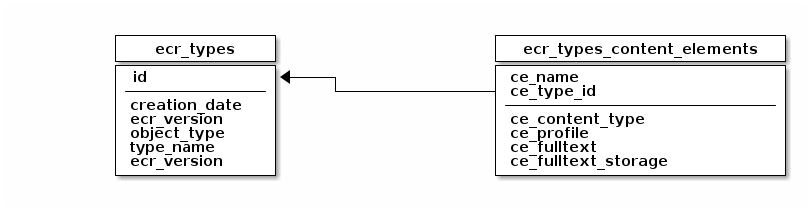
| Column | Type | Description |
|---|---|---|
id |
int4 |
ID of the type definition |
creation_date |
timestamp |
Creation date and time |
object_type |
text |
Type of the objects in the type definition |
type_name |
text |
The name of the type definition |
ecr_version |
text |
Version of the Content Repository Service that created the tables for the type definition |
| Column | Type | Description |
|---|---|---|
ce_name |
text |
The name of the content element |
ce_type_id |
int4 |
The ID of the type definition containing the content element |
ce_content_type |
text |
The allowed content type of the content element |
ce_profile |
text |
The name of the storage profile used by the content element |
ce_fulltext |
boolean |
Whether fulltext extraction is enabled for the content element or not |
ce_fulltext_storage |
text |
Storage type of the extracted fulltext data |
Folder structure tables
The object type FOLDER is used to create tree-like structures with parent- and child-relationships. The structure is stored in the ecr_folder_structure table. The table ecr_folder_structure_closure contains a transitive hull of the parent- and child-relationships to allow fast database queries in the tree.
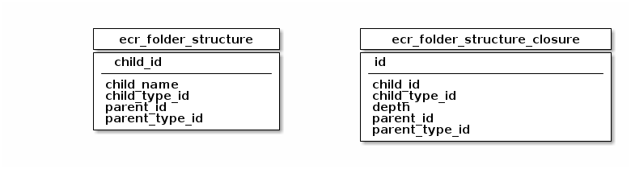
| Column | Type | Description |
|---|---|---|
child_id |
int8 |
The ID of the child-folder |
child_name |
varchar(128) |
The name of the child-folder |
parent_id |
int8 |
The ID of the parent-folder |
parent_type_id |
int4 |
The ID of the parent type definition |
| Column | Type | Description |
|---|---|---|
id |
uuid |
The ID of the entry in the closure table |
child_id |
int8 |
The ID of the child-folder |
child_type_id |
int4 |
The ID of the child type definition |
depth |
int4 |
The distance between the child and the parent on the direct path in the tree |
parent_id |
int8 |
The ID of the parent folder |
parent_type_id |
int4 |
The ID of the parent type definition |
Keystore tables
When the encryption feature is enabled for a storage profile, the generated keys are stored in
profile-specific database tables. For each encrypted profile, a table called ecr_keys-<profile> and a table called
ecr_keys_assoc_<profile> is created. The ecr_keys_<profile> table contains the generated keys, and the
ecr_keys_assoc_<profile> table contains the associations between content elements and keys.
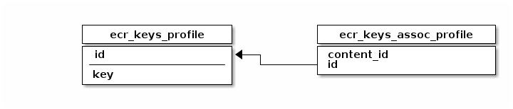
| Column | Type | Description |
|---|---|---|
id |
int8 |
The ID of the key |
key |
bytea |
The encryption key |
| Column | Type | Description |
|---|---|---|
content_id |
text |
The ID of the content element |
id |
int8 |
The ID of the key |
Appendix
Compatibility List
The following table lists the current version numbers of the arveo services.
| Service | Version |
|---|---|
Content Repository Service |
28.1.0-SNAPSHOT (API-version: 1.2.0) |
Configuration Service |
8.0.1 |
Registry Service |
8.0.1 |
Administration Service |
8.0.1 |
Job Service |
13.0.1 |
Audit Service |
11.0.1 |
Document Conversion Service |
11.1.2 |
Integration Service |
13.0.1 |
TUS Upload Service |
8.0.1 |
Download Service |
13.0.0 |
MS365 Import Service |
18.0.0 |
ArchiveLink Service |
17.0.0 |
Universal Import Service |
10.0.0 |
Litigation Management Service |
3.0.0 |
ILM Service |
2.0.0 |
WebDav Service |
2.0.0 |
The following table lists 3rd party services used in arveo.
| Service | Supported Version | Comment |
|---|---|---|
JDK |
Java 21 |
Integration tests run on Eclipse Temurin 21, but all JDKs are supported |
ActiveMQ |
ActiveMQ 6.2.1 |
|
PostgreSQL |
postgres 18.1 |
|
S3 Storage |
Ceph 15, 16 |
|
File System |
NFS |
|
Authentication Services |
Keycloak 26.4.0 |
Can be combined with Microsoft Active Directory (LDAP) or Microsoft EntraID (OIDC). |
SSO |
OAuth2.0, Kerberos |
Kerberos requires usage of user federation in Keycloak with Active Directory |
Release Notes
Release notes 28.1.0-SNAPSHOT (August 30, 2026)
Details
New Features
-
ECR-1895: Added api call to retrieve information about registered enumeration types
Changes
-
ECR-1890: Optimized performance when uploading huge files with unspecified content length.
Bug Fixes
Interface breaking changes
Configuration changes
Manual migration steps
Release notes 28.0.0 (August 05, 2026)
Details
New Features
-
ECR-1682: A new system job that scans a type definition for missing blobs on the storage was added.
-
ECR-1756: The TypeScript SDK now provides a container data provider, and the document data provider supports attribute-only updates and content removal.
-
ECR-1763: A new API method was added that returns the current user’s access rights for all type definitions.
-
ECR-1779: Descriptions are now available via API to support AI applications.
-
ECR-1791: The API now allows to add annotations in regular create- and update-operations (including batches).
-
ECR-1804: Type definitions can now contain special rendition content elements for thumbnails.
-
ECR-1809: The ecr-shell now offers commands to reset the rendition- and full-text-extraction status.
-
ECR-1819: A fluent builder API for batch operations is now available in the Java and C# SDK clients. The API supports create, update, overwrite, delete, upsert (create-or-update / create-or-overwrite), and assertion operations for containers, documents, folders, metadata, and relations.
-
ECR-1845: Enhanced support for PDF/A renditions. It is now possible to define a rendition in a way that ensures that the rendition will contain a PDF/A. Also, the Rendition annotation is now repeatable to make it possible to define multiple renditions.
-
ECR-1848: A new C# SDK was added that replicates the structure and features of the generic Java SDK.
-
ECR-1881: A precision setting was added to the
TimeDataType(seconds or milliseconds). The default is seconds. Use@TimePrecisionannotation to select the precision.
Changes
-
ECR-1752: The version of the Quartz scheduler was updated to 2.5.2. This mitigates CVE-2026-27727.
-
ECR-1753: To avoid system overload, the number of concurrent JMS message listener executions is now limited to 10 (configurable).
-
ECR-1758: Updated Spring Boot and Spring Security to mitigate CVE-2026-22732.
-
ECR-1776: The generic API now accepts arveo property values as strings if their format is valid. Numerical property values can also be provided by any java.lang.Number implementation.
-
ECR-1777: The way services perform calls on behalf of a human user was changed. It now uses the OAuth2 standard token exchange mechanism.
-
ECR-1827: Update to Spring Boot 4.1.0.
-
ECR-1876: Content stored in temporary files is now encrypted by default
-
ECR-1889: Multipart request parts that are stored in temporary files are now encrypted by default
Bug Fixes
-
ECR-1724: Several bugfixes regarding the referencing and reading of empty content elements.
-
ECR-1743: Changed HTTP status codes in DatabaseConstraintViolationException were changed back to 400 to avoid (de-)serialization issues.
-
ECR-1745: The RetryRenditionsJob is no longer executed in parallel.
-
ECR-1755: Fixed updating of renditions when content was updated.
-
ECR-1762: The Swagger UI is displayed correctly again.
-
ECR-1783: Removed an invalid dependency to an outdated snapshot version of eitco-oss-commons-parent.
-
ECR-1791: Fixed SQL generation for batch updates with mixed version handling.
-
ECR-1801: Fixed a bug in the version history import that resulted in empty content information for a document-version without changed content.
-
ECR-1810: The server no longer logs an error when a create-rendition message is received for a version that does not exist any more.
-
ECR-1811: The automatic detection of database object name collisions was fixed. This only affects database object names with a length > 63 chars.
-
ECR-1849: The wrongly generated c# client code for DocumentResource.ReadContentAs() was fixed by updating the asdl dependency to a fixed version.
-
ECR-1856: Excluded views from system job trigger creation.
-
ECR-1857: Fixed SQL query generation for types with unversioned variables.
-
ECR-1858: The write concurrency must be limited to prevent heap space exhaustion as the Azure blob storage library allocates a 4 MiB sized buffer for each ongoing upload which can easily cause OutOfMemoryErrors during large batch uploads. Use the newly introduced new storage plugin settings
maxWriteConcurrency(default 32) to fix this. -
ECR-1861: Internal rendition service now bypasses access checks to be able to create renditions on-the-fly for access protected document types.
-
ECR-1883: Changes in the precision settings for bigdecimal fields are now applied to the database schema.
Interface breaking changes
-
ECR-1791: Annotations now use double instead of int for position and width values to avoid rounding errors.
-
ECR-1855: Added nullability annotations to EQL classes in Java. This has interface-breaking consequences for the generated sources for C# and TypeScript, as non-null values for most members are now enforced. For example, the
queryExtensionsmember ofSearchRequestmust not be null from now on.
Configuration changes
-
ECR-1777: The custom impersonation feature was replaced with the OAuth2 standard token exchange. See the chapter OAuth2 Authentication in the documentation for details on how to configure Keycloak and the services.
-
ECR-1858: Introduced new storage plugin settings
maxWriteConcurrency(default 32) andwriteAcquireWarnMillis(default 250) for all chunking storage plugins (File system, S3, Azure blob). They bound the number of chunks written to a storage backend concurrently per storage profile, which reduces heap memory consumption during large batch uploads. -
ECR-1866: The REST API version was changed to 1.2.0. This must be configured in Kubernetes service annotations.
Manual migration steps
Release notes 27.0.0 (March 11, 2026)
Details
Finished stories and bugs
- ECR-1592: - Attribute Inheritance using folder hierarchy
-
Attributes can now be inherited from the parent folder.
- ECR-1607: - Implement WebDAV service
-
The WebDAV extension for the Content Repository Service was added.
- ECR-1635: - ecr-webdav/ilm: implement ilm specific features
-
The ILM extension for the Content Repository Service was added.
- ECR-1648: - Add trigger that raises an exception when entity under litigation hold is deleted
-
Entities in litigation hold state are now protected from deletion using a database trigger.
- ECR-1675: Added additional message headers to forwarded events
-
Additional message headers for filtering have been added to events forwarded to a JMS message queue.
- ECR-1680: Update to Spring Boot 4
-
Updated to Spring Boot 4 and Spring Cloud 2025.1.
- ECR-1691: Update AWS SDK
-
The AWS SDK used to connect S3 storage systems was updated to version 2.
- ECR-1694: Add API method to update the file name
-
The DocumentInput model can now be used to update the
fileNameproperty of content elements. - ECR-1696: Added support for PostgreSQL 18
-
PostgreSQL 18 is now supported.
- ECR-1705: Made service more robust regarding ActiveMQ outages
-
The service now handles outages of ActiveMQ properly (like setting rendition status to failed when message could not be enqueued).
- ECR-1715: Fixed checking of API version in loadbalancer for Kubernetes environments
-
The loadbalancer now filters service instances by API version correctly in Kubernetes environments.
- ECR-1717: Removed unnecessary opening of streams when creating renditions
-
Streams to content elements will be opened only when the content is required to store a new rendition.
- ECR-1739: - Content Repository Service responds with HTTP code 500 on unique constraint violation
-
Fixed HTTP response codes for unique constraint violations (now: 409) and foreign key constraint violations (now: 412)
Interface breaking changes
Configuration changes
-
Due to the update to the AWS SDK version 2, support for older signature algorithms was removed. Requests to S3 storage systems will now be signed using Amazon Signature Version 4.
-
The property
ecr.server.kubernetes.annotation-namehas been replaced bycommons.loadbalancer-version-filter.version-property. -
The property
ecr.server.kubernetes.annotation-namespacehas been replaced bycommons.loadbalancer-version-filter.annotation-namespace. -
The default value for
annotation-namespacewas changed fromde.eitco.arveotode.eitco. The configuration of the pod annotations must be changed accordingly.
Manual migration steps
Applications using the Java SDK for Spring Boot applications have to be updated to Spring Boot 4. The official migration guide explains the necessary steps: https://github.com/spring-projects/spring-boot/wiki/Spring-Boot-4.0-Migration-Guide
Release notes 26.1.3 (February 02, 2026)
Details
Finished stories and bugs
- ECR-1712: TypeDefinitionAccessRight.READ_COMMENTS cannot be used
-
Fixed the parsing of a user’s type definition specific access rights.
Interface breaking changes
Configuration changes
Manual migration steps
Release notes 26.1.2 (January 27, 2026)
Details
Finished stories and bugs
- ECR-1708: Added support for ink annotations
-
Added support for ink annotations.
Interface breaking changes
Configuration changes
Manual migration steps
Release notes 26.1.1 (January 16, 2026)
Details
Finished stories and bugs
- ECR-1706: Server fails to start when names of certain database objects are too long
-
Fixed handling of long database names for database objects.
Interface breaking changes
Configuration changes
Manual migration steps
Release notes 26.1.0 (January 13, 2026)
Details
Finished stories and bugs
- ECR-1699: Fixed incompatible nullability of arguments in C# client
-
The generated C# client now handles nullability of method and constructor arguments correctly.
- ECR-1703: Improvements for embedded usage of content repository service
-
Several improvements for the embedded usage of the content repository service.
- ECR-1704: System property getters for additional user identifiers
-
Added system property getters for the additional user identifiers of the creation and modification users.
Interface breaking changes
Configuration changes
Manual migration steps
Release notes 26.0.1 (December 16, 2025)
Details
Finished stories and bugs
- ECR-1697: Replace existing renditions when status is set to reset
-
Existing renditions will be replaced when the rendition status is set to -2 (reset).
Interface breaking changes
Configuration changes
Manual migration steps
Release notes 26.0.0 (December 11, 2025)
Details
Finished stories and bugs
- ECR-1650: Litigation-hold can now be inherited
-
The litigation-hold flag can now be inherited just like the retention-date.
- ECR-1658: Fixed database schema update for encrypted string attributes
-
When encryption is enabled on an existing string attribute the column type is now changed to bytea automatically.
- ECR-1667: Expire caches for access checks and user details
-
Caches for the access checks and user details are now expired by last write time.
- ECR-1668: Added option to disable maximum page size
-
Setting the value for ecr.server.query.max-page-size to -1 disables the page size limit.
- ECR-1689: Fixed refresh token handling in client SDKs
-
Java client SDKs for the arveo services now use refresh tokens if possible.
- ECR-1697: Fixed handling of renditions when source has same content type as target
-
Renditions are created correctly when the source content element already has the required content type.
Interface breaking changes
-
The cascadeDelete property of a foreign key definition was replaced with an on-delete-action.
Configuration changes
Manual migration steps
Release notes 25.1.1 (October 07, 2025)
Details
Finished stories and bugs
- ECR-1659: Fixed handling of unencrypted values in encrypted string attributes
-
Unencrypted values stored in encrypted string attributes are now returned usind the correct type.
Interface breaking changes
Configuration changes
Manual migration steps
Release notes 25.1.0 (October 01, 2025)
Details
Finished stories and bugs
- ECR-1615: Encryption for attribute values
-
Attributes of type String and byte-array can now be encrypted before they are stored in the database.
- ECR-1636: Added support for events in Integration Service
-
The Integration Service can now use the ecrEvent Camel data format to receive forwarded events from an ActiveMQ message queue.
- ECR-1647: New batch operation for assertions
-
A new batch operation was added that can be used to add assertions to a batch. Failed assertions will cancel the execution of the batch.
- ECR-1648: Enhanced protection of retention-protected entities
-
A database trigger was added to avoid accidental deletion of entities under litigation-hold or within a retention period.
Interface breaking changes
Configuration changes
-
The setting for the queue names for forwarded events has been changed from a string to a list to allow forwarding to multiple queues.
Manual migration steps
Release notes 25.0.0 (September 05, 2025)
Details
Finished stories and bugs
- ECR-1584: Added support for HTTP Range headers
-
arveo now supports the HTTP Range and Content-Range headers. Client applications can request a specific range of a stored content element.
- ECR-1589: Introduced API version for REST endpoints
-
The REST API now has a separate version that can be used for blue/green deployments. The initial API version is 1.0.0.
- ECR-1599: Added chunking for binary content
-
Content elements can now be stored in chunks on the storage to improve performance when using content ranges. To make this change possible, the option to store content elements without storing content metadata in the content tables was removed.
- ECR-1602: Added configurable limit for page sizes
-
A new configuration option to limit the size of pages for search results was added.
- ECR-1610: Fixed handling of precision for BigDecimal data type
-
The precision and scale of BigDecimal attributes are now handled correctly.
- ECR-1617: ecr-shell now supports device-code flow
-
The ecr-shell can now use the OAuth2 device-code flow.
- ECR-1622: Create renditions on-the-fly
-
Non-existing renditions are not created on-the-fly once they are requested by a client.
Interface breaking changes
-
The option to store content without storing content metadata in the content tables was removed.
Configuration changes
-
The configuration properties
schema.initializer.enabledandliquibase.initializer.enabledwere removed. The chapter Database schema creation in the documentation contains more information about controlling automatic schema initialization.
Manual migration steps
The option to store content elements without meta data (not using the JSONB field) was removed. Data already stored in such type definitions must be migrated before updating to version 25.0.0! Furthermore, type definitions using this option will not compile using the updated arveo dependencies. This change does not affect type definitions using the default options to store content.
Release notes 24.0.0 (July 01, 2025)
Details
Finished stories and bugs
- ECR-1553: Replaced HTTP client implementation in Spring SDK
-
The Spring HTTP SDK no longer uses the outdated RestTemplate, which caused memory issues when uploading large files.
- ECR-1559: Added download command to ecr-shell
-
The ecr-shell can now be used to download the content of documents.
- ECR-1567: Added update command to ecr-shell
-
The ecr-shell can now be used to update attributes of entities.
- ECR-1569: Added option to ignore content in upsert
-
Added an option to ignore content when an update is performed in an upsert operation.
- ECR-1571: Removed JMS statistics system job
-
The system job that collected JMS statistics was removed because it caused a memory leak in ActiveMQ. ActiveMQ can be monitored using its JMX or Jolokia interface instead.
Interface breaking changes
Several classes from the ASDL runtime were moved to different packages. Code using the Non-Spring SDK must be updated.
Configuration changes
Manual migration steps
Release notes 23.0.0 (May 27, 2025)
Details
Finished stories and bugs
- ECR-1530: Add internal IDs of technical users to ID mapping table
-
IDs of technical users assigned by the IDP are now added to the ID mapping table.
- ECR-1533: Store annotations on content elements
-
API methods to store annotations on content elements were added.
- ECR-1543: Fixed quiet delete of Azure blob storage plugin
-
The plugin now correctly handles exceptions returned by Azure blob storage when an already deleted blob was deleted by the plugin.
- ECR-1551: Calling purge disables the trigger used to delete content asynchronously
-
Fixed the trigger to correctly evaluate the
ecr.purge_content_trigger.enabledsetting.
Interface breaking changes
-
The
deletedattribute of arveo entities was moved into the newflagsattribute, which contains additional information about the state of the entity. Code that used thedeletedattribute of the generic entity classes must be adapted.
Configuration changes
Manual migration steps
The fix for ECR-1551 will only be applied when the server is started in schema-update-mode once.
Release notes 22.0.3 (March 11, 2025)
Details
Finished stories and bugs
Interface breaking changes
Configuration changes
Manual migration steps
Release notes 22.0.2 (February 24, 2025)
Details
Finished stories and bugs
- ECR-1480: Check for unsupported indexes on array attribute
-
The server will not start when an unsupported index definition on an array attribute was found.
- ECR-1499: Fixed deleteAndReturn method in SDK for MetaData types
-
Fixed a bug in the deleteAndReturn(List<IdType>) method in TypedMetaDataServiceClient.
- ECR-1511: Fixed supported language version in annotation processors
-
The supported source language version of the type definition processor and the ASDL processor was increased to 21.
Interface breaking changes
Configuration changes
Manual migration steps
Release notes 22.0.1 (February 09, 2025)
Details
Finished stories and bugs
Interface breaking changes
Configuration changes
Manual migration steps
Release notes 22.0.0 (February 07, 2025)
Details
Finished stories and bugs
- ECR-1465: New system job to clean up storage profiles
-
A new system job was added that can find abandoned objects in storage profiles.
- ECR-1477: Unique constraint on creator user disables updates on type
-
Fixed a bug that caused updates to fail when a unique constraint was added to a system field.
- ECR-1478: Forward events to a message queue
-
Events can now be forwarded to ActiveMQ message queues.
- ECR-1481: Added support for PDF and HTML renditions of X-Rechnung documents
-
It is now possible to automatically create PDF or HTML renditions of XML documents conforming to X-Rechnung standard.
- ECR-1484: Check content length information from client
-
The server now checks the content size of uploaded content that was declared by the client. If the size does not match the actual size, an exception will be thrown.
- ECR-1491: Added possibility to configure database timeouts
-
Timeouts for SQL statements and/or transactions can now be configured.
- ECR-1493: Fixed publishing of delete content events
-
Events related to the deletion of content are fired again.
- ECR-1494: New system job to delete abandoned objects in storage
-
A new system job was added that can delete abandoned objects in storage profiles.
Interface breaking changes
Configuration changes
The property for the system ID for the jobs of the Content Repository Service running in an external Job Service instance
was changed from ecr.jobs.external.system-id to ecr.system.system-id.
Manual migration steps
Release notes 21.0.0 (December 09, 2024)
Details
Finished stories and bugs
- ECR-274: Added support for case-insensitive string array attributes
-
It is now possible to perform case-insensitive queries on string array attributes.
- ECR-1458: Content of documents deleted by cascading foreign key was not removed
-
Content elements of documents deleted on the database and not using the API will now be removed from the storage.
- ECR-1459: Batch Api: order operations in dependency order
-
Every call of the batch api now orders the batches elements so that attribute references are honoured i.e. should element a refer to element b it is assured that element b is executed before element a.
- ECR-1463: Improved behavior of delete and purge methods
-
The behavior of the delete- and purge-methods was improved to avoid misunderstandings and leftover content elements in the storage system. The content of deleted documents will now always be deleted from the storage, too. For details see documentation.
- ECR-1472: Updated to Spring Boot 3.4
-
Spring Boot was updated to version 3.4. Spring Cloud was updated to version 2024.0.
- ECR-1473: Internal and external job scheduler can now be used simultaneously
-
It is now possible to use both the internal and the external job scheduler simultaneously.
Interface breaking changes
-
The recovery table feature was removed. The method to clean up the recovery table was removed from the system management API. We recommend regular backups of the database- and storage-system instead.
-
The compliance-delete feature was removed. The associated system field and the complianceDelete API methods have been removed.
Configuration changes
-
The configuration option for the asynchronous mode of the retention cleanup job was removed. Instead, the job can now use the purge method instead of the delete method to achieve a similar behavior.
Manual migration steps
The name of the internal Quartz scheduler used in the Content Repository Service was changed from quartzScheduler to
content-repository-service-scheduler. All triggers for the system jobs will be re-created with the new scheduler name
automatically. Manual changes made to the old triggers have to be applied manually to the newly created triggers if required.
Release notes 20.0.0 (October 24, 2024)
Details
Finished stories and bugs
- ECR-1431: Actuator endpoints can now be secured using OAuth2
-
It is now possible to secure actuator endpoints (except info and health) using OAuth2. A user or service accessing secured actuator endpoints must have a configurable authority.
- ECR-1435: Removed ActiveMQ dependency from HTTP SDK
-
The dependency to activemq-client was removed from the HTTP SDK.
- ECR-1439: Removed SOLR integration
-
The SOLR integration was removed. The full text features of the PostgreSQL database can be used instead.
- ECR-1448: Full text data not extracted after update
-
Full text data was not extracted when a client performed an update immediately after the creation of a new document.
- ECR-1137: Initial upload for scenario data
-
A command line shell tool was implemented capable of importing scenario data
- ECR-1455: Limit number of IDs in delete requests for S3 and Azure Blob Storage plugins
-
The number of IDs contained in one delete request sent to an S3 or Azure Blob Storage instance are now limited. Larger lists will be split into several requests.
- ECR-1456: Split messages for purge and delete-recycled queues
-
Messages containing many entity IDs are now split into several messages with a configurable number of IDs.
Interface breaking changes
-
The classes
EcrJmsDestinations,EcrJmsQueueNamesandObjectMessagePayloadwere moved fromecr-commonstoecr-jms. The package of these classes is nowde.eitco.ecr.jms. -
Type definition interfaces that used the
@NoSQLannotation or full text extraction must be adapted:-
The
@NoSQLannotation has to be removed. -
Full text extraction is now configured as shown in the example below:
-
@ContentElement(name = "content", fulltextExtraction = @FullTextExtraction(fullTextLanguage = FullTextLanguage.ENGLISH))Configuration changes
The deprecated setting for the migrated tenant ID was removed. A system ID must now be configured for each system:
ecr:
server:
system:
system-id: 0The system ID is of type short and is used to guarantee that entity IDs of different systems are unique. This makes it possible to merge two systems at some time in the future. The old default value was 0.
Manual migration steps
Release notes 19.2.1 (September 20, 2024)
Details
Finished stories and bugs
Interface breaking changes
Configuration changes
Manual migration steps
Release notes 19.2.0 (August 26, 2024)
Details
Finished stories and bugs
- ECR-1419: Schema updates are now synchronized across service instances
-
Schema updates at startup time are now synchronized across different instances of the repository service using a lock managed by the database.
- ECR-1422: Fixed handling of null values in additional user identifiers
-
Null values in the additional_identifier column of the cmn_external_users table are now handled correctly.
- ECR-1423: Fixed possible race condition on user id table
-
A possible race condition on the table managing user IDs was fixed.
- ECR-1425: Added missing indexes on rendition and full text retry counter fields
-
Indexes on the retry counter fields for renditions and full text extraction are now created automatically.
- ECR-1426: Variables were not updated in create-or-update operation
-
Fixed a bug that caused variables not to be updated in a create-or-update operation on a document.
Interface breaking changes
Configuration changes
Manual migration steps
Release notes 19.1.1 (August 16, 2024)
Details
Finished stories and bugs
- ECR-1421: Variables not stored in create-or-update operation
-
Fixed a bug in the batch operation service that caused the variables not to be stored in created or updated entities.
Interface breaking changes
Configuration changes
Manual migration steps
Release notes 19.1.0 (August 12, 2024)
Details
Finished stories and bugs
- ECR-1346: Add support for 'endswith' queries in full text data
-
It is now possible to use prefix (starts-with) and suffix (ends-with) matching in full text queries.
- ECR-1350: Add API methods to retrieve full text data
-
Added new API methods to retrieve full text data stored in the relational database.
- ECR-1359: Validation support for type definition interfaces
-
It is now possible to define SpEL expressions to validate attribute values in create and update operations.
- ECR-1404: Get additional user identifiers from modification information
-
A client can now get the additional user identifiers from an entity’s modification information.
- ECR-1409: Added system job to retry failed full text extractions
-
Failed full text extractions can now be retried using a system job.
Interface breaking changes
Configuration changes
Manual migration steps
Release notes 19.0.0 (July 05, 2024)
Details
Finished stories and bugs
- ECR-1385: Schema creation using JOOQ
-
The creation of the tables, indexes, sequences etc. for type definitions now uses JOOQ to access the database. The system will no longer generate Liquibase scripts for type definitions.
- ECR-1282: Upgrade to Java 21
-
arveo now uses Java version 21 and can use virtual threads to improve the performance in situations with many parallel requests.
| Java versions prior to 21 can no longer be used to run arveo. |
- ECR-1329: Simplified security configuration
-
The configuration property
security.general.open-ant-matcherswas removed. From now on, all paths not matched by the matchers configured insecurity.general.secured-ant-matchersdo not require authentication. - ECR-1393: Fixed quoting of enum type names
-
Enumeration type names were not quoted correctly when the database schema is created. This caused enum types with custom names using upper and lower case letters to be created even when they already existed.
Interface breaking changes
-
The
FileSystemPluginChangeSetSupplierinterface was removed. Storage plugins, that need to modify the database schema, can now use the interfaceStoragePluginSchemaModifierto modify the schema using JOOQ. -
The
streamingendpoint’s URL was change from/api/streamingto/streaming.
Configuration changes
-
The property
liquibase.initializer.enabledwas renamed toschema.initializer.enabled. -
The configuration property
security.general.open-ant-matcherswas removed.
Manual migration steps
- ECR-1393
-
Enum definitions using custom names (
@Enumerationannotation) with upper case letters must either be changed to an all lower case name or the name of the type on the database must be changed manually before the update.
Release notes 18.0.0 (May 31, 2024)
Details
Finished stories and bugs
- ECR-1342: Added ability to store extracted full text data in Postgres database
-
It is now possible to store extracted full text data in the Postgres database.
- ECR-1343: EQL now supports searching for full text in Postgres database
-
The EQL can now be used to search for full text matches in the Postgres database using Postgres' web search feature.
- ECR-1358: Performance optimizations for like, startsWith and endsWith queries
-
Case-insensitive like-, startsWith- and endsWith-queries can now use text matching indexes on the database.
- ECR-1360: Added missing not-null constraint on latest_version_id column
-
A missing not-null constraint was added to the latest_version_id column and the existing unique index for this column was replaced by a unique constraint.
- ECR-1361: Ranking full text search results
-
The rank of full text search results can now be calculated and used for ordering (for the Postgres database).
- ECR-1345: Highlighting full text search results
-
The system can now generate a headline for each query result that highlights matches words (for the Postgres database).
- ECR-1380: System separation in ActiveMQ
-
It is now possible to use one ActiveMQ cluster for multiple arveo systems.
- ECR-1388: Fixed SOLR health indicator
-
The SOLR health indicator was fixed.
- added code generator for types safe eql extension
-
Interface breaking changes
Configuration changes
The naming of the queues in ActiveMQ was changed to support the usage of one ActiveMQ cluster with multiple arveo systems. Each queue is now prefixed with a system ID. The dead letter queue names now use the DLQ suffix instead of the DLQ prefix. Therefore, the policy entries for the dead letter queue stategies have to be changed. The new policies can be found in the documentation. The system will create the new queues automatically. The old queues can be deleted manually.
| Make sure that the queues are empty before updating the system. Otherwise, queued jobs like automatic rendition creation might be lost. |
The property ecr.server.system.migration.main-migrated-tenant-numerical-id has been deprecated and will be removed in a
future version. The system ID can now be configured using the property ecr.server.system.system-id.
Manual migration steps
Release notes 17.0.0 (April 23, 2024)
Details
Finished stories and bugs
- ECR-1303: Added non-spring java client
-
A new client library without dependencies to the Spring framework was added. The library uses the generic low-level API.
- ECR-1316: Removed ACL feature and dependencies to internal user management
-
The ACL feature was removed. Access rights are managed using attribute based access control now. The arveo services are now completely independent of the internal user management and can be used with any AuthX service supporting OAuth2. The User Management Service is now deprecated and should not be used in production environments anymore.
- ECR-1322: Added feature to define security attributes
-
It is now possible to mark properties as security-properties. Security property values can only be changed by users with CHANGE_ACCESS_RIGHTS authority.
- ECR-1335: Removed legacy tenant separation feature
-
The integrated tenant separation by a system defined user attribute and database column was removed. Tenants can still be separated by a custom attribute using ABAC, by separate type definitions or by separate service instances using a different database.
- ECR-1344: Added support for text similarity indexes
-
Support for special indexes to speed up text similarity determination was added. On Postgres, GIN indexes with trigram ops can be created automatically unsing the new
@IndexedForTextMatchingannotation. AnEndsWithExpressionwas added to the EQL to provide a convenient way to match strings with a leading wildcard. - ECR-1355: Duplicate index on primary key id
-
The system will no longer create duplicate unique indexes for the ID column.
Interface breaking changes
-
The support for ACLs was removed. This affects all entity input types (except for meta-data-types). API methods for ACL management have been removed, too.
-
Authentication related classes like
CommonAuthenticationandExternalUserDetailshave been moved to another package (de.eitco.commons.spring.authentication). -
The
idfield of theCommonAuthenticationhas been changed to String to support generic IDs. The internal ID of type long is now contained in the fieldinternalId. -
The classes
ModificationStampandUserIdhave been moved to the packagede.eitco.ecr.common. -
The
AclRightenumeration was renamed toAccessRight. -
The
AuthenticationContextclass for ABAC security methods now provides convenience methods to access theCommonAuthenticationin the spring security context. Other members of the class were removed. -
ACL-related type definition annotations have been removed.
-
The system property name
INITIAL_CREATION_USERwas renamed toINITIAL_CREATION_USER_IDto avoid problems when using generated JOOQ records as type definitions. -
The annotation
GenerateNameConstantswas moved to the packagede.eitco.ecr.type.definition.processorin the new moduleecr-type-definition-processor. -
The unused annotation
AttributeDefinitionNamewas removed. UseNameinstead. -
Formatted counters now are treated as case-insensitive.
Configuration changes
The services no longer require a specific authority to authorize a request. Access to different services can still be controlled using the audience (aud) claim of the JWT. If the old behavior is still required, it can be activated by configuring the required authority as shown below:
security:
general:
role-for-secured-access: "REQUIRED_AUTHORITY"Manual migration steps
Release notes 16.1.1 (February 08, 2024)
Details
Finished stories and bugs
- ECR-1331: Better support for impersonated userd in ABAC
-
It is now possible to get the original user token of an impersonated user in ABAC security methods.
Interface breaking changes
Configuration changes
Manual migration steps
Release notes 16.1.0 (February 02, 2024)
Details
Finished stories and bugs
- ECR-1323: New "Release Note" page on arveo GitHub page
-
Beginning from version 16.1.0, we add release notes as new GitHub page.
- ECR-1328 New system field for the initial creation user id
-
A new system field was added that stores the ID of the user who created the initial version of an entity.
Interface breaking changes
Configuration changes
Manual migration steps
ECR-1328 added a new system field, which requires a manual migration for existing database tables. The new field contains the ID of the user who created the initial version of an entity. The following script can be used to migrate existing tables:
do $$
declare
rec record;
begin
for rec in select distinct "table_name" FROM "information_schema"."columns" WHERE "table_schema"='integrationtest' AND "column_name"='version_number' and "table_name" not like '%_ver' and "table_name" not like '%_con'
loop
execute format('alter table "%1$s" add column "initial_creation_user_id" int8', rec.table_name);
execute format('update "%1$s" set "initial_creation_user_id" = (select "creator_user_id" from "%1$s_ver" v where v."entity_id" = "id" and v."version_number" = 1)', rec.table_name);
execute format('alter table "%1$s" alter column "initial_creation_user_id" set not null', rec.table_name);
end loop;
end $$;Release notes 16.0.0 (January 23, 2024)
Details
Finished stories and bugs
ECR-1291: Unchanged type definitions no longer cause entries in the databasechangelog table.
ECR-1301: Fixed a bug that caused missing entries in the content tables after a batch update.
Interface breaking changes
Configuration changes
- ECR-1260: ACLs are now disabled by default.
-
Beginning from version 16.0.0, the ACL feature is now disabled by default for a type definition. The
@AclDisabledannotation is no longer checked and can be removed. Instead, to enable ACLs, add the@Aclsannotation to all type definitions that use ACLs. To disable ACLs for a type definition that had the ACL feature enabled it is necessary to drop theacl_idcolumn from the type definition’s main table manually from the database.
Release notes 15.1.0 (November 20, 2023)
Details
Finished stories and bugs
ECR-1242: Added support for variables.
ECR-1283: Added support for variables in SOLR.
ECR-1292: Service won’t try to render content elements that cannot be rendered anymore.
Interface breaking changes
Configuration changes
To be able to store variables in SOLR, the managed-schema configuration file for SOLR must be adapted. Variables are stored as dynamic fields in SOLR, so one dynamic field for each type of variable must be added:
<dynamicField name="*_integer.var" type="integer" indexed="true" stored="true"/>
<dynamicField name="*_long.var" type="long" indexed="true" stored="true"/>
<dynamicField name="*_double.var" type="double" indexed="true" stored="true"/>
<dynamicField name="*_date.var" type="date" indexed="true" stored="true"/>
<dynamicField name="*_boolean.var" type="boolean" indexed="true" stored="true"/>
<dynamicField name="*_uuid.var" type="uuid" indexed="true" stored="true"/>
<dynamicField name="*_string.var" type="string" indexed="true" stored="true"/>
<dynamicField name="*_lowercase.var" type="lowercase" indexed="true" stored="true"/>Release notes 15.0.4 (November 30, 2023)
Details
Finished stories and bugs
ECR-1299: Improved handling of ACL right calculation to avoid system blockage due to long running transactions.
ECR-1300: Added configuration option for batch operation limit.
Interface breaking changes
Configuration changes
ECR-1300 added configuration option for batch operation limit. The batch operation limit can now be configured using the property ecr.server.system.batch-operation-limit. The default value is 100000. To disable the limit, set the property to -1.
Release notes 15.0.3 (October 20, 2023)
Details
Finished stories and bugs
ECR-1289: Fixed download problems regarding XML content.
Interface breaking changes
Configuration changes
Release notes 15.0.1 (October 13, 2023)
Details
Finished stories and bugs
ECR-1261: Fixed quoting of table names in generated liquibase scripts.
ECR-1277: TypeDefinitionInvocationHandler no longer throws an UninitializedPropertyAccessException when the delegate object is null.
ECR-1280: CreateRenditionsListener no longer pollutes the log with error messages and stack traces.
ECR-1242: Fixed recognition of changed indexes for schema update.
Interface breaking changes
Configuration changes
Release notes 15.0.0 (September 12, 2023)
Details
Finished stories and bugs
ECR-1038: HTTP endpoints now set Content-Type and Content-Length headers when reading content.
ECR-1166: Added initial creation date to modification information.
ECR-1194: Added client methods to update or overwrite multiple entities with different input data.
ECR-1200: Fixed potential insertion of outdated data in NOSQL database.
ECR-1202: Added switches to disable individual message listeners.
ECR-1254: Content access tokens now work with external OAuth user authentication.
ECR-1255: Service now contains a Swagger UI.
ECR-1257: Added endpoint that returns possible type definition access right values.
Interface breaking changes
Configuration changes
ECR-1200 fixed potential insertion of outdated data in NOSQL database.
The fix requires changes in the SOLR configuration.
Add the following field in managed-schema:
<field name="nosql_version_number" type="integer" indexed="true" stored="true" required="true" multiValued="false" />Add the following entry in solrconfig.xml:
<updateRequestProcessorChain name="docCentricVersioning">
<processor class="solr.DocBasedVersionConstraintsProcessorFactory">
<str name="versionField">nosql_version_number</str>
<bool name="ignoreOldUpdates">true</bool>
<bool name="supportMissingVersionOnOldDocs">true</bool>
</processor>
<processor class="solr.LogUpdateProcessorFactory" />
<processor class="solr.RunUpdateProcessorFactory" />
</updateRequestProcessorChain>For more details see: https://solr.apache.org/guide/solr/latest/indexing-guide/partial-document-updates.html#document-centric-versioning-constraints
ECR-1166 added initial creation date to modification information.
Use a getter of type EcrModificationInformation for the system property MODIFICATION_INFO to access the initial creation date.
Release notes 14.0.0 (August 01, 2023)
Details
Finished stories and bugs
ECR-1109: Updated to Spring Boot 3.1.
ECR-1192: Simplified internal job authentication.
ECR-1206: Implemented resumable uploads.
ECR-1207: Better error message when data types in query parameters do not match.
Interface breaking changes
Configuration changes
Migration guide for arveo version 14.0.0
The following steps are necessary when updating to arveo version 14.0.0.
-
Use a Java 17 runtime. arveo 14.0.0 cannot run on Java 11.
-
Adapt your Spring Boot Starter used to register type definitions according to the [Spring Boot Migration Guide](https://github.com/spring-projects/spring-boot/wiki/Spring-Boot-3.0-Migration-Guide#auto-configuration-files).
-
Install the new [Authorization Service](https://git.eitco.de/projects/CMN/repos/authorization-service/browse)
-
Migrate OAuth client configuration
-
The Authorization Server feature (including the management of OAuth Clients) has been removed from the User Management Service and has to be migrated to the new Authorization Service.
-
OAuth Clients stored in the database will be removed (the entire table will be dropped). The Authorization Service uses the standard Spring Boot configuration mechanism to load registered clients.
-
A sample configuration file can be found in
test/basic-environment-test/tests/src/test/resource-templates/config/authorization-service.yaml -
The Authorization Service uses an embedded User Management Service to access the user database. Configuration properties for the User Management Service contained in
test/basic-environment-test/tests/src/test/resource-templates/config/application.yamlare read by the Authorization Service, too! -
The User Management Service now uses the same OAuth2 implementation as the other services. The configuration has to be adapted accordingly. See
test/basic-environment-test/tests/src/test/resource-templates/config/user-management-service.yamlfor an example. -
Migrate configuration for file- and request-size limits. arveo now uses the default Spring configuration properties:
`yaml
spring:
servlet:
multipart:
max-file-size: 100MB
max-request-size: 100MB
`
- New authentication for jobs running in the embedded job scheduler (ECR-1192)
-
Jobs running in the embedded job scheduler now use an internal authentication mechanism and no longer require the configured job user. On systems without a standalone Job Service, the job user can be removed.
Release notes 13.1.1 (December 07, 2023)
Details
Finished stories and bugs
ECR-1301: Fixed a bug that caused missing entries in the content tables after a batch update.
Interface breaking changes
Configuration changes
Release notes 13.1.0 (June 07, 2023)
Details
Finished stories and bugs
ECR-1193: Several fixes for JOOQ records used as type definitions.
ECR-1198: Content information is now stored in SOLR.
Interface breaking changes
Configuration changes
ECR-1198 The content information of document type objects is now stored in a field called "content" in SOLR. The default schema configuration already contains a field called "content" with a different data type. This field has to be removed, as the used data type uses tokenizing. The provided schema configuration in the tests module was changed accordingly.
Release notes 13.0.7 (June 01, 2023)
Details
Finished stories and bugs
ECR-1184: Enhanced handling of content references for solr.
ECR-1186: Fixed configuration of OriginalUserTokenDecoder using issuerUri.
ECR-1195: Fixed overwrite mode in createOrOverwrite calls.
ECR-1197: Use SOLR field type 'lowercase' for case-insensitive string fields.
Interface breaking changes
Configuration changes
ECR-1197 fix requires a re-initialization of the SOLR schema and the SOLR index.
Release notes 13.0.5 (May 11, 2023)
Details
Finished stories and bugs
ECR-1183: Fixed possible NullPointerException in SolrModelFactory.
ECR-1174: SOLR schema is created correctly now when types are updated.
Interface breaking changes
Configuration changes
Release notes 13.0.4 (April 20, 2023)
Details
Finished stories and bugs
ECR-1138: Server won’t start any more if two file system plugin profiles use the same storage path.
Interface breaking changes
Configuration changes
Release notes 13.0.0 (March 29, 2023)
Details
Finished stories and bugs
ECR-1146: Better logging for login errors.
ECR-1152: Database exceptions are now propagated.
ECR-1155: Removed unnecessary dependencies from ecr-embedded.
ECR-1158: Added support for attributes of type LocalDateTime.
ECR-1163: Added new batch operation for delete with selector.
Interface breaking changes
Configuration changes
Release notes 12.0.0 (March 10, 2023)
Details
Finished stories and bugs
ECR-865: Implemented cascading of recycle operations.
ECR-1115: Implemented content access tokens for external users.
ECR-1121: Updated to SOLR 9.1 to mitigate CVE-2022-39135.
ECR-1125: Added job to clean up entities with expired retention.
ECR-1127: Added support for Kubernetes service discovery.
ECR-1130: Added convenience method for Base64 upload to Java SDK.
ECR-1134: Fixed count queries in SOLR.
ECR-1139: Performance enhancements for batch processing.
ECR-1140: Added support for classes for type definitions.
ECR-1141: Fixed cleanup of SOLR client.
ECR-1147: Implemented asynchronous mode for retention cleanup job.
ECR-1148: Added support for arrays for multi value attributes.
ECR-1153: Fixed handling of enum types in batch updates.
Interface breaking changes
Deprecated methods have been removed
Configuration changes
The way expiration times for the caches of the repository service is configured was changed. Before, the expiration time had to be configured in seconds. Now, a duration (like 1d for one day) must be set. See the configuration properties section in the documentation for details.
ECR-1125 The quartz triggers for the system jobs have been updated. All triggers created by earlier versions will automatically be replaced by the new default triggers. Manual changes made to the triggers will be lost but can be re-applied to the new default triggers.
Release notes 11.0.1 (October 19, 2022)
Details
Finished stories and bugs
ECR-289: Extended type definition access rights
Interface breaking changes
Configuration changes
Release notes 11.0.0 (October 09, 2022)
Details
Finished stories and bugs
ECR-1045: Added new API call to get content with different media type.
ECR-1052: Updated Spring Boot to 2.7.4
Interface breaking changes
Configuration changes
Important Terminology
- ECR
-
Short for Enterprise Content Services; this is the collection of the arveo content services providing all document and record features.
- EQL
-
Eitco Query Language.
Used for search operations.
- Entity
-
Object that represents a type of data structure used in arveo.
- Document
-
An entity that can contain metadata and content.
- Folder
-
An entity that contains metadata and is organized in a tree structure like in a file system.
- Relation
-
An entity that represents a relation between two other entities.
- Container
-
Simple folder-like object not organized in a tree structure but with relations to other objects.
- Meta
-
An entity that contains only metadata.
- Content type
-
A meta specification, that classifies the data.
Examples of content types are: original object, rendition, full text, text notes, XML properties, etc.
- Retention
-
Continuous audit-proof storage of all company data for compliance or own business purposes.
- Litigation hold
-
A flag that indicates whether a document is related to a litigation.
If the flag is set the document must never be deleted - even if the retention date has passed by.
- Bucket
-
Object storage.
- Encryption
-
Translating data into unreadable forms by means of electronic or digital codes or keys.
A specific key in the form of a procedure or an algorithm is required for the reverse transformation. Then the legitimate user can access the original data.
- Annotation
-
A construct used on interfaces or getter-methods to specify their properties.
- Storage profile
-
Are used to define on which storage the content elements are saved.
- Storage Container
-
Are folders or buckets on the content storage containing documents with the same retention period (e.g. Jan-Dez 2031).